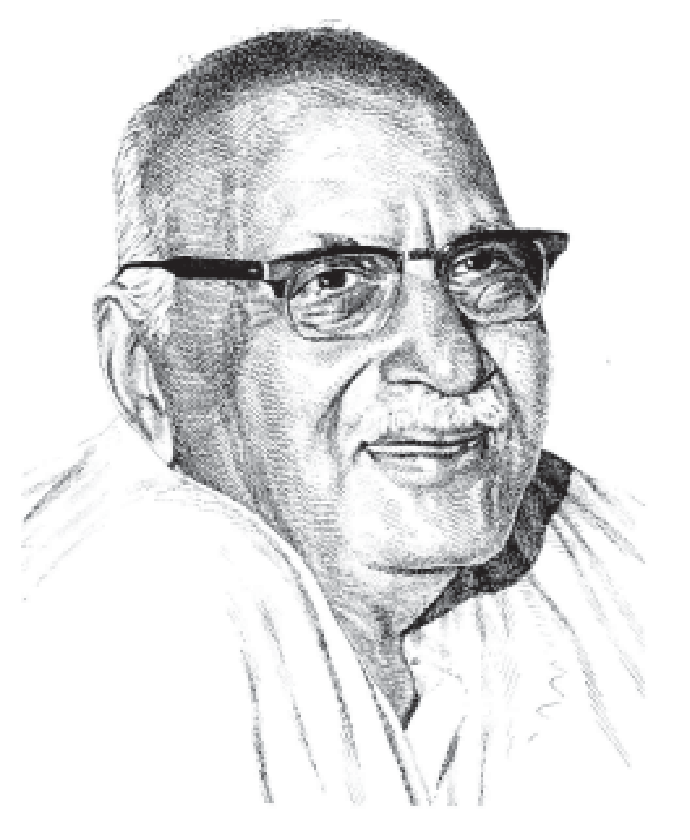

॥ श्रीहरिः ॥
योग एवं भक्ति

हनुमानप्रसाद पोद्दार
गीतावाटिका प्रकाशन, गीतावाटिका - गोरखपुर के मूल ग्रंथ
— सरल एवं सुगम पठन के लिए नवीन प्रस्तुति।
॥ ॐ श्रीपरमात्मने नमः ॥
नम्र निवेदन
भारतवर्ष अनादिकालसे ही योगियोंका और योगका केन्द्र स्थल रहा है। यहाँ कब, कितने योगी हुए, इस बातका पता लगाना असम्भव है। यहाँकी संस्कृति ही ऐसी है जिसमें साधन करनेपर सभीके लिये योगसिद्धि प्राप्त करनेका अवसर है। आजके इस जडवादपूर्ण और प्रायः सभी क्षेत्रोंमें दम्भ भरे हुए युगमें भी यहाँ ऐसे अद्भुत महात्मा योगी वर्तमान हैं जिनके होनेकी कल्पनातक अन्य देशोंको नहीं हुई।
यह सत्य है कि भौतिक सिद्धियाँ न तो बहुत बड़ी चीज है और न सच्चे महात्माओंका वे लक्ष्य ही है परंतु सिद्ध योगी महात्माओंकी सेवा करनेके लिये स्वाभाविक ही सिद्धियाँ उनके चरणोंमें उपस्थित होती हैं और न चाहनेपर भी वे उनसे सेवित होते हैं। समय-समयपर कोई-कोई महात्मा लोकोपकारार्थ उनका उपयोग भी कर लेते हैं । परन्तु महात्माओंकी दृष्टिमें जो सर्वथा भगवान्से अभिन्न स्थिति प्राप्त कर चुके होते हैं सिद्धियों और चमत्कारोंका कोई खास महत्त्व नहीं होता।
प्यारे श्यामसुन्दर भी गीतामें श्रद्धालु भक्तको ही सबसे बड़ा योगी बताते हैं।
योगिनामपि सर्वेषां मद्गतेनान्तरात्मना।
श्रद्धावान् भजते यो मां स मे युक्ततमोमतः॥ (६। ४७)
अर्थात् समस्त योगियोंमें भी मैं उसको सबसे बड़ा योगी मानता हूँ जो मुझमें मन लगाकर श्रद्धापूर्वक मेरा भजन करता है। अतः आप तो इस वियोगरूप योगका ही आश्रय लीजिये और प्यारे रामको ही अपना गुरु बनाइये। यदि उनकी इच्छा होगी तो वे आपको किसी लौकिक या अलौकिक गुरुके रूपमें प्रकट होकर किसी अन्य योगकी दीक्षा भी दे देंगे। आप स्वयं उनसे प्रेमके सिवा कोई दूसरा ग्रन्थ और उनके सिवा कोई दूसरा पथ-प्रदर्शक क्यों मानते हैं? गुरूके रूपमें तो स्वयं भगवान् ही आया करते हैं और उचित अवसर आनेपर वे स्वयं ही साधकको प्राप्त हो जाते हैं।
(संकलित)
हनुमानप्रसाद पोद्दार
॥ ॐ श्रीपरमात्मने नमः ॥
१. मन्त्र-सिद्धि
भाईजी श्रीहनुमानप्रसादजी पोद्दार
कुछ दिनों पहले ‘कल्याण’ के एक पाठक महोदयने यह शङ्का की थी कि ‘श्रीरामायणमें भरद्वाज मुनिके द्वारा सदलबल भरतजीके आतिथ्यमें जो विशाल सामग्रियोंकी व्यवस्थाका वर्णन है, वह कवि-कल्पना है, या वास्तवमें उसमें कोई तथ्य है।’ उन्हें उस समय शास्त्रोंमें विश्वास करनेकी तथा मन्त्र एवं तपसे उत्पन्न सिद्धियोंकी बात लिख दी गयी थी। अब मुझे श्रीजुगलकिशोरजी बिरलाके द्वारा मास्टर श्रीश्रीरामजीका लिखा निम्नलिखित वक्तव्य प्रकाशनार्थ मिला है। इस वक्तव्यको लिखनेवाले सज्जन इन सब बातोंमें विश्वास करनेवाले नहीं थे, पर अब उनका मत बदला मालूम होता है। मैं स्वयं कुछ दिनों पहले दिल्ली गया था, तब श्रीजुगलकिशोरजीने मुझे वह मिश्रीकी ईट दिखलायी थी और सारा हाल सुनाया था। जिन विशिष्ट सज्जनोंके सामने यह घटना हुई, उनके लिखित प्रमाणपत्र भी उन्होंने मुझे पढ़ाये थे। कुछ समय पहले काशीके स्वामीजी श्रीविशुद्धानन्दजीके भी ऐसे ही कुछ प्रयोग मैंने देखे थे, जिनको वे ‘सूर्य विज्ञान’ के द्वारा सम्पन्न बतलाते थे। इन सब चीजोंको प्रत्यक्ष देखकर मन्त्र-जप और तपःसिद्धिपर विश्वास करना ही पड़ता है। आधुनिक विज्ञान हमारे पूर्वज ऋषि-मुनियोंकी मन्त्र-शक्तिके सामने अभी सर्वथा नगण्य है--यह प्राचीन विमान-निर्माण, अस्त्र-शक्ति, मन्त्रशक्ति आदिके वर्णनसे सिद्ध है।
यह सत्य है कि आजकल धूर्तता बढ़ गयी है और अधिकांश लोग चमत्कार दिखाकर, सोना आदि बना देनेका विश्वास दिलाकर लोगोंको ठगते एवं धोखा देते हैं, उनसे अवश्य सावधान रहना चाहिये । धोखेबाजोंकी नीच करतूतें लोगोंमें अवश्य अविश्वास पैदा करती हैं; परंतु उससे ‘सत्य’का नाश नहीं होता। वस्तुतः उनका वह धोखा भी-सिद्धियोंकी सत्यताके आधारपर ही चलता है। मन्त्रसिद्धिसे देवता प्रत्यक्ष आज भी हो सकता है और सिद्धियाँ भी प्राप्त हो सकती हैं। यदि निम्नलिखित घटनाओंमें कोई धोखा नहीं साबित होता तो मन्त्रसिद्धिके ये प्रत्यक्ष प्रमाण हैं।
मन्त्र-सिद्धिका अद्भुत चमत्कार
बिरला हाउस, नयी दिल्लीसे मास्टर श्रीरामजी लिखते हैं--दिल्लीमें अनुमान दो-ढाई माससे एक वैष्णव साधु आये हुए थे, जिनका नाम बाबा गोपालदास है। वे यहाँपर आर्यनिवास नं० १, डाक्टर लेन पर ठहरे थे। छतके ऊपर एक गोल-सा छोटा कमरा है, उसीमें वे रहते थे। उन्होंने गोपालका एक चित्र काष्ठको चौकीपर रख छोड़ा था। उस चित्रके चारों तरफ कनेरके पुष्प चढ़ाये हुए रक्खे रहते थे। गोपालदास बाबा उस चौकीके पास ही एक दरीपर बैठे तुलसीकी माला फेरते थे। जो लोग उनके पास जाते, वे भी उसी दरीपर बैठ जाते थे। उनके पास जानेवालोंको प्रसाद देनेके लिये बाबाजी ईटके छोटे-छोटे टुकड़े अनुमान ४, ५ तोले वजनके एक हरे केलेके टुकड़ेमें गोपालकी मुूर्तिके सामने आधा मिनट रखकर उठा लेते थे, तो ईटके टुकड़े सफेद मिश्रीके टुकड़ोंमें बदल जाते थे और वे इन मिश्रीके टुकड़ोंको उन लोगोंको दे देते थे, जो उनके दर्शनके लिये जाते। कभी-कभी ईटका टुकड़ा कलाकंदमें बदल जाता था। यह अद्भुत परिवर्तन कैसे हो जाता है? सो तो वह बाबाजी ही जानते हैं, और किसीको पता चला नहीं है। विज्ञानवेत्ता इस कारणको ढूँढ़ निकालें तो दूसरी बात है।
उक्त बाबाजीके पास जर्मन-राजदूत, जापानी-राजदूत (संसदके अध्यक्ष) श्रीमावलङ्कर, श्रीसत्यनारायण सिंह, रायबहादुर लक्ष्मीकान्त मिश्र आदि गये थे। इनको भी इसी प्रकारका प्रसाद दिया गया था। जर्मन राजदूतके साथ एक जर्मन महाशय भी थे। उन्होंने तो यह चमत्कार देखकर बाबाजीसे अपना शिष्य बना लेनेकी प्रार्थना भी को।
इन दो प्रकारके चमत्कारोंके अतिरिक्त तीन चमत्कार विशेष उल्लेखनीय हैं। पहला चमत्कार तो यह है कि श्रीजुगलकिशोरजी बिरलाने एक ताँबेकी चमचीको एक केलेके हरे पत्तेमें लपेटकर अपने हाथमें लिया और बाबाजीके कहनेके अनुसार श्रीबिरलाजी सूर्यके सामने खड़े हो गये। बाबाजी भी पासमें खड़े कुछ मन्त्र जपते रहे। दो-तीन मिनट बाद ही चमची निकाली गयी तो सोनेकी बन गयी थी। अभीतक वह चमची श्रीबिरलाजीके मुनीम डालूरामजीके पास उसी आर्यभवनमें रक््खी हुई है।
दूसरा चमत्कार यह हुआ कि इस मिश्रीके प्रसादका वृत्तान्त सुनकर एक महाशयने बाबाजीके पास जानेवालोंमेंसे किसीको यह बात कह दी कि हम तो बाबाजीकी मन्त्रसिद्धि तब मानें जब कि वे पूरी-की-पूरी एक नंबरी ईटको मिश्रीको ईट बना दें। ऐसी बात बाबाजीको सुनायी गयी तो बाबाजीने झट कह दिया कि गोपालजीकी कृपासे मिट्टीकी ईटके टुकड़े मिश्रीके टुकड़े बन जाते हैं तो पूरी मिट्टीकी ईटका मिश्रीको ईंट बन जाना कौन बड़ी बात है। अतएव १८ सितम्बर बृहस्पतिवारको रात्रिके ८ बजे श्रीबिरलाजीके तथा कई सज्जनोंक सामने एक नंबरी ईंट मँगायी गयी और उसको धो-पोंछकर एक सज्जनके हाथसे काष्ठको एक चौकीपर वह ईट रखवा दी गयी तथा एक केलेके पत्तेसे उस ईंटको ढक दिया गया। तीन-चार मिनटतक बाबाजी कुछ मन्त्र जपते रहे। फिर उस ईटको उठाया गया तो केलेके पत्तेमेंसे एकदम श्वेत मिश्रीकी ईट निकली। वह ईट (बिरला-हाउस, दिल्लीमें) श्रीजुगलकिशोरजी बिरलाके पास रव्खी हुई है, सो ये दोनों चीजें तो मौजूद हैं, कोई भी देख सकता है।
तीसरी अदभुत घटना तो मैंने स्वयं अपनी आँखोंसे देखी है। उस समय बाबू जुगलकिशोरजी बिरला, गायनाचार्य पण्डित रमेशजी ठाकुर तथा ‘नवनीत’के संचालक श्रीश्रीगोपालजी नेवटिया उपस्थित थे। अनुमान दिनके दस बजे होंगे। उस समय किसीने बाबाजीसे कहा कि ‘एक दिन आपने पानीसे दूध बनाया था, परंतु उस दिन प्रभुदयालजी हिम्मतसिंहका, माधवप्रसादजी बिरला आदि जो सज्जन देखते थे, उनको संतोष नहीं हुआ था। सो बाबाजी इस प्रकारसे दूध बनायें कि किसीको भी संदेह न रहे। इसपर बाबाजी बहुत हँसे और बोले, उन लोगोंकी श्रद्धाकी स्यात्, परीक्षा की गयी होगी। इसके बाद बाबाजीने कहा,’ अच्छा एक काठका पढट्टा बाहर रक्खो और उसपर यह पानीकी बाल्टी रख दो।’ बाबाजीने जैसा कहा वैसा ही किया गया। बाबाजीने अपनी चद्दर, जो ओढ़ रखी थी, वह भी उतार दी और एक कौपीन तथा उसपर एक तौलिया ही रक्खा और स्वयं दूर खड़े हो गये तथा सबको कह दिया कि उस बाल्टीको एक दफे फिर अपनी आँखोंसे देख लो। सबने वैसा ही किया। बाबाजीने एक आदमीसे कहा कि ‘तुम इस पट्टेपर बाल्टीके पास बैठकर ओमूका जप करते रहो। फिर बाबाजी उस बाल्टीके पास गये और उसमेंसे कटोरी पानीकी भरी और सबको वह पानी दिया गया। सबने कहा, यह तो पानी ही है। फिर बाबाजी श्रीगोपालजीको मूर्तिके पास जा बैठे और वह बाल्टी अपने पास मँगा ली। बाल्टी गमछेसे ढक दी गयी और एक लाल फूल, जो गोपालजीको मूर्तिपर चढ़ा हुआ था, अपने हाथसे बाल्टीमें डाल दिया। उसके पश्चात् जब गमछा हटाया गया, तब एकदम सफेद दूध देखनेमें आया। सबको एक-एक कटोरी दूध दिया गया। शेष दूध बिरला-हाउस पहुँचाया गया, जो अनुमानतः ढाई सेर था। वह दूध गरम करके जमाया गया और दूसरे दिन उसमेंसे मक्खन निकाला गया।
बाबाजीकी ऐसी ही अनेक सिद्धियोंका हाल गोस्वामी गणेशदत्तजी सुनाया करते हैं; परंतु यहाँपर तो संक्षेपमें इतना ही उल्लेख किया गया है। इन कुछ आश्चर्यजनक बातोंको देखकर मनमें आया कि विज्ञानवेत्ताओंसे विनयपूर्वक निवेदन करूँ कि आर्य-ऋषियों और मुनियोंद्वारा सम्मानित पातञ्जल-योगदर्शनके सूत्र ‘जन्मौषधिमन्त्रतपः समाधिजाः सिद्धयः’ में एक मन्त्रसिद्धि भी मानी गयी है। मन्त्रसिद्धिका चमत्कार देखनेका अबतक मुझे कोई अवसर नहीं मिला था, परंतु ये कुछ चमत्कार अपनी आँखोंसे देखकर मुझे मन्त्रसिद्धिमें पूर्णतया विश्वास हो गया है। साथ ही एक प्रकारका विस्मय भी उत्पन्न हो गया है। उसी विस्मयके कारण आधुनिक विज्ञानवेत्ताओंसे यह निवेदन करनेकी प्रबल इच्छा उत्पन्न हुई है कि आप पातञ्जल-योगदर्शनके उपर्युक्त मन्त्रमें वर्णित मन्त्रसिद्धिको मानते हैं या नहीं? और यदि नहीं मानते हैं तो आप भी ऐसे ही चमत्कार अपने विज्ञानद्वारा करके दिखायें और यदि आप दिखानेमें समर्थ नहीं हैं तो आप अपने अभिमानको त्यागकर भारतीय आर्यशास्त्रोंमें बतायी हुई मन्त्रसिद्धिको सहर्ष स्वीकार कर लें; क्योंकि आप तो अपनेको बराबर ही सत्यका पुजारी घोषित करते रहते हैं।
आशा है बुद्धिमान् विज्ञानवेत्ता इन रहस्योंकी जाँच-पड़ताल करके एक निर्णयपर पहुँचेंगे। केवल यह कह देनेसे कि ‘यह सब निराधार है’ काम नहीं चलेगा। किसी वस्तुको उसकी पूरी जाँच-पड़ताल किये बिना ही निराधार कह देना तो बहुत आसान बात है। जो अपनेको सत्यका पुजारी कहता हो, उसका कर्त्तव्य है कि या तो इन घटनाओंकी जड़में कोई धूर्तता या वञ्चना हो तो उसको साबित कर दे या यह स्वीकार कर ले कि हमको विज्ञानके द्वारा तो इनका कोई रहस्य मालूम नहीं हो सकता, इसलिये योगदर्शनके उस सूत्रमें वर्णित मन्त्रसिद्धिको ही मानना न्यायसंगत होगा।
(कल्याण वर्ष २६ सं० १२, पृष्ठ १४९८-१५००)
॥ ॐ श्रीपरमात्मने नमः ॥
२. सूर्यविज्ञान
महामहोपाध्याय पं० श्रीगोपीनाथजी कविराज
(क) उपक्रम
बहुत दिनों पहलेकी बात है। जिस दिन महापुरुष परमहंस श्रीविशुद्धानन्दजी महाराजका पता लगा था, तब उनके सम्बन्धमें बहुत-सी अलौकिक शक्तिको बातें सुनी थीं। बातें इतनी असाधारण थीं कि उनपर सहसा कोई भी विश्वास नहीं कर सकता। अवश्य ही ‘अचिन्त्यमहिमानः खलु योगिनः’ इस शास्त्रवाक्यपर मैं विश्वास करता था। और देश-विदेशके प्राचीन और नवीन युगोंमें विभिन्न सम्प्रदायोंके जिन विभूति सम्पन्न योगी और सिद्ध महात्माओंकी कथाएँ ग्रन्थोंमें पढ़ता था, उनके जीवनमें संघटित अनेकों अलौकिक घटनाओंपर भी मेरा विश्वास था। तथापि, आज भी हमलोगोंके बीचमें ऐसे कोई योगी महात्मा विद्यमान हैं, यह बात प्रत्यक्षदर्शके मुखसे सुनकर भी ठीक-ठीक हृदयङ्गम नहीं कर पाता था। इसीलिये एक दिन तुरे नाश तथा औत्सुक्यकी निवृत्तके लिये महापुरुषके दर्शनार्थ गया।
उस समय सन्ध्या समीपप्राय थी, सूर्यास्तमें कुछ ही काल अवशिष्ट था। मैंने जाकर देखा, बहुसंख्यक भक्तों और दर्शकोंसे घिरे हुए एक पृथक् आसनपर एक सौम्यमूर्ति महापुरुष व्याघ्र-चर्मपर विराजमान हैं। उनके सुन्दर लम्बी दाढ़ी है, चमकते हुए विशाल नेत्र हैं, पकी हुई उम्र है, गलेमें सफेद जनेऊ है, शरीरपर काषायवस्त्र है, और चरणोंमें भक्तोंके चढ़ाये हुए पुष्प और पुष्प मालाओंके ढेर लगे हैं। पास ही एक स्वच्छ काश्मीरोपलसे बना हुआ गोल यन्त्रविशेष पड़ा है। महात्मा उस समय योगविद्या और प्राचीन आर्षविज्ञानके गूढ़तम रहस्योंकी, उपदेशके बहाने, साधारणरूपमें व्याख्या कर रहे थे। कुछ समयतक उनका उपदेश सुननेपर जान पड़ा कि इनमें अनन्यसाधारण विशेषता है। क्योंकि उनकी प्रत्येक बातपर इतना जोर था, मानो वे अपनी अनुभवसिद्ध बात कह रहे हैं, केवल शास्त्रवचनोंको आवृत्तिमात्र नहीं है। इतना ही नहीं,--वे प्रसङ्गपर ऐसा भी कहते जाते थे कि शास्त्रको सभी बातें सत्य हैं, आवश्यकता पड़नेपर किसी भी समय योग्य अधिकारीको में दिखला भी सकता हूँ। उस समय ‘जात्यन्तरपरिणाम’ का विषय चल रहा था। वे समझा रहे थे कि जगतमें सर्वत्र ही सत्तामात्र रूपसे सूक्ष्मभावसे सभी पदार्थ विद्यमान रहते हैं। परन्तु जिसकी मात्रा अधिक प्रस्फुटित होती है, वही अभिव्यक्त और इन्द्रियगोचर होता है; जिसका ऐसा नहीं होता, वह अभिव्यक्त नहीं होता-नहीं हो सकता। अतएव इनकी व्यञ्जनाका कौशल जान लेनेपर जिस किसी भी स्थानसे किसी भी वस्तुका आविर्भाव किया जा सकता है। अभ्यासयोग और साधनाका यही मूल रहस्य है। हम व्यवहार जगत्में जिस पदार्थको जिस रूपमें पहचानते हैं, वह उसकी आपेक्षिक सत्ता है, वह केवल, हम जिस रूपमें पहचानते हैं, वही है यह बात किसीको नहीं समझनी चाहिये। लोहेका टुकड़ा केवल लोहा ही है सो बात नहीं है, उसमें सारी प्रकृति अव्यक्तरूपमें निहित है; परन्तु लौहभावकी प्रधानतासे अन्यान्य समस्त भाव उसमें विलीन होकर अदृश्य हो रहे हैं। किसी भी विलीन भावको (जैसे सोना) प्रबुद्ध करके उसकी मात्रा बढ़ा दी जाय तो पूर्वभाव स्वभावतः ही अव्यक्त हो जायगा, और वह सुवर्णादि प्रबुद्धभाव प्रबल हो जानेसे वह वस्तु फिर उसी नाम और रूपमें परिचित होगी। सर्वत्र ऐसा ही समझना चाहिये। वस्तुतः लोहा सोना नहीं हुआ-वह अव्यक्त हो गया, और सुवर्णभाव अव्यक्तताको हटाकर प्रकाशित हो गया। आपात दृष्टिसे यही समझमें आवेगा कि लोहा ही सोना हो गया है-परन्तु वास्तवमें ऐसा नहीं है। कहना नहीं होगा कि यही योगशास्त्रका ‘जात्यन्तरपरिणाम’ है। पतञ्जलिजी कहते हैं कि प्रकृतिके आपूरणसे ‘जात्यन्तरपरिणाम’ होता है, एक जातीय वस्तु अन्यजातीय वस्तुमें परिणत होती है। (‘जात्यन्तपरिणामः प्रकृत्यापूरात्’) यह कैसे होता है, सो भी योगशास्त्रमें बतलाया गया है।
कुछ देरतक जिज्ञासुरूपसे मेरे पूछताछ करनेपर उन्होंने मुझसे कहा-‘तुम्हें यह करके दिखाता हूँ।’ इतना कहकर उन्होंने आसनपरसे एक गुलाबका फूल हाथमें लेकर मुझसे पूछा-‘बोलो, इसको किस रूपमें बदल दिया जाय?’ वहाँ जवाफूल नहीं था, इसीसे मैंने उसको जवाफूल बना देनेके लिये उनसे कहा। उन्होंने मेरी बात स्वीकार कर ली, और बायें हाथमें गुलाबका फूल लेकर दाहिने हाथसे उस स्फटिकयन्त्रके द्वारा उसपर विकीर्ण सूर्यरश्मिको संहत करने लगे। क्रमशः मैंने देखा, उसमें एक स्थूल परिवर्तन हो रहा है। पहले एक लाल आभा प्रस्फुटित हुई--धीरे-धीरे तमाम गुलाबका फूल विलीन होकर अव्यक्त हो गया और उसको जगह एक ताजा हालका खिला हुआ झूमका जवा प्रकट हो गया। कौतूहलवश इस जवापुष्पको मैं अपने घर ले आया था।
स्वामीजीने कहा- इसी प्रकार समस्त जगतमें प्रकृतिका खेल हो रहा है; जो इस खेलके तत्त्वको कुछ समझते हैं, वही ज्ञानी हैं। अज्ञानी इस खेलसे मोहित होकर आत्मविस्मृत हो जाता है। योगके बिना इस ज्ञान या विज्ञानको प्राप्ति नहीं होती। इसी प्रकार विज्ञानके बिना वास्तविक योग पदपर आरोहण नहीं किया जा सकता।”
मैंने पूछा, ‘तब तो योगीके लिये सभी कुछ सम्भव है?’ उन्होंने कहा-- निश्चय ही है, जो यथार्थ योगी हैं, उनकी सामर्थ्यकी कोई इयत्ता नहीं है; क्या हो सकता है, और क्या नहीं, इसकी कोई निर्दिष्ट सीमारेखा नहीं है। परमेश्वर ही तो आदर्श योगी हैं; उनके सिवा महाशक्तिका पूरा पता और किसीको प्राप्त नहीं है, न प्राप्त हो ही सकता है। जो निर्मल होकर परमेश्वरकी शक्तिके साथ जितना युक्त हो सकते हैं, उनमें उतनी ही ऐसी शक्तिको स्फूर्ति होती है। यह युक्त होना एक दिनमें नहीं होता, क्रमशः होता है। इसीलिये शुद्धिके तारतम्यके अनुसार शक्तिका स्फुरण भी न्यूनाधिक होता है। शुद्धि या पवित्रता जब सम्यक्प्रकारसे सिद्ध हो जाती है, तब ईश्वर-सायुज्यकी प्राप्ति होती है। तब योगीको शक्तिको कोई सीमा नहीं रहती। उसके लिये असम्भव भी सम्भव हो जाता है। अघटनघटनापटीयसी माया उसको इच्छाको उत्पन्न होते ही पूर्ण कर दिया करती है।”
मैंने पूछा ‘इस फूलका परिवर्तन आपने योगबलसे किया या किसी उपायसे?’ स्वामीजी बोले-‘उपाय मात्र ही तो योग है। दो वस्तुओंको एकत्र करनेको ही तो योग कहा जाता है। अवश्य ही यथार्थ योग इससे पृथक् है। अभी मैंने यह पुष्प सूर्यविज्ञानद्वारा बनाया है। योगबल या शुद्ध इच्छाशक्तिसे भी सृष्टि आदि सब कार्य हो सकते हैं, परन्तु इच्छाशक्तिका प्रयोग न करके विज्ञानकौशलसे भी सृष्ट्यादि कार्य किये जा सकते हैं।’ मैंने पूछा ‘सूर्यविज्ञान क्या है?’ उन्होंने कहा, ‘सूर्य ही जगतका प्रसविता है। जो पुरुष सूर्यकी रश्मि अथवा वर्णमालाको भलीभाँति पहचान गया है और वर्णोंको शोधित करके परस्पर मिश्रित करना सीख गया है, वह सहज ही सभी पदार्थोंका संघटन या विघटन कर सकता है। वह देखता है कि सभी पदार्थोंका मूल बीज इस रश्मिमालाके विभिन्नप्रकार संयोगसे ही उत्पन्न होता है। वर्णभेदसे, और विभिन्न वर्णोके संयोगभेदसे विभिन्न पद उत्पन्न होते हैं, वैसे ही रश्मिभेद और विभिन्न रश्मियोंके मिश्रणभेदसे जगत्के नाना पदार्थ उत्पन्न होते हैं। अवश्य ही यह स्थूलदृष्टिमें बीज सृष्टिका एक रहस्य है। सूक्ष्म दृष्टिमें अव्यक्त गर्भमें बीज ही रहता है। बीज न होता तो इस प्रकार संस्थानभेदजनक रश्मिविशेषके संयोग-वियोग-विशेषसे, और इच्छाशक्ति या सत्यसङ्कल्पके प्रभावसे भी, सृष्टि होनेकी सम्भावना नहीं रहती। इसीलिये योग और विज्ञानके एक होनेपर भी, एक प्रकारसे दोनोंका किञ्चित् पृथक्रूपमें व्यवहार होता है। रश्मियोंको शुद्धरूपसे पहचानकर उनकी योजना करना ही सूर्यविज्ञानका प्रतिपाद्य विषय है। जो ऐसा कर सकते हैं, वे सभी स्थूल और सूक्ष्म कार्य करनेमें समर्थ होते हैं। सुख, दुःख, पाप, पुण्य, काम, क्रोध, लोभ, प्रीति, भक्ति, आदि सभी चैतसिक वृत्तियाँ और संस्कार भी रश्मियोंके संयोगसे ही उत्पन्न होते हैं। स्थूल वस्तुके लिये तो कुछ कहना ही नहीं है। अतएव जो इस योजन और वियोजनकी प्रणालीको जानते हैं, वे सभी कुछ कर सकते हैं--निर्माण भी कर सकते हैं और संहार भी; परिवर्तनकी तो कोई बात ही नहीं। यही सूर्यविज्ञान है।’
मैंने पूछा, ‘आपको यह कहाँसे मिला? मैंने तो कहीं भी इस विज्ञानका नाम नहीं सुना।’ उन्होंने हँसकर कहा, ‘तुमलोग बच्चे हो; तुम लोगोंका ज्ञान ही कितना है? यह विज्ञान भारतकी ही वस्तु है--उच्चकोटिके ऋषिगण इसको जानते थे, और उपयुक्त क्षेत्रमें इसका प्रयोग किया करते थे। अब भी इस विज्ञानके पारदर्शी आचार्य अवश्य ही वर्तमान हैं। वे हिमालय और तिब्बतमें गुप्तरूपसे रहते हैं। मैंने स्वयं तिब्बतके उपान्तभागमें ज्ञानगञ्ज नामक बड़े भारी योगाश्रममें रहकर एक योगी और विज्ञानवित् महापुरुषसे दीर्घकालतक कठोर साधना करके इस विद्याको और ऐसी ही और भी अनेकों लुप्त विद्याओंको सीखा है। यह अत्यन्त ही जटिल और दुर्गम विषय है--इसका दायित्व भी अत्यन्त अधिक है। इसीलिये आचार्यगण सहसा किसीको यह विषय नहीं सिखाते।’
मैंने पूछा, ‘क्या इस प्रकारको और भी विद्याएँ हैं?’ उन्होंने कहा, ‘हैं नहीं तो क्या? चन्द्रविज्ञान, नक्षत्रविज्ञाज, वायुविज्ञान, क्षणविज्ञान, शब्दविज्ञान, मनोविज्ञान इत्यादि बहुत विद्याएँ हैं। केवल नाम सुनकर ही तुम क्या समझोगे? तुमलोगोंने शास्त्रोमं जिन विद्याओंके नाममात सुने हैं, वे और उनके अतिरिक्त और भी न मालूम कितना क्या है?’
इस प्रकार बातें होते-होते सन्ध्या हो चली। पास ही घड़ी रक्खी थी; महापुरुषने देखा, अब समय नहीं है, वे तुरन्त नित्यक्रियाके लिये उठ खड़े हुए और क्रियागृहमें प्रविष्ट हो गये। हम सब लोग अपने-अपने स्थानोंको लौट आये।
इसके बाद मैं प्रायः प्रतिदिन ही उनके पास जाता और उनका सङ्ग करता। इस प्रकार क्रमशः अन्तरङ्गता बढ़ गयी। क्रमशः नाना प्रकारकी अलौकिक बातें मैं प्रत्यक्ष देखने लगा। कितनी देखी उनकी संख्या बतलाना कठिन है। दूरसे, नजदीकसे, स्थूलरूपसे सृक्ष्मरूपसे, भौतिक जगतमें, दिव्य जगत्में, यहाँतक कि आत्मिक जगत्में भी-मैं उनकी असंख्य प्रकारकी लोकोत्तर शक्तिके खेलको देख-देखकर स्तम्भित होने लगा। केवल मैंने निजमें स्वयं जो कुछ देखा और अनुभव किया है, उसीको लिखा जाय तो एक महाभारत बन सकता है। परन्तु यहाँ उन सब लिखनेकी आवश्यकता नहीं है। और सारी बातें बिना विचार सर्वत्र प्रकट करने योग्य भी नहीं हैं। मैं यहाँ यथासम्भव निरपेक्षरूपसे केवल ‘कल्याण-सम्पादक महाशयके अनुरोधके सम्मानार्थ स्वामीजी महोदयके उपदिष्ट और प्रदर्शित विज्ञानके सम्बन्धमें दो-चार बातें लिखूंगा।
(ख) परमहंसजीकी कुछ बातें
परमहंसदेवके जीवनचरितके सम्बन्धमें इस लेखमें विस्तारसे लिखनेकी आवश्यकता नहीं है। तथापि सूर्यविज्ञामके साथ ज्ञानगञ्ज आश्रमका और परमहंसदेवका सम्बन्ध होनेके कारण पाठकोंकी कौतूहलनिवृत्तिके लिये दो-चार बातें कहकर सूर्यविज्ञानके सम्बन्धमें कुछ लिखा जायेगा। आपने ८० वर्षसे कुछ अधिक समय पूर्व बंगालके वर्दवान जिलेमें बंडूल नामक गाँवके प्रसिद्ध चट्टोपाध्यायवंशमें जन्म ग्रहण किया था। इनके पिताका नाम स्वर्गीय अखिलचन्द्र चट्टोपाध्याय एवं माताका नाम राजराजेश्वरी देवी था। लड़कपनमें ही इनके जीवनमें बहुत-सी अलौकिक घटनाएँ हुई थीं। चरित्रबल, धैर्य, अध्यवसाय, मानसिक संयम एवं भगवान्पर निर्भरता आदि सद्गुणोंके कारण छोटी उम्रमं ये अपने समवयस्क बालकोंमें विशिष्ट बन गये थे। आप लड़कपनमें खेलनेके बहाने भगवानको और देवताओंकी पूजा करते, और मौका मिलते ही निर्जन और एकान्त स्थानमें जाकर ध्यानस्थ हो रहना आपको बहुत अच्छा लगता। वाक्सिद्धि और अन्यान्य अनेकों प्रकारके ऐश्वर्य बहुत बार इनकी बिना जानकारीमें ही लड़कपनमें इनके चरित्रमें देखे जाते थे। एक बार खेलमें ये मिट्टीक शिवजी बनाकर उनकी पूजा कर रहे थे, उसी समय इनके एक साथीने अशिष्ट आचरण करके पूजामें विघ्न किया, जिससे इनके चित्तमें क्रोध आ गया और अनजानमें ही अकस्मात् इनके मुँहसे निकल गया कि ‘शिवजीका अपमान करनेके कारण शिवजीका साँप तुम्हें इसेगा।’ वास्तवमें यही हुआ। उसको साँपने इस लिया, परन्तु पीछेसे इसे हुए अङ्गपर इनके हाथ फेरते-फेरते देहसे विषको क्रिया दूर हो गयी और बालक जी उठा।
एक बार इनकी पूजनीया माताजीको हैजा हो गया। चिकित्सकोंने इनके जीवनको आशा छोड़ दी। ये शिशुपनसे ही असाधारण मातृभक्त थे। स्नेहमयी जननीके परलोकगमनको आशङ्कसे बालकका हदय आच्छन्न हो गया। ये अपने गृहदेवता श्रीश्यामसुन्दरसे माताको जीवन-रक्षाके लिये प्रार्थना करने लगे। परन्तु निरन्तर प्रार्थना करनेपर भी माताको अवस्था क्रमशः बिगड़ती गयी। तब तो ये रूठकर एक लोहेकी साबल हाथमें लेकर गोशालाके ऊपरके मचानपर चढ़कर वहीं छिप गये। इन्होंने मनमें संकल्प कर लिया कि यदि श्यामसुन्दर मेरी माताके प्राणोंकी रक्षा नहीं करेंगे तो मैं इस लोहेकी छड़से उनकी मूर्तिको तोड़-फोड़ डालूँगा। भगवान्पर अत्यन्त निर्भरता तथा विश्वास होनेके कारण ही बालकके कोमल हृदयमें ऐसा मान पैदा हो गया था। कहना नहीं होगा कि श्यामसुन्दरने अपने इस मानी भक्तको मना लिया। उस अवसरपर इनकी माताजीके प्राण बड़ी ही अलौकिक रीतिसे बच गये।
इस प्रकारकी घटनाएँ इनके बाल्यजीवनमें अनेकों हुईं। छोटी ही उम्रमें इन्हें नाना प्रकारके देवताओंके दर्शन होने लगे। कई बार तो उनके साथ इनकी बातचीत भी होती। उपनयनसंस्कारके बाद इस अवस्थाका विशेष विकास हुआ था। यह सब पूर्वजन्मकी तपस्याका फल था, इसमें तो कोई सन्देह ही नहीं है। परन्तु जिस घटनाने इनके जीवनको पलट दिया और इनके असाधारण योगशक्ति और ज्ञान-विज्ञानप्राप्तिकि अधिकारको सूचना हुई, वह घटना इनको किशोर अवस्थामें हुई थी। किसी पागल कुत्तेके काट खानेसे इन्हें जलातंक रोग हो गया था और बहुत तरहके इलाज करनेपर भी अच्छे होनेकी कोई आशा नहीं रह गयी थी। ऐसी अवस्थामें ये भीषण यन्त्रणा भोगते हुए मौतकी बाट देख रहे थे। इसी समय एक महापुरुषने अपने योगबलसे बहुत ही थोड़े समयमें इन्हें आसन्न मृत्युके मुँहसे बचा लिया। इन महापुरुषका नाम त्रीश्रीनिमानन्द परमहंस था। ये यहाँ किसी निर्दिष्ट आश्रममें नहीं रहते थे। अधिकांश समय हिमालयके ज्ञानगञ्ज नामक विराट् योगाश्रममें ही निवास करते थे। इनकी उम्र इतनी अधिक थी कि आजकलके समयमें साधारण मनुष्य उसपर विश्वास करना नहीं चाहेंगे। कुछ दिनोंके बाद यही महात्मा इन्हें अलौकिक उपायोंसे अपने साथ आकाशमार्गके द्वारा बंगालसे बहुत दूर हिमालयमें ले गये और मानसरोवरके समीप अपने गुरुदेवके चरणोंमें उपस्थित कर दिया। मानसरोवरके समीप निवास करनेवाले श्रीनिमानन्दजीके गुरु हजारसे भी अधिक वर्षोंकी उम्र होनेपर भी आजतक स्थूल शरीरसे विद्यमान हैं। इन्होंने बालकको यथाविधि शक्तिसञ्चारपूर्वक दीक्षा देकर योग शिक्षा और ब्रह्मचर्यव्रत-पालनके लिये ज्ञानगञ्ज आश्रममें भेज दिया। इस विराट् आश्रममें योगशिक्षाके साथ-ही-साथ नाना प्रकारके प्राकृतिक विज्ञानशिक्षाकी भी व्यवस्था है। ‘विज्ञान’ शब्दसे साधारणतः हम जो कुछ समझते हैं और जिसका समुन्नत रूप आजकल पाश्चात्य जगत्में दिखायी पड़ता है, ज्ञानगञ्ज आश्रमका विज्ञान ठीक उसी प्रकारका नहीं है। यहाँ वे विज्ञान हैं जो प्राचीनकालके ऋषियोंको अवगत थे और आवश्यक होनेपर जिनके द्वारा वे अनेकों प्रकारके कार्य साधन करते थे। ज्ञानगञ्ज-आश्रममें श्रीमत् श्यामानन्द परमहंस नामक एक महापुरुष इस विज्ञान-विभागके अधिष्ठाता थे। बाबाजीने महायोगी श्रीभूगुराम परमहंसदेवसे योगके समस्त अंगोंका, विज्ञानविद् श्रीश्यामानन्द परमहंससे प्राकृतिक विज्ञानका रहस्य प्राप्तकर यथासमय ब्रह्मचर्यव्रतका उद्यापन किया था। ब्रह्मचर्य अवस्थाके बाद दण्डी और संन्यासी अवस्थामें तत्तत् साधनभूमिके अनुसार सब साधनोंका अभ्यास करके और नियमपूर्वक परीक्षामें उत्तीर्ण होकर गुरुदेवकी आज्ञासे आपने पुनः लोकालयमें लौटकर जीवोंके कल्याण-साधनका व्रत लिया। दीर्घसमयतक लगातार ज्ञानगञ्ज आश्रममें रहनेके बाद आपने भारतवर्षके बहुत-से तीर्थोमें पर्यटन किया। यह लंबी कथा है, यहाँ विस्तारकी आवश्यकता नहीं। यहाँ आकर तीर्थस्वामी अवस्थामें आपने बर्दवान जिलेके गुष्कारा नामक गाँवमें निवास किया। तदनन्तर अपने गाँव बण्डूलमें एक आश्रम बनाया और वहाँ इनके गुरुप्रदत्त शिवलिङ्गकी बण्डूलेश्वरके नामसे स्थापना की गयी। इसके अनन्तर वर्दवान, काशी, झालदा, पुरीधाम और कलकत्ता आदि स्थानोंमें भी उन-उन प्रदेशोंके भक्त और साधकोंकी साधनसुकरताके लिये आश्रमोंकी स्थापना की गयी।
परमहंसदेव साधारणतः अशिक्षित और अर्द्धशिक्षित समाजमें ‘गन्धबाबा’ के नामसे विख्यात हैं। जिनका इनसे बहुत दिनोंका परिचय है वे जानते हैं कि इनके शरीरसे कैसी एक अपूर्व दिव्य गन्ध सदा निकलती रहती है। यह मूलतः विशुद्ध पद्मगन्धके समान होनेपर भी मर्त्यलोकमें इस गन्धकी कोई उपमा नहीं है। इसी गन्धसे इनके अनजानमें वायु और भावोंके स्पन्दनानुसार कभी चन्दन, कभी खस, कभी गुलाब और कभी अन्य किसी प्रकारकी दिव्य गन्धका आविर्भाव हो जाया करता है। ब्रह्मचर्यके परिणामस्वरूप देहके सम्यक् प्रकारसे शुद्ध होनेपर शरीरसे इस प्रकारको दिव्य गन्ध स्वाभाविक ही निकला करती है। पहले परमहंसदेव जहाँ बैठते, वहाँसे बहुत दूरतक--यहाँतक कि सारे आश्रममें उनके शरीरकी फैली रहती थी।
इनकी योगशक्ति और विज्ञानशक्तिका वर्णन करना असम्भव है। जिनका इनके साथ थोड़ा-बहुत अन्तरङ्ग सम्बन्ध हुआ है, वे हजारों प्रकारसे इनके अलौकिक ज्ञान, विभूति, करुणा और वात्सल्यगुणोंसे परिचित हैं। इस निबन्धके लेखकने इनसे बहुत दूर रहकर, और इनके निकट बैठकर जिन लोकातीत कार्योंको अपनी आँखोंसे देखा है, उनको एक-एक करके लिखनेसे साधारण पाठक उनमेंसे किसीको भी सम्भव नहीं मानेंगे और सहसा उनपर विश्वास करनेमें भी समर्थ नहीं होंगे। ये सारी बातें इतनी अधिक संख्यामें और इतने विचित्र ढंगसे इनके जीवनमें प्रकट हुई हैं कि धीरजके साथ विचार करनेपर अत्यन्त कठोर शुष्क नास्तिक-हृदयमें भी भगवान्की मङ्गलमय विभूति और अहैतुकी अपार करुणापर विश्वास हुए बिना नहीं रह सकता। परन्तु इन सब व्यक्तिगत बातोंको लेकर लोगोंके सामने प्रकट होना अशोभन मालूम होता है, इसीलिये विशेष विवरण न देकर थोड़ेसेमें कुछ खास-खास बातें लिखी जाती हैं।
परमहंसदेव अपने मस्तकके भीतर शालग्राम और शिवलिङ्गको धारण किये रहते हैं। साथ ही वहाँ १०८ स्फटिक मणियोंकी एक माला भी है। पूजा आदिके समय उक्त शालग्राम और शिवलिङ्गको मुख आदि द्वारोंसे बाहर निकालकर यथाविधि पूजा कर चुकनेपर पुनः यथास्थान उन्हें रख देते हैं। एक बार एक भक्त जमाये हुए पारेसे बना हुआ एक शिवलिङ्ग लाये और उसे बाबाको दिखलाया। बाबाने कहा, ‘तुम कहो तो मैं इस पारदसे बने हुए शिवलिङ्गको निगल जाऊँ।’ शिष्य घबरा उठे। लगभग एक पाव पारा खा लेनेपर कहीं ऐसा न हो कि बाबाका शरीर न रहे। उनको यह डर हो गया। इसीलिये वे इधर-उधर ताकने लगे। आखिर अन्यान्य गुरुभाइयोंके उत्साह दिलानेपर वे राजी हो गये। तब परमहंसजीने सबके सामने उस शिवलिङ्गको मुखमें लेकर मस्तकपर चढ़ा लिया और उसे वहीं स्थापन कर दिया। फिर एक बार उन्होंने इस पारेके शिवलिङ्गको भी मुखसे निकालकर उसको पूजार्चना करनेके बाद पुनः मस्तकमें चढ़ा लिया था।
इनके शरीरमें इतना अधिक तेज है और बिजलीकी इतनी अधिक क्रिया होती है कि मच्छर, मधुमक्खी, हङड्डे, भवरे आदि जीव दंशन करते ही उसी क्षण मरकर राख हो जाते हैं। अवश्य ही दंशन न करें, हिंसाभाव न दिखलावें तो उनकी कोई हानि नहीं होती। हिंसा करनेपर उसकी प्रतिक्रिया उसी समय होती है। मामूली कीड़ोंकी तो बात ही क्या है, बाबाके शरीरको डसना चाहनेवाले साँप भी उसी क्षण मर जाते हैं। ऐसी घटनाएँ बहुत बार देखी गयी हैं।
परमहंसदेवके शरीरमें बहुत-से स्फटिक-गोलक (Crystal balls) हैं। तीव्र योगक्रियाके प्रभावसे जब शरीरमें बहुत अधिक गरमी बढ़ती है, तब इन स्त्रिग्ध वस्तुओंके संसर्गसे वह बहुत कुछ शान्त हो जाती है। इन स्फटिकोंके अतिरिक्त, मोती, हीरा, आदि वस्तुएँ भी इनके देहके अन्दर स्थानविशेषमें रक्षित हैं। शीतके समय शरीरके सङ्कोच होनेके कारण कभी-कभी दो एक स्फटिक अपने-आप ही लोमकूपके द्वारा शरीरसे बाहर निकल पड़ते हैं। कई बार प्रसङ्गवश वे स्वयं ही किसी तत्त्वको व्याख्या करते समय देहसे स्फटिक निकालकर दिखाया करते हैं। रोमछिद्रोंसे स्फटिकोंके बाहर निकलते समय न तो किसी प्रकारका कष्ट होता है और न खून ही निकलता है। शरीरसे निकलते ही स्फटिकोंमें अति पवित्र दिव्य गन्ध आती है। आप शरीरके अन्दर भी एक जगहसे दूसरी जगह स्फटिकादिको ले जाते हैं। साधारण लोगोंकी तो बात ही क्या है, देहतत्त्वके पण्डित भी अपने अपूर्व ज्ञानसे इस बातको नहीं समझ सकते कि यह सब कैसे होता है। योगीकी देह बाह्यदृष्टिसे साधारण देहकी तरह प्रतीत होनेपर भी उसमें निश्चय ही एक अचिन्त्य वैशिष्ट्य रहता है। एक बार परमहंसदेवने अपने विभिन्न अङ्ग-प्रत्यङ्गोंको एक-दूसरेसे अलग करके दिखलाया था, और आश्चर्य यह कि उसी समय वे अदृश्यरूपसे शून्यमेंसे बोलते हुए शिष्यको समझा भी रहे थे। फिर किसी अपूर्व शक्तिके प्रभावसे वे सब अलग-अलग हुए अङ्ग-प्रत्यङ्ग पुनः अपने-आप ही परस्पर जुड़ गये और शरीर पूर्वपरिचित आकारमें प्रकट हो गया ।
एक दिन कुछ जिज्ञासु भक्तोंको आपने अपने हाथका एक परत चमड़ा अलग करके फिर उसे हाथसे ज्यों-का-त्यों लगाकर समझाया था कि पाश्चात्य शरीर-विज्ञानियोंकी लौकिक विद्याके द्वारा योगियोंके स्वरूपका निरूपण सम्भव नहीं है। एक बार आपका शरीर नवजात शिशुके आकारमें बदल गया था। इसको कई लोगोंने अपनी आँखों देखा था। इस लेखकको एक दिन आप पुराणवर्णित श्रीविष्णु भगवान्के नाभिकमलसे ब्रह्माजीके उत्पन्न होनेको बात समझाते हुए कहने लगे कि ‘पुराणोंका यह वर्णन “रूपक” नहीं है, किन्तु अक्षर-अक्षर सत्य है। कुण्डलिनी-शक्तिका विकास होनेपर जब योगके अन्तराकाशमें परमादित्यस्वरूप ज्योतिर्मय तेजपुञ्जका उदय होता है, तब सूर्योदयके समय कमलकी भाँति उसका नाभिकमल अपने-आप ही प्रस्फुटित हो जाता है। जो वास्तवमें योगी है, उनको ऐसा अवश्य होता है। हाँ, परन्तु जो नाभिधौति आदि दुरूह क्रियाओंमें पूर्णरूपसे निष्णात नहीं हैं, उनके कमलका विकास नहीं हो सकता।’ इतना कहकर वे फिर बोले कि ‘साधारण बद्ध जीवोंकी नाभिमें ग्रन्थि लगी है, इस ग्रन्थिका मोचन न होनेतक ऊर्ध्वरति असम्भव है।’ इसके बाद दोनों हाथोंसे नाभिप्रदेशके दो-चार बार सञ्चालन करते ही नाभिप्रदेश एक गड़हेके रूपमें परिणत हो गया। उपस्थित भक्तगण यह देखकर चकित हो गये। क्रमशः उस गड़हेमेंसे एक अति सुन्दर नालका आविर्भाव हुआ और उसके ऊपर अत्यन्त लावण्ययुक्त दिव्य कमल दिखलायी पड़ा। हालके खिले हुए कमलको पवित्र गन्धसे सारा घर और आँगन सुगन्धित हो उठा। यहाँतक कि उस समय जो लोग दर्शनके लिये बाहरसे आ रहे थे, उनको भी घरमें प्रवेश करनेके पूर्वसे ही सुगन्धि आने लगी। कुछ क्षणोंके बाद नाभिको हिलाते ही कमल नालसहित संकुचित होकर भीतर प्रवेश करके अदृश्य हो गया।
परमहंसदेवकी शक्तिकी तुलना नहीं है, यह बात पहले ही कही जा चुकी है। मनुष्यकी शक्ति कहाँतक विकसित हो सकती है, इस बातको परमहंसजीके साथ अन्तरङ्गभावसे परिचित होनेपर ही जाना जा सकता है। उनके वस्तुनिर्माणकी बात कहनेकी तो विशेष आवश्यकता ही नहीं है। कारण, इस बातको तो बहुत लोग जानते हैं। हमारे अपने घरमें अत्यन्त कठिन रोगके समय, उनको किसी तरहकी खबर न देनेपर भी, बहुत बार उन्होंने स्थूल या सूक्ष्म शरीरसे आविर्भूत होकर रोगीको उपदेश दिया है और औषध देकर भी अथवा न देकर भी तत्काल ही उसे रोगमुक्त कर दिया है। पाँच-सात मील दूरसे क्षणभरमें आविर्भूत होकर स्थूल और पञ्चभूतात्मक औषध प्रदान करना आदि कार्य साधारण बुद्धिके अगोचर हैं। कभी-कभी तो ऐसी घटना हुई है कि एक सेकंड असावधानी को जाती तो भयङ्कर परिणाम हो जाता, परन्तु उस एक सेकंडके बीतते-बीतते ही उन्होंने आविर्भूत होकर अपनी मङ्गलमयी रक्षाशक्तिका प्रयोग किया। ऐसी घटनाओंका विस्तृत वर्णन मेरे पास है, परन्तु यहाँ उसके प्रकट करनेकी आवश्यकता नहीं है।
एक बार मेरी जपको माला टूट गयी। मैं उसको ठीक शास्त्रीय ढंगसे गूँथ देनेके लिये बिखरे हुए रुद्राक्षके दाने और थोड़े-से रेशमको लेकर बाबाके पास पहुँचा और उनसे मैंने प्रार्थना की। उन्होंने रुद्राक्षके दानोंको और रेशमको गोमुखीमें रखकर उसे अपनी मुट्ठीमें भींच लिया। फिर दो-तीन बार उसपर हाथ फिराकर गोमुखी मुझे दे दी। ऐसा करनेमें तीन-चार सेकंइसे अधिक समय नहीं लगा था। मैं गोमुखीसे निकालकर देखता हूँ तो माला बड़ी सुन्दरतासे गुँधथी हुई है। यहाँतक कि सुमेरुतक विधिपूर्वक लगा है। गाँठे शास्त्रीय प्रक्रियाके अनुसार ही लगी हैं। पूछनेपर उन्होंने कहा कि ‘यह वायुविज्ञानका कार्य है। जिसको अल्पसमय कहते हो, वह वास्तवमें अल्प नहीं है। सूक्ष्म स्तरमें चले जानेपर उसीमें दीर्घकालका भी कार्य हो सकता है।
परमहंसदेवमें ऐश्वर्य और माधुर्य इन दोनों भावोंका अत्यन्त अपूर्व सम्मिश्रण है। योग अथवा विज्ञान किसी भी दिशामें उनकी शक्तिको सीमा नहीं बाँधी जा सकती। इसके सिवा योगज्योतिष, देवज्योतिष, स्वरोदय आदि विद्याओंपर पूर्ण अधिकार होनेके कारण वे योग और विज्ञानकी शक्तिके बिना ही एक प्रकारसे सर्वज्ञानशक्तिपर अधिकार किये हुए हैं। परन्तु इतनी शक्तियोंके होते हुए भी उनमें जिस अपूर्व संयम और माधुर्यगुणका विकास देखा जाता है, वह अतुलनीय है। ज्ञानका विकास होनेपर पराभक्ति और प्रेमकी गम्भीरतामें द्रुतिमय रसतत्त्वका आविर्भाव होता है; उससे करुणा, स्नेह, वात्सल्य आदि दिव्य गुणोंकी स्फूर्ति होकर अपने आप ही कार्य होता रहता है। कर्तव्यनिष्ठ, संयमशीलता, उद्यम, अध्यवसाय, गुरुभक्ति और निर्भरता आदि गुणोंके समन्वयसे उनका जीवन योगमार्गमें अप्रविष्ट साधारण मनुष्यके लिये भी आदर्श है। परमहंसजीका प्रधान उपदेश यह है कि ‘प्रेमके बिना भगवत्प्राप्त नहीं हो सकती, शुद्धाभक्तिकी परिणतिसे ही प्रेमका उदय होता है। जिस भक्तिको दृष्टि स्वार्थसाधनकी ओर है, जिसकी जड़में कामनाका बीज है वह कभी प्रेमके रूपमें परिणत नहीं होती। वस्तुतः उसको भक्ति कहना ही उचित नहीं है। ऐसी भक्तिसे तो यथासम्भव दूर रहना ही साधकका कर्तव्य है। शुद्धाभक्तिके उदयके लिये ज्ञामका विकास आवश्यक है। केवल ग्रन्थोंके अध्ययनसे जिस ज्ञानको प्राप्ति होती है, वह तो शुष्क ज्ञान है। उसे असली ज्ञान नहीं कहना चाहिये। यथार्थ ज्ञानका उद्धव चित्तशुद्धि हुए बिना नहीं होता और चित्तशुद्धि कर्मसापेक्ष है। अतएव यथाविधि सद्गुरुके आदेशको सिर चढ़ाकर उनके दिखलाये हुए मार्गसे निष्ठा, संयम और श्रद्धाके साथ अपने चरित्रबलको पवित्र बनाये रखते हुए जो अग्रसर हो सकता है, उसको अवश्य ही असली ज्ञान प्राप्त होता है। इस कर्मको ही योगीगण योग कहते हैं, इसके विपरीत अन्य कर्मोको योग नहीं कहा जाता और वे चित्तशुद्धिमें सहायक भी नहीं होते। अतएव नीति और चरित्रशुद्धिकी ओर लक्ष्य रखकर सद्गुरुके उपदिष्ट मार्गसे निरन्तर योगाभ्यासरूप दीर्घकालव्यापी कर्म कर सकनेपर ही चित्तशुद्धि और आत्मज्ञामका विकास होता है। तब हृदयग्रन्थि खुल जाती है, समस्त संशय छूट जाते हैं और जन्म-जन्मान्तरकी सञ्चित कर्मराशिका क्षय हो जाता है। इस अवस्थामें अविद्याकी आंशिक निवृत्तके कारण उसीके अनुसार आत्मशक्तिका स्फुरण आरम्भ होता है। यही योगविभूतिकी सूचना है। इसके बाद परमात्माके अहैतुक नित्य आकर्षणके प्रभावसे विशुद्ध जीव क्रमश आगे बढ़ता हुआ उनके निकट पहुँचता रहता है और परम मङ्गलमय ऐश्वरिक विभूतिका आस्वादन प्राप्त करता है। ज्ञानका परिपाक अथवा भक्तिका विकास इस एक ही भूमिके नामान्तर हैं। इसके बाद आत्मसमर्पणके पूर्ण होते ही प्रेमका आविर्भाव होता है। इसीसे भगवत्प्राप्तको सूचना है। पूर्ण साधनमार्गके किसी भी अंशको उपेक्षा करनेसे काम नहीं चलता। अवस्था और अधिकारभेदसे सभीकी उपकारिता है। अतएव साधनामात्रका ही मूलमन्त्र कर्म है। कर्म या पुरुषार्थका आश्रय लेनेपर दैवबल अपने आप ही आ जाता है। तब फिर भगवानके अनुग्रहके लिये प्रार्थवा करनेकी आवश्यकता नहीं रहती। अवश्य ही पूर्वजन्ममें किये हुए कर्मके फलसे किसी-किसीके प्रथम अवस्थामें ही उन्नतभावका विकास देखनेमें आता है। परन्तु इसके सिद्धान्तमें कोई व्यतिक्रम नहीं होता। इतनी बात याद रखनी चाहिये कि भगवानको इच्छा ही मूल है। अतएव कर्मको मूल बतलानेपर भी प्रकारान्तरसे कर्मके मूलमें भी उन्हींका अनुग्रह होता है, इसमें कोई सन्देह नहीं है परन्तु अज्ञान अवस्थामें अनुग्रहको अनुभूति नहीं होती, इसलिये आत्माभिमान प्रबल रहता है; अतएव कर्मके भावको ही प्रबल मानकर चलना पड़ता है। ज्ञानका उदय होनेपर यह बात समझमें आ जाती है कि समस्त विश्व ही उनकी लीला है अर्थात् उनकी इच्छाशक्तिका खेल है। जीव केवल इस अभिनयका एक निष्क्रिय द्रष्टामात्र है।’
(ग) सूर्यविज्ञानका रहस्य
यद्यपि कालधर्मके कारण हम सौरविज्ञान या सावित्रीविद्याको भूल गये हैं, तथापि यह सत्य है कि प्राचीन कालमें यही विद्या ब्राह्मण-धर्मकी और वैदिक साधनाकी भित्तिस्वरूप थी। सूर्यमण्डलतक ही संसार है-सूर्य-मण्डलका भेद किये बिना मुक्ति नहीं मिल सकती। यह बात ऋषिगण जानते थे। वस्तुतः सूर्यमण्डलतक ही वेद या शब्दब्रह्म है-उसके बाद सत्य या परब्रह्म है।
शब्दब्रह्मणि निष्णातः परं ब्रह्माधिगच्छति।
— यह बात जो लोग कहा करते वे जानते थे कि शब्द ब्रह्मका अतिक्रमण किये बिना या सूर्यमण्डलको लाँघे बिना सत्यमें नहीं पहुँचा जाता। श्रीमद्धागवतमें लिखा है--
य एष संसारतरुः पुराणः कर्मात्मकः पुष्पफले प्रसूते॥ द्वे अस्य बीजे शतमूलस्त्रिनालः पञ्चस्कन्धः पञ्चरसप्रसूतिः। दशैकशाखो द्विसुपर्णनीडस्त्रिवल्कलो द्विफलोऽर्कं प्रविष्टः॥
(११।१२।२१-२२)
‘यह कर्मात्मक संसारवृक्ष है--जिसके दो बीज, १०० मूल, ३ नाल, ५ स्कन्ध, ५ रस, ११ शाखाएँ हैं; जिसमें २ पक्षियोंका निवासस्थान है; जिसके ३ वल्कल और २ फल हैं (बीज-पुण्य-पाप। मूल=वासना (शत=असंख्य) । नाल=गुण। स्कन्ध=भूत। रस=शब्दादि विषय। शाखा-इन्द्रिय। फल-सुख-दुःख। सुपर्ण या पक्षी-जीवात्मा और परमात्मा । नीड=वासस्थान। वल्कलऱ्धातु अर्थात् वात, पित्त और श्रेष्मा।) -यह संसार-वृक्ष सूर्यमण्डलपर्यन्त व्याप्त है।’ श्रीधर स्वामी और विश्वनाथ दोनोंने कहा हे-अर्क प्रविष्टः सूर्यमण्डलपर्यन्तं व्याप्तः । तन्निर्भद्य गतस्य संसाराभावात्॥
प्रकृतिका रहस्य जाननेके लिये यह सूर्य ही साधन है। श्रुतिमें आया है--
हिरण्मयेन पात्रेण सत्यस्यापिहितं मुखम्।
योऽसावादित्ये पुरुषः सोऽहम् ........... ॥
(मैत्री-उपनिषद् ६। ३५)
सूर्यसे ही चराचर जगत् उत्पन्न होता है, यह श्रुतिने स्पष्टरूपमें निर्देश किया है। मैत्री-उपनिषद् (६। ३५) में लिखा है कि प्रसवधर्मके कारण ही सूर्यका ‘सविता’ नाम सार्थक हुआ है (सवनात् सविता) । (षूङ् प्राणिप्रसवे इत्यस्य धातोरेतद्रूपम्। सुनोति सूयते वा उत्पादयति चराचरं जगत् स सविता। षु प्रसवैशर्ययोः -सर्ववस्ता । प प्रसवः उत्पत्तिस्थानं सर्वेश्चर्यस्य च।) बृहत् योगियाज्ञवल्क्यमें स्पष्ट लिखा है--
सविता सर्वभावानां सर्वभावांश्च सूयते।
सवनात् प्रेरणाच्चैव सविता तेन चोच्यते ॥
(९। ५५-५६)
सूर्योपनिषठ्में सूर्यक जगतको उत्पत्तिका हेतु होनेका वर्णन आया ह
सूर्याद् भवन्ति भूतानि सूर्येण पालितानि तु।
सूर्य लयं प्राप्तुबन्ति यः सूर्यः सोऽहमेव च॥
आचार्य शौनकने बृहद्देवतामें उच्च स्वरसे कहा है कि एकमात्र सूर्यसे ही भूत, भविष्य और वर्तमानके समस्त स्थावर और जङ्गम पदार्थ उत्पन्न होते हैं और उसीमें लीन हो जाते हैं। यही प्रजापति तथा सत् और असत्के योनिस्वरूप हैं--यह अक्षर, अव्यय, शाश्वत ब्रह्म हैं। ये तीन भागोंमें विभक्त होकर तीन लोकोंमें वर्तमान हैं-समस्त देवता इनकी रश्मिमें निविष्ट हैं-
भवद् भूतं भविष्यच्य जङ्गमं स्थावरं च यत्।
अस्यैके सूर्यमेवैकं प्रभवं प्रलयं विदुः॥
असतश्च सतश्चैव योनिरेषा प्रजापतिः।
तदक्षरं चाव्ययं च यच्चैतद् ब्रह्म शाश्चतम्॥
कृत्वैव हि त्रिधात्मानमेषु लोकेषु तिष्ठति।
देवान् यथायथं सर्वान् निवेश्य स्वेषु रश्मिषु ॥
सूर्यसिद्धान्त नामक ज्योतिष-ग्रन्थमें लिखा है कि ये सब जगतके आदि हैं, इस कारण ये आदित्य हैं; जगत्को प्रसव करते हैं, इस कारण सूर्य और सविता हैं-ये तमोमण्डलके उस पार परम ज्योतिःस्वरूप हैं—
आदित्यो ह्यादिभूतत्वात् प्रसूत्या सूर्य उच्यते।
परं ज्योतिः तमःपारे सूर्योऽयं सवितेति च॥
यह जो परम ज्योतिको बात कही गयी, वह शाब्द-ब्रह्ममय मन्त्रज्योति है--यही अखण्ड अविभक्त प्रणवात्मक वेदस्वरूप है--इसीसे विभक्त होकर ऋक, यजुः और सामरूप वेदत्रयका आविर्भाव होता है। सूर्यपुराणमें इसीलिये स्पष्ट तौरपर कहा गया है-
नत्वा सूर्यं परं धाम ऋगूयजुःसामरूपिणम्।
इत्यादि ।
विद्यामाधवकारने भी इसीलिये सूर्यको ‘त्रयीमय’ और ‘अमेयांशुनिधि’ के नामसे निर्देश किया है और कहा है कि ये तीनों जगतके ‘प्रबोधहेतु’ हैं। उन्होंने कहा है कि सूर्यके बिना ‘सर्वदर्शित्व’ सम्भव नहीं-इसीसे मानो शङ्करने उन्हें नेत्ररूपसे धारण किया है। सूर्यसे ही सब भूतोंके चैतन्यका उन्मेष और निमेष होता है, यह श्रुतिमें भी लिखा है--
योऽसौ तपन्नुदेति स सर्वेषां भूतानां प्राणानादायोदेति।
असौ योऽस्तमेति स सर्वेषां भूतानां प्राणानादायासतमेति।
विष्णुपुराणके याज्ञवल्क्यकृत सूर्यस्तोत्र (अंश ३, अध्याय ५) में सूर्यको ‘विमुक्तिका द्वार’, ‘ऋग्-यजुः-सामभूत’, ‘त्रयीधामवान्’, ‘अग्नीषोमभूत’, ‘जगत्के कारणात्मा’ और ‘परम सौषुम्रतेजोधारणकारी’ कहकर क्यों वर्णन किया गया है, यह बात अब समझमें आवेगी। अग्नि ही सोम मूलतः सूर्यसे अभिन्न हैं, यह श्रुतिसे भी मालूम होता है। उद्यन्तं वादित्यमग्निरनुसमारोहति सुषुप्नः सूर्यरश्मिः चन्द्रमा गन्धर्वः ।
श्रुतिमें आया है कि सूर्य पूर्वाह्ममं ऋक्द्वारा, मध्याह्वमें यजुःद्वारा और अस्तकालमें सामद्वारा युक्त होते हैं-
ऋग्भिः पूर्वाह्ने दिवि देव ईयते यजुर्वेदे तिष्ठति मध्य अह्नः।
सामवेदेनास्तमये महीयते वेदैरसून्यस्त्रिभिरिेति सूर्यः ॥
सूर्यसिद्धान्तकार कहते हैं कि ऋक ही सूर्यका मण्डल, और यजुः तथा साम उनकी मूर्ति हैं-यह कालात्मक, कालकृत् त्रयीमय, भगवान् ।
ऋचोऽस्य मण्डलं सामान्यस्य मूर्तिर्यजूंषि च।
त्रयीमयोऽयं भगवान् कालात्मा कालकृद् विभुः॥
वस्तुतः प्रणव या ॐकार या उद्ीथ ही सूर्य हैं-ये नादब्रह्म हैं, ये निरन्तर रव करते हैं, इस कारण ‘रवि’ नामसे विख्यात हैं। छान्दोग्य-उपनिषद् (१। ४। १-५) में है कि त्रयीविद्या या छन्दोरूप तीन वेदोंने उस उद्दीथको आवृत कर रक्खा है। इसके बाहर मृत्यु-राज्य है। देवताओंने मृत्युभयसे डरकर सबसे पहले वेदको शरण ग्रहण की और छन्दोद्वारा अपनेको आच्छादित किया--अपनेको गोपन या रक्षा (गुपूनरक्षा) की। तथापि मृत्युने उन लोगोंको देख लिया था-जिस तरह जलके अन्दर मछली दिखायी पड़ती है, उसी तरह। जलके दृष्टान्तसे मालूम होता है कि वेदत्रय जलवत् स्वच्छ आवरण है। मधुविद्यामें भी वेदको ‘आपः’ या जल कहा गया है। एक हिसाबमें यही पुराणवर्णित कारणवारि है। (वेदसे ही सृष्टि होती है, यह इस प्रसंगमें स्मरण रखना चाहिये) देवताओंने उस समय वेदसे निकलकर नादका आश्रय ग्रहण किया। इसीसे वेद-अन्तमें नादका आश्रय लिया जाता है। यही अमर अभय पद है। उसके बाद (छा० १। ५। १-५) स्पष्ट कहा गया है कि उद्दीय या प्रणव ही सूर्य हैं-ये सर्वदा नाद करते हैं। इस प्रणव-सूर्यकी दो अवस्थाएँ हैं। एक अवस्थामें इनकी रश्मिमाला चारों ओर विकीर्ण हुई है; दूसरी अवस्थामें समस्त रश्मियाँ संहृत होकर मध्यबिन्दुमें विलीन हुई हैं। यह द्वितीय अवस्था ही प्रणवकी कैवल्य या शुद्धावस्था है। ऋषि कौषीतक प्राचीन कालमें इसके उपासक थे। प्रथम अवस्था प्रणव-सूर्यकी सृष्ट्युन्मुख अवस्था है। उन्होंने अपने पुत्रसे प्रथम उपासनाकी बात कही। उद़ीथ या प्रणव ही अधिदेवरूपमें सूर्य हैं, यह कहकर अध्यात्मदृष्टिसे यही प्राण है, यह समझाया गया है।
प्रश्नोपनिषद् (५।१-७) में लिखा है कि ३ॐकारका अभिध्यान प्रयाणकालतक करनेसे अभिध्यानके भेदके कारण भिन्न-भिन्न लोक अधिकृत होते हैं (लोकजय)। यह ॐकार ही पर और अपर ब्रह्म है। एक मात्राके अभिध्यानके फलस्वरूप जीव उसके द्वारा संवेदित होकर शीघ्र ही जगतीको यानी पृथिवीको प्राप्त होता है। उस समय ऋक् उसको मनुष्यलोकमें पहुँचा देते हैं। वहाँ वह तपस्या, ब्रह्मचर्य और श्रद्धाद्वारा सम्पन्न होकर महिमाका अनुभव करता है। द्विमात्रके अभिध्यानके फलसे मनःसम्पत्ति उत्पन्न होती है--उस समय यजुः उसको अन्तरिक्षमें ले जाते हैं। वह सोमलोकमें जाता है, और विभूतिका अनुभव कर पुनरावर्तन करता है। त्रिमात्रके--अर्थात् ॐ अक्षरके-द्वारा परमपुरुषके अभिध्यानके प्रभावसे तेजः या सूर्यमें सम्पत्ति उत्पन्न होती है--उस समय साधक सूर्यके साथ तादात्म्य प्राप्त करता है। जिस तरह साँपकी बाह्य त्वचा या केंचुल खिसक पड़ती है-सूर्यमण्डलस्थ आत्मा भी उसी तरह समस्त पापों या मलसे विमुक्त हो जाता है। वहाँसे साम उसे ब्रह्मलोकमें ले जाते हैं। साधक सूर्यसे-‘जीवघन’ से --परात्पर पुरमें सोये हुए पुरुषका दर्शन करता है। तीनों मात्राएँ पृथक्-पृथक् विनश्वर और मृत्युमती हैं; परन्तु एकीभूत होनेपर ये ही अजर और अमरभावको प्राप्त करानेवाली हैं ।
इससे मालूम होता है कि वेदत्रय पृथक् रूपमें लोकत्रयको प्राप्त करानेवाले हैं-ऋक् भूलोकको, यजुः अन्तरिक्षलोकको और साम स्वर्गलोकको प्राप्त करानेवाला है। ये तीनों लोक पुनरावर्तनशील हैं। ये ही प्रणवकी तीन मात्राएँ हैं। वेदत्रयको घनीभूत करनेपर ही ॐ काररूप येक्यका स्फुरण होता है। उसके द्वारा पुरुषोत्तमका अभिध्यान होता है। वेदत्रय जब सूर्य हैं, एवं प्रणव जब वेदका ही घनीभूत प्रकाश है, तब सूर्य प्रणवका ही बाह्य विकास है, इसमें कोई सन्देह नहीं।
हमारे ऋषियोंका कहना है कि शुद्ध आत्मतेज अंशतः सूर्यमण्डल भेदकर जगतमें उतर आता है। शुद्ध भूमिसे जगतमें अवतीर्ण होनेके लिये, और जगत्से शुद्ध धाममें जानेके लिये सूर्य ही द्वारस्वरूप हैं। पिथागोरस (Pythagoras)ने कहा है कि सूर्य एक तेजोधारक मात्र है--इसीमेंसे होकर आत्मज्योतिः जगत्में उतरती है। प्लेटो (Plato) का कहना है कि ज्योति: Kabalist और अन्यान्य तत्त्वदर्शियोंके मतसे परम पदार्थका प्रथम विकास है (इसीका नाम Sephira या Intelligence है) । अपनी रश्मिसे ईश्वरने जो तेज प्रज्वलित किया है, वही सूर्य है (देखो-- Timaeus)। सूर्य प्रकाश या तापकी प्रभा नहीं है, बल्कि 005 है--यह एक ]९nऽ मात्र है, जिसके प्रभावसे आदिम ज्योतिका रश्मिसमूह स्थूल (०Material) बन जाता है, हमारे सौरजगत्में एकत्र होता है और नाना प्रकारकी शक्ति उत्पन्न करता है।
सूर्यरश्मियाँ अनन्त हैं-जातिमें और संख्यामें अनन्त हैं। परन्तु मूल प्रभा एक ही है--यह शुक्लवर्ण है। यही मूल शुक्लवर्ण लाल, नील प्रभृति विभिन्न वर्णोके रूपमें, एवं लाल, नील इत्यादिके परस्पर मिलनेके कारण और भी विभिन्न उपवर्णोके रूपमें प्रकाशित होता है। शुक्लसे सर्वप्रथम लाल, नील प्रभृति प्रथम स्तरका आविर्भाव होता है। शुक्लसे अतीत जो वर्णातीत तत्त्व है, उसके साथ शुक्लका सड्डर्ष होनेसे इस प्रथम भूमिका विकास होता है। यह अन्तःसंघर्षका फल है। यह वर्णातीत तत्त्व ही चिद्रूपा शक्ति है। इस प्रथम स्तरसे परस्पर संयोग या बहिः्संसर्ग होनेके कारण द्वितीय स्तरका आविर्भाव होता है। आपेक्षिक दृष्टिसे पहली शुद्ध सृष्टि है, और दूसरी मलिन सृष्टि है।
दूसरे प्रकारसे भी यही बात मालूम होती है। ब्रह्म एक और अखण्ड हैं। ये अविभक्त रहते हुए भी पुरुष और प्रकृतिरूपमें द्विधा विभक्त होते हैं--यही आत्मविभाग (Self-division) या अन्तःसंघर्षसे उत्पन्न स्वाभाविक सृष्टि है। निम्नवर्त्ती सृष्टि पुरुष और प्रकृतिके परस्पर सम्बन्ध या बहिःसंघर्षसे आविर्भूत हुई है-यही मलिन मैथुनी सृष्टि है।
सूर्यविज्ञानका मूल सिद्धान्त समझनेके लिये इस अवर्ण, शुक्लवर्ण, मौलिक विचित्र वर्ण और यौगिक विचित्र उपवर्ण--सबको समझना आवश्यक है--विशेषतः अन्तके तीनोंको।
ऊपर जो शुक्लवर्णकी बात कही गयी है, यही विशुद्ध सत्त्व है-इस सादे प्रकाशके ऊपर जो अनन्त वैचित्र्यमय रंगका खेल निरन्तर हो रहा है, वही विश्वलीला है, वही संसार है। जैसा बाहर है वैसा ही भीतर भी एक ही व्यापार है। पहले गुरूपदिष्ट क्रमसे इस सादे प्रकाशके स्फुरणको प्राप्त करके, उसके ऊपर यौगिक विचित्र उपवर्णके विश्रेषणसे प्राप्त मौलिक विचित्र वर्णोको एक-एक करके अलग-अलग पहचानना होता है। मूल वर्णको जाननेके लिये सादेकी सहायता अत्यावश्यक है। क्योंकि जिस प्रकाशमें रंग पहचानना है, वह प्रकाश यदि स्वयं रंगीन हो तो उसके द्वारा ठीक-ठीक वर्णका परिचय पाना सम्भव नहीं। रंगीन चश्मेंके द्वारा जो कुछ दिखायी देता है वह दृश्यका रूप नहीं होता, यह कहनेकी कोई आवश्यकता नहीं। योगशास्त्रमें जिस तरह चित्तशुद्धि हुए बिना तत्त्वदर्शन नहीं होता, सूर्यविज्ञानमें भी उसी तरह वर्णशुद्धि हुए बिना वर्णभेदका तत्त्व हृदयज़़म नहीं हो सकता। हम जगत्में जो कुछ देखते हैं सब मिश्रण है-उसका विश्वेषण करनेपर संघटक शुद्ध वर्णका साक्षात्कार होता है। उन सब वर्णोको अलग-अलग सादे वर्णके ऊपर डालकर पहचानना होता है। सृष्टिके अन्दर शुक्लवर्ण कहीं भी नहीं है। जो है वह आपेक्षिक है। पहले कौशलसे विशुद्ध शुक्लवर्णको प्रस्फुटित कर लेना होगा। यह प्रस्फुटित करना और कुछ नहीं है। पहले ही कहा है कि समस्त जगत् सादेके ऊपर खेल रहा है-इस रंगोंके खेलको स्थानविशेषमें अवरुद्ध कर देनेसे ही वहाँपर तुरन्त शुक्ल तेजका विकास हो जाता है। इस शुक्लको कुछ कालतक स्तम्भित करके उससे पूर्वोक्त विचित्र वर्णोका स्वरूप पहचान लेना होता है। इस प्रकार वर्णपरिचय हो जानेपर सब वर्णोके संयोजन और वियोजनको अपने अधीन करना होता है। कुछ वर्णोके निर्दिष्ट क्रमसे मिलनेपर निर्दिष्ट वस्तुको सृष्टि होती है। क्रमभङ्ग करनेसे नहीं होती। किस वस्तुमें कौन-कौन वर्ण किस क्रममें रहते हैं, यह सीखना होता है। उन सब वर्णोको ठीक उसी क्रमसे सजानेपर ठीक उस वस्तुको उत्पत्ति होगी-अन्यथा नहीं। जगत्के यावत् पदार्थ ही जब मूलतः वर्णसद्धर्षजन्य हैं, तब जो पुरुष वर्णपरिचय तथा वर्णसंयोजन और वियोजनकी प्रणाली जानते हैं, उनके लिये उन पदार्थोकी सृष्टि और संहार करना सम्भव न होनेका कोई कारण नहीं।
साधारणतः लोग जिसे वर्ण कहते हैं, वह सूर्यविज्ञानविद्की दृष्टिमें ठीक वर्ण नहीं-वर्णकी छटामात्र है। शुद्ध सत्त्वका आश्रय लिये बिना वास्तविक वर्णका पता पानेको कोई उपाय नहीं। काकतालीय न्यायसे भी पाना कठिन है--क्योंकि एक ही वर्णसे सृष्टि नहीं होती, एकाधिक वर्णके संयोगसे होती है; इसीसे एकाधिक शुद्ध वर्णोके संयोगकी आशा काकतालीय न्यायसे भी नहीं की जा सकती। भारतवर्षमें प्राचीन कालमें वैदिक लोगोंकी तरह तान्त्रिक लोग भी इस विज्ञानका तत्त्व अच्छी तरह जानते थे। इसे जानकर ही तो वे मन्त्रज्ञ, मन्त्रेधर और मन्त्रमहेश्वरके पदपर आरोहण करनेमें समर्थ होते थे। क्योंकि षडध्वशुद्धिका रहस्य जो जानते हैं, वे समझ सकते हैं कि वर्ण और कला नित्यसंयुक्त हैं। वर्णसे मन्त्र एवं मन्त्रसे पदका विकास जिस तरह वाचक भूमिपर होता है, उसी तरह वाच्य भूमिपर कलासे तत्त्व और तत्त्वसे भुवन तथा कार्यपदार्थकी उत्पत्ति होती है। वाक् और अर्थ नित्यसंयुक्त होनेके कारण जिन्होंने वर्णको अधिकृत किया है, उन्होंने कलाको भी अधिकृत कर लिया है। अतएव स्थूल, सूक्ष्म और कारण जगत्में उनकी गति अबाधित होती है
ऊपर शुक्लवर्ण या शुद्ध सत्त्वकी जो बात कही गयी है, वही आगमशास्त्रका बिन्दु-तत्त्व है। यह चन्द्रबिन्दु है। यही कुण्डलिनी और चिदाकाश है--यही शब्दमातृका है। इसके विक्षोभसे ही नाद और वर्ण उत्पन्न होते हैं। जो इन सबके उद्भव और विस्तार-क्रमको नहीं जानते, जो सब वर्णोंके अन्योन्य सम्बन्धको नहीं समझते, जो सम्बन्ध स्थापित करने और तोड़नेमें समर्थ नहीं हैं, वे किस प्रकारसे मन्त्रोद्धार कर सकते हैं?
सूर्यविज्ञानके मतसे, सृष्टिका आरम्भ किस प्रकार होता है, यह हमने बतला दिया। वैज्ञानिक सृष्टि मूल सृष्टि नहीं है, यह स्मरण रखना चाहिये। इसके बाद सुष्टिका विस्तार किस प्रकार होता है यह बतलाना है।
परन्तु विषयको और भी स्पष्टरूपमें समझनेकी चेष्टा करें । दृष्टान्तरूपसे ले लें कि हमें कर्पूरकी सृष्टि करनी है। मान लीजिये कि सौरविद्याके अनुसार क, म, त, र इन चार रश्मियोंका इस प्रकार क्रमबद्ध संयोग होनेसे कपूर उत्पन्न होता है। अब उद्बुद्ध श्वेत वर्णके ऊपर क्रमशः क, म, त और र, इन चार रश्मियोंको डालनेसे कपूरकी गन्ध मिलेगी। परन्तु एक ही साथ चारों रश्मियाँ नहीं डाली जा सकतीं-डालनेसे भी कोई लाभ नहीं। सृष्टि कालमें ही सम्पन्न होती है। क्रम कालका धर्म है। सुतरां क्रमलङ्घन असम्भव है। इसलिये सत्त्वशोधन करके उसके ऊपर पहले ‘क’ वर्ण डालनेसे ही स्वच्छ सत्त्व ‘क’ के आकारमें आकारित और वर्णमें रञ्जित हो जायगा। शुद्ध सत्त्व ही वास्तविक आकर्षण-शक्तिका मूल है। इसीसे वह ‘क’ को आकर्षित करके रखता है और स्वयं भी उसी भावमें भावित हो जाता है। इसके बाद ‘म’ डालनेपर वह भी उसमें मिलकर उसके अन्तर्गत आ जायगा। इसी प्रकार ‘त’ और ‘र’ के विषयमें भी समझना चाहिये। ‘र’ अन्तिम वर्ण है-इसीसे इसके डालते ही कर्पूर अभिव्यक्त हो जाता है। अव्यक्त कर्पूर-सत्ताकी अभिव्यक्तिका यही आदि क्षण है। यदि क, म, त और र, इन रश्मियोंके उस संघातको अक्षुण्ण रक्खा जाय तो वह अभिव्यक्ति अक्षुण्ण रहेगी; अव्यक्त अवस्था नहीं आवेगी। परन्तु दीर्घकालतक उसे रखना कठिन है। इसके लिये विशिष्ट चेष्टा चाहिये, क्योंकि जगत् गमनशील है। यहाँतक एक गम्भीर रहस्यमय बात है। अव्यक्त कर्पूर ज्यों ही व्यक्त हुआ त्यों ही उसको पुष्ट करनेके लिये-धारण करनेके लिये-यन्त्र चाहिये। इसीका दूसरा नाम योनि है। वह व्यक्त सत्ता लिङ्गमात्र है। योनिरूपा शक्ति प्रकृतिको अन्तर्निहित लालिमा है। उसका आविर्भाव भी शिक्षासापेक्ष है। यद्यपि सारे वर्णको तरह यह लालिमा भी विश्वव्यापी है तथापि इसकी भी अभिव्यक्ति है। अन्तिम वर्णके संघर्षसे जिस समय कर्पूर-सत्ता केवल लिङ्गरूपमें अलिङ्ग अव्यक्त सत्तासे आविर्भूत होती है, उस समय यह लालिमा ही अभिव्यक्त होकर उसको धारण करती है और उसको स्थूल कर्पूररूपमें प्रसव करती है। विश्वसृष्टिमें यवनिकाकी आड़में यह गर्भाधान और प्रसव-क्रिया निरन्तर चल रही है। सूर्यविज्ञानवेत्ता प्रकृतिके इस कार्यको देखकर उसपर अधिकार करनेकी चेष्टा करता है। संयोगकी तीव्रताके अनुसार सृष्टिविस्तारका तारतम्य होता है। कर्पूरका सत्तारूपसे आविर्भाव Qualitative (विलक्षण, अभिनव) सृष्टि है, उसका परिमाण या मात्राकी वृद्धि Quanti-tative (पूर्वसृष्ट पदार्थकी मात्राविषयक) सृष्टि है। मात्रावृद्धि अपेक्षाकृत सहज कार्य है। जो एक बूँद कर्पूर निर्माण कर सकते हैं, वे सहज ही उसे क्षणभरमें लाख मनमें परिणत कर सकते हैं। क्योंकि प्रकृतिका भाण्डार अनन्त और अपार है--उसके साथ संयोजन करके दोहन कर सकनेपर चाहे जिस वस्तुको चाहे परिमाणमें आकर्षित किया जा सकता है (शून्यको किसी भी बड़ी-से-बड़ी संख्याके गुणा करनेपर एक मात्र सत्ताका क़ सपक सुदर ‘मयु न गए भी रा हवि कृपाबलसे महापुरुषगण रुषगण उसका हप जहर अत् अं साधकको उसे भीतरसे जाग्रत् करना र ि्दुमात्र भं साहयक व फेर नस या नहीं प्य का रा तूप से कर था। देश दृष्टान्त मिल जायँगे।) । परन्तु वस्तुकी विशिष्ट सत्ताका आविर्भाव कठिन कार्य है। वही स्थूल जगत्को बीजसृष्टि
परन्तु यह बीजसृष्टि भी प्रकृत बीजकी सृष्टि नहीं है, मूल बीजकी सृष्टि नहीं है। ऊपर जो अव्यक्त कर्पूर-सत्ताकी बात कही गयी है वही मूल बीज है। और जो लिङ्गरूपसे बीजकी बात कही गयी है वही गौण या स्थूल बीज है। स्थूल बीज विभिन्न रश्मियोंके क्रमानुकूल संयोग विशेषसे अभिव्यक्त होता है। परन्तु मूल बीज अलिङ्ग, अव्यक्त, प्रकृतिका आत्मभूत और नित्य है। इस प्रकारके अनन्त बीज हैं। प्रत्येक बीजमें एक आवरण है-उससे वह विकारोन्मुख नहीं हो सकता, मूल बीज स्थूल बीजके रूपमें परिणत नहीं हो सकता। सूर्यविज्ञान रश्मिविन्यासके द्वारा उस मूल बीजको व्यक्त करके सृष्टिका आरम्भ दिखा देता है।
परन्तु उस बीजको व्यक्त करनेके और भी कौशल हैं । वायुविज्ञान, शब्दविज्ञान इत्यादि विज्ञान-बलसे, चेष्टापूर्वक रश्मिविन्यास किये बिना भी अन्य उपायोंसे वह अभिव्यक्तिका कार्य संघटित किया जाता है। पूज्यपाद परमहंसदेवने उन सब विज्ञानोंके द्वारा भी सृष्टि प्रभृति प्रक्रिया किस प्रकार साधित हो सकती है, यह योग्य अधिकारियोंको प्रत्यक्ष दिखा दिया है। इन पंक्तियोंके लेखकने भी सौभाग्यवश उसे कई बार देखा है। परन्तु उन सब गुह्य विषयोंकी अधिक आलोचना करना अनुचित समझकर यहींपर हम छोड़ रहे हैं। जो ऋषि-मुनियोंके हृदयकी वस्तु है, उसे सर्वसाधारणके सामने रखना अच्छा नहीं।
सृष्टिको आलोचना करते हुए साधारणतः तीन प्रकारको सृष्टिको बात कही जाती है। उनमें पहली परा सृष्टि, दूसरी ऐश्वरिक सृष्टि और तीसरी ब्राह्मी सृष्टि या वैज्ञानिक सृष्टि है। सूर्यविज्ञानके बलसे जिस सृष्टिको बात कही गयी है उसे तीसरे प्रकारकी सृष्टि समझनी चाहिये ।
(कल्याण वर्ष १०/२/७४७)
॥ ॐ श्रीपरमात्मने नमः ॥
३. योगिराज श्रीचन्द्रजी
सोलहवीं शताब्दी भारतवर्षके इतिहासमें एक बहुत बड़े परिवर्तनका समय है। इतिहास बतलाता है कि सोलहवीं शताब्दीमें हिन्दू जनता किंकर्त्तव्यविमूढ हो रही थी। महमूदके आक्रमणोंको हृदयवेधक घटनाएँ लोग अभी भूले न थे, गोरीकी लूटके कारण देशकी दरिद्रता अभीतक दूर न हुई थी, खिलजीद्वारा तुड़वाये गये देवमन्दिरोंकी मरम्मत अभी न होने पायी थी कि बाबरके आक्रमणोंको दुन्दुभी बजने लगी। इधर देशके शासनको बागडोर लोदियोंके हाथमें थी। वे भी मनमाने अत्याचारोंपर तुले हुए थे। देशके क्षणिक सौभाग्यसे, राणा संग्रामसिंह चित्तौड़के सिंहासनपर विराजमान हुए। पर दुर्दैवात् यह हिन्दू-शक्ति भी विपक्षियोंके साथ टकराकर शीघ्र ही छिन्न-भिन्न हो गयी। संक्षेपतः यह कहा जा सकता है कि उस समय देशभरके लोगोंपर विधर्मियोंका ऐसा आतङ्क छा गया था कि कोई भी शक्ति उनक विरुद्ध चूं तक भी करनेका साहस न कर सकती थी। देशको इतनी भयङ्कर स्थितिमें भी, समय-समयपर, हिन्दूजातिका कोई-न-कोई महापुरुष योगिराज अपने पवित्र चरित्रके बलद्वारा और अपनी अद्भुत योगशक्तियोंसे हिन्दूधर्मकी रक्षाके साथ-साथ योगिविद्याकी परम्पराको पुनर्जीवित करता ही रहा है। उन महापुरुषोंमेंस एक महापुरुष प्रातः स्मरणीय भगवान् श्रीचन्द्रजी महाराज सोलहवीं शताब्दीमें हुए। आप गुरु नानकजीके सुपुत्र और उदासीन सम्प्रदायके आचार्य हैं। ऐसी घबराहटके समयमें और ऐसी मुसीबतोंके अन्धकारमें हम विद्युतको तरह देदीप्यमान योगिराज महाराज श्रीचन्द्रजीके योगके अद्भुत चमत्कारोंसे हिन्दूजातिमें नवजीवनका सञ्चार देखते हैं। आपके जीवनको घटनाओंसे यह पता चलता है कि आपमें योगको अनेकों शक्तियोंका पूर्ण विकास था। हिन्दू-धर्मकी नैयाको इस्लामसिन्धुमें डूबते देखकर आपका कोमल हृदय द्रवित हो उठा। भारतके जिन भागोंमें धर्मको अधिक हानि हो रही थी, उन्हीं भागोंमें आपकी यात्राएँ अधिक हुईं। उन दिनों पीरलोग अपनी कृत्रिम योग-शक्तियाँ दिखाकर भोली हिन्दू-जनताको धर्मभ्रष्ट कर रहे थे। उनकी प्रतिद्वन्द्वितामें योगिराज श्रीचन्द्रजीने अपनी योग-शक्तियाँ दिखाकर हिन्दुओंको विश्वास दिलाया कि वास्तविक योग-शक्तियाँ तुम्हारे ही धर्ममें विद्यमान हैं ।
अब आपके पवित्र जीवनकी कुछ इतिहासप्रसिद्ध घटनाएँ हम यहाँ संक्षेपतः लिखते हैं-
हिन्दू-धर्मका प्रचार करते-करते, एक बार आप पेशावरसे काबुल पहुँचे, उन दिनों वहाँका शासक कामरान था। योगिराजजीने शहरसे बाहर ही अपना आसन लगा दिया। प्रेमी जनता दर्शनार्थ आने लगी। श्रद्धालुओंके अधिक आग्रहपर आपने भगवत्-भक्तिपर उपदेश देने आरम्भ किये। उपदेशोंमें यवन जनता भी आया करती थी। आपके उपदेशोंमें एक अलौकिक प्रभाव था। उपदेश सुनते-सुनते लोग ईश्वर-भक्तिके आनन्दमें मस्त होकर झूमने लग जाते थे। एक वजीर खाँ नामक यवनपर तो आपके पवित्र उपदेशोंका इतना गहरा प्रभाव पड़ा कि वह प्रतिफल भगवत्-भक्तिमें मस्त रहने लगा। दिनभर हाथोंमें खड़तालोंको लेकर वह गलियों और कूचोंमें राम और कृष्णके पवित्र नामकी महिमा गाता रहता था। कभी-कभी तो वह ऐसे मधुर एवं आकर्षक स्वरसे हरि-कीर्तन शुरू करता था कि सुननेवाले तमाम लोग उसीके साथ-‘भज मन राम राम सियाराम’--की रट लगाने लग जाते थे। परन्तु उसकी भक्ति स्थानीय यवन धर्मोपदेशकोंकी आँखोंमें खटकने लगी। उन्होंने इसके विरुद्ध लोगोंको भड़काया। परिणाम यह हुआ कि एक दिन, जब कि श्रीभक्तजी एक मसजिदके पास ही खड़े-खड़े हरि-कीर्तन कर रहे थे, सहसा सैकड़ों आदमी जमा हो गये और उन्हें पकड़कर मारनेकी चेष्टा करने लगे। इसी बीच उनके किसी प्रेमीने उन्हें इस विपत्तिमें देखकर किसी-न-किसी तरह शहरसे बाहर श्रीयोगिराजको कुटीमें पहुँचा दिया। सब लोग झट उसी तरफ दौड़ पड़े। जब वे कुटीमें घुसकर भक्तजीको पकड़ने लगे तब वहाँ ही सब-के-सब स्तम्भित हो गये। सबके हाथ-पाँव जकड़ गये। किसीमें हिलनेतककी भी ताकत न रही। अब तो वे श्रीयोगिराजजीसे क्षमा-प्रार्थना करने लगे। श्रीयोगिराजजीने कहा-‘भाई, यह सब कुछ तुम्हारे ही प्रमादका कटु फल है। अब भी यदि मुक्त होना चाहते हो तो भक्तजीसे क्षमा माँगो।’ यह सुनकर वे भक्तजीसे क्षमा माँगने लगे। थोड़ी देखें, खड़ताल बजाते-बजाते-‘भज मन राम राम सियाराम गाते-गाते श्रीभक्तजी उनके आगे आ उपस्थित हुए। श्रीभक्तजीके पवित्र दर्शन करते ही वे सब बन्धनमुक्त हो गये। श्रीयोगिराजजीके तथा श्रीभक्तजीके चरणोंमें प्रणाम करके वे शहरको लौट गये। उक्त घटनाके कुछ दिन बाद दे श्रीयोगिराजजी तो वहाँसे कन्धार चले गये और वजीरने अपना सारा शेष जीवन उसी पर्णकुटीमें भगवानके ध्यानमें बिताया। काबुलमें वह छप्पर अब भी विद्यमान है। स्थानीय जनता उसे श्रद्धासे पूजती है। वहाँके लोगोंका विश्वास है कि यदि कोई उस छप्परकी शरण चला जाय तो उसपर वहाँ प्रहार करनेवाला तत्क्षण जड़ हो जाता है।
कन्धारमें भी श्रीयोगिराजजीकी सेवामें लोग आने लगे, और अपने मानवीय जीवनके वास्तविक रहस्यको समझकर अपने जन्मको सफल करने लगे। उन दिनों वहाँ भी मौलवी लोगोंका अधिक जोर था। यहाँतक कि शासकगण भी उन्हींके कथनानुसार कार्य करते थे। अतएव दरबारको ओरसे हिन्दूधर्मके विरुद्ध प्रतिदिन नये-नये फतवे निकलते ही रहते थे। यही कारण था कि हिन्दू प्रातः-सायं भगवत्पूजाके शुभ अवसरपर भी शंखतक नहीं बजा सकते थे। इसीसे अनुमान लगाया जा सकता है कि उस समय वहाँको हिन्दूजनताको किन-किन विपत्तियोंका सामना करना पड़ता होगा।
श्रीयोगिराजजीके कन्धार-निवासी प्रसिद्ध श्रद्धालु भक्तोंमेंसे एक भक्त पण्डित लक्ष्मणदत्त थे। ये भगवान् श्रीकृष्णके अनन्य भक्त थे। इन्होंने अपने घरमें ही एक छोटा-सा मन्दिर बनवा रखा था। वहीं पर ये प्रतिदिन प्रातः-सायं बिना शङ्खादि बजाये भगवान्को पूजा कर लिया करते थे। एक दिन किसी कार्यके लिये इन्हें शहरसे बाहर जाना पड़ा। पीछेसे उनका सुपुत्र रामरतन खेलता-खेलता मन्दिरमें जा पहुँचा। उसने वहाँसे शङ्ख उठाकर ऊँचे स्वरसे बजाना शुरू किया। निर्दोष बच्चेको इस बातका क्या पता था कि वह स्थानीय शासनके विरुद्ध कार्य कर रहा है। दुर्दैवात् पड़ोसमें एक मौलवीका घर था। वह शङ्खकी आवाज सुनकर भागता हुआ आया और उस अबोध बालकको पकड़कर कामरानके दरबारमें उसे दण्ड दिलानेके लिये ले गया। इधर पं० लक्ष्मणदत्तजी भी बाहरसे लौट आये। घर पहुँचते ही उक्त हृदयवेधक समाचार सुनकर वह शोकसागरमें निमग्न हो गये। उन्हें तब और तो कोई उपाय न सूझा, झट श्रीयोगिराजजीको तरफ चल पड़े। श्रीचरणोंमें प्रणाम करके सब हाल कह सुनाया। श्रीयोगिराजजीने कहा, कोई बात नहीं, घबराओ मत; प्रभु अवश्य कृपा करेंगे।’ यह कहकर श्रीयोगिराजजीने अपने अग्निकुण्इसे कुछ विभूति देकर कहा कि जाओ, रामरत्के मस्तकपर इसका तिलक कर दो। विभूति लेकर पण्डितजी दरबारमें पहुंचे। वहाँ रामरब्नरके लिये-इस्लाम स्वीकृति या मृत्यु-दण्ड नियत हो चुका था। रामरत्न अभीतक चुप था। पण्डितजीने दरबारसे प्रार्थना की कि उसे उसके बेटेको समझानेके लिये कुछ समय दिया जाय। प्रार्थना स्वीकार हो गयी और वह रामरत्नको दरबारसे बाहर लाकर बोले, ‘बेटा, लो, इस विभूतिका तिलक कर लो-अब तुम्हें कोई भय नहीं है।’ तिलक करते ही रामरत्रमें एक अद्भुत आत्मबल आ गया। वह दरबारमें पहुंचकर बोला, ‘मुझे इस्लाम स्वीकार नहीं है, अतः जैसा चाहें करें।’ यह सुनकर मौलवी लोग उत्तेजित हो उठे और वे रामरबको दण्ड देनेके लिये पकड़ना चाहते ही थे कि सबके हाथ-पाँव स्तब्ध हो गये। दरबारके सभी मनुष्य पत्थरको मूर्तियोंकी तरह जहाँ-के-तहाँ ही रह गये। इस विचित्र घटनासे नगरभरमें हलचल-सी मच गयी। कामरानका मित्र गुल अकबर जो महात्माओंका सत्संगी था, झट ताड़ गया कि यह सारी करामात उसी योगिराजकी है, जो शहरसे बाहर कुछ दिनसे ठहरे हुए हैं। वह झट दरबारमें पहुंचा और कहने लगा, ‘यदि तुम छुटकारा चाहते हो तो उस फकीरसे क्षमा-प्रार्थना करो जो शहरसे बाहर ठहर रहे हैं। ऐसा करनेपर वे सब मुक्त हो गये और अपने कुकृत्यपर पश्चात्ताप करने लगे। दूसरे दिन स्थानीय प्रतिष्ठित हिन्दुओंको साथ लेकर कामरान श्रीयोगिराजजीके दर्शनार्थ गया। श्रीयोगिराजजीने कहा, “देखो कामरान, शासकको किसीपर अन्याय करना अत्यन्त अनुचित है। उसे अपनी प्रजासे सम व्यवहार करना चाहिये। पक्षपाती शासक अधिक दिनतक नहीं टिक सकता” यह उपदेश सुनकर कामरानने हिन्दू धर्मपर जो पाबन्दियाँ थीं, सब उठा दीं।
एक दिन श्रीयोगिराजजी एक सघन वनमें, एक पर्वतको चोटीपर बैठे हुए थे। कामरान भी शिकार खेलता-खेलता वहाँ आ पहुँचा। वहाँ नजदीक ही उसने एक हरिनको मारकर उसकी आँखें निकाल लीं। यह देखकर श्रीसोमदेवजीने कहा, ‘यह स्थान श्रीयोगिराजजीके यहाँ ठहर जानेसे पुण्याश्रम बन गया है; अत यहाँ हिंसा मत करो।’ पता चलते ही, कामरान श्रीयोगिराजजीके चरणोंमें जा उपस्थित हुआ। उन्होंने कहा, ‘कामरान, निर्दोष जीवोंको मत मारो। तुमने इस निर्दोष पशुकी निर्दयतापूर्वक आँखें निकाल ली हैं; तुम्हें पता नहीं है, तुम्हारी आँखें भी तुमसे बलवान् किसीके द्वारा इसी तरह निकाली जा सकती हैं।’ यह सुनकर कामरान थर-थर कॉपने लगा और उनसे क्षमा-प्रार्थना करने लगा। श्रीयोगिराजजीने कहा, ‘अच्छा, कामरान, जाओ! जबतक प्रमादसे बचे रहोगे, तबतक सुखसे राज्य करोगे।’ कामरानने उस मृत मृगको पुनजीर्वित देखनेकी इच्छा प्रकट की। श्रीयोगिराजकी कृपादृष्टि पड़ते ही वह मृग उठकर जङ्गलमें भाग गया।
कुछ समयतक तो कामरान श्रीयोगिराजजीके उपदेशोंके अनुसार कार्य करता रहा। अन्तमें फिर प्रमादी होकर अत्याचार करने लगा। श्रीयोगिराजजीकी भविष्यवाणीके अनुसार बाबरके बेटे हुमायूँने काबुलपर धावा बोल दिया। कामरान पकड़ा गया और कैदमें उसकी आँखें निकलवा दी गयीं। उक्त घटना १६११ वि० की है।
श्रीयोगिराजजी देशभ्रमण करते-करते एक बार सिन्धके प्रसिद्ध नगर नगरठदट्ठामें पहुँचे। वहाँका शासक मिर्जाबाकी था। इसके मनमाने अत्याचारोंसे वहाँकी हिन्दू जनता बहुत तंग थी। श्रीयोगिराजजीके उपदेशोंसे वहाँके हिन्दुओंमें कुछ नवजीवन सञ्चार होने लगा। यह बात वहाँके यवनोंको असह्य-सी हो उठी। अतः परस्पर सङ्र्ष शुरू हो गया। दरबारको ओरसे तमाम हिन्दुओंको मुसलमान हो जानेकी घोषणा निकाल दी गयी। इन्कार करनेवालेको मृत्युका आलिङ्गन अनिवार्य था। नगरभरमें हाहाकार मच गया। तमाम हिन्दूजनता श्रीयोगिराजजीके चरणोंमें जा उपस्थित हुई। श्रीयोगिराजजीने कहा कि ‘डरे मत; प्रभु तुम्हारी रक्षा अवश्य करेंगे।’ दूसरे दिन मिर्जाबाकीने हिन्दुओंको बुलाकर कहा, ‘तुम उस पागल फकोरके कहनेमें आकर क्यों व्यर्थ ही तलवारके घाट उतरते हो; शीघ्र ही मुसलमान बन जाओ।’ उक्त बातें श्रीयोगीराजजीके पास भी पहुँच गयीं। उन्होंने कहा, कोई बात नहीं शीघ्र ही पता चल जायगा कि पागल कौन है!’ इसके दूसरे ही दिन मिर्जा पागल हो गया। उसने अपनी ही कटारसे अपना अन्त कर लिया। उक्त घटना १६४२ वि० की है। इस तरह श्रीयोगिराजजीकी कृपासे वहाँके हिन्दुओंके दुःखोंका अन्त हो गया। नगरठट्वठामं आज भी योगिराज श्रीचन्द्रजीका एक मन्दिर है, जिसकी पूजा लोग बड़े भक्तिभावसे करते हैं।
इसी तरह काश्मीरकी हिन्दूजनताको रक्षा भी श्रीयोगिराजजीको कृपासे हुई थी। वहाँकी ब्राह्मण जनतापर अत्याचारोंकी आँधी-सी आ रही थी। उन दिनोंमें काश्मीरका शासक यकूब था। श्रीयोगिराजजी वहाँ पहुंचे। यह शुभ समाचार मिलते ही, स्थानीय ब्राह्मणजनता दर्शनार्थ आने-जाने लगी। वहाँके भूदेवोंकी अनन्य श्रद्धा एवं अटल विश्वासपर प्रसन्न होकर श्रीयोगिराजजी प्रतिदिन उपदेशामृतकी वर्षा करने लगे। विपक्षी धर्मोपदेशकोंने इस ज्ञानयज्ञमें विघ्न डालना चाहा। शासकको सहायतासे सङ्कीर्ण-हदय यवनोंने धर्म-प्रेमी ब्राह्मणोंके नाकों दम कर दिया। वे सब मिलकर श्रीयोगिराजजीकी सेवामें उपस्थित हुए। उन्होंने कहा, ‘मत डरो, प्रभु तुम्हारी परीक्षा कर रहे हैं। याद रक्खो, वह भी समय आनेको है, जब यहाँ शुद्ध हिन्दूः राज्य (वर्तमान काश्मीर हिन्दू-राज्य श्रीयोगिराजजीकी कृपाका फल है) स्थापित होगा। धर्मरक्षाके लिये यदि सर्वस्व भी देना पड़े तो अपना अहोभाग्य समझो। जाओ शासकोंसे कह दो--हमारे गुरु महाराज आजकल यहाँ पधारे हुए हैं। आप यदि उन्हें इस्लाममें ले आवें, तो हम सब अनायास ही मिल जायँगे।’ यह सुनकर ब्राह्मणमण्डलने वैसा ही किया। दूसरे दिन यकूबने श्रीयोगिराजजीको अपने दरबारमें ले आनेके लिये अपने मन्त्रीको भेजा। श्रीयोगिराजजीके पवित्र दर्शन करते ही मन्त्रीके विचार बदल गये। वह उन्हें बड़ी श्रद्धाको दृष्टिसे देखने लगा। उसके देखते-देखते श्रीयोगिराजजीने अपने प्रज्वलित अग्रिकुण्डमेंसे एक जलती हुई लकड़ीको उठाकर जमीनमें गाड़ दिया। वह तत्क्षण एक हरे-भरे एवं बड़े सुन्दर वृक्षकी शकलमें बदल गयी (वह यही पेड़ है जो आज श्रीनगरके प्रसिद्ध प्रतापबागमें ‘श्रीचन्द्रचुनार’ नामसे प्रसिद्ध है। वह वृक्ष वहाँ अब भी मौजूद है। श्रीनगरकी जनता इसे बहुत पूजती है। यह वृक्ष लेखकने स्वयं अपनी आँखों देखा है)। यह अचम्भा देखकर चकित हुआ मन्त्री दरबारको लौट गया। उक्त घटनासे प्रभावित होकर यकूब स्वयं श्रीयोगिराजजीके चरणोंमें उपस्थित हुआ और भूलोंके लिये क्षमा-प्रार्थना करने लगा। उन्होंने कहा, ‘यकूब, अब पश्चात्ताप करनेसे क्या लाभ है? प्रभुके दरबारमें तुम शासनके अयोग्य ठहराये जा चुके हो। अतः यहाँका शासन अब अधिक दिन तुम्हारे हाथमें नहीं रह सकता (देवात् उसी वर्ष अकबरकी सेनाने काश्मीरको जीत लिया और उसे देहलीके राज्ययें शामिल कर लिया)।
एक बार श्रीयोगिराजजी चम्बाके पहाड़ोंमें भ्रमण कर रहे थे। एक दिन प्रातःकाल वे राबीके दूसरे तटपर जाना चाहते थे। जब उन्होंने अपने शिष्यसे एक नौका बुलानेको कहा, तब वहाँ किसीने कहा, ‘महाराज, महात्माओंको नावकी क्या आवश्यकता है? वे तो स्वयंमेव नावरूप होते हैं। आपके पूर्वज श्रीरामने तो पानीपर पत्थर तैरा दिये थे; क्या आप एक शिलाको नावसे पार भी नहीं जा सकते?’ श्रीयोगिराजजीने अपने पूर्वजोंकी प्रसिद्ध घटनाओंको सत्य सिद्ध करनेके लिये एक बड़े भारी पत्थरको उठाकर पानीमें फेंक दिया। पत्थर तैरने लगा। श्रीयोगिराजजी उसपर बैठकर पार चले गये।
अन्तमें हम इन शब्दोंके साथ यह लेख समाप्त करते हैं कि श्रीचन्द्रजी महाराजका पवित्र जीवन योगको समस्त सिद्धियोंसे परिपूर्ण था। यवनाक्रान्त हिन्दूधर्मको रक्षाके लिये ही आपका अवतार हुआ था। आपके आदर्श जीवनको अधिक एवं पूर्ण घटनाएँ अन्य ग्रन्थोंमें लिखी हैं। पाठक यहाँ स्वेच्छानुसार पढ़ सकते हैं। अपनी अद्भुत योगसिद्धियोंद्वारा आपने जो हिन्दूधर्मकी रक्षा की है उसके लिये हिन्दूजाति यावच्चन्द्रदिवाकरौ आपकी ऋणी रहेगी। वैसे तो वैसे तो आपके मन्दिर रहस्त्रों नगरों और गाँवोंमें विद्यमान है पर आपके प्रसिद्ध स्मारक स्थान हैं--काश्मीरमें श्रीनगरस्थ चुनारमन्दिर सिन्धमें नगरठट्ठा, सीमाप्रान्तमें पेशावर-नगरस्थ प्रसिद्ध श्रीचन्द्रमन्दिर, काबुलमें वर्तमान श्रीचन्द्रछप्पर और पंजाबमें बारठमठ। इन स्थानोंकी यात्रा करना हर एक हिन्दूका परम कर्तव्य है। यदि श्रीयोगिराजजी चाहते तो हिमालयको एकान्त गुफाओंमें अपना सारा जीवन बिता सकते थे; लेकिन उन्होंने ऐसा न करके अपने योगके अद्भुत चमत्कारोंद्वारा हिन्दूधर्मकी प्रशंसनीय रक्षा की। अतः हम सबका यह परम कर्तव्य है कि हम उनके पवित्र चरणोंमें श्रद्धाक फूल आजीवन चढ़ाते रहें । (कल्याण वर्ष १०, पृष्ठ सं० ७७७-७८०)
॥ ॐ श्रीपरमात्मने नमः ॥
४. कुछ योगियोंके विषयमें मेरी व्यक्तिगत अभिज्ञता
लेखक — श्रीउपेन्द्रचन्द्र दत्त
योगका अर्थ है जीवात्माके साथ परमात्माका योग। वास्तवमें जीवात्मा परमात्माके अन्तर्गत है और उनके साथ सर्वदा ही युक्त है। अंगके साथ प्रत्यंगका या अंगीके साथ अंगका जो सम्बन्ध है, वही सम्बन्ध ईश्वरके साथ जीवका भी है। परन्तु देही जिस प्रकार कितने ही अंगोंकी केवल समष्टिमात्र ही नहीं है, वह उसके अतिरिक्त कुछ और भी है, उसी प्रकार ईश्वर भी जीवसमष्टिके अन्दर होनेपर भी बाहर है। जीव और ईश्वर दोनों चैतन्यमय होनेपर भी उनके ज्ञान और शक्तिमें अन्तर है, बद्ध जीवको तो कोई बात ही नहीं, मुक्त जीव भी ईश्वरको तरह सृष्टि, स्थिति और प्रलयका कार्य करनेमें असमर्थ है। कार्यतः जीव ईश्वरके साथ युक्त होनेपर भी ज्ञानतः युक्त नहीं है। जीवके अन्दर एक अज्ञानका पर्दा है, यथाविधि ज्ञान, भक्ति, कर्म और राजयोगकी सहायतासे उस अज्ञानको दूर करना पड़ता है। अज्ञान या जडत्व नष्ट होनेके साथ-साथ जीवके अन्दर ईश्वरी शक्तिका क्रमशः विकास होता है। ईश्वरको शक्तियाँ अगणित हैं। इनमें एक शक्ति जीव और दूसरी एक जड है। जडशक्ति सर्वदा जीव-शक्तिको ढक रखनेके लिये अज्ञान या अविद्यारूपमें प्रकट होती है; बाहर आवेष्टन और रूप-रसका जगत्, और भीतर काम-क्रोध, क्षुधा-पिपासा, जरा-मृत्यु आदि जडके रूप हैं, ये जीवके विकासमें बाधक हैं। दूसरी ओर जीव जडको पददलित कर आत्मप्रकाशके द्वारा विजय-घोषणा करता है। जीव और जडका यह देवासुर-संग्राम नित्य है और यह सृष्टिके रहस्यको एक विशेष दिशा है। आश्चर्य यही है कि एक ही महाशक्तिकी दो विभिन्न शक्तियाँ परस्पर एक-दूसरेको ध्वंस करनेमें लगी हैं, मालूम होता है मानो कोई बड़ा भारी जादूगर ताली बजाकर अचिन्त्य और सीमाहीन इन्द्रजालकी सृष्टि कर रहा है। किन्तु क्या इसका कोई उद्देश्य है? हाँ, अवश्य है। यह द्वन्द्व ही जैव शक्तिके विकासका एकमात्र उपाय है। सृष्टिको गति या लीलामय छन्द इसी हृन्के ऊपर निर्भर करता है और यही जीवको व्यक्तित्व प्रदान करता है। जड-शक्तिको जीव जितना वशमें ला पाता है उतना ही उसके अन्दर व्यक्तित्वका विकास होता है; यह व्यक्तित्व ही मनुष्यका ऐश्वर्य, जीवन-संग्रामका विजयमुकुट, या योगफल है।
जितने दिनोंतक जीव जडके अधीन रहता है, उतने दिनोंतक वह बहिर्मुखी रहता है; ज्यों-ज्यों जडपर विजय प्राप्त करता है त्यों-ही-त्यों अन्तर्मुखी होता जाता है और अन्तमें लययोगके द्वारा सर्वशक्तिमान् ईश्वरके साथ युक्त होनेके साथ-ही-साथ मनुष्यके अन्दर भी बहुत-सी शक्तियोंका सञ्चार होता है। भिन्न-भिन्न स्तरमें भिन्न-भिन्न शक्तिका विकास होता है; बौद्ध, जैन और हिन्दू योगशास्त्रोंमें इन सब स्तरोंके विशेष नाम-धाम और वर्णन मिलते हैं और यह भी मालूम होता है कि किस उपायसे किस प्रकारकी शक्ति और ज्ञान प्राप्त किया जाता है। जो योगी हैं या योगशास्त्रमें पारंगत हैं, वे ही इन सब बातोंकी व्याख्या कर सकते हैं। मैं अबोध इसपर क्या लिख सकता हूँ। कुछ महापुरुषोंके संसर्गमें आनेका सौभाग्य मुझे प्राप्त हुआ था और उनमेंसे किसी-किसीकी शक्तिका असाधारण विकास देखकर मुझे चकित होना पड़ा था। इस छोटे-से लेखमें उन महापुरुषोंमेंसे कुछके जीवनको दो-एक घटनाओं या विशेष अनुभवोंका संक्षिप्त वर्णन करना चाहता हूँ। इन महात्माओंके अतिरिक्त और भी कई योगियोंको मैं जानता हूँ, जिनमेंसे कोई तो कुम्भकके द्वारा शून्यमें उठ सकते हैं; कोई १३-१४ वर्षोंसे बिना अन्न या दूध ग्रहण किये कठोर साधनामें रत हैं; कोई इच्छानुसार एक चीजको दूसरी चीज बना सकते हैं; किसीके सान्निध्यमें आते ही आसन, मुद्रा और योग-क्रियाएँ अपने-आप होने लगती हैं; और किसीके सिद्ध मन्त्रको शक्तिसे दूसरोंके अन्दर आसन, प्राणायाम आदि क्रियाएँ बिना चेष्टाके होने लगती हैं ।
अधिकांशमें नाना प्रकारको सिद्धियाँ साधनामें विघ्न होती हैं, इनके कारण साधक लक्ष्यभ्ष्ट हो जाता है। अतएव अपने चरम लक्ष्यको सामने रखकर ही चलनेकी विशेष आवश्यकता है। अन्तरमें विचार और दीनताका अभाव होनेपर ‘होम करते हाथ जलने’ की कहावतके अनुसार हितमें अहित हो जाता है। अस्तु!
(१) एक महापुरुषको में जानता था। प्रायः ३५ वर्ष हुए उन्होंने देहत्याग किया था। बहुत बड़े घरके लड़के थे, गृहस्थ थे, अँगरेजी पढ़े-लिखे थे। वे ब्रह्मानन्द केशवचन्द्र सेन तथा भक्तवर विजयकृष्ण गोस्वामीके विशेष मित्र थे।
साधारण लोग उन्हें पागल समझते थे; क्योंकि अधिकतर वे पेड़के नीचे पड़े रहा करते। एक दिन उनके परिचित कोई सज्जन उनसे मिलनेके लिये आये; आगत सज्जनसे उन्होंने उनके लड़के-लड़कियोंका कुशल-मङ्गल पूछा। उन सज्जनके कोई पुत्र न था। उन्होंने कहा-‘लड़का तो नहीं है; लड़कियाँ मजेमें हैं।’ महापुरुष आश्चर्यान्वित हुए, बोले--‘दयामयने मेरे मुँहसे यह बात क्यों कहलायी?’ यह कहकर वे ध्यानस्थ हो गये। ध्यान टूटनेपर बोले, ‘पुत्र होगा। तुम आगामी शनिवारको आना, मैं एक मन्त्र बतला दूँगा। उन सज्जनने उन्हें पागल समझकर उस ओर जाना छोड़ दिया। परन्तु घरको स्त्रियाँ कब माननेवाली थी; यह खबर सुनकर उन्होंने उन सज्जनको पागलके पास जानेके लिये बाध्य किया। सम्भवतः पुत्रप्राप्तिकी आशा उनके भी मनके एक कोनेसे झाँक रही थी। वे सज्जन एक शनिवारको उन पागलसे मिले। पागलने उन्हें एक मन्त्र लिख दिया और कहा कि आपकी स्त्री इस मन्त्रका यथारीति जप करके, एक केला पेटसे छुआकर जलमें फेंक दें। किसी कारणसे उस जगह उन दिनों केला नहीं मिलता था। केलेके अभावमें बेरको व्यवस्था हुई। प्रतिदिन प्रातःकाल वह सज्जन पासके दशभुजाके मन्दिरमे दर्शन करने जाया करते थे। एक दिन मन्दिरके सामने उन्होंने दो केले पड़े देखे। बहुत खोज करानेपर भी जब केलोंका कोई मालिक नहीं मिला, तब मन्दिरके मालिकने दोनों केले उन्हें दे दिये। उसके बाद यथाविधि मन्त्र जप करके केला पेटमें छुआकर जलमें विसर्जित किया गया और उसके बाद सन्तानकी सम्भावना हुई।
जब उन सज्जनकी स्त्रीका गर्भ नौ मासका हुआ तो उनके विश्वास और आनन्दकी सीमा न रही। वे उन महापुरुषके दर्शन करने गये। महापुरुषने देखते ही पूछा-‘क्या पुत्र हुआ है?’ उन्होंने उत्तर दिया-‘अभी तो यही नवाँ महीना आरम्भ हुआ है।’ ‘दयामयने मेरे मुँहसे यह बात क्यों कहलवायी?’ यह कहकर महापुरुषने ध्यान लगाया; ध्यान भङ्ग होनेपर बोले-‘इसी महीनेमें पुत्र होगा। आगामी शनिवारको होना ही अच्छा है।’ आश्चर्य है कि उसी शनिवारको पुत्र उत्पन्न हुआ।
महापुरुष उस बालकको देखनेके लिये आये और बोले, ‘बच्चेको सूतिकागृहसे बाहर लानेकी जरूरत नहीं, मैं आ गया, इतनेसे ही काम हो गया।’
बचपनमें वह लड़का जब सो जाता तब भगवान्के नामका जप करता--बहुत बार एक प्रकारके भावावेशमें रहता; परन्तु उम्र बढ़नेके साथ-साथ संसर्गदोषके कारण वे सब बातें फिर नहीं देखी गयीं । भविष्यमें क्या होगा, यह कहना कठिन है।
एक दिन खबर मिली कि महापुरुषने बतलाया है कि मैं अमुक तारीखको देहत्याग करूँगा। चारों ओरसे बहुतसे लोग आये। सचमुच उन्होंने उसी दिन देहत्याग किया। केवल इतना वे कह गये कि तीन दिनतक देहको समाधि न दी जाय। तीन दिन बाद इसका अर्थ सब लोग समझ गये। उसी दिन उनकी सहधर्मिणी अपना नश्वर शरीर छोड़कर उनके साथ जा मिलीं। दोनोंको एक साथ समाधि दी गयी। इस युगल-समाधिके ऊपर एक विशाल मन्दिर बना है। बहुत-दूर-दूरके यात्री उस मन्दिरके आँगनमें एकत्र होते हैं। यह जिनकी बात है उनके पिता और पुत्र भी दोनों महापुरुष थे। तात्पर्य यह कि ये तीनों पुरुष योगी थे और सभी गृहस्थ थे। इन तीनोंके जीवनकी बहुत-सी असाधारण घटनाएँ हैं; मैं जो कुछ स्वयं साक्षात्रूपमें जानता हूँ, उसे ही मैंने लिखा है।
(२) ऑअष्टाङ्गयोगको परिसमाप्त समाधिमें होती है; समाधिमें जीवात्मा और परमात्माका योग होता है। जीवात्मा मनके पाशसे अपनेको मुक्तकर चिदाकाशमें विराजमान होता है; बोधस्वरूप होकर दिव्य आनन्दमें डूब जाता है। जीवनमें समाधि देखनेका सौभाग्य कई बार प्राप्त हुआ है। किन्तु एक योगीकी जैसी समाधि देखी है, वैसी समाधि साधारणतः नहीं देखी जाती। इसीसे उसका वर्णन करनेके लिये बाध्य हुआ हूँ।
माताजीका भाव अदभुत है; सदा मानो आनन्दमें डूबी रहती हैं। शिशुको भाँति सरल हैं। उनका चेहरा शान्त, प्रदीप्त, स्निग्ध और स्थिर है।
एक दिन प्रातःकाल सुना है कि वे सारी रात योगासनमें थीं, भोरके समय समाधिस्थ हुई हैं-मुखपर दिव्य भाव है, कभी-कभी निःश्वास बन्द हो जाता है। घंटेके बाद घंटा बीतने लगा, अवस्थामें कोई परिवर्तन नहीं। बारह बजेके बादसे लोग थोड़ा घबड़ाने लगे; समाधि तोड़नेके लिये कानमें भगवानके नामका उच्चारण आरम्भ हुआ। कुछ समय बाद दोनों नेत्रोंसे धारा बहने लगी-मानो उसका अन्त ही नहीं। उसके बाद सारा मुखमण्डल आनन्दसे उत्फुल्ल हो उठा। मेरे मनमें आया, अश्रुपात और रोमाञ्च तो हुआ, अब शायद कम्प होगा। इतनेमें ही उनके सर्वांगमें कम्प शुरू हो गया। इस तरह अश्रुपात पुलक और कम्प एकके बाद एक होने लगा। श्रीचैतन्य, श्रीरामकृष्ण और श्रीज्ञानानन्द आदि प्रमुख महापुरुषोंके अन्दर इन सब सात्त्विक लक्षणोंके होनेकी बात सुनी थी; माताजीकी अवस्था देखकर उन सब बातोंपर विश्वास करना पड़ा। उसके बाद अन्तबद्धिदशा होने लगी, बाह्यस्ान हो आता था और फिर वह अचेतन हो जाती थीं। इस प्रकार कुछ समयतक दट्वन्द्व चलनेके बाद हठात् मुख खुल पड़ा। उदात्त और अनुदात्त छन्दमें वेदमन्त्र अबाधगतिसे मुँहसे निकलने लगे। बगलमें एक महामहोपाध्याय पण्डित थे; उनसे पूछनेपर मुझे मालूम हुआ कि वे सब मन्त्र वेदसे भी लुप्त हो गये हैं, ऋषिमुखसे पुनः निकल रहे हैं। यहाँपर यह जानना जरूरी है कि माताजी विशेष पढ़ी-लिखी नहीं थी-वेद उन्होंने कभी नहीं पढ़े थे। पीछे उनसे पूछनेपर मालूम हुआ कि उन्होंने जो कुछ कहा, उसका ज्ञान उन्हें नहीं था, सब अनजानमें हुआ।
धीरे-धीरे वह साधारण अवस्थामें आयीं और तब उन्होंने सबको पहचाना। माताजीकी दो अवस्थाएँ हैं-एक आनन्दमय, आनन्दमें ही हँसती और रोती हैं; दूसरी अवस्था अनिर्वचनीय है-वह बतला नहीं सकतीं, शेषोक्त अवस्था बीच-बीचमें होती है।
(३) एक बाबाजी शान्तरसाश्रित हैं, सभी समय उनको अवस्था अचञ्चल रहती है, एक आदमी न पहचाननेके कारण उन्हें बड़े जोरसे मारनेपर उतारू हो गया, फिर भी उनकी अवस्थामें कोई अन्तर नहीं आया। अनाहत ध्वनि या नाद वह सदा सुना करते हैं। वह नाद जब ज्योतिमें और ज्योतिरूपमें पर्यवसित होता है तब साधक अपने प्रत्येक रोमकूपसे निरवच्छिन्नरूपसे नाम उच्चारित होता हुआ सुनता है। एक मुँहसे चेष्टा करनेपर कितनी बार नामजप हो सकता है? देव, देवी, योगी और भगवत्-लीला आदिके दर्शन उन्हें होते हैं। वे उन सब भावोंमें विभोर हो जाते हैं। अलौकिक पुरुषोंके संस्पर्शमें रहकर वे उनका वार्तालाप, स्तव-स्तुति इत्यादि सुन पाते हैं; वे उन सब स्तुतियों और भजनोंको लिखकर रख लेते हैं। उच्च श्रेणीके साधकों और सिद्ध पुरुषोंके इस तरहके बहुत-से भजन उनके पास लिखे हैं और प्रतिदिन उन भजनोंकी संख्या बढ़ती जा रही है। विक्षिप्त मनको किसी विशेष उपायसे देहके विशेष केन्द्रमें स्थिर कर लेनेपर सुरति शब्द सुनायी पड़ता है। उसके बाद भगवान्की कृपासे लीलादिके दर्शन होते हैं। नाद, ज्योति और रूपादि एक ही वस्तुके भिन्न-भिन्न विकास हैं। महात्मा कबीरदासजी इसी रास्तेको बतला गये हैं। योगी अपने पिण्डके अन्दर ही ब्रह्माण्डको देखते हैं, इसी कारण देहतत्त्व सर्वोच्च तत्त्व है। चौदह भुवन, लोकालोक, जड-चेतन, नित्यलीला सभी इसके अन्दर मिल जाते हैं। कुण्डलिनीयोगमें जिस प्रकार षट्चक्रको भेदकर सहस्रारमें जाकर पूर्णता प्राप्त को जाती है उसी प्रकार अनाहत-योगमें भी नाद ज्योतिके साथ युक्त होकर चरम अवस्था प्राप्त को जाती है।
(४) एक महात्माकी शक्ति असाधारण है। बारह वर्षको उम्रमें किसी महात्माकी कृपासे उन्हें एक अद्भुत शक्ति प्राप्त हो गयी, जिसके बलसे वे स्थूल देहसे सूक्ष्म देहको पृथक् करके विश्वके विभिन्न स्थानोंमें, ग्रह-उपग्रहोंगें इच्छानुसार विचरण कर सकते हैं। मृत देहकी तरह शरीर पड़ा रहता है, देही सूक्ष्म और कारण शरीरका अवलम्बन कर स्थूल, सूक्ष्म और कारण जगत्में आते-जाते हैं। दूरवर्ती स्थानको खबर पूछनेपर अपने योगके द्वारा वे ठीक-ठीक खबर ला देते हैं-ऐसा देखा गया है। सूक्ष्म जगतमें घूमते समय एक ही साथ बहुत-से शरीर धारण किये जा सकते हैं। बहुत बार दसों दिशाओंमें दस शरीर चले जाते हैं-फिर एक साथ आकर मिल जाते हैं। स्थूल देहके किसी दुःख या आशङ्काका कारण होनेपर सूक्ष्म देह तुरन्त स्थूल देहमें प्रवेश कर जाती है। दोनों देहोंमें गूढ़ सम्बन्ध है। वे अपने पूर्व और पर-जन्मको जानते हैं और दूसरोंके भी जान सकते हैं ।
स्थूलके अन्दर सूक्ष्म और सूक्ष्मके अन्दर कारण-जगत् है। स्थूल, सूक्ष्म और कारण तीनों जड हैं, महाकारण चैतन्यमय है-महाकारण सर्वव्यापी है, जड जगतोंको आच्छादित किये हुए है। कारण-जगत् मानो बीज है, सूक्ष्म वृक्ष है और स्थूल उसकी छाया है। समग्र जगतका नियामक और आधार महाकारण, महाशक्ति या चितूशक्ति है। जिस स्थूलको हम नितान्त आवश्यक और एकमात्र सत्य मानते हैं, उसका मूल्य सबसे कम है, परन्तु यह मोटी-सी बात भी इस मोटे जगतके बाहर गये बिना समझमें नहीं आती। स्थूल सीमाको पार करनेपर ही बहुत-से महापुरुषों और अवतारी पुरुषोंका सं प्राप्त होता है। वे महात्मा इस विषयमें बहुत-सी जानकारी रखते ।
अवतारपुरुष कारणजगत्में भावघनविग्रह-रूपसे रहते हैं। विश्वके जिस स्थानमें जिस भावका अत्यन्त अभाव हो जाता है, उस स्थानमें उसी भावका अवतरण होता है। अवतारी पुरुषोंको जब स्थूल जगतमें आना होता है तब उन्हें सूक्ष्म जगत्से होकर नहीं आना होता। कारणसे स्थूलमें आनेका रास्ता अलग है ।
वैचित्रयमयी सुष्टिचातुरीके पीछे एक अनन्तशक्तिशाली ज्योतिर्मय पुरुष हैं; वे ही वेदान्तके ब्रह्म भक्तके भगवान् और योगीके परमात्मा हैं। उन्हींकी इच्छासे सृष्टि, स्थिति और संहार-कार्य चल रहे हैं; जीव और जगत्को सृष्टि हुई है तथा जीवका दुःख दूर करनेके लिये ज्ञान, भक्ति, कर्म और योगरूपी साधनमार्गोका विधान हुआ है। जलती हुई अग्निसे जिस प्रकार दीपक जलाया जाता है, उसी प्रकार ब्रह्मशक्तिका आश्रय करके जीव अपने व्यक्तित्वको प्रस्फुटित करता है। वास्तवमें सब कुछ समान है, तत्त्वतः अगर देखा जाय तो जीव और ब्रह्मम अभेद है; क्योंकि ब्रह्म ही जीव-जगत् बने हुए हैं; वे अखण्ड सच्चिदानन्द हैं, अंश या खण्डका बोध हमारी केवल कल्पनामात्र है, इस काल्पनिक प्रति अंशमें और अणुपरमाणुमें ब्रह्म पूर्णरूपसे विद्यमान है, किन्तु विकासको दृष्टिसे तारतम्य है। ब्रह्मशक्ति और जीवशक्ति एक नहीं, दोनोंमें आकाश-पातालका भेद है, यहाँतक कि अवतार-पुरुषोंकी शक्तिकी भी सीमा है। वे कारणजगत्के अन्तर्गत हैं और करुणाके बन्धनसे आबद्ध हैं। एकमात्र वे ही कारणातीत हैं और साथ ही स्थूल, सूक्ष्म और कारणके अन्तर्गत हैं। (God the father) निर्गुण ब्रह्म और (God the Son) सगुण ब्रह्म या ईश्वर या उनके विशेष विकास अवतारको बात बाइबिलमें भी स्पष्ट शब्दोंमें मिलती है। इसी प्रकार यदि विचार करके देखा जाय तो द्वैत और अद्वैतवादके बीच कोई झगड़ा नहीं, बल्कि एक प्रकारका सुनिश्चित सामञ्जस्य है। जीव-जीवमें, जीव-अवतारमें और जीव-ईश्वरमें व्यक्तित्व विकासका अन्तर है। व्यक्तित्वके विकासके लिये ही सृष्टिको आवश्यकता है, अन्यथा सृष्टिको कोई सार्थकता नहीं थी। जिसका व्यक्तित्व किसी कारणसे नष्ट हो गया है, उसका मनुष्य-जन्म विफल हो गया, सृष्टि व्यर्थ हो गयी। व्यक्तित्वके विकासके साथ-साथ जीव विश्वात्मा और विश्वके साथ योगका अनुभव करता है, इस योग-बोधकी पूर्णता ही जीवत्वकी परिणति है। आशा है; यथासमय उनकी कृपासे विश्वबोधसम्पन्न अनेक योगियोंका आविर्भाव होगा।
(कल्याण वर्ष १०, पृष्ठ ८७२-८७५)
॥ ॐ श्रीपरमात्मने नमः ॥
५. युवा शरीरमें आत्माका प्रवेश
श्री एल०पी० फैरल
१९३७ में मैं भारतमें एक उच्च फौजी पदपर काम करने आया। हिंदुओंका रहस्यमय देश भारत मेरे लिये एक नया प्रदेश था, जिसके बारेमें मैंने बहुत कुछ पढ़ा और सुना था। इसलिये अवकाशके समयमें भारतीय भाषाओं, प्रथा-पद्धतियों, धर्म-सम्प्रदायों और विशेषरूपसे मुक्ति प्राप्त करनेके सिद्धान्तोंका अध्ययन करने लगा; परंतु एक घटनाने भारतीय साधुओंके रहस्यको ओर अचानक ही मेरे मनको खींच लिया।
मेरा ख्याल है कि घटना १९३९ के आसपासको है। आसाम-बर्माकी सरहदपर एक नदीके किनारे मैं कुछ अफसरोंके साथ एक फौजी योजना बनानेमें संलग्न था। नदीके दूसरे किनारेपर घना जंगल था और बीचमें नदीका गहरा नीला जल शान्तिसे बह रहा था। इसी बीच काफी दूरीपर नदीके पानीमें हम सबने कोई चीज बहती देखी। उत्सुकता मिटानेके लिये मैंने एक ताकतवर टेलिस्कोप (दूरबीक्षणयन्त्र) लिया और सामने देखा। वह नवयुवककी लाश थी, जिसे नदीसे बाहर निकालनेके लिये एक सफेद दाढ़ीवाला, अस्थि-कंकाल मात्र बूढ़ा आदमी कोशिश कर रहा था। साथी अफसरोंका ध्यान खींचे जानेपर उन्होंने भी टेलिस्कोपका प्रयोग किया। हम सबने देखा कि उस बूढ़े आदमीने लाशको बाहर निकाला और उसे वह नजदीकके एक पेड़के पीछे ले गया। कुछ समय तक हम बारीकीसे देखते रहे। फिर हमने आश्चर्यसे देखा कि वह लाश; जिसे हम मरा हुआ समझ रहे थे, उसी गीली पोशाकमें एक जीवित आदमीकी तरह चलती जा रही थी। में हक्का-बक्का रह गया और मैंने तुरंत सीटी बजायी। इसपर मेरे कुछ आदमी आ गये। उन्हें उस व्यक्तिको पकड़नेका हुक्म दिया गया, जो कुछ मिनट पहले ही एक लाशके रूपमें था।
उस आदमीको दपफ्तरमें मेरे सामने पेश किया गया। मैंने उससे पूछा-‘तुम कौन हो? कुछ समय पहले तुम एक मुर्दा आदमीके रूपमें बहे जा रहे थे और अब तुम जिन्दा हो। यह सब क्या रहस्य है? वह बूढ़ा आदमी कहाँ गया?’ इसके जवाबसे मैं अचम्भेमें रह गया। उसने कहा-‘वह स्वयं बूढ़ा आदमी है।’ अधिक सवाल-जवाब करनेपर उसने रहस्योद्घाटन किया कि ‘वह योग जानता है। कड़ी तपस्या करनेसे वह ऐसा तरीका जान गया है, जिससे वह शरीर बदल सके। वह अपनी इच्छासे आदमियों या प्राणियोंके शरीरमें अपने आत्माको प्रविष्ट करा सकता है, परंतु एक जीवित व्यक्तिके शरीरमें आत्माका प्रवेश पाप है। इसलिये बूढ़ा होनेपर जब वह किसी नवयुवकको लाश देखता है, तब वह उसमें अपने आत्माको प्रविष्ट कर देता है; क्योंकि बूढ़े शरीरसे चलना-फिरना भी कठिन हो जाता है।’ मेरे लिये यह एक चमत्कार था। मैं इसपर विश्वास न कर सका। मैंने पूछा-‘उस बूढ़े आदमीका शरीर कहाँ है?’ मुझे बतलाया गया कि ‘उस पेड़के पीछे वह निर्जीव पड़ा है।’ मेरे हुक्मपर वह लाश लायी गयी और वास्तवमें यह चमत्कार एक निर्णीत तथ्य बन गया। मैंने उस नवयुवकको अपने यहाँ एक मेहमानके रूपमें ठहरनेका आमन्त्रण दिया; परंतु मुझे खेद है कि उसने उसी रातको वह ठिकाना छोड़ दिया और इसके बाद में उसका पता लगानेमें असमर्थ रहा।
(कल्याण वर्ष ४३, पृष्ठ सं० ५३२-३३)
॥ ॐ श्रीपरमात्मने नमः ॥
६. संत-कृपा
लेखक — श्रीनिरज्जनदासजी धीर
श्रीश्यामसुन्द भगवान् अपने कलिकालग्रस्त जीवॉपर विशेषरूपसे कृपा करके उनको समयके अनुरूप विचित्र तथा विलक्षण प्रत्यक्ष घटनाओंसे सचेत किया करते हैं कि शास्त्रोंमें जो कुछ कहा गया है, वह ध्रुव सत्य है। पिछले कुछ वर्षोमें जो पूर्वजन्मकी स्मृतिके अकाट्य उदाहरण जनताको दृष्टिमें लाये गये हैं, उनका अभिप्राय भी यही प्रतीत होता है कि जीव प्रत्यक्ष देख ले कि कर्मोका फल भोगना ही पड़ता है। एक ऐसी ही विचित्र घटना, जो लगभग चालीस वर्ष पहले डेरागाजीखाँ नगरमें घटी थी और जिसकी सचाईकी जाँच मेरे परम पूज्य मित्रने, जो उस समय एक उच्च राज्य-पदाधिकारी थे, स्वयं घटनास्थलपर को थी, ‘कल्याण’ के पाठकोंकी सेवामें उपस्थित की जाती है।
डेरागाजीखाँ सिन्ध नदीके किनारे एक भव्य नगर था। उस मुसलमानी नगरमें भी वैष्णव महात्माओंने जीवोंके कल्याणके लिये गढ़ बना रक्खे थे, इस बातकी अनभिज्ञ लोग कल्पना भी नहीं कर सकते। मेरे परम पूज्य मित्र जिस समय श्रीविग्रहके दर्शन करने गये, उस समय महात्माजी आरती कर रहे थे। उनकी तेजोमय सौम्य आकृतिमें एक विशेष आकर्षण था और वे ऐसे भावसे आरती कर रहे थे, जिससे स्पष्ट प्रतीत होता था कि वे साक्षात् श्रीमुर्लीमनोहरकी आरती कर रहे हैं, श्रीविग्रहकी नहीं। ये महात्माजी यथार्थमें प्रभुके पूर्ण कृपापात्र थे, यह उनकी हर एक चेष्टासे सिद्ध हो रहा था।
इस नगरसे तीन-चार मीलकी दूरीपर एक ग्रामका निवासी एक मुसलमान बलोच मन्दिरके बाहर आकर बैठा रहता और श्रीमहंतजी तथा अन्य साधु-महात्माओंकी जो कुछ सेवा वह कर सकता, बड़े हर्षसे कर दिया करता। महंतजी महाराज भी उसको प्रसाद दिला देते और रात्रिको तो इतना प्रसाद दिला देते, जो उसके तथा उसकी स्त्रीके लिये पर्याप्त होता। कुछ समय ऐसे ही व्यतीत हुआ। फिर उसके सगे-सम्बन्धी तथा अन्य मुसलमान मित्र उससे कहने लगे कि ‘तुम प्रतिदिन काफिरोंके मन्दिरमें पड़े रहते हो, उन्हींका अन्न खाते हो। यह आचार एक मुसल्मानके सर्वथा अयोग्य है।’ इससे इस्लाम-धर्मकी तौहीन होती है। परंतु उस बलोचपर इन लोगोंके कहनेका कुछ भी असर नहीं हुआ ।
एक दिन एक प्रसिद्ध मौलवीने उसको बहुत बुरी तरहसे फटकारा, तब वह व्यथित चित्तसे श्रीमहंतजी महाराजके पास आकर रोने लगा और कहने लगा-‘महाराजजी! यह बात मेरी समझमें नहीं आती कि मेरे सहधर्मियोंके रोकनेपर भी मैं यहाँ आये बिना क्यों नहीं रह सकता।’ महात्मा तो दयाके प्रतीक ही होते हैं, उनको उसपर दया आ गयी। वे कहने लगे-‘यह सत्य है कि तुम नहीं जानते; परंतु मैं जानता हूँ कि तुम यहाँ क्यों आते हो! बात यह है कि इस जन्मसे पहले तुम अमुक ग्रामके अमुक नामी अरोड़े थे और हमारे सेवक थे। तुम सभी काम हमारी अनुमतिसे किया करते थे। एक समय तुम्हें यह बात ज्ञात हुई कि ग्रामोंसे कच्ची खालें (पशुचर्म) खरीदकर शहरमें बेचनेमें बहुत लाभ होता है। तुमने यह व्यापार करनेके लिये हमसे अनुमति माँगी। हमने कहा “यह नीच वृत्ति है। इससे मनुष्य पतित हो जाता है। यह व्यापार तुम न करो।” पर तुम लोभके वशीभूत होकर वही व्यापार लगातार एक वर्षतक करते रहे और इस व्यापारमें तुम्हें दस हजार रुपयेका लाभ हुआ। इस धनको तुमने चक्कीके नीचे गड़ा खोदकर अपने घरमें गाड़ दिया; क्योंकि तुम्हें डर था कि तुम्हारे पड़ोसी मुसलमान धन चुरा लेंगे। कुछ दिनों बाद तुम मर गये। तुम्हारे बच्चोंको यह धन नहीं मिला। इस समय उनकी बड़ी शोचनीय दशा है। तुम उस ग्राममें जाकर देखो तो तुम्हें अपने पूर्वजन्मकी स्मृति आ जायगी।’
वह बलोच उस ग्राममें गया तो उसको ऐसा प्रतीत होने लगा, जैसे उससे चिरपरिचित है यद्यपि इस जन्ममें वह पहली ही बार वहाँ गया था। वह उस अरोड़ेके घर बिना पूछे ही पहुँच गया और अपने पूर्वजन्मके लड़केको बुलाकर पूछा तो ज्ञात हुआ कि उनकी स्थिति वास्तवमें बड़ी शोचनीय है। महंतजीके आज्ञानुसार उसने उससे प्रतिज्ञा करवाकर कि उसके पिताने जो एक अन्य व्यक्तिके पाँच-सात सौ रुपये देने थे वह दे देगा और पितृपक्षमें गयाजी जाकर अपने पिताका श्राद्ध करा देगा, उसको चक्कीके नीचेसे वह धन निकाल दिया। उस लड़केसे यह भी वचन ले लिया था कि जब वह गया पहुँचे तब वहाँसे ताखधारा उस बलोचको सूचना दे।
उस दिनसे इस मुसलमान बलोचको अपने इस जन्म तथा कर्मोसे बड़ी घृणा हो गयी और उसने अपने उद्धारके लिये महंतजीसे सविनय प्रार्थना की। जिस दिन वह बलोच अपने पूर्वजन्मके पुत्रका तार लेकर आया कि वह श्रीगयाजी पहुँच गया है, श्रीमहंतजीने उससे कहा कि ‘स्नान करके नये वस्त्र धारण करो और मेरे पास आओ।’ जब वह आया तो श्रीमहंतजीने उसको भगवन्नाम दान दे दिया। मन्दिरके बाहरके द्वारके सामने एक चटाईपर उसको बिठा दिया और कहा कि ‘श्रीभगवन्नामका जप करते रहो और श्रीविग्रहका अनिमेष दर्शन करते रहो, निद्रा आने लगे तो भी श्रीविग्रहका ध्यान मनमें अवश्य रखना।’
वह बलोच बड़े प्रेमसे श्रीविग्रहका दर्शन तथा भगवन्नामका जप करने लगा। थोड़े समयमें उसको निद्रा-सी आने लगी। यह ऐसी दिव्य और आदर्श निद्रा थी जिसके आ जानेपर फिर कभी इस स्थूल शरीरमें जागना नहीं होता। ऐसी निद्राके लिये सभी संत-महात्मा सदा लालायित रहते हैं परंतु किसी बड़भागीको ही प्रभु तथा महापुरुषोंकी कृपासे यह मिलती है।
वह समय धन्य था जब ऐसे सच्चे प्रभुके पुजारी संत महंत थे और ऐसे उनके कृपापात्र मनुष्य थे।
(कल्याण वर्ष २६, पृष्ठ १२५७/८)
॥ ॐ श्रीपरमात्मने नमः ॥
७. मृत्युके मुखसे
लेखक — प्रो० श्रीजयगोविन्दरायजी, एम०एड०
सन् १९४२ ई० के अक्टूबर मासकी बात है। मैं गोरखपुरकी एक संस्थामें अध्यापक नियुक्त होकर गया। रहनेके लिये घड़ियाल कोठीके सामने एक मकान किरायेपर मिल गया। उसमें नीचे आँगन और रसोईघर था। ऊपर एक बरामदा और तीन कमरे थे। मेरे परिवारमें कुल तीन न्ति थे-मेरी पत्नी (रानी), डेढ़ वर्षकी छोटी बच्ची (कमला) और ।
एक मासके पश्चात् मेरा स्वास्थ्य बिगड़ने लगा। लोगोंने बतलाया कि यह नये जलवायुका प्रभाव है। फिर धीरे-धीरे सब ठीक हो जायगा। पहले जुकाम हुआ। इसके बाद कुछ-कुछ खाँसी आने लगी। इसी बीच एक दिन थोड़ा दही खा लिया। इसका फल बहुत बुरा निकला। खाँसी बढ़ गयी और ज्वर आने लगा।
मित्रोंनं इस आपत्तिकालमें मेरी बड़ी सहायता की। एक अनुभवी वैद्यजीका उपचार प्रारम्भ हुआ; किंतु मर्ज बढ़ता ही गया ज्यों-ज्यों दवा की। खाँसी भीषण होती चली गयी। ज्वरका ताप बहुत ऊँचा रहता था। उपवासके कारण मैं अत्यन्त निर्बल हो गया। दस-बारह दिनोंके बाद रानीका धैर्य छूटने लगा। वह अधीर होने लगी।
तेरहवें दिन दोपहरके पश्चात् ज्वर अधिक प्रचण्ड हो गया। मेरी आँखें तापसे बंद हो जाती थीं। रानी मेरे पैरके तलवोंको सुहला रही थी। उसके नेत्रोंसे अश्रुविन्दु मेरे तलवोंपर टपकने लगे। मेरी आँखें खुलीं। मैंने रानीके मुखपर भय, निराशा और विषादके मिश्रित चिह्न देखे, जैसे उसकी नैया मँझधारमें चक्कर काट रही हो।
मैंने धीरेसे पूछा-‘रानी! तुम रो रही हो?’
आँसू पोंछते हुए उसने कहा-‘आपका कष्ट अब मेरे लिये असह्य हो रहा है।’
मैंने ढाढ्स बँधाते हुए कहा--‘तुम क्षत्राणी हो। तुम्हें विपत्तिमें अधीर नहीं होना चाहिये।’
“हमलोग घरसे इतनी दूर हैं-सिसकते हुए उसने उत्तर दिया-“यहाँ अपना कौन है?”
मैंने स्वयं अपने जीवनसे निराश हो चुका था। रानीके मनकी आशङ्का मुझे स्पष्ट समझमें आ रही थी। उसका अधीर होना स्वाभाविक था। अतः मैंने विषय बदलते हुए कहा-
मुझे प्यास लग रही है। थोड़ा गुनगुना जल दो।”
वह पानी गरम करनेके लिये रसोईघरमें चली गयी।
इसके प्रायः दो मिनटके पश्चात् एक विचित्र घटना घटी जो आज भी मेरे स्मृति-पटलपर ज्यों-की-त्यों अङ्कित है। वह घटना मेरे लिये अब भी एक समस्या है।
मैं अकेला उस कमरेंगें चारपाईपर पड़ा था। ज्वरकी प्रचण्डतामें मुझे पूरा होश था। मेरी आँखें ऊपर छतकी ओर लगी थीं। रानीकी असमर्थता और व्यथापर मैं विचार कर रहा था।
इतनेमें कमरा दिव्य प्रकाशसे आलोकित हो उठा। मैंने देखा--एक भव्य मूर्ति मेरे सिरहाने चारपाईके पास खड़ी है। सिरपर छोटी-छोटी जटाएँ हैं। दाढ़ी वक्षःस्थलतक लहरा रही है। कमरमें लँगोटी और पैरोंमें खड़ाऊँ हैं। लंबा-चौड़ा विशाल शरीर श्रम-विन्दुओंसे सराबोर ।
मैंने चरणस्पर्श किया; किंतु यह पूछनेका साहस नहीं हुआ कि ‘आप कौन हैं?’ मैंने केवल इतना कहा-‘आपने मेरे लिये बहुत कष्ट उठाया है। आप इतनी दूरसे आ रहे हैं। आपका शरीर पसीनेसे तर । ?
उस दिव्यात्माने कुछ उत्तर नहीं दिया। केवल अपना हाथ मेरे ललाटपर रख दिया। मुझे ऐसा प्रतीत हुआ जैसे मेरे सम्पूर्ण शरीरपर चन्दनका लेप हो गया हो।
मैंने सोचा रानी भी तो इस महान् विभूतिका दर्शन कर ले। मैंने जोरसे चिल्लाकर कहा-‘रानी, जल्दी आओ।’ वह बहुत घबरायी हुई दौड़कर आयी। उसने सोचा कि शायद मेरी हालत बहुत खराब हो गयी है; किंतु जब वह मेरे कमरेमें पहुँची, तबतक वह दिव्यात्मा अदृश्य हो चुको थी।
मेरी आँखोंमें कृतज्ञताके आँसू थे। रानीने पूछा-‘आप रोते क्यों हो? तबीयत कैसी है?’ वह मुझे सान्त्वना देनेका प्रयत्न कर रही थी।
“रोता नहीं हूँ, रानी! मेरे ललाटपर हाथ रकक््खो। मेरा शरीर देखो। मुझे अब ज्वर नहीं है। मुझे भूख लगी है, कुछ खिलाने-पिलानेका प्रबन्ध करो।”
रानी चकित हो गयी। उसने देखा मेरा शरीर शीतल था। उसके आश्चर्यका ठिकाना नहीं रहा। सब बातें सुनकर वह पुलकित हो उठी। मृत्युके मुखसे मुझको वरदानस्वरूप पाकर वह आत्मविभोर थी।
किंतु आज भी वह घटना मेरे लिये एक पहेली है।
(कल्याण वर्ष २३, पृष्ठ सं० १२१५-१६)
॥ ॐ श्रीपरमात्मने नमः ॥
८. हुजूर पुरनूर
लेखक — श्रीअब्दुल गफ्फार
बंगालमें एक बहुत ही प्रसिद्ध मुसलमान संत हो गये हैं, जिनका नाम था हजरत अली अब्दुल कादिर शम्सुलकादिर सैयद शाह मुरशेद अली अल-कादिरी अल-जिली अल-बगदादी अल-हसनी उल-हुसैनी। यह हुजूर या हुजूर पुरनूर भी कहे जाते थे। इनका जन्म मेदिनीपुरमें १६ जुलाई, सन् १८५८ ईस्वीमें हुआ था। इनका परिवार बगदादसे भारतमें आया था और इनके पिता तथा अन्य सब पूर्वज अपने समयके संतोंके प्रधान नेता थे। हुजूर जन्मसे ही संत थे। ये बचपनमें ही घरसे बहुत दूर जंगलमें निकल जाया करते और एकान्तमें बैठकर घंटों गूढ़ विचारोंमें निमग्न रहते। इनमें उसी समय मनुष्यके कष्ट दूर करनेकी शक्ति देखी जाती थी और इस कारण बहुत-से लोग इनके पास आया भी करते थे। इनके पिता अपने शिष्योंसे कहा करते-‘में एक ऐसा व्यक्ति छोड़ जाऊँगा जिससे तुमलोग मुझे बहुत शीघ्र भूल जाओगे।’ वास्तवमें उनकी भविष्यवाणी एकदम सत्य निकली ।
हुजूरको बुद्धि बड़ी तीव्र थी और स्मरणशक्ति बहुत स्वच्छ थी। यह किसी बातको बड़ी आसानीसे ग्रहण कर लेते थे और फिर उसे ऐसी सरल भाषामें स्पष्ट रूपसे समझा देते थे कि उसे देखकर बड़े-बड़े मौलवी भी दंग रह जाते थे। फलतः यह बहुत शीघ्र अरबी, फारसी तथा उर्दूके बहुत बड़े विद्वान् हो गये। इन्होंने इन भाषाओंमें कई पुस्तकें लिखीं जो सूफी-धर्मके प्रधान ग्रन्थोंमें गिनी जाती हैं। यह अन्ततक बड़े विद्याप्रेमी रहे। इन्होंने शिक्षा-प्रचारमें बड़ी सहायता की और स्वयं अपने घरमें अच्छा पुस्तकालय खड़ा कर लिया, जिसमें अत्यन्त बहुमूल्य ग्रन्थ और अप्राप्य हस्तलिखित ग्रन्थ एकत्रित थे।
जब हुजूर १६ वर्षके थे तब इनके पिताका देहान्त हो गया। इसके बाद इन्होंने बड़ी उग्र तपस्या की। तपस्या पूरी हो जानेपर प्रायः सारे भारतको इन्होंने यात्रा की और अन्तमें कलकत्तेमें आकर रहने लगे। यहाँ बराबर इनके यहाँ दुखी लोग आने लगे और यह अपनी शक्तिसे उनका दुःख दूर कर देते। यह कहा करते--‘अगर मैं लोगोंका भाग्य नहीं पलट सकता, तब भला कोई क्यों यहाँ आवेगा?’ इनके अनेक चमत्कार देखे गये, जिनसे लोगोंका बड़ा उपकार हुआ। ये संकीर्ण विचारके नहीं थे-इनके यहाँ सब तरहके और सब जाति तथा धर्मके लोग आते थे और सबके साथ ये समान व्यवहार करते थे। धनी-गरीब, हिन्दू-मुसलमान, ईसाई-पारसी, सब एक समान इनके कृपापात्र थे और इनके उपदेशोंसे लाभ उठाते थे।
इतने समर्थ होनेपर भी यह एक गरीबका जीवन बिताते थे। दो-एक लुंगी और एक कुरतेके सिवा दूसरा कोई वस्त्र नहीं था। ये मिट्टीके बर्तनोंगें भोजन करते थे। दिन-रातमें कभी एक झपकी भी नहीं लेते थे। शामको एक गिलास शरबत और कुछ भीगे हुए चने तथा रातमें दो-एक ग्रास साधारण भोजन लेते थे। यह भी लगातार कई दिनोंतक नहीं लेते थे और न एक बूँद जल पीते थे। फिर भी इनका शरीर बड़ा सुन्दर और मुखमण्डल सतेज था। आवाज ऊँची थी, पर जबान बड़ी मुलायम और मीठी थी। इनके समीप आनेपर ही मनुष्य एक प्रकारके अलौकिक प्रकाशका अनुभव करता था। यह मनुष्यके हृदयको गुप्त बातें जान लेते थे-प्रत्येक मनुष्यके आदि, अन्त और जीवनको ग्रन्थियोंका पता इन्हें था। इनके चारों ओर दिव्य प्रेमका मानो समुद्र लहराता था और इनका हृदय प्रत्येक प्राणीके हृदयके साथ एक हो जानेको अपूर्व शक्ति रखता था, जिससे यह दूसरोंका दुःख-सुख अपना ही दुःख-सुख बना लेते थे। इसी कारण जो इनके पास आता, वह पूर्णरूपेण अपनेको इनके चरणोंपर समर्पित कर देता। यह अक्सर कहा करते-प्यारे शिष्यों! इतना जो मैं कष्ट सहन करता हूँ, यह केवल तुम्हारे लिये; अन्यथा इन रियाजतोंकी मुझे कोई आवश्यकता नहीं ।’ वास्तवमें ये दूसरेके लिये ही जीते थे।
इनके अन्दर अनोखा भ्रातृभाव था, ये अपने तुच्छ सेवकको भी सेवक नहीं समझते थे। वे कहा करते, ‘इस संसारमें कौन दूसरोंका नौकर है? अवश्य ही मेरे द्वारा कुछ साथी जीवोंको कुछ मिल जाता है और यह भगवान्की मेरे ऊपर कृपा है। मैं उन्हें तनख्वाह नहीं देता, बल्कि वजीफा देता हूँ।’ एक बार इनका एक नौकर सफरमें हैजेसे बीमार हो गया। इन्होंने उसके मना करनेपर भी स्वयं उसकी सेवा की और मलमूत्र साफ किया। ये किसी भी प्राणीका दुःख देख नहीं सकते थे। दूसरेके मामूली दुःखको भी देखकर यह अत्यन्त द्रवीभूत हो जाते थे। ये दूसरेके हदयपर तनिक भी आघात पहुँचाना बड़ा भारी पाप समझते थे। इनकी गैरहाजिरीमें इनके यहाँ किसीने एक बार कुछ चुरा लिया। लोगोंने उसे चीज वापस करनेके लिये मजबूर किया, उसे गाली दी और पीटकर निकाल दिया। जब इसको खबर हुजूरको लगी तो ये बहुत रंज हुए और इन्होंने कहा-‘अवश्य ही चोरी करना पाप है, परन्तु किसीका अपमान करना अक्षम्य है।’
हुजूरकी दानशीलता असीम थी। कितने ही लोगोंको मासिक सहायता इनको ओरसे दी जाती थी। विधवाओं, यतीमों और विद्यार्थियोंकी ओर इनकी विशेष दृष्टि रहती थी। अपने शिष्योंके तो ये माँ-बाप ही थे। उनके कष्ट सब तरहसे दूर करनेका प्रयत्न किया करते थे। फिर भी अपने लिये दूसरोंसे एक पैसा भी नहीं लेते थे। एक बार मैसूरकी महारानीसाहबाने जमींदारी देनी चाहीं; परन्तु इन्होंने अस्वीकार कर दिया।
अपने शिष्योंसे ये कहा करते-‘स्वर्ग-नरकका विचार कभी अपने मनमें न आने दो; क्योंकि एकमें इनामकी भावना है और दूसरेमें दण्डके भयको। भगवान्को सेवा स्वयं भगवान्के लिये करो, उन्हें ही खोजो, उन्हें ही प्राप्त करनेकी इच्छा करो-उस अमर प्रियतमके साथ नित्य मिलनकी इच्छा करो।’
तुम्हारी सांसारिक इच्छाएँ भी भगवानके लिये ही होनी चाहिये। इससे तुम्हें शक्ति प्राप्त होगी, तुम्हारे अन्दर आशाका सञ्चार होगा।
“चाहे जिस तरह हो, अपने अन्दर अनन्यता बढ़ाओ; क्योंकि इसके बिना न तो तुम भगवानको सेवामें सफलता प्राप्त कर सकते हो, न मनुष्यकी सेवामें। मुरीद पत्नीके समान है। पत्नी विश्वासपात्र, अनन्य होनी चाहिये; उसे एककी, केवल एकको हार्दिक भक्ति करनी चाहिये। इसी तरह मुरीदमें केवल एकके प्रति दृढ़ भक्ति होनी चाहिये; क्योंकि पीर-वली कभी मरते नहीं।”
हुजूर पुरनूरने इस तरह असंख्य प्राणियोंका भौतिक और आध्यात्मिक कल्याण करते हुए कलकत्तेमं ही १७ फरवरी, सन् १९०१ को इहलीला समाप्त कर दी। कहते हैं, इन्होंने पहले ही अपने अवसानका ठीक-ठीक समय बतला दिया था और अन्तिम संस्कारकी विधि भी बतला दी थी। तदनुसार मेदनीपुरमें इनका शव ले जाकर इनके पूर्वजोंकी कब्रोंके पास ही दफनाया गया। उस स्थानपर एक बहुत ही सुन्दर कब्र बनी है और यहाँ प्रतिवर्ष इनकी पुण्यतिथिपर मेला लगता है। इन्होंने मरते समय अपने शिष्योंसे कहा था-‘मृत्युके बाद भी मेरे हृदयमें तुम्हारे कल्याणको चिन्ता वर्तमान रहेगी।’ आज भी इनको भक्ति करनेवाले दीन-दुखी मनुष्योंकी मनोकामना पूरी होती है।
(कल्याण वर्ष १०, पृष्ठ सं० ७९२-७९४)
॥ ॐ श्रीपरमात्मने नमः ॥
९. सदगुरु परमहंस अनन्तमहाप्रभुजी महाराज
लेखक — श्रीराघवदासजी
श्रीसाकेतवासी योगिराज परमहंसजी महाराजने कार्तिक कृष्ण २, सं० १९७४ वि० को अपने १३९ वर्षकी आयुमें इस पाञ्चभौतिक शरीरका त्याग किया। आप योगाभ्यासमें पूर्ण कुशल थे। योगकी छोटी-छोटी सिद्धियोंको प्राप्त करनेकी इच्छा करनेवाले साधकोंको योगाभ्यास करनेसे रोकते थे। शिथिलीकरण तथा ओंकारको उन्होंने सिद्ध कर लिया था। अपने शरीरको शिथिल करनेमें इनको इतनी सफलता प्राप्त थी कि ये वर्षों निद्रा लिये बिना भी पूर्ण स्वस्थ बने रहे। मृत्युके बाद भी उनके तेजस्वी शरीरको देखकर यह कोई नहीं कह सकता था कि यह मृत शरीर है। केवल उनके नखोंसे ही जो काले पड़ गये थे, जाना जा सकता था कि शरीर प्राणहीन है। इस शिथिलीकरणके प्राप्त करनेका कारण था उनका निरन्तर ओंकारका निदिध्यास। कोई भी क्षण ऐसा नहीं जिसमें मैंने उनको नामस्मरणसे रहित देखा हो। वे बात करते तब भी उनकी अँगुलियां स्मरणका काम एक विशिष्ट प्रकारसे करती रहती थीं। इस सदैव ईश्वर-चिन्तनका परिणाम उनके शरीरपर स्पष्ट दिखायी देता था। उनके प्रसन्नवदन तेजस्वी तथा स्वस्थ शरीरको देखकर देखनेवालोंके हृदयमें यह भाव आ जाता था कि इनका भोजन बहुत होगा, पर उनके सहवासमें रहनेवाले जानते थे कि बरहजके चौदह गंडाके सेरसे तीन पाव दूध प्रातःकाल और तीन पाव सन्ध्याको लेते थे, यही उनका भोजन था।
उनके अहिंसा-ब्रत-पालनका यह परिणाम था कि दो चिड़ियाँ सदा उनके भंगीका काम करती थीं। उनके पाखानेके पास एक शीशमका पेड़ था। उसपर दो चिड़ियाँ आकर बैठा करती थीं और समयपर पाखाना साफ कर देती थीं। उनकी अन्तिम अवस्थामें भी सभी ज्ञानेन्द्रियाँ शक्तिसम्पन्न थीं। इस लेखकको उन्होंने अपने हाथोंसे सीकर एक गद्दा दिया था। कान तो इतने तेज थे कि सोते हुए नाक बजानेवालोंको वे अपनी गुफाके आस-पास सोने नहीं देते थे। घ्राणशक्तिके सम्बन्धमें एक घटना इस प्रकार है कि एक सेवक पेड़ेके लिये चासनी बना रहा था, मैं भी वहीं था। श्रीपरमहंसजी महाराज गुफाके सामने दूर बैठे हुए थे। उन्होंने मुझे बुलाकर कहा कि ‘देखो, चासनी तैयार हो गयी है, श्रीसाहुजीसे कह दो कि वह उतार दें।’ इसके उत्तरमें साहुजीने चासनी बिना देखे ही कह दिया कि ‘अभी नहीं हुई है।’ उन्होंने कहा, ‘मुझे कुछ सुगन्ध आ रही है और आप उसके पास बैठकर भी नहीं समझते?’ तब साहुजीने चासनी निकालकर देखी। और उसको तैयार देख उनके आश्चर्यका ठिकाना नहीं रहा।
वृद्धावस्थामें भी उनकी स्मरणशक्ति इतनी तीव्र थी कि लेखकको उन्होंने श्रीभागवतका एकादश स्कन्ध कण्ठस्थ ही पढ़ाया था, जिसको श्रीधरी टीका भी उन्हें सम्पूर्ण स्मरण थी। यह तो प्रसिद्ध ही था कि उनको भागवतके १८००० शोक कण्ठस्थ थे। इतना ही नहीं, शेखर, मनोरमा, महाभारत, न्याय, वेदान्त आदि अनेक शास्त्र भी उन्हें कण्ठस्थ थे। ईसाइयोंके अनेक ग्रन्थोंके सैकड़ों उद्धरण भी उनके मुखसे निकलते लेखकने सुने हैं। एक दिन एक थियॉसॉफिस्ट आये, उन्होंने मुझसे पूछा कि ‘परमहंसजी वेदान्त जानते हैं?’ ‘मैंने कहा कि जरूर जानते होंगे।’ दर्शनके बाद उन्होंने इस विषयका प्रश्न किया। तब श्री परमहंसजीने श्रीशङ्कराचार्यका तत्त्वबोध सम्पूर्ण सुनाकर उसको व्याख्या कर दी। उक्त महोदय इनकी स्मरण-शक्तिको देखकर दंग रह गये। श्रीपरमहंसजी महाराजने अपनी योगसिद्धिकाउपयोग सांसारिक लाभके लिये कभी नहीं किया। वे जब भगवानका नाम लेकर किसीको भिक्षा माँगते देखते तो दुखी होकर कहते थे--‘तुम्हारा विश्वास अभी दृढ़ नहीं हुआ, नहीं तो तुम्हें चिन्ता न करनी पडती ।’
उन्होंने अपनी सारी शक्तियोंका उपयोग भगवदाराधनामें ही किया था। वे कहा करते थे-‘रातके बारह बजेके बाद बीजमन्त्रका जप खूब ठिकानेसे होता है; क्योंकि उस समय सारा संसार सोया रहता है, खूब एकान्त मिलता है।’ रातके समय उनको सदैव रोते, हँसते, भजन गाते, डमरू बजाते हुए ही लोगोंने देखा। वे सदा अपनी मस्तीमें रहते थे, फिर भी समयका ध्यान सदैव रहता। उनका प्रत्येक कार्य ठीक समयपर होता था। जिस प्रकार उनका भोजन परिमित था, उसी प्रकार उनका लोगोंसे मिलना आदि भी ठीक समयपर होता था। भगवच्चिन्तनसे उनकी वृत्तियाँ बड़ी कोमल हो गयी थीं। इतने वृद्ध शरीरको देखकर भी मनुष्योंके हृदयमें यही भावना उठती थी कि हम मानों स्वस्थ प्रसन्नमुख बालकके सामने खड़े हैं। बालकके समान उनकी हृदयशुद्धता मुखमण्डलपर स्पष्ट झलकती थी। मुझे तो उनको देखकर बारंबार श्रीभगवान् रामकृष्ण परमहंसका स्मरण हो आया करता था। उनकी निःस्पृहता भी पराकाष्ठाकी थी। एक बार जब वे अस्वस्थ हुए, तब उन्होंने मुझे बुलाकर कहा कि ‘राघवदास! यदि श्रीबेचू साहु (उस बगीचेके मालिक, जिसमें श्रीपरमहंसजी महाराज रहा करते थे और उनके लिये इसी श्रीसाहुजीको ओरसे गुफा बनवायी गयी थी और दूधका प्रबन्ध था) मेरे बाद गुफामें भूसा भी रखना चाहे तो मने न करना। गुफा तो उनकी है। मैं तो केवल बगीचेका रखवाला हूँ। मझौलीके श्रीमान् राजा कौशलकिशोरमलजी उनके पास आये और उनके लिये गौके दूधका प्रबन्ध कर देनेका उन्होंने स्वयं बड़ा प्रयत्न किया, पर श्रीपरमहंसजीने यह कहकर कि “मुझे तो श्रीबेचू साहु दूध देते ही हैं, और लेकर क्या करूँगा, टाल दिया।”
योगाभ्यास और विद्वत्तके साथ भक्तिका मेल बहुत कम मिलता है, पर श्रीपरमहंसजी इसके अपवादस्वरूप थे। इनमें दोनों बातें थीं। भारतवर्षके सभी प्रान्तोंसे योगाभ्यासी उनके पास आते थे। एक बार एक तेजस्वी साठ वर्षके संन्यासी आये। कहने लगे कि ‘मैंने सुना है कि आप कल्प कराते हैं, कृपाकर मुझे इसका रहस्य बतावें, मैं भी इसको करूँ।’ इसपर वे मुसकराये और कहने लगे कि ‘साँप भी केंचुल बदल देता है, पर इससे वह भगवानका भक्त तो नहीं कहलाता। कल्पसे काम नहीं चलेगा। भगवद्भजनमें ही मन लगाना चाहिये। यही शास्त्रका सार है।’
श्रीपरमहंसजी महाराजका हृदय दयासे भरा था, जब कभी वे किसीको दुखी या चिन्तित देखते थे तो उसके दुःख दूर करनेका प्रय्न करते थे। परन्तु मुकहमेंमें जीत चाहनेवाले तथा पुत्रप्राप्तको इच्छा रखनेवाले स्त्री-पुरुषोंसे वे सदैव दूर रहते थे। श्रीपरमहंसजी महाराज उच्च कोटिके योगी, विद्वान् और भगवद्भक्त थे। काशीके प्रसिद्ध विद्वान् स्वर्गीय श्रीशिवकुमारजी शास्त्री, प्रो० श्रीराममूर्ति आदि पुरुषोंने उनकी विद्वत्ता तथा शारीरिक स्वास्थ्यको प्रशंसा को थी। अनेक सन्तोंने उनकी अनन्य भक्तिको देखकर अपना पूज्य भाव व्यक्त किया है।
श्रीपरमहंसजी महाराज गुदड़ीके लाल थे। श्रीरामकृष्ण परमहंसके समान ये भी पहुँचे हुए संत थे। इन्होंने भगवद्धजन और सेवामें ही अपना सारा जीवन व्यतीत किया।
(कल्याण वर्ष १०, पृष्ठ सं० ८०६-७)
॥ ॐ श्रीपरमात्मने नमः ॥
११. जीवन्मुक्त स्वामी निगमानन्दजी
जीवन्मुक्त महात्मा निगमानन्दजी परम वन्दनीय आप्तकाम साधुपुरुषोंमें थे। नदिया जिलेके मैहरपुर सब डिवीजनके अन्तर्गत कुतुबपुर नामक गाँवमें आपका जन्म संवत् १९३५ की श्रावण-झूलन-पूर्णिमाकी रातके दो बजे इस धराधाममें हुआ। पिताका नाम था भुवनमोहन भट्टाचार्य और माताका नाम माणिकसुन्दरी। पिता बड़े ही आस्तिक तथा श्रद्धालु व्यक्ति थे। वे स्वयं एक महान् योगी थे तथा योगी भास्करानन्द महाराजके कृपापात्र शिष्य थे।
स्वामी निगमानन्दजीका बचपनका नाम श्रीनलिनीकान्त भट्टाचार्य था। ये बचपनमें बड़े नास्तिक थे। जीवनका अन्त मृत्युमें ही मानते थे। परन्तु कालका आघात बड़ा क्रूर होता है। आपकी आँखें खुलीं और धीरे-धीरे परलोक जैसी कोई वस्तु है ऐसा मानने लगे और फिर पुनर्जम और आत्माको अमरता। इस परिवर्तनमें अन्तर्हित घटना बड़ी मर्मस्पर्शी है। आप एक बार नारायणपुर कैंपमें सेटलमेंटके कामपर नियुक्त थे; अचानक देखा कि टेबुलके पास उनकी मृत स्त्री खड़ी है। बार-बार देखा, गौरसे देखा। मूर्ति अचल खड़ी है। मलिन मुख, विषादपूर्ण आकृति!
अब तो चाट-सी लग गयी। परलोकतत्त्वकी तथा प्रेमतत्त्वके मर्मभरे रहस्योंके जाननेको उत्कण्ठा जगी। इसीलिये आपने थियासाफिकल सोसायटीमें प्रवेश किया और कुछ ही दिनोंमें प्रेतत्माओंसे बातचीत करने लगे। ये अब मिडियमको हटाकर स्वयं रू-बरू मिलने तथा बात करनेको उत्सुक हुए। इसके लिये आप कलकत्ते लौट आये। यहाँ आपकी मुलाकात स्वामी पूर्णानन्दजीसे हुई। स्वामीजीके दर्शनके बाद आपको सारी समस्याएँ हल हो गयीं । स्वामीजीने आपको बतलाया, ‘तुम अपनी मृता स्त्रीसे मिलना चाहते हो। तुम्हारी स्त्री, प्रत्येक स्त्री उस आद्याशक्ति महामायाकी छायामात्र है। तुम छायाके पीछे जो साधना तथा शक्ति व्यय करोगे उसी साधनासे तुम महामायाको प्राप्त कर सकोगे; तब देखोगे कि संसारमें सभी कुछ तुम्हारे लिये हस्तामलकवत् है।’
अब तो आपकी आन्तरिक आँखें खुलीं और सद्गुरुलाभके लिये वे विशेष उत्कण्ठित हो गये। उत्कण्ठा इतनी बढ़ी कि एक दिन उन्होंने निश्चय कर लिया आज गुरुदेवके दर्शन नहीं हुए तो सूर्योदयके साथ ही अपने जीवनका अन्त कर डालूँगा। उसी रातको एक आश्चर्यजनक घटना हुई। रातमें एक महापुरुष इनकी तन्द्रावस्थामें प्रकट होकर बोले, वत्स! अपनी साधनाका मन्त्र लो। मन्त्रप्राप्तके लिये व्याकुल हो गये हो। इसीसे हम मन्त्र देनेके लिये आये हैं।’ आवाज सुनते ही आँख खुल गयी। मन्त्रके लिये हाथ बढ़ाया। उस महापुरुषके शरीरको ज्योतिसे वह अँधेरा कमरा प्रकाशित हो गया था। महापुरुषने बिल्वपत्रपर लिखा हुआ मन्त्र इन्हें प्रदान किया। दीपक जलाकर देखनेसे मालूम हुआ कि बिल्वपत्रपर रक्तचन्दनसे ‘एकाक्षरी’ बीजमन्त्र लिखा हुआ है।
अब तो इस मन्त्रको विधि और रहस्य जाननेकी व्याकुलता बढ़ी। वे वन-वन, पहाड़-पहाड़ और गाँव-गाँव दौड़े। निराश हो अनाहारसे आत्महत्या करनेकी ठानी। रातमें पुनः वही दिव्य मूर्ति प्रकट हुई और आपको यह आदेश मिला कि ‘तारापीठके सिद्ध-योगी वामाक्षेपासे दीक्षा ग्रहण करो।’ वामाक्षेपा अन्तर्यामी तान्त्रिकमतके कौलसिद्ध महापुरुष थे। उन्होंने स्वामी निगमानन्दको तारा माँका मन्त्र दिया और सर्वार्थसिद्धका आशीर्वाद देकर कहा कि तुम सफल होओगे। निगमानन्दजी केवल इक्कीस दिन उनके पास रहे। इसी बीचमें तन्त्रोक्त साधनाके लिये वामाक्षेपाने उन्हें शाक्ताभिषेक, पूर्णाभिषेक आदि कठोर साधनाके लिये उपयुक्त बना दिया तथा कृष्णा चतुर्दशी शनिवारके दिन श्मशानमें साधनाके लिये इन्हें बैठाकर माँका दर्शन करा दिया। इन सब साधनाओंकी बातोंका निगमानन्दजीने माताको कृपा’ तथा ‘तान्त्रिक गुरु’ नामक बंगला पुस्तकोंमें सविस्तार वर्णन किया है।
अनन्तर निगमानन्दजी सदा माँका दर्शन पाते रहे तथा उनसे वार्तालाप भी करते रहे। कई महीनोंतक ऐसा चला परन्तु फिर भी आपके मनके संकल्प-विकल्प नष्ट नहीं हुए। अतएव आप पुनः श्रीगुरुदेवके चरणोंमें गये। गुरुदेवने संन्यास ग्रहण करनेकी आज्ञा दी। अब निगमानन्दजी संन्यासी गुरुको खोजमें निकले। लगातार घूमते-घूमते वे पुष्करतीर्थ पहुँचे और वहाँ अकस्मात् एक महात्माके दर्शन हुए जो ठीक वही थे जिन्होंने स्वप्रमें उन्हें मन्त्र दिया था। ‘मिल गया, मिल गया’ चिल्लाते हुए ये उक्त महात्माके चरणोंमें जा गिरे। उस महात्माने इन्हें उठाकर हृदयसे लगा लिया। निगमानन्दजीने इनके पास तीन वर्ष रहकर कठोर नैष्ठिक ब्रह्मचर्यकी साधना की। गुरुदेवने शास्त्रादिकी शिक्षा दी और तब जाकर संन्यासकी दीक्षा हुई। इन महात्माका नाम स्वामी सच्चिदानन्द सरस्वती परमहंसदेव था।
अब निगमानन्दजीको योग सीखनेकी लालसा हुई और योगी गुरुको खोजमें निकले। संन्यासी गुरुका आशीर्वाद लेकर आप योगी गुरुकी खोजमें निकले। खोजते-खोजते चीन पहुँचे, जहाँ इन्हें योगी गुरुके दर्शन हुए। इनका नाम था सुमेरदासजी। वहाँसे योगको शिक्षा प्राकर गुरुके आदेशानुसार आप बंगाल लौट आये। पबना जिलेके हरिपुर गाँवमें शारदाबाबू जमींदारके मन्दिरमें निगमानन्दजी बराबर बारह महीनेतक योगका अभ्यास करते रहे। विघ्न उपस्थित होते देख आप कामाख्या कामरूप पहुँचे और गौहाटीमें श्रीयज्ञेश्वर विश्वास महाशयके आग्रहसे उनके घर एकान्तमें रहकर समाधिका अभ्यास करने लगे। कई दिनोंतक समाधिमें पड़े रहते। एक रात चुपके वे छिपकर कामाख्या पहाड़के श्रीश्रीभुवनेश्वरी देवीके मन्दिरके पीछे एक निर्जन स्थानपर कुल कुण्डलिनीशक्तिको विधिवत् जगाकर समाधि--निर्विकल्प समाधिमें प्रवेश कर गये। उस समाधिका आपने बहुत सुन्दर वर्णन किया है। आपने भिन्न-भिन्न ज्योतियोंके दर्शनको बात लिखी है और फिर कहते हैं, ‘साथ-ही-साथ अनुभव होने लगा कि एक-एक लोकका दरवाजा खुल रहा है। सब लोकोंको पार करता हुआ अन्तमें एक अखण्ड ज्योतिर्मय मण्डलमें जा पहुँचा। अनन्त ज्योतिमें अहंभावका प्रसार होनेसे मैं निर्विकल्प समाधिमें पहुँच गया। उस अवस्थाकी बात मैं कह नहीं सकता। उसी अवस्थामें उस प्रकाशके पुञ्जके भीतर मुझे मेरे “मैं” के दर्शन हुए और “मैं गुरु” यही स्फुरणा हुई। अचानक देखा कि घोर अन्धकारसे गुजर रहा हूँ, निकलनेका पथ नहीं है। धीरे-धीरे निर्गुणसे सगुण अवस्थामें अवतरित हुआ तथा सत्यलोक, तपलोक आदिसे उतरता हुआ अन्तमें भूलोकमें आ पहुँचा। धीरे-धीरे देश, फिर आसाम, फिर कामाख्या, फिर ब्रह्मपुत्र, फिर पहाड़के वनस्पति दीखने लगे। धीरे-धीरे वह भुवनेश्वरी देवीका मन्दिर दीखा। बादमें अपनी स्थूल देहपर दृष्टि पड़ी और उसी समय में देहके भीतर घुस पड़ा। ‘मैं गुरु हूँ यह ज्ञान लेकर मेरा व्युत्थान हुआ। अन्तमें ये सर्वत्र सर्वावस्थामें ही अपनेको गुरुरूपसे अनुभव करने लगे तथा आपके मुखमण्डलपर एक अपूर्व ज्योतिका प्रकाश फैल गया।
अन्तमें ये स्वप्रमें मन्त्र देनेवाले गुरु स्वामी सच्चिदानन्द परमहंसदेवके दर्शनके लिये चल दिये। उज्जैनमें गुरुदेवके दर्शन हुए। वहीं आप ‘परमहंस’ पदको प्राप्त हुए। अब आपको प्रेमसाधनाको प्राप्ति वाञ्छनीय प्रतीत हुई। इसके लिये आपने हिमालयमें जाकर माता गौरीका दर्शनलाभ किया।
इस प्रकार एक ही जीवनमें तान्त्रिक साधना, मन्त्रयोग, हठयोग, लययोग, राजयोग, अष्टांगयोग तथा प्रेमयोगको साधनामें सिद्धि प्राप्तकर परमज्ञानकी परम सीमापर पहुँचकर निगमानन्दजी सदाके लिये संसारमें अमर हो गये। आपके द्वारा प्रणीत ब्रह्मचर्यसाधन, योगी गुरु, ज्ञानी गुरु आदि ग्रन्थ समादरणीय हैं ।
सवंत् १९९२ वि० मार्गशीर्ष शुक्ला तृतीया शुक्रवारके दिन १ बजकर १५ मिनटपर कलकत्ता नगरीमें आप ब्रह्मलीन हुए।
॥ ॐ श्रीपरमात्मने नमः ॥
१२. एक सिद्ध पुरुषका दर्शन
लेखक — चतुर्वेदी पं० श्रीद्वारकाप्रसादजी शर्मा
यद्यपि न तो मैंने कभी योगाभ्यास किया है और न कभी योगसम्बन्धी कोई ग्रन्थ ही पढ़ा है तथापि पूर्व जन्मके संस्कारवश मेरी रुचि योगविद्याकी ओर बचपनसे ही रही है। योगविद्यापर आरम्भसे मेरी पूर्ण आस्था है और योगियोंके पवित्र दर्शनको लालसा जैसी मेरी बचपनमें थी, वैसी ही आज भी बनी हुई है।
इसी लालसासे प्रेरित हो मैंने सच्चे योगियोंके दर्शन प्राप्त करनेके लिये अपनी गाढ़ी कमाईका बहुत-सा धन व्यय किया है। अनेक बार विकट स्थानोंमें अपने जीवनको सङ्कृटमें डाला है और तीन-चार बार धूर्त-कपटी एवं प्रवञ्चक साधुवेश और नामधारी ठगोंके चक्करमें पड़ केवल अपना बहुमूल्य समय ही नहीं गँवाया किन्तु बड़ी कठिनाईसे उपार्जित अपनी आध्यात्मिक शक्तिके एक बड़े अंशसे भी मुझे हाथ धोने पड़े हैं। पाठकोंको मेरी बातपर भले ही विश्वास न हो, किन्तु सच बात तो यह है कि प्रयत्न करनेपर तो नहीं, किन्तु अनायास मुझे दो बार सिद्ध पुरुषोंके दर्शन करनेका सौभाग्य प्राप्त हुआ है। यह किस तरह, निम्न-पंक्तियोंमें इसीका सक्षिप्त वर्णन लिपिबद्ध किया जाता है।
जिस घटनाको लिखनेके लिये लेखनी उठायी है, वह घटना उस समयकी है जिस समय मेरी उम्र लगभग १७ वर्षको थी और मैं इटावेके ‘ह्ममसू हाई स्कूल’ के दूसरे (आधुनिक नवें) दर्जमें पढ़ता था। उस समय मि०सी० प्लेटस् हाई स्कूलके हेडमास्टर थे। वे क्रिकेटके बड़े शौकीन थे और उनका क्रिकेटका शौक यहाँतक चढ़ा-बढ़ा था कि उन्होंने एक नामी खिलाड़ीको प्रयागसे इटावे बुलाया और पढ़नेमें नितान्त अपटु होनेपर भी बड़ी इज्जतके साथ उसे हाई स्कूलमें भर्ती किया। उसका नाम था काजिम हुसैन। जाड़ेके मौसममें स्कूलमें क्रिकेटकी धूम रहती थी। प्रत्येक बुधवार और शनिवार हाफ-डे-स्कूलका नियम-सा हो गया था। जिस स्कूलके हेडमास्टर इतने क्रिकेटप्रिय हों, उस स्कूलके छात्रॉका क्रिकेटका व्यसनी होना स्वाभाविक ही था। अतः भिन्न-भिन्न क्लासोंके छात्रोंमें क्रिकेट-मैचोंका चैलेंज हुआ करता था और स्कूलके प्रायः समस्त छात्र क्रिकेटके व्यसनमें डूबे हुए थे। क्रिकेट-फ्रील्ड शहरके बाहर था। वहीं मैचें होती थीं। उन दिनों इन पंक्तियोंके लेखकके कुटुम्बके एक पितृव्य इटावेके रेलवे स्टेशनपर तारबाबू थे। उनका नाम था चौबे मदनमोहनजी। उनका वैकुण्ठवास लगभग ८० वर्षको अवस्थामें गत वर्ष ही हुआ है।
डाकगाड़ी शामको इटावेके स्टेशनपर पहुँचा करती थी। अतः फील्इसे लौटते समय में अपने संगी-साथियोंक साथ कभी-कभी स्टेशनपर, ट्रेके समय जाया करता था। उस समय इटावेके बुकिंग आफिसमें एक बंगाली बाबू काम करते थे। उनके पास एक बंगाली साधु आकर ठहरे। एक दिन अचानक मेरा परिचय उन साधुसे हो गया। साधु महाराजके चेहरेपर शान्ति और प्रसन्नता सदा विराजती थी। जब मैं उनसे कोई प्रश्न पूछता तब वे मुस्कराते हुए एक ऐसी बात कह देते थे, जिसको सुन मुझे विवश हो पुनः उनसे अनेक प्रश्न पूछने पड्ते।
उनकी मुखाकृतिसे ऐसा जान पड़ता था कि वे मेरे जिज्ञासापूर्ण प्रश्नोंसे अप्रसन्न नहीं होते थे। किन्तु मुझे ज्ञानोपदेश देनेकी उनकी इच्छा उत्तरोत्तर बढ़ती ही जाती थी। मैं नित्य तो स्टेशन जाता नहीं था, किन्तु कई दिनोंके अन्तरपर जब जाता और उन साधुसे मिलता तब वे मुझे देख सन्तुष्ट-से जान पड़ते थे और कभी-कभी वे भावावेशमें ऐसी दो-चार बातें भी कह बैठते, जिनका मेरे प्रश्नोंसे अथवा मुझसे कुछ भी सम्बन्ध न होता था।
एक दिन मैं उन बंगाली साधुके पास अपने दो सहपाठियोंसहित बैठा था कि इतनेमें बंगाली बुकिंग क्लर्कने बंगला भाषामें उन साधुसे कुछ कहा। बंगाली बाबूने जो कुछ कहा वह तो मैं न समझ सका किन्तु उनके कातर स्वरसे कही हुई बातोंसे यह मैं जान गया कि बाबूपर कोई भारी संङ्कुट है।
बङ्गाली बाबूकी बातें सुन साधुजी मुस्कराये और बंगला भाषा हीमें कुछ कहा। बङ्गाली बाबूकी कातर वाणी सुन मैं विचलित हो उठा था। अतः शिष्टाचारका विचार त्याग मैंने साधुसे पूछा--‘बङ्गाली बाबू दुखी हो क्या कह रहे हैं?’ साधुने उत्तर दिया-‘इनके एक पांच वर्षका पुत्र है। वह आज बसन्त (चेचक) रोगसे अत्यन्त पीड़ित है। इसीसे बाबू आज अत्यन्त कातर हो रहे हैं।’ इसपर मैंने बिना कुछ सोचे-विचारे झट् कह दिया-‘आप साधु हैं, आपका व्रत परोपकार है। ऐसे सङ्कटके समय आपको अपने अनुरक्त भक्तका सङ्कट दूर करना ही होगा।’ यह सुन साधुजी खिलखिलाकर हँस पड़े और बोले-‘अच्छा, चल। देख, मैं अभी सङ्कट दूर करता हूँ।’ साधुके पास एकमात्र कम्बल था। उसे ले वे चल खड़े हुए। बङ्गाली बाबू, मैं और मेरे दो सहपाठी साधुके पीछे हो लिये। रेलवे क्कार्टरमें बङ्गाली बाबू रहते थे। क्कार्टरके द्वारपर पहुँचकर, उन साधुने हमको साक्षी बनानेके उद्देश्यसे हिन्दीमें बङ्गाली बाबूसे कहा-‘सिंघी देख! तेरा बालक अभी अच्छा हो जाता है, किन्तु तुझे एक प्रतिज्ञा करनी पड़ेगी। बोल प्रतिज्ञा करेगा?’
सिंघी बाबूने कहा-‘महाराज! आप जो कहेंगे, मैं वही करूँगा।’ साधुने कहा-‘तुझे और कुछ नहीं करना होगा, केवल यही कि मैं सामनेके पीपल-वृक्षके नीचे तीन दिन कम्बल ओढ़े पड़ा रहूँगा। तीन दिनोंतक न तो तू और न कोई अन्य जन मुझे छेड़े।’
सिंघी बाबूने कहा-‘बहुत अच्छा। इसपर साधु क्वार्टरके द्वारके भीतर घुसे और हाथके संकेतसे हमलोगोंको पीछे आनेके लिये कहा। हमलोग भी क्वार्टरके भीतर चले गये।
भीतर जाकर देखा एक खटोलेपर बालक अचेत अवस्थामें, नेत्र बन्द किये पड़ा है। उसके सारे शरीरपर बड़े-बड़े फफोले थे, यहाँतक कि दोनों नेत्रोके पलकोंपर भी बड़े-बड़े फफोले थे। और कानोंपर भी फफोले थे जिनमें मवाड पड़ गया था। उसकी माता अविरल अश्रुधारा बहाती खटोलेके पास बैठी पुत्रस्नेहवश नीमके झौरेसे मक्खियोंको उड़ा रही थी। साधुको देखते ही वह उनके चरणोंपर सिर रखकर करुणोत्पादक अस्फुट शब्दोंमें कुछ कहने लगी । उस साधुके चेहरेको देखनेसे जान पड़ा कि माताके आर्त्त-क्रन्दनका साधुके मनपर बड़ा प्रभाव पड़ा है। साधु बोले कुछ नहीं। वे मन-ही-मन बड़बड़ाते बालकके खटोलेके चारों ओर घूमने लगे। एक-दो बार नहीं, कम-से-कम दस मिनटोंतक वे खटोलेको परिक्रमा करते रहे। तदनन्तर वे द्रुत वेगसे पीपल-वृक्षकी ओर चले। हमलोग भी उनके पीछे लगे हुए थे।
वृक्षके नीचे पहुँच हमलोग साधुकी दशा देख आश्चर्यमें डूब गये। देखा उनके सारे शरीरपर वैसे ही बड़े-बड़े फफोले पैदा हो गये हैं, जैसे कि हमने कुछ ही क्षण पूर्व बालकके शरीरपर देखे थे। साधुने हाथसे हमलोगोंको चल देनेका संकेत दिया और स्वयं कम्बल ओढे एवं दक्षिणको ओर सिर करके पीपल-वृक्षके नीचे लेट रहे।
हमलोग वहाँसे चल दिये। रास्तेमें देखा कि क्रार्टरके द्वारपर सिंघी बाबू अपनी स्त्रीके साथ प्रसन्ननदन खड़े हैं। यह देख मैंने उनसे पूछा-‘कहिये बाबूजी! बालक अब कैसा है?’ इस प्रश्नके उत्तरमें वे मेरी बाँह पकड़ मुझे क्कार्टरके अन्दर ले गये, जहाँ वह बालक पड़ा था। उसको दशा देख मेरे आश्चर्यको सीमा न रही। देखा बालकके शरीरपर फफोलोंकी कहीं गूततक नहीं रह गयी है। किन्तु निर्बलता उसके शरीरमें अवश्य है। बालके विस्फारित नेत्रोंसे और क्षीण स्वरसे अपने पितासे खानेके लिये कुछ माँगा।
मैं यह देख अपने साथियोंके साथ वहाँसे घरकी ओर चल दिया और रास्तेभर अपने साथियोंसे इस योगके चमत्कारपर वार्तालाप करता रहा। इसपर मेरे एक हास्यप्रिय सहपाठीने कहा, ‘हम तो साधुको तब करामाती समझते, जब वे बिना मेरे पढ़े-लिखे मुझे एण्ट्रेंसमें प्रमोशन दिला दें।’ अस्तु। हमलोग अपने-अपने घरोंको चले गये ।
किन्तु मेरे चित्तपर उन साधुके अद्भत कृत्यका बड़ा गहरा प्रभाव पड़ा और अब मैं नित्य स्टेशनपर जाने लगा। तीन दिवसोंतक साधु बिना मुँह खोले मुर्दाकी तरह चुपचाप उसी पेड़के नीचे पड़े रहे। चतुर्थ दिवस शामको जब मैं स्टेशन गया तब देखा स्टेशन-प्लेटफार्मकी एक बेंचपर साधुजी पूर्ववत् प्रसन्नवदन बैठे हैं। और मुझे देखते ही बोले-‘आओ बच्चा आओ?’ तीन दिन पूर्व जिनके शरीरपर भयङ्कर माताके फफोले देखे थे, आज वे ही शान्त धीर बने हुए बेंचपर बैठे पूर्ववत् हँसकर मुझसे बातें कर रहे थे। यह देख मेरा मन आश्चर्यसागरमें निमग्न हो गया और विचारोंकी ऊहापोहसे मैं कुछ क्षणोंतक स्तब्ध हो खड़ा रहा। मुझे इस दशामें देख साधु उठ खड़े हुए और उन्होंने मेरे सिरपर हाथ फेरा तथा बैठ जानेके लिये कहा। मैं प्रकृतिस्थ हो साधुके समीप चुपचाप बैठ गया और मुझमें उस समयतक यह साहस न हुआ कि मैं उनपर पहलेकी तरह, धंूृष्टतापूर्वक प्रश्नोंकी बौछार करता। साधुने जब मुझमें ऐसा परिवर्तन देखा तब उन्होंने कामरूप कामाक्षाका वर्णन करता प्रारम्भ किया। उस वर्णनको सुन मेरे मनपर जो पीछे प्रभाव पड़ा और उसका जो फल मुझे कालान्तरमें मिला, वह प्रसङ्गान्तरको बात है। अतः उस विषयको यहाँ लिपिबद्ध नहीं करता ।
आजके दिन मैं बिना नागा उन साधुके पास जाने लगा और अब उनसे प्रश्न न कर उनको बातें चुपचाप सुनने लगा। धीरे-धीरे माघी मौनामावस आयी। सूर्यास्त होनेको लगभग दो घण्टे शेष थे। साधुने कहा-चलो! काली माईके दर्शन कर आवें ।’ इटावेमें यमुनाके तटपर निर्जन वनमें कालीका एक स्थान है जिनको लोग कालीवापी कहा करते थे। चैत्रकी नवरात्रिमें यहाँपर दर्शनार्थियोंका मेला-सा लगा करता है। श्रीवैष्णव होनेपर भी मैं संगियोंक आग्रहसे दो-चार बार मेला देखनेके लिये उस स्थानपर पहले हो आ चुका था। यह स्थान स्टेशनसे कम-से-कम ३-४ मीलके फासलेपर निविड़ वनमें है। पहले तो मनने कहा-‘साधुसे कह दो नहीं चलेंगे’ किन्तु न मालूम किसकी प्रेरणासे वाणीसे निकल गया-‘अच्छा चलिये।’
जिस समय मुझसे साधुने दर्शनार्थ चलनेको कहा उस समय स्टेशनका एक कायस्थ बाबू भी संयोगवश हमलोगोंकी बातें सुन रहा था। वह आस्तिक विचारोंवाला था। उसकी भी इच्छा दर्शन करनेकी हुई। उसने बड़े आग्रहके साथ कहा-‘बाबाजी! मैं भी चलूँ?’ इसपर साधु चुप रहे और ऐसा भाव दिखाया मानो उन्होंने इस बाबूको बात सुनी ही नहीं। यह देख बिना रुके कई बार बाबूने अपना प्रश्न दोहराया। किन्तु साधुको इसपर कुछ उत्तर न देते देख, मुझसे न रहा गया। मैंने अनखाकर बाबूसे कहा, अरे भाई! इसमें पूछनेकी बात क्या है। तुम बाबाजीके कन्धोंपर तो चलोगे नहीं, चलोगे अपने पैरोंसे। चलो तुम भी दर्शन कर आना।’ मेरी इन बातोंको सुनकर भी साधु चुप रहे और चल दिये। मैं और बाबू उनके पीछे हो लिये।
चलते-चलते हम उस समय देवीजीके मन्दिरके निकट पहुँचे जिस समय सूर्यदेव अस्ताचलगामी हो चुके थे और पक्षी बसेरा लेनेको वृक्षका आश्रय ग्रहण कर रहे थे। उस स्थानपर केवल पक्षियोंके कलरवको छोड़ और किसीका शब्द कर्णगोचर नहीं होता था। वह स्थान एकदम नीरव था और एक प्रकारको विलक्षण शान्ति वहाँ देख पड़ती थी। बाबू और साधु तो सीधे देवीजीके मन्दिरमें घुसे चले गये किन्तु मैं मन्दिरके समीप बने हुए एक चबूतरेपर पाल्थी मारकर बैठ गया और भगवान्की स्तुतिके लिये कतिपय शुक उच्च स्वरसे देवीजीको सुनाने लगा। इतनेमें निशाके अन्धकारने उस सथानपर चारों ओरसे अपना साम्राज्य जमाना आरम्भ किया। इतनेमें परिक्रमाकर बाबूजी मेरे निकट चबूतरेपर आ बैठे। हम दोनों साधुजीके दर्शनकर लौट आनेकी प्रतीक्षा करने लगे। किन्तु देखा, साधुजीको परिक्रमाका अन्त होना सम्भव नहीं। यह देख और स्थान एवं समयकी भयङ्करताके विचारसे हम दोनों उतावले तो हुए; परन्तु बोले नहीं और चुपचाप साधुके कृत्योंको देखने लगे। कुछ देरकी प्रतीक्षाके बाद साधुजीकी मन्दिर-परिक्रमाको क्रिया पूर्ण हुई; किन्तु दूसरे ही क्षण ही वे मन्दिरके पश्चिममें खड़े एक पीपलके वृक्षको परिक्रमा करने लगे। इस बार कोरी परिक्रमा ही न थी बल्कि परिक्रमा करते हुए साधु उलूक-जैसी बोली भी उच्च कण्ठसे बोल रहे थे। इससे मुझे बड़ा भय मालूम पड़ा; किन्तु वश क्या था, मैं मन-ही-मन--
आर्त्तत्राणपरायणः स भगवान् नारायणो मे गतिः।
— को आवृत्ति करने लगा। अमावसकी रात तो थी ही, इतनेमें काफी अँधेरा छा गया था। हम दोनोंने मन्दिरके पीछे यमुनाके कछारमें देखा कि जैसा नाटकके रंगमञ्चपर राल उड़ानेपर प्रकाशका भभूका उठता है वैसा ही प्रकाशका भभूका रह-रहकर उठता है। उस समय हम दोनोंकी कल्पना यह हुई कि यमुनातटपर मुर्दा जल रहा है, उसका प्रकाश पवनके झकोरेके कारण रह-रहकर हो रहा है। हम दोनों इसी ऊहापोहमें थे कि इतनेमें मन्दिरके पीछे देखा कि एक साधु खड़ाऊँ पहने मन्दगतिसे चले आ रहे हैं। उनके शरीरसे उत्पन्न प्रकाशमें हमने देखा कि उनका शिर और मुख शुभ्र केशराशिसे आच्छादित हैं। शरीर मुट्ठीभर हड्डियोंका समूहमात्र है। दोनों भौंहोंके ही नहीं प्रत्युत नेत्रोंकी बन्नियोंके बाल भी चाँदीको तरह सफेद हैं। ऐसी अद्धुत और अदृष्टपूर्व मूर्त्तिको देख, मेरी तो बोलती बन्द हो गयी और शरीर पसीनेसे भींग गया। किन्तु मेरे साथी बाबू साहबने मेरे शरीरको झकझोरकर जोरसे कहा-‘देखो देखो वह साधू।’ बाबूका यह कहना था कि वह मूर्त्ति अन्तर्धान हो गयी। फिर वही अन्धकार और सन्नाटा छा गया। इस सन्नाटेको भङ्ग करता हुआ हमारे साथी साधुका क्रन्दन-स्वर सुन पड़ा। जैसे कोई अबोध बालक रोता हो वैसे ही साधु रो रहे थे। हम दोनों वहाँसे चल दिये। कुछ दूर चलनेपर साधुका क्रन्दन बन्द हुआ किन्तु वे हमलोगोंसे बोले कुछ नहीं। चलते-चलते जब हमलोग टिकसी महादेवके मन्दिरके पास, चुड्गीकोी चौकीके सामने पहुँचे तब मुझीको सम्बोधनकर साधुने कहा-‘बच्चा देखा!’ मैंने क्यों इसे चलनेकी सम्मति नहीं दी थी। मैं आजके दिनकी प्रतीक्षामें गत दो माससे इटावेमें ठहरा हुआ था। आज उन महात्मासे भेंट होनेकी बात थी। किन्तु इसने ऐसी बाधा दी कि मेरी समस्त आशाओंपर पानी फिर गया। यह कह वे साधु फिर फूट-फूटकर रोने लगे। मैं क्या कहकर उन्हें आश्वासन देता। मैं चुपचाप उनके पीछे चला जाता था। जब हमलोग बाजरियाके निकट पहुँचे जहाँसे मेरे घरका रास्ता स्टेशनके मार्गसे अलग होता था, तब मैंने साधुको प्रणाम किया और कहा-‘महाराज! कल शामको फिर आकर दर्शन करूँगा।’ फिर साथ ही पूछा-‘महाराज! ये कौन महापुरुष थे?’
उत्तरमें इच्छा न रहते भी साधुने कहा-‘ये एक सिद्ध पुरुष हैं। एक सिद्ध पुरुषके कहनेसे मैं इनके दर्शनार्थ इटावे आया था। अब इनके दर्शन होना मुझे असम्भव जान पड़ता है। तू अपनेको बड़ा भाग्यवान् समझ कि तुझे इनके दर्शन तो हो गये नहीं तो इनके दर्शन होना ही सम्भवपर नहीं।’ यह कहकर वे और बाबू स्टेशनकी ओर चले गये और मैं अपने घर चला गया।
दूसरे दिन जब में नियत समयपर स्टेशन गया तब पता चला कि वे साधु रातसे ही गायब हैं। कहाँ गये, कुछ पता नहीं। मेरे यह पूछनेपर कि उन साधुका कहाँ स्थान है? बङ्गाली बाबू बोले-‘मैंने स्वयं तो इनका स्थान देखा नहीं। एक दिन यहाँ स्टेशनपर ही उनसे भेंट हुई थी। वे अपना स्थान कहीं हरिद्वारके पास बतलाते थे’ यह सुन मैं मन-ही-मन पछताकर रह गया।
॥ ॐ श्रीपरमात्मने नमः ॥
१३. योग तथा योगविभूति
लेखक — महामहोपाध्याय पं० श्रीगोपीनाथजी कविराज
सद्गुरु-प्रदर्शित प्रणालीका अवलम्बन कर दाीर्घकालतक अनवच्छिन्नरूपसे श्रद्धा और सत्कारके सहित योगक्रियाका अभ्यास करनेपर चित्त शुद्ध होता है और क्रमशः संसारके निदानभूत समस्त क्लेशोंका शमन होता है। चित्तकी आत्यन्तिक शुद्धिका फल है विवेकख्याति और पुरुषको कैवल्यसिद्धि। सत्त्वगुणको उच्च अवस्था प्राप्त होनेपर योगीको नाना प्रकारको विभूतियाँ प्राप्त होती हैं। आत्मा वास्तवमें ईश्वरस्वरूप है-अविद्याके आवरणके कारण उसका ईश्वरत्व प्रकट नहीं हो पाता; परन्तु जब तीव्र योगाभ्यासके फलस्वरूप प्रज्ञाका उन्मेष होता है और अविद्याकी निवृत्ति होती है--जिस समय सत्त्वगुण प्रबल होना आरम्भ करता है-उस समय उसका स्वाभाविक ऐश्वर्य अभिव्यक्त होता है। ऐश्वर्यकी अभिव्यक्तिसे लेकर आत्मस्वरूपमें उपसंहत होनेतक ही आत्मा ‘ईश्वर’ कहा जाता है--उसके बाद कैवल्य है।
जीवकी दृष्टिसे विचार करनेपर, विभूति या ऐश्वर्य और कैवल्यमें क्रम है, ऐसा मालूम होता है; परन्तु अवस्थाविशेषमें ऐश्वर्यका विकास हुए बिना भी कैवल्यको प्राप्ति असम्भव नहीं परंतु ईश्वरको दृष्टिसे ऐश्वर्य और कैवल्य समकालीन हैं-आत्माका सगुण और निर्गुणभाव एक समयमें ही वर्तमान रहता है। एकको छोड़कर दूसरेको ग्रहण नहीं करना पड़ता। योगभाष्यकार व्यासदेवने इसीसे ईश्वरको ‘सदैव मुक्तः, सदैव ईश्वरः’ कहा है। विशुद्ध सत्त्व ईश्वरको नित्य उपाधि है-इसमें रजोगुण और तमोगुणका संस्पर्श न होनेके कारण ईश्वरमें ज्ञान, ऐश्वर्य प्रभृति धर्मोका विकास सर्वदा ही रहता है। जीवको उपाधि मलिन सत्त्व है--वह भी जब साधनाद्वारा शुद्ध जो जाता है तब ऐेश्वर्यको प्रस्फुटित करता है। परन्तु यह सत्त्व कितना भी शुद्ध क्यों न हो, वह कभी रजोगुण और तमोगुणके स्पर्शसे सम्पूर्णरूपमें विमुक्त नहीं होता। इसीसे जीवका साधनलब्ध ऐश्वर्य उसकी प्रकृति-सम्बन्धहीन कैवल्यावस्थामें नहीं रहता। यही कारण है कि योगी इस ऐश्वर्य अथवा विभूतिको कैवल्यपथमें विघ्न बतलाया करते हैं। परन्तु अप्राकृत, विशुद्ध सत्त्वजनित ऐश्वर्य परमात्माका स्वभाव है--भगवत्कृपासे जीवके अन्दर विशुद्ध सत्त्वका सञ्चार होनेपर इस ऐश्वर्यका स्फुरण होता है। यह मुक्तिमें प्रतिबन्धक नहीं, वरं बद्धावस्थामें इसका आविर्भाव ही नहीं होता। जीव जब अपने विशुद्ध परमात्मभावकी उपलब्धि करता है, तब अपने-आप ही उसके स्वभावभूत इस अलौकिक एऐश्र्यकी अभिव्यक्ति होती है। भगवान् शङ्कराचार्यके शिष्य सुरेश्वर ‘मानसोल्लास’ में कहते हैं-
ऐश्वर्यमीश्वरत्व॑ हि तस्य नास्ति पृथक्स्थितिः।
पुरुषे धावमानेऽपि छाया तमनुधावति॥
योगविभूतिको वर्तमान समयके शिक्षित-समाजके कोई-कोई पुरुष ‘चमत्कार’ (Miracle) कहा करते हैं। वे कहते हैं कि जगतमें ‘चमत्कार’ नहीं हो सकते, क्योंकि प्राकृतिक नियमके विरुद्ध कोई घटना नहीं घट सकती। बात एक तरहसे बिल्कुल सत्य है, क्योंकि जगतमें जहाँपर जो कुछ घटित होता है वह सब नियमके अधीन है-अतएव नियम वा नियतिका उल्लङ्घन कहीं भी सम्भव नहीं, इसमें सन्देह ही क्या है? डाक्टर हर्नाकने अपने ‘Das Wesen des Christentums’ नामक ग्रन्थमें स्पष्ट ही कहा है कि यह बात ध्रुव सत्य है कि ‘चमत्कार’ (Miracle) हो नहीं सकते--जो कुछ देश और कालमें घटता है वह क्रिया-संक्रान्त व्यापक नियमके अधीन है। प्रकृतिको अविच्छिन्नताके भङ्ग होनेकी कल्पना नहीं की जा सकती; अतएव इस अर्थमें ‘चमत्कार’ (Miracle) या अप्राकृत घटना असम्भव है। (किन्तु बॉनेट (Bonnet), यूलर (Euler), हॉलर (Haller), श्मीट (Schmidt) प्रभृति आचार्यको दृष्टिमें ‘चमत्कार’ (Miracle) प्रकृतिमें पहलेसे वर्तमान रहते हैं। यथासमय बाह्यलोकमें उनका प्रकाशमात्र होता है। इनकी बात भी ठीक है। प्रकृति शब्दका अर्थगत भेद स्वीकार करनेपर दोनों मतोंमें कोई अन्तर नहीं दिखायी देगा।)
दार्शनिकप्रवर स्पिनोजा कहते हैं-‘Nothing happens in nature, which is in contradiction with its universal laws.’ अर्थात् प्रकृतिमें ऐसी कोई घटना सम्भव नहीं जो उसके व्यापक नियमके विरुद्ध हो। फिर भी हर्नाकने विशद्रूपसे इस बातका निर्देश किया है कि जगतमें अप्राकृतिक घटनाको स्थान न होनेपर भी अलौकिक घटनाको स्थान है। ऐसी घटनाएँ देखनेमें आती हैं जो अत्यन्त आश्चर्यजनक होती हैं-जिनका कारण निश्चित करना अत्यन्त कठिन है। वास्तवमें प्रबल विश्वास तथा दृढ़ इच्छा-शक्तिके प्रभावसे अनेक असाध्य व्यापार भी सुसिद्ध होते हैं-संसारमें क्या और कितना सम्भव है, इसकी सीमा कोई निश्चित नहीं कर सकता।
जो लोग निरपेक्षभावसे भारतीय और विदेशीय धर्मग्रन्थोंका अध्ययन और महापुरुषोंके जीवनचरितोंकी आलोचना करते हैं, वे विभूतिसम्बन्धी बहुत-सी बातें जानते हैं। प्राचीनकाल, मध्ययुग और वर्तमान समयके विभूतिसम्पन्न योगियों या भक्तोंक अनेक दृष्टान्तोंसे वे परिचित हैं। भगवान् श्रीकृष्ण, शुकदेव, अगस्त्य, विश्वामित्र, वसिष्ठ, शंकराचार्य, महाप्रभु श्रीकृष्ण चैतन्य, वीरचन्द्र कबीरदास, नानक साहब, तुलसीदास, जगजीवन, पलटू साहब, दरिया साहब, बुद्धदेव, महामौद्गल्यायन, पार्श्वनाथ, महावीर, समन्तभद्र, नागार्जुन, असङ्ग, मिलारेपा, साधक कमलाकान्त, तैलंगस्वामी, रामदास (काठिया बाबा) प्रभृति नाम भारतमें सुप्रसिद्ध हैं। पाश्चात्य देशोंमें ऐपोलोनियस (टायनाके), ईसा, मूसा, इजकारेल इत्यादिका नाम कौन नहीं जानता? सूफी और अन्यान्य मुसलमान फकीरोंके योगैथर्यका वर्णन बहुत-से ग्रन्थोंमं मिलता है। आज भी भारतमें बहुत-से लोकोत्तर क्षमताशाली योगी विद्यमान हैं। किसी-किसीने सौभाग्यवश उनमेंसे किसी-किसीके अचिन्तनीय ऐश्वर्याको अपनी आँखों प्रत्यक्ष देखा भी है। जो लोग ऐसा समझते हैं कि विभूति या सिद्धि विकृत मस्तिष्कको कल्पनामात्र है, वे यदि इस विषयमें सरल मनसे खोज करें तो उन्हें बहुत-से रहस्योंका पता मिल सकता है।
यहूदियोंके प्राचीन धर्मग्र्थ (Old Testament) में लिखा है कि मूसाने समुद्र (Red Sea) में मार्ग बना लिया था, अमृतको वर्षा करायी थी। ईसामसीहने अपने प्रचार-जीवनमें बहुत-सी आश्चर्यजनक घटनाएँ दिखायी थीं-उन सबका वर्णन प्रसंगवश ‘न्यू टेस्टमेण्ट’ (New Testament)में किया गया है। उन्होंने, जब कि गेलिलीके अन्तर्गत कानामें विवाहोत्सव हो रहा था, निमन्त्रित व्यक्तियोंके लिये विशुद्ध जलको मदिराके रूपमें परिवर्तित किया था (जॉन २/ १-११ इसाकी उम्र उस समय ३० वर्षसे कुछ ऊपर थी।) और केवल करस्पर्शके द्वारा कुष्ठ रोगको दूर किया था; जन्मान्धको मिट्टीका स्पर्श कराकर दृष्टि प्रदान की थी (जॉन ९) और पाँच जौकी रोटियों तथा दो छोटी-सी मछलियोंके द्वारा पाँच हजार मनुष्योंको भोजन कराकर पूर्ण सन्तुष्ट किया था (मैथ १४। १३-२३; मार्क. ६। ३०-४६; लूक ९। १०-१७; जान ६। १-१५) । वह समुद्रके ऊपर पैदल चले थे (मैथू १४। २४-२६; मार्क ६। ४७-५६; जान ६। १६-२१)। उन्होंने मृत व्यक्तिको प्राणदान दिया था। इस प्रकार और भी उन्होंने कितने ही अद्भुत कार्य किये थे (पृष्ठ सं० ७२५) । फारिसी लोग (Pharisees) इन सब अलौकिक कार्योंमें विश्वास नहीं करते थे; इसी कारण यह सब झूठ है, ऐसा एक बार किसीको नहीं मान लेना चाहिये। एपोलिनियस भी ईसाके समकालीन एक श्रेष्ठ योगी थे। उन्होंने भारतवर्षमें आकर सद्गुरुसे योग-शिक्षा प्रात को थी। उनके साथी शिष्य उनकी यात्रा और शिक्षासम्बन्धी विवरण लिखकर रखते जाते थे। एपोलिनियसके बहुत-से जीवनचरित लिखे गये हैं, उनसे बहुत-सी बातें मालूम हो सकती हैं। इन्होंने भी मृत व्यक्तियोंको जीवित किया था। वह भूत और भविष्यकी घटनाओंको स्वच्छ दर्पणके प्रतिबिम्बकी तरह देख सकते थे। वह कहा करते कि संयत जीवन ही इसका हेतु है।
स्पेन देशकी राजधानी मैड्रिड नगरके अधिवासी महात्मा इसीडोरकी असाधारण विभूतिका वर्णन उनके चरितलेखक एडवर्ड किनेसमैनने (Edward Kinnesman) किया है। (देखिये ‘The Miraculous Life, etc. of St. Isidore, patron of Madrid, lately canonised by Gregory XV’) यह महात्मा एक किसान थे। एक बार उन्होंने सारे दिन परिश्रम करनेके बाद शामको अपनी कुटीमें आकर देखा कि एक दरिद्र मुसाफिर अन्नकी आशामें द्वारपर बैठा है। महात्माने अपनी स्त्रीसे उस आदमीके लिये कुछ खानेको लानेके लिये कहा, परन्तु घरमें कुछ भी नहीं था। इसीडोरने स्त्रीसे कहा-‘जाओ, घरमें जाकर अन्नपात्रको अच्छी तरह देखो कि कुछ है या नहीं।’ स्त्रीने उत्तर दिया कि मैं उसे अभी तो धो-मॉजकर रख आयी हूँ, वह एकदम खाली है। तब उन्होंने स्त्रीसे कहा कि उस बर्तनको तुम मेरे पास ले आओ । स्त्री जब घरमें बर्तन लाने गयी तो छूते ही वह उसे बहुत भारी मालूम पड़ा। जब उसने उसका ढक्कन उठाया तो देखा कि पात्र तुरन्त पके हुए उष्ण और उपादेय खाद्य-पदार्थसे परिपूर्ण है। उसने उसके द्वारा भूखे अतिथिको भर पेट भोजन कराया--फिर भी वह समाप्त नहीं हुआ।
कहते हैं, छठी शताब्दीमें लुक्कामें फ्रिडियन नामक एक उच्च कोटिके साधु रहते थे। उन्होंने एक बार औसर (Auser) नामक नदीको धाराको अपने सिद्धिबलसे बाढ़के समय परिवर्तित कर दिया था। अगर वह ऐसा न करते तो बढ़ी हुई नदीके भीषण प्रवाहसे समस्त देशका विध्वंस हो जाता (Gregory: Dialogues, अध्याय ९)। कहते है, शाङ्कराचार्यने भी अलवाई नदीकी गति परिवर्तित कर दी थी । महात्माने २८ उपासनालय बनवाये थे। एक बार ऐसे एक घरके बनवाते समय एक बहुत बड़ी शिलाको ऊपर उठानेको आवश्यकता हुई। जब बहुत-से लोगोंके मिलकर चेष्टा करनेपर भी वह ऊपर न उठ सको तो पीछे महात्माने अनायास उसे ऊपर उठा दिया।
एग्रिस (Agnes) नाम्री एक साधिकाको असाधारण योगविभूतिकी कथा ईसाई धर्म-साहित्यमें अत्यन्त प्रसिद्ध है। एक दिन दो साधु उसकी क्षमताकी बात सुनकर उससे मिलनेके लिये आये। बहुत देरतक तीनों आदमियोंने आध्यात्मिक जीवनके सम्बन्धमें नाना प्रकारको आलोचनाएँ कीं। अन्तमें साधिकाने दोनों आगन्तुक साधुओंको भोजनके लिये बैठाया। भोजन परोसनेसे पहले ही साधुओंने देखा कि अकस्मात् एक थाली मेजके ऊपर आ गयी-उसमें एक सुन्द खिला हुआ गुलाबका फूल था। साधिकाने कहा बाबाजी, प्रभु ईसाने दया करके भयंकर शीतकालमें, जब कि अन्यान्य पार्थिव पुष्प अति शीतके कारण नष्ट हो गये हैं, स्वर्गके बगीचेसे इस गुलाबको हम लोगोंके पास भेज दिया है। आप लोगोंके साथ वार्त्तालाप करनेसे मेरे हृदयमें जो आनन्द और तृप्तिका सञ्चार हुआ है, यह उसीका निदर्शन है (देखिये—Life of St. Agnes, by Raymond of Capua)। दोनों साधु इस विचित्र घटनाको देखकर बड़े विस्मित हुए और अपने-अपने स्थानको लौट गये। इस साधिकाने पल्कियानो (Pulciano) नामक पर्वत-शिखरपर एक रमणीय विहार बनवाया था। उस जगह बीस तपस्विनी साधिकाएँ उसके साथ रहती थीं। एक बार तीन दिनतक घरमें अन्न नहीं था। सब लोगोंने उपवास किया था। एग्रिसने प्रार्थना की, प्रभु तुम्हारे ही आदेशसे मैंने इस विहारको बनाया था। अब तुम क्या यह चाहते हो कि तुम्हारी सेविकाएँ अन्न बिना प्राण त्याग दें? प्रभु! हमारे लिये अन्नको व्यवस्था करो, अन्यथा हम सब मर जायँगी। हम लोगोंके लिये पाँच रोटियाँ भेज दो। स्वामिन्! हमारी आवश्यकता बहुत ही साधारण है; परन्तु तुम्हारी शक्ति तो असाधारण है, और तुम्हारा प्रेम भी अनन्त है।’ उसी समय एक साधिका घरमें जा रही थी। एग्निसने उससे कहा-बहिन, जाओ, ऊपरके घरमेंसे रोटी ले आओ। उन्हें अभी प्रभु ईसाने भेज दिया है।’ रोटी लाकर मेजपर रक्खी गयी। वह एक विचित्र वस्तु थी-उसमेंसे जितनी ही खाई जाती थी, उतनी ही द्रुत गतिसे अलक्ष्य रूपमें बढ़ती जाती थी। बहुत दिनोंतक आश्रमके सब लोगोंकी भूख उसीसे निवृत्त होती रही। (देखिये—La Vierge de Sienne, Dialogues, 49)
पौलानिवासी महात्मा फ्रान्सिसकी अलौकिक क्षमताका वर्णन उनके जीवनचरितमें (Le P. Giri: Life of St. Francis of Paula) मिलता है। उनकी इच्छाशक्ति एक प्रकारसे अपरिमित थी; भौतिक द्रव्यके स्पर्शके बिना ही केवल उनके मुँहसे निकली हुई वाणीके प्रभावसे टेढ़ा पेड़ सीधा हो गया था, कठोर लोहा कोमल होकर दूर देशमें चला गया, गभीर गर्त्त तालाब बन गया। एक बार उन्होंने बिल्कुल न चल सकनेवाले एक पंगु व्यक्तिको एक बहुत बड़ा पत्थरका टुकड़ा छतपर ले जानेको आज्ञा दी और साथ-ही-साथ उसमें शक्तिका सञ्चार किया। पत्थर इतना भारी था कि दो बैल भी उसे हिला नहीं सकते थे। वह आदमी अनायास उसे उठा ले गया और नीरोग हो गया। एक दिन एक लकवेसे पीड़िता स्त्री कर्टोना नामक स्थानसे उनके पास आयी। वह स्त्री तीस वर्षसे बीमार थी। उस समय महात्मा आश्रम-गृह बनवा रहे थे। उन्होंने उस स्त्रीसे एक बड़ा पत्थर उठाकर राजमिस्त्रीके पास पहुँचा देनेके लिये कहा। स्त्री ऐसा करते ही रोगसे मुक्त हो गयी। कहते हैं, एक बार--जब वह अपना कालाव्रियाका आश्रम बनवा रहे थे--समीपवर्ती पर्वतका एक बहुत बड़ा हिस्सा टूटकर बड़ी तेजीसे नीचेकी ओर खिसक पड़ा, ऐसा मालूम हुआ कि आश्रमके ही ऊपर आकर गिरेगा। आश्रम और कार्य करनेवाले आदमियोंके उस बड़े पत्थरको चोटसे नष्ट होनेकी आशङ्का हुई-एक प्रकारका करुण आर्त्तनाद चारों ओर छा गया। परन्तु महात्मा फ्रान्सिसके स्थिर होकर शक्तिका प्रयोग करते ही पाषाणकी गति बन्द हो गयी। उन्होंने वहाँ जाकर अपने डंडेसे पत्थरपर प्रहार किया और पत्थरको आदेश दिया कि वह नीचे न गिरे। पत्थर वहीं रह गया। बहुतसे लोगोंने इस घटनाको प्रत्यक्ष देखा था। इस प्रकारको असंख्य बातें उनके जीवनचरितसे मालूम होती हैं।
हमारे देशमें भी ऐसी असंख्य घटनाएँ महापुरुषोंके जीवनमें देखी जाती हैं। श्रीकृष्णको बात हम छोड़ देते हैं-क्योंकि वह भगवान् स्वयं’ कहकर सम्प्रदायविशेषके द्वारा पूजे जाते हैं। बालब्रह्मचारी ऊर्ध्वरेता शुकदेवकी कथा चिर प्रसिद्ध है। उन्होंने योगबलसे सूर्यमण्डलमें प्रवेश किया था। महाभारतमें वर्णन है कि नारदका उपदेश सुनकर उन्होंने मन-ही-मन सोचा--
तत्र यास्यामि यत्रात्मा प्रशमं मेऽधिगच्छति।
अक्षयश्चाव्ययश्चैव यत्र स्थास्यामि शाश्चतः॥
न तु योगमृते शक्या प्राप्तुं सा परमा गतिः।
अवबन्धो हि बुद्धस्य कर्मभिर्नोपपद्यते॥
तस्माद्योगं समास्थाय त्यक्त्वा गृहकलेवरम्।
वायुभूतः प्रवेक्ष्यामि तेजोराशिं दिवाकरम् ॥
उन्होंने सोचा कि चन्द्रमामें हास-वृद्धि होती है, अतएव वहाँ जाना उचित नहीं। सूर्य ‘अक्षयमण्डल’ हैं-वह अपने उज्जवल रश्मिबलसे सब स्थानोंसे नित्य तेजको खींचते हैं। इसीसे शुकदेवने सूर्यलोकमें निःशङ्क होकर वास करनेका निश्चय किया-स्थूल देह त्यागकर सूर्यमण्डलमें ऋषियोंके साथ जानेको इच्छा की। उसके बाद सूर्योदय होनेपर गिरिशृङ्गपर निर्जन और समभूमिमें बैठकर उन्होंने पाद प्रभृति समस्त शरीरमें आत्माको धारण किया तथा पूर्वमुख होकर आत्माका दर्शन किया। तत्पश्चात-
स पुनर्यागमास्थाय मोक्षमार्गोपलब्धये।
महायोगेश्वरो भूत्वा सोऽत्याक्रामद् विहायसम् ॥
नारदकी प्रदक्षिणा करके उन्होंने उन्हें अपना योग दिखाया। फिर नारदकी आज्ञा लेकर ‘पुनर्योगमास्थाय आकाशमाविशत्’-पुनः योगबलसे आकाशमार्गमें प्रवेश किया। वह कैलासशिखरसे उड़कर देवलोकमें गये। वह ‘अन्तरिक्षचर’ और ‘वायुभूत’ थे-एकाग्र मनसे उड़ते जा रहे थे; ऐसी अवस्थामें मनुष्य, देवता, गन्धर्व, अप्सरा, ऋषि, सिद्धमण्डली सब लोग उन्हें देख रहे थे, और देखकर सब विस्मित हो रहे थे।
श्रीशङ्कराचार्यके असाधारण योगबलको कथा आजकल बहुत-से लोग जानते हैं। परकायप्रवेश, नर्मदाके जलस्तम्भन, आकाशमार्गसे गमन प्रभृति बातोंसे सब परिचित हैं। महाप्रभु नरीचैतन्दँदेवके जीवनको जिन्होंने पर्यालोचना की है, वे जानते हैं कि उसमें बहुत स्थानोंमें उनके योगैश्वर्यका परिचय मिलता है। सार्वभौम भट्टाचार्यके सामने षड्भुजमूर्ति धारण करके आविर्भूत होना उनको योगशक्तिमत्ताका सामान्य निदर्शनमात्र है। बुद्धदेवकी ऋद्धि-सिद्धि अलौकिक थी। बौद्ध साहित्यके अन्तर्गत बुद्धदेवके जीवन-वृत्तान्तकी पर्यालोचना करनेपर इसका सविस्तार विवरण मालूम हो सकता है। षडभिज्ञ, दशबल इत्यादि नाम भी उनको ऋद्धिमत्ताके ही सूचक हैं। मौद्गल्यायन और पिण्डोल भारद्वाज भी ऋद्धिसम्पन्न थे। धम्मपदके १८० (१४। २) श्रुकको व्याख्यामें बुद्धघोषने पिण्डोल भारद्वाजके आकाशगमनका एक विचित्र इतिहास दिया है। कहते हैं, एक बार राजगृहके एक सेठ गङ्गामें जलकेलि करनेके लिये गये। उन्होंने अपने बहुमूल्य आभूषण और वस्त्र इत्यादि सुरक्षितरूपमें गङ्गातटपर एक पात्रमें रख दिये। कुछ दिनों पहले नदीतटसे एक रक्तचन्दनका वृक्ष जड़से उखड़कर नदीमें गिर गया था और नदीके तीव्र स्रोतमें पत्थरसे घिस-घिसकर टूट गया था उस वृक्षका घड़े बराबरका एक टुकड़ा जलमें निरन्तर घिस-घिसकर गोल और चिकना हो गया था और बहते-बहते सेवारसे ढक गया था। वह काठ सेठके भूषणपात्रसे आकर लग गया। सेठने काठके टुकड़ेको काटनेपर पहचान लिया कि यह रक्तचन्दन है। वह उसे घर लेते गये और उसके द्वारा उन्होंने एक कमण्डल बनवाया। एक दिन उन्होंने बाँसके दण्डोंको जोड़कर ६० हाथ ऊँचा एक दण्ड बनाया और उसे जमीनमें गाड़कर उसके ऊपर उस कमण्डलको टाँग दिया। उसके बाद उन्होंने चारों ओर घोषणा कर दी कि यदि कहीं कोई अर्हत् हों तो आकर इसे ग्रहण करें। वहाँ पर बहुत-से साधु एकत्र हो गये। प्रथम छः दिन छः साधुओंके प्रयत्नरके लिये निर्दिष्ट थे। वे सब विफलमनोरथ हो गये। सातवें दिन महामौद्गल्यायन और पिण्डोल भारद्वाज राजगृहमें भिक्षाके लिये आये। वे लोग एक समतल पहाड़के ऊपर खड़े होकर कपड़े पहन रहे थे। वहाँपर कुछ शिकारी आपसमें बातें करते थे-‘आजकल कोई अर्हत् नहीं,--सेठके कमण्डलको शून्यपथसे आकर कोई भी ग्रहण न कर सका। आजकल जो लोग अपनेको अर्हत् बतलाते हैं वे झूठे और कपटी हैं।’ शिकारियोंकी बात सुनकर मौद्गल्यायन और पिण्डोलने मनमें सोचा कि बुद्धधर्मका अपमान हो रहा है। अतएव वे समाधिविशेषमें समाहित होकर व्युत्थित हुए और तीन योजन समतल शैलकी पदांगुलिद्वारा प्रदक्षिणा करके आसमानमें उठ गये-साथ-ही-साथ पहाड़ भी रुईकी तरह हलका होकर उठ गया। फिर उस पहाड़के साथ राजगृह नगरके ऊपर शून्यपथसे उन्होंने सात बार परिक्रमा की। राजगृह तीन योजनमें फैला हुआ था। ऐसा मालूम हुआ, मानो नगरके ऊपर कोई ढक्कन आ पड़ा है। समस्त नगरवासी भयभीत हो गये। सातवीं बार प्रदक्षिणा करते समय पहाड़ फट गया और उसके बीचसे भारद्वाज लोगोंके सामने प्रकट हो गये। उन्होंने पदाघात करके पहाड़को वहाँसे हटाया-पहाड़ पूर्वस्थानमें जाकर स्थिर हो गया। पिण्डोल, सेठके अनुरोधसे, उनके घर उतरे और उनके दिये हुए आसनपर बैठ गये। शून्यसे भिक्षापात्र ग्रहण करके जब वह आश्रमको ओर वापस जाने लगे तब बहुत-से लोगोंने-जिन्होंने उस आश्चर्यजनक घटनाको देखा नहीं था-उसे पुनः दिखानेके लिये बार-बार अनुरोध किया। पिण्डोलने उनके अनुरोधके अनुसार कार्य किया। उसी समय उस पथसे भिक्षाके लिये बुद्धदेव आ रहे थे, चारों ओर सबके द्वारा पिण्डोलकी ऋद्धिकी प्रशंसा हो रही थी। बुद्धदेवको आनन्दसे पूछनेपर सब बातें मालूम हो गयीं। उन्होंने पिण्डोलको बुलाकर सब बातें पूछीं और कहा-‘भारद्वाज! इस प्रकारका काम तुमने क्यों किया?’ यह कहकर रक्तचन्दनके पात्रको उन्होंने टूक-टूक करके सब भिक्षुओंको चन्दन घिसनेके लिये दान दे देनेका आदेश किया और यह नियम बना दिया कि भविष्यमें और कोई शिष्य इस प्रकार लौकिक कार्यके विषयमें कभी योगैश्चर्यको प्रकाशित न करे।
महाप्रभु नित्यानन्दके पुत्र वीरचन्द्र सिद्धिसम्पन्न थे। नित्यानन्ददासकृत ‘प्रेमविलास’ (चौबीसवें विलास) में कहा गया है कि एक दिन वह गौड़के बादशाहके पास गये। बादशाहने उन्हें मुसलमान रसोइयेद्वारा बनवाकर मांस खानेको दिया। वीरचन्द्र वैष्णव थे; अतएव निरामिषभोजी थे। भोजन जिस थालमें लाया गया था वह सफेद कपड़ेसे ढका था। बादशाहने वीरचन्द्रको परीक्षा करनेके लिये ही ऐसा किया था। वीरचन्द्र भी इसे जानते थे। जिस समय थालीसे कपड़ा हटाया गया उस समय देखा गया कि वहाँ मांस नहीं है; नाना प्रकारके सुगन्धित खिले हुए फूल सजाकर रक्खे गये हैं। बादशाहने और भी दो बार इसी प्रकार स्वयं मांस दिलवाया। दोनों ही बार सबके सामने पात्र खोलकर देखा गया; उसमें मांस नहीं था, पुष्प थे।
ऐसी किंवदन्ती है कि पलट साहबको जीवित अवस्थामें ही जलाकर मार डाला गया था। परन्तु उन्होंने उसी शरीरसे और उसी समय पुरुषोत्तमक्षेत्रमं आविर्भूत होकर अपने लोकोत्तर सामर्थ्यका परिचय दिया था--
अवधपुरीमें जरि मुए, दुष्टन दिया जराइ।
जगन्नाथकी गोदमें, पलटू प्रगटे जाइ॥
महात्मा दरिया साहब (मारवाड़ी) मारवाड़ान्तर्गत मेड़ता परगनेके अधीन रैन गाँवमें निवास करते थे। उन्होंने राजा बख्तसिंहको उनके असाध्य रोगसे इच्छाशक्तिके बलपर मुक्त किया था, ऐसा प्रसिद्ध है।
जैन संन्यासी काञ्चीवासी स्वामी समन्तभद्र आचार्यको पण्डितवर्ग र्नकरण्ड श्रावकाचार, गन्धहस्तिमहाभाष्य, युक्तानुशासन, जिशतकालंकार विजयधवलटीका और तल्तानुशासनके स्वयिताके रू रूपमें जानता है। परन्तु वह एक विशिष्ट कोटिके योगी थे, यह सम्भवतः बहुत-से लोग नहीं जानते। कहते हैं, एक बार काशीमें रहते समय वहाँके राजाने उन्हें किसी देवमूर्तिको प्रणाम करनेके लिये कहा। उनका प्रणाम वह मूर्ति सहन नहीं कर सकती, ऐसा कहकर वह पहले प्रणामके लिये सम्मत नहीं हुए। परन्तु उन्होंने जब देखा कि मेरी बातपर किसीको विश्वास नहीं है, तब अन्तमें उन्हें बाध्य होकर प्रणाम करना पड़ा। देखा गया कि प्रणाम करते ही मूर्ति टूट गयी (इस् प्रकारकी घटना प्रसिद्ध तान्त्रिक योगिवर भास्कर रायके जीवनयें भी हुई थी। ‘गुरुपरम्पराचरित्र’ में इसका उल्लेख है) और उसके अन्दरसे अष्टम तीर्थङ्कर चन्द्रप्रभ भगवानका प्रतिबिम्ब प्रकट हो गया। देखकर सब लोग आश्चर्यान्वित हो गये।
इस प्रकारके दृष्टान्त बढ़ानेसे कोई लाभ नहीं। वर्तमान समयमें भी और पाश्चात्य जगतमें भी अलौकिक घटनाओंका अभाव नहीं है। ये सभी निर्मूल हैं, ऐसा कोई न समझें। जगतमें शठता, प्रवञ्चना आदिका भी अभाव नहीं; बहुत-से धूर्त अपने स्वार्थसाधनके लिये सरल, विश्वासी जनताको अनेक समय कृत्रिम ऐश्वर्य दिखाकर मोहित करते और ठग लेते हैं-तथापि उससे सत्यका गौरव कभी क्षुण्ण नहीं हो सकता। अवश्य ही यह भी ठीक नहीं कि अलौकिक विभूतिमात्र ही योगकी विभूति है। क्योंकि योगके बिना भी अलौकिकरूपमें खण्डविभूतिके अनेकों कार्य दिखाये जा सकते हैं। साधारण लोगोंके लिये दोनोंका भेद समझना सहज नहीं। साथ-ही-साथ यह भी ध्यानमें रखना चाहिये कि वास्तविक योगविभूति तुच्छ वस्तु नहीं है। जिनके अन्दर इस प्रकारको विभूति उत्पन्न नहीं हुई, वे यदि इसे तुच्छ समझें तो अधिकांश स्थानोंमें ‘अंगूर खट्टे हैं’ (Grapes are sour) की कहावत ही चरितार्थ होती है, ऐसा समझना होगा। विभूतिका उदय होना जैसे योगीके लिये स्वाभाविक है, वैसे ही उसका उपसंहार भी परमावस्थाके लिये अत्यन्त आवश्यक है। अवश्य ही इसे द्वैतदृष्टिसे ही समझना होगा। क्योंकि मायाशक्तिकी उपलब्धि जिस समय योगमाया या स्वरूपशक्तिके रूपमें की जाती है, उस समय योगविभूतिका उदय या अस्त, आविर्भाव अथवा तिरोभाव, दोनों अलीक वाक्यमात्र हो जाता है। कारण, स्वरूपका जैसे उदय-अस्त नहीं होता वैसे ही स्वप्रकाश स्वरूपशक्तिका भी वस्तुतः आविर्भाव-तिरोभाव नहीं होता। श्रीभगवान् मंगलमय हैं, उनकी दिव्य विभूति भी मंगलमयी है। पातञ्जलदर्शन प्रभृति ग्रन्थोंगें जो विभूतिको अन्तराय (विघ्न) कहा गया है, उसे कैवल्य या आत्माकी स्वरूपावस्था-प्राप्तिकी प्रतिबन्धकात्मक विभूति समझना चाहिये। क्योंकि श्रीभगवान्की दिव्य विभूति शुद्ध सत्त्वका कार्य है, वह कभी हेय नहीं समझी जा सकती। विश्वव्यापी प्राचीन और नवीन महापुरुषोंकी विभूतिसे यही प्रमाणित होता है।
वास्तवमें सर्वात्मता या पूर्णाहंता ही महाविभूति है--अणिमादि सिद्धियाँ उसका अति क्षुद्र आंशिक विकासमात्र हैं। यह बात शंकर और सुरेधरने स्पष्टरूपसे कही है। बौद्धाचार्योका कहना है कि स्त्रोत-आपन्न, सकृदागामी और अनागामी अवस्थाके बाद जब अर्हद्-भावका आविर्भाव होता है तब अर्थ, धर्म, निरुक्ति और प्रतिभान इस चार प्रकारके प्रतिसंवित् एवं ऋद्धि, दिव्य श्रोत्र, परिचित्तज्ञान, अपने और दूसरेके पूर्वजन्मको स्मृति और दिव्यदृष्टि-इन पाँच प्रकारकी अभिज्ञाओंका उदय होता है।
पहली पाँच प्रकारकी अभिज्ञा ध्यानचतुष्टयसे उत्पन्न होती है--ध्यानकी प्राप्ति होते ही अभिज्ञा उत्पन्न हो जाती है। साधक स्वयं जिस भूमिपर स्थित होता है उस भूमिके और उससे नीची भूमिके विषयोंको वह अभिज्ञाद्वारा प्राप्त कर सकता है। परन्तु अपनेसे ऊँची भूमिमें अभिज्ञाका प्रयोग नहीं चलता। साधारणतः दीर्घकालतक किये जानेवाले अभ्यासके फलस्वरूप अभिज्ञा उत्पन्न होती है। परन्तु बुद्धगण केवल वैराग्यके द्वारा ही अभिज्ञा प्राप्त कर लेते हैं। उनके पूर्वजन्मके अभ्यासजनित संस्कार सञ्चित रहते हैं, इसलिये उन्हें वर्तमान जन्ममें अधिक अभ्यासको आवश्यकता नहीं होती। ऋद्धि दो प्रकारकी है--आकाशगमन और निर्मित (या सङ्कल्पबलसे विषयनिर्माण) । ‘वहनगति’ अधिमोक्षगति’ और ‘मनोवेगगति’, इन तीन प्रकारको गतियोंका वर्णन बौद्ध योगियोंके ग्रन्थोंमें मिलता है। आकाशचारी पक्षी जैसे अपने शरीरको आकाशमार्गमें वहन करके ले जाता है, वैसे ही योगी भी ऋद्धिके बलसे आकाशमें आरोहण और विचरण करते हैं। यह प्रथम प्रकारकी गति है। श्रावक और प्रत्येकबुद्ध इस गतिको प्राप्त करते हैं। यह अपने देहकी गति है। (पातञ्जलदर्शनमें आकाशगमनके प्रसङ्गमें इस गतिका वर्णन है। इसका पृथक् साधनक्रम पातञ्जलदर्शनमें और योगवाशिष्टरायायण आदियें बतलाया गया हे ॥)
योगीको सङ्कल्पशक्तिसे दूरकी चीजें उसी क्षण उसके समीप जाती हैं। निर्मित या विषयनिर्माण भी दो प्रकारका है-‘कामधातुगत’ और ‘रूपधातुगत।’ कामधातुसे जो निर्माण होता है, उसमें रूप, रस, गन्ध और स्पर्श, ये चार अंश रहते हैं। यह अपने और पराये दोनों ही शरीरके सम्बन्धमें सम्भव है। रूपधातुके निर्माणमें केवल रूप और स्पर्श ही रहता है, और कुछ नहीं रहता। निर्माणचित्त (पातञ्जलदर्शनमें ‘निर्माणचित्त’ की उत्पत्ति ‘अस्मिता’ के द्वारा बतलायी गयी है।) अभिज्ञाका फल है और वह चौदह प्रकारका हो सकता है। चार प्रकारके ध्यानोंमें प्रत्येक ध्यानमें ही कामावचर निर्माणचित्त और तत्तद् ध्यानानुरूप और उसके नीचेके ध्यानानुरूप निर्माणचित्त उत्पन्न हो सकता है, अतएव प्रथम ध्यानमें कामावचर और प्रथमध्यानभूमिक, द्वितीय ध्यानमें कामावचर और ध्यानद्वयभूमिक, तृतीय ध्यानमें कामावचर ध्यानत्रयभूमिक और चतुर्थ ध्यानमें कामावचर और ध्यानचतुष्टयभूमिक, इस तरह चौदह (२+३+४+५) प्रकारका चित्त सम्भव है। हीनध्यानज चित्तके द्वारा ऊर्ध्वध्यानज चित्तकी उत्पत्ति नहीं हो सकती। ध्यानप्रात साधक ध्यानके प्राप्तिकालमें ध्यानके फलस्वरूप निर्माणचित्तको प्राप्त होता है। वैराग्यसे भी निर्माणचित्तका आविर्भाव हो सकता है। निर्माणचितरूप यह ऋद्धि केवलमात्र भावना या ध्यानसे ही उत्पन्न होती हो, सो बात नहीं है। जो भावना या ध्यानसे उत्पन्न है, उसमें ‘कुशल’ या ‘अकुशल’ कर्माशय नहीं रहता, इसलिये वह अव्याकृत है। देवता और नाग आदिको ऋद्धि, जन्मसे ही प्राप्त होनेके कारण, सहज या उपपत्तिज कहलाती है। यह कुशल, अकुशल अथवा उभय-भावहीन अव्याकृत--इन तीनों ही प्रकारोंकी हो सकती है (‘तत्र ध्यानजमनाशयम्’ सूत्रम महार्षि पतञ्जलि भी इस बातको स्वीकार करते हैं) मन्त्र, ऋषि और कर्मसे भी सिद्धिका आविर्भाव हुआ करता है। (पातञ्जलदर्शनु त्रिपुरारहस्य (ज्ञानखण्ड), अभिधर्मकोश आदि ग्रन्थ देखने चाहिये) ‘महापरिनिर्वाणसूत्र’ आदि ग्रन्थोंमें ऋद्धिके अनेकों भेदोंका उल्लेख मिलता है। एकसे अनेक होना, अनकसे एक होना, आविर्भूत होना, तिरोहित या अदृश्य होना, प्राचीर-पर्वतादि कठिन वस्तुओंके अन्दरसे स्थूल शरीरसमेत उस वस्तुको स्पर्श किये बिना ही निकल जानेका या चलनेका सामर्थ्य, जलको तरह पृथ्वीमें उन्मज्जन-निमज्जन करना, आकाशमें पक्षीको तरह सञ्चार, हाथोंके द्वारा चन्द्र और सूर्यको स्पर्श करनेकी शक्ति, ब्रह्मलोकतकके समस्त लोकोंका वशीकार--यह सभी ऋद्धिके ही अन्तर्गत है।
ऋद्धिकी शक्तिका परिमाण बतलाना कठिन है। बौद्धोंके महासंधिकों और स्थविरवादियोंमें इस विषयमें कुछ मतभेद है। महासंधिकगण कहते हैं कि ऋद्धिके प्रतापसे कल्पान्त तक रहा जा सकता है। परन्तु स्थविरादि इस बातको स्वीकार नहीं करते। उनका मत यह है कि आयु पूर्वकर्मके फलस्वरूप होती है, वह ऋद्धिका फल नहीं है। ऋद्धि द्वारा केवल अकालमृत्यु रोकी जा सकती है। कालमृत्यु ऋद्धिद्वारा भी नहीं रुक सकती। परन्तु चित्तकी भूमिके अनुसार कालका मान होता है। चित्त यदि योगबलसे अपेक्षाकृत शुद्ध भूमिमें स्थापित या क्रियाशील कर दिया जाय तो, एक हिसाबसे आयुवृद्धि न होनेपर भी, दूसरे हिसाबसे असम्भव प्रकारसे आयुका परिमाण बढ़ जाता है। नेत्तिक प्रकरणमें बुढ़ापा रुकने और मृत्युकालतक जवानी बनी रहनेकी सम्भावना बतलायी गयी है। किन्तु स्थविरवादियोंका कहना है कि जन्मान्तर, जरा, रोग और मृत्युका ऋद्धिके द्वारा निवारण नहीं किया जा सकता। पञ्चस्कन्धोंमेंसे कोई-सा भी स्कन्ध ऋद्धिके द्वारा स्थिर नहीं हो सकता। जरा, मृत्यु आदि चारों अपरिहार्य हैं यह बुद्धने कहा है। ब्रह्मा, मार, श्रमण, ब्राह्मण-सभीके लिये यह समरूपसे सत्य है। यहाँ भी वस्तुतः कोई मतभेद नहीं है। कारण देहका उपादान शोधित होनेपर जरा आदि उसमें विशेषरूपसे अनुभूत नहीं होते। उपादानके अत्यन्त विशुद्ध होनेपर अर्थात् विशुद्ध सत्त्वरूप उपादानकी प्राप्ति होनेपर मलिन सत्त्वके सहभावी धर्म जरा आदि नहीं रह सकते। क्योंकि जरा शुद्ध सत्त्वका धर्म नहीं है। इसीलिये शुद्धसत्त्व देवतागण निर्जर और अमर कहे जाते हैं। परन्तु जगतमें यह शुद्धि आपेक्षिक होनेके कारण जरा और मृत्युसे रहित अवस्थाको भी आपेक्षिक ही समझना चाहिये।
‘विनयपिटक’ (२। ६५) में लिखा है कि ‘पिलिन्दवच्छ की इच्छाशक्तिके प्रभावसे राजाका महल सोनेका हो गया था (भामतीमें (ब्र०्सु० २/९/२३ तथा ४/४/२२) वाचस्पति मिश्रने राजा नुगके असाधारण योगैधर्यकी बातका दृष्टान्तरूपसे और प्रसंगतः एकाधिक बार उल्लेख किया है)। इस बातको देखकर अन्धकगण विश्वास करते थे कि इच्छामात्रसे ही सर्वदा और सर्वत्र ऋद्धिका विकास किया जा सकता है। परन्तु स्थविरवादी कहते हैं कि ऋद्धिकी शक्ति अचिन्त्य होनेपर भी उसके द्वारा सब कुछ हो सकनेकी बात सत्य नहीं है। ऐसी कई बातें हैं जो असाधारण ऋद्धिके प्रभावसे भी नहीं हो सकतीं । संसारको क्षणिकता, जीवनकी दुःखमयता, अनात्मभाव और अन्यान्य स्वाभाविक नियमोंका उल्लङ्घन ऋद्धिके द्वारा नहीं किया जा सकता। ऋद्धिके प्रभावसे “जात्यन्तरपरिणाम” सिद्ध हो सकता है अथवा स्व-सन्तानमें स्व-भाव रक्षित हो सकता है। भिक्षुओंको भोजन कराते समय जलको दूध और मक्खनके रूपमें परिणत कर दिया गया था, यह’ जात्यन्तरपरिणाम’ मात्र है। पिलिन्दवच्छने भी जो पत्थरके महलको सोनेका बना दिया था, वह भी जात्यन्तरपरिणाममात्र ही है। इससे ऋद्धिका सर्वशक्तिमान् होना सिद्ध नहीं होता।
पातञ्जलदर्शनके विभूतिपादमें बहुत-सी खण्इसिद्धियोंका स्वरूप और उनका उत्पत्तिक्रम बतलाया गया है। श्रीमद्भागवत योगवाशिष्टरामायणु, महाभारत्, पुराण, तन्त्र, नाथसम्प्रदायके ग्रन्थ, बौद्ध और जैनसाहित्य कबीरदास आदिको रचनाएं -इन सभीमें सिद्धिको आलोचना न्यूनाधिकरूपमें देखी जाती है। बहुत-से उपनिषदोंमें भी योग और योगसिद्धिका वर्णन मिलता है। तत्त्वान्वेषी साधकके लिये प्रत्येक सिद्धिका स्वरूप, प्रकारभेद अभिव्यक्तिको भिन्न-भिन्न प्रक्रियाएँ, सिद्धिप्रदर्शनके निदर्शन आदि बातें प्राच्य और पाश्चात्य प्रामाणिक ग्रन्थोंमें भलीभाँति देखनी और विचारनी चाहिये। वस्तुतः ये सब खण्ड सिद्धियाँ अखण्डविभूतिके अनुदयतक साधारण होनेपर भी अलौकिक कार्यकारणभावके अनुसरणद्वारा भी प्राप्त हो सकती हैं। स्वातन्त्यबल अथवा इच्छाशक्तिका स्थान अवश्य ही सर्वोच्च है। जो यथार्थ भक्तिसम्पन्न पुरुष है, वह अकिञ्चन और दीन होनेके कारण अपनेको सर्वदा ही भगवदाश्रित उपलब्ध करता है। इस प्रकारके भक्तको इच्छा सर्वातिशायिनी होती है। वस्तुतः ऐसे भक्तको शक्ति अपरिमेय है। (क्योंकि उसमें भगवानको अपरिमेय शक्ति ही कार्य करती है) ‘Faith can work miracles’ यह यथार्थ ही सत्य है। अग्िके सम्बन्धसे लोहेमें भी दाहिका शक्ति उत्पन्न हो जाती है। इसी प्रकार सर्वेश्वरके साथ योग प्रतिष्ठित होनेपर जीव भी अपने आधारकी धारणाशक्तिके अनुसार सवैश्वर्य लाभ कर ले तो इसमें आश्चर्य ही क्या है? वस्तुतः जीवको साधना न तो ऐश्वर्यादिकी प्राप्तके लिये है, और न एऐश्वर्यादिके त्यागके लिये। जीवकी साधनाका लक्ष्य तो है ‘आत्मस्वरूपकी उपलब्धि।’ इस मार्गमें पहले ऐश्वर्यका उदय होता है, और फिर उसका उपसंहार होता है। पहले भोग, फिर संन्यास-अन्त भोग और त्यागका अदट्वैतभाव है। वहाँ फिर भोग भी नहीं रहता और त्याग भी नहीं रहता; जो रहता है, वह अनिर्वचनीय, अनाबिल, अक्षुब्ध, अक्षोभ्य, आत्मस्वरूप है। पूर्णिमाके पश्चात् जैसे अमावस्या अपने आप ही आती है, वैसे ही ऐश्वर्यके पूर्ण विकासके पश्चात् क्रमशः एऐश्वर्यका पूर्णरूपसे विसर्जन अपने-आप ही हो जाता है। यही आत्मसमर्पणयोग है। यह प्रकृतिका स्वाभाविक व्यापार है।
॥ ॐ श्रीपरमात्मने नमः ॥
१४. सच्चा योगी
भाईजी श्रीहनुमानप्रसादजी पोद्दार
आपको ‘प्यारे रामसे मिलनेकी तड़प है’-यह बड़े ही सौभाग्यकी बात है। मुझे तो उन्हें पानेका इस ‘तड़प’ से बढ़कर और कोई उपाय मालूम नहीं है। पर यह पढ़कर मुझे आश्चर्य ही होता है कि प्रियतमका ऐसा सच्चा अनुराग पाकर भी आप योगी गुरुका आश्रय लेना चाहते हैं। क्या वियोगसे बढ़कर भी कोई योग है? योगिनी गोपियोंने तो प्रियतमके भेजे हुए योगी गुरु उद्धवको भी वियोगी बना दिया था। हठयोग या राजयोग तो प्रेमशून्य साधकोंके लिये है। प्यारे श्यामसुन्दर भी गीतामें श्रद्धालु भक्तको ही सबसे बड़ा योगी बताते हैं।
योगिनामपि सवेषां मद्गतेनान्तरात्मना।
श्रद्धावान् भजते यो मां स मे युक्ततमो मतः॥ (६। ४७)
अर्थात् समस्त योगियोंमें भी मैं उसीको सबसे बड़ा योगी मानता हूँ जो मुझमें मन लगाकर श्रद्धापूर्वक मेरा भजन करता है। अतः आप तो इस वियोगरूप योगका ही आश्रय लीजिये और प्यारे रामको ही अपना गुरु बनाइये। यदि उनकी इच्छा होगी तो वे आपको किसी लौकिक या अलौकिक गुरुके रूपमें प्रकट होकर किसी अन्य योगको दीक्षा भी दे देंगे। आप स्वयं उनसे प्रेमके सिवा कोई दूसरा ग्रन्थ, और उनके सिवा कोई दूसरा पथ-प्रदर्शक क्यों मानते हैं? गुरुके रूपमें तो स्वयं भगवान् ही आया करते हैं और उचित अवसर आनेपर वे स्वयं ही साधकको प्राप्त हो जाते हैं। किसीसे पूछ-ताछ करके गुरुका पता नहीं लगाया जा सकता और सच मानिये तो मुझे किसी सिद्ध योगीका पता भी नहीं ।
(कल्याण वर्ष २१, पृष्ठ सं० ९१०-११)
॥ ॐ श्रीपरमात्मने नमः ॥
१५. भगवान् शिवकी प्रत्यक्ष भक्तवत्सलता
लेखक — श्रीरघुनन्दनप्रसाद सिंहजी
भगवान् श्रीकृष्णने श्रीमद्भागवतगीतामें कहा है--
अनन्याश्चिन्तयन्तो मां ये जनाः पुर्यपासते।
तेषां नित्याभियुक्तानां योगक्षेमं वहाम्यहम्॥ (गीता ९। २२)
अर्थात् ‘जो अनन्यभावसे मेरेमें स्थित हुए भक्तजन मुझ परमेश्वरको निरन्तर चिन्तन करते हुए निष्कामभावसे भजते हैं, उन नित्य एकीभावसे मेरेमें स्थितिवाले पुरुषोंका योगक्षेम मैं स्वयं प्राप्त कर देता हूँ।’
आज कलिकाल है। इसलिये ऐसे उदाहरण बहुत कम मिलते हैं, जिसमें भगवानने स्वयं योगक्षेम प्राप्त करा देनेकी चेष्टा की हो, किंतु जो उनके अनन्य भक्त हैं, जिनके आश्रय एकमात्र वही हैं, उनके लिये भगवान् आज भी वही भाव रखते हैं। क्यों नहीं? उनकी तो प्रतिज्ञा ही यही है--
हम भक्तनके भक्त हमारे।
सुन अर्जुन परतिग्या मेरी, यह व्रत टरत न टारे॥
भगवान्के योगक्षेमवहनका क्या रूप होता है, इसे हम पामर जीव क्या समझ सकते हैं? किन्तु जब उनकी लीलाको कोई अलौकिक घटना देखेनेमें आती है, तब हम अलबत्ता समझते हैं कि भगवान् आज इस घोर कलिकालमें भी अपने भक्तोंकी किसी प्रकार रक्षा अवश्य करते हैं तथा उनकी प्रतिष्ठा नष्ट नहीं होने देते।
लगभग डेढ़ वर्षकी बात है। पटना शहरके पास ही पटना जिलेके भीतर एक गाँवमें श्री ...... नामक एक सज्जन रहते हैं, जो भगवान्की शिवरूपमें उपासना करते हैं। उनके जो कुछ हैं, वह शिव हैं। वे जो कुछ कहते, भगवान् शिवसे ही कहते हैं और उनका सारा काम किसी-न-किसी प्रकार चल ही जाता है।
गतवर्ष वैशाख या ज्येष्ठ मासमें उनकी पुत्रीका विवाह था। वर-पक्षवालोंने इनसे बड़ी रकम तिलकके रूपमें तो ली ही थी, साथ ही बारात सजाने, रोशनी, बाजेगाजे आदिका भी सारा भार इन्हींके जिम्मे कर दिया था। वरपक्षकी ओरसे विवाहमें उपेक्षा-सी रहती है और कन्याके पिताको अपनी पुत्रीका ब्याह करनेकी आकुलता, इसलिये उसे सब कुछ स्वीकार करना पड़ता है। न स्वीकार करे, तो उसकी पुत्री अविवाहिता रहे। निन्दा करनेवाले भी कन्याके पिताकी ही निन्दा करते हैं। वरके पिताको तो कोई कुछ कहता ही नहीं। यही बात श्री .... प्रसादके साथ थी।
उन्होंने सब कुछ स्वीकार कर लिया। वरके पिताने जो कुछ कहा, उन्होंने मान लिया और दिन-रात एक करके सारी बातें पूरी कीं। सारा प्रबन्ध हुआ; किंतु बारातके दिन बाजेका प्रबन्ध न हो सका। उस दिन लग्न बहुत ज्यादा थे, इसलिये बहुत प्रयत्न करनेपर भी उन्हें कोई बाजा नहीं मिला। संध्या हो चली और यह भी सूचना मिली कि बारातके लोग आ रहे हैं और गाँवके निकट पहुंच रहे हैं, फिर भी बाजेका प्रबन्ध न हो सका। बात छोटी-सी थी, पर उनके लिये तो बड़ी भारी समस्या हो गयी थी।
गाँववालोंने भी ताना मारते हुए कहा-‘आज बिना बाजेके ही बारात ...... बाबूके द्वार लगेगी।’ किसीने उनकी भक्तिको हँसी उड़ाते हुए कहा-‘शायद शिवजी अब भी कोई प्रबन्ध कर दें।’
ये सब बातें ...... बाबूके लिये असह्य हो उठीं। वे चुपचाप खिसक गये और अपने आराध्यदेवके मन्दिरमें जा पहुँचे। भक्त अपने भगवानके अतिरिक्त और किसके पास जा सकता है! उन्होंने पत्थरके शिवलिङ्गके समक्ष रो-रोकर कहना प्रारम्भ किया-
“भगवन्! यह कौन-सी लीला कर रहे हो? तुमने सारी व्यवस्था की। क्या एक बाजेका प्रबन्ध करना तुम्हारे लिये कठिन था। जो कुछ अबतक हुआ है, सब तुमने ही तो किया है। में तथा मेरे कुटुम्बके लोग तो सब निमित्त मात्र रहे हैं। अब यदि बाजेका प्रबन्ध नहीं हुआ, तो में मुँह दिखलाने नहीं जाऊँगा। बस, यही तुम्हारे आगे मेरी टेक है।”
बारात गाजे-बाजेके साथ र गाँवके पास पहुंची। | किंतु .... बाबू लापता हैं। लोगोंने बहुत खोज को; किंतु वे कहीं नहीं मिले। लोगोंको चिन्ता-सी सताने लगी। लोग कहने लगे-‘ठीक समयपर ही वे कहाँ चले गये? अब कैसे क्या होगा?’ इतनेमें ही लोगोंको शिव-मन्दिर और उनकी शिव-भक्तिको याद हो आयी। लोगोंने अनुमान लगाया कि वे वहीं होंगे। वास्तवमें खोजनेपर वे मिले भी वहीं ।
लोगोंने कहा--आप यहाँ क्यों पड़े हैं?
८... बाबू बोले बाजेका प्रबन्ध जो नहीं कर सका। अब क्या मुँह दिखाऊं।
उत्तर मिला-बाजा तो बज रहा है। आप क्यों चिन्ता कर रहे हैं? सम्भवतः बारातवालोंने ही बाजेका प्रबन्ध कर लिया है।
बाजेका शब्द सुनायी पड़ा रहा था, इसलिये ...... बाबूको विश्वास करनेमें देर न लगी। उन्होंने भी यही समझा कि बारातवालोंने बाजेका प्रबन्ध किया है।
बारात द्वार लगी और उसके बाद शुभ लग्नमें विवाह हो गया। बैंड बाजा था। बड़ा सुन्दर बजाता था। लोग मुग्ध थे। ऐसा बाजा पहले उन लोगोंने नहीं सुना था। विवाह सम्पन्न हुआ। अब आया बारातवालोंको भोजन करानेका समय। इससे पहले बारातमें पूरी-मिठाई भेज दी गयी थी, उस समय सबकी अलग-अलग खोज नहीं की गयी थी। किंतु भोजन करानेके लिये तो सबकी खोज आवश्यक थी। सब आये किंतु बाजेवाले नहीं आये। बारातवालोंसे पूछा गया--आपके बाजेवाले कहाँ गये।
उत्तर मिला--हमारे बाजेवाले कहाँ? उन्हें तो आपने ही भेजा था!
कन्याके पिता-मेंने भेजा था--यह आपको किसने कहा?
वरके पिता--उन्हीं बाजेवालोंने तो। हमलोग आ रहे थे। ये बाजेवाले रास्तेमें मिले और हमसे बोले क्या अमुक बाबू आप ही हैं? क्या आपके ही पुत्रको बारात अमुक गाँवमें जा रही है? क्या हमको .... बाबूने आपके ही लिये भेजा है?
जो कुछ उत्तर मिला, उससे ...... बाबू अवाक् रह गये। उन्होंने अधिक पूछ-ताछ नहीं की। यदि की तो इतनी ही कि भगवान् शिवकी अलौकिक कृपापर खूब रोये। इतना रोये कि घिग्घी बंध गयी, किंतु इस रोनेमें जो आनन्द था, उसका अनुभव कोई उन-जैसा भक्त ही कर सकता है।
(कल्याण वर्ष २१, पृष्ठ सं० १४२६-७)
॥ ॐ श्रीपरमात्मने नमः ॥
१६. श्रीभगवान्की प्रार्थनाका प्रत्यक्ष फल
लेखक — वैद्यराज कविराज श्रीप्रतापसिंह, हिंदू विश्वविद्यालय
मैं बालपनहीसे ईश्वरको अनन्त शक्तिमें विश्वास रखता हूँ। छप्पन वर्षको आयुतक संकटके समय सदा ईश-प्रार्थनासे ही निस्तार प्रात करनेका सफल यत्न करता रहा हूँ और प्रतिदिन करता हूँ किंतु इस बार जो अद्भुत फलानुभूति हुई है वह विचारशील ‘कल्याण’ के पाठकोंके विचार-विमर्शके लिये लिख रहा हूँ। आशा है अन्य श्रद्धालु भक्त भी अपनी-अपनी अनुभूतियाँ प्रकाशित कर जनतामें फैलते हुए नास्तिकवादका संवरण करनेका यत्र करेंगे।
मेरे द्वितीय पुत्र चि० सुरेन्द्रकी अधिकांश शिक्षा प्रारम्भसे ही अंग्रेजी अध्यापकोंके द्वारा हुई है। अभी वह चौदह वर्षका है पर साधारण छात्रोंसे अंग्रेजी भाषाका ज्ञान उसका विशेष है। पर हिंदी-संस्कृतका ज्ञान उतना ही अल्प है। परिणाम यह हुआ कि दिल्लीसे मैं वापस विश्वविद्यालयमें अपने स्थानपर आया तो उसके हाई-स्कूलमें प्रवेशको समस्या जटिल हो गयी। हिंदी-संस्कृतके अल्प ज्ञानने सर्वत्र बाधा उपस्थित की और बनारसके अधिकांश स्कूलोंने उसे प्रवेश करनेसे इन्कार कर दिया। बहुत यत्न करनेपर आठवीं जमातमें प्रवेश करने लगे। यह बालक और उसकी माताको सर्वथा अस्वीकार था। अन्तमें मेरे मित्र प्रिंसिपल दामोदरस्वरूपजी थियासोफिकल कालेजने अवलम्बन दिया और बालकको प्राइवेट केंडिडेटके तौरपर हिंदू-विश्वविद्यालयकी एडमिशन परीक्षा दिलानेका परामर्श दिया और साइंसके प्रेक्टिकलका प्रबन्ध अपने स्कूलमें कर दिया। मैंने एक अध्यापक संस्कृत-हिंदी पढ़ानेके लिये भी रख दिया। पर इस व्यवस्थामें अनेक मास ऊहापोहमें ही बीत गये और बालक मनोयोगसे कुछ पढ़ नहीं सका। इसपर दैवदुर्घटना ऐसी हुई कि उसका दाहिना हाथ साइकलसे गिरनेसे टूट गया और पूरे दो माससे अधिक समय हाथ ठीक होनेमें लग गया। पर भगवानको विचित्र लीला है, बनारसमें साम्प्रदायिक दंगोंके हो जानेसे बालकको परीक्षा-स्थलमें भेजना भी एक समस्या हो गयी। मुझे और उसकी माताको निराशा हो गयी कि बालकका परीक्षामें उत्तीर्ण होना सम्भव ही नहीं है; परंतु मेरी स्त्रीने कहा, ‘भगवान्का नाम लेकर किसी तरह बालकको परीक्षा केन्द्रमें भेजनेकी व्यवस्था करो। मैं ईश्वरसे प्रार्थना करूँगी। भगवान् अवश्य सहायता करेंगे।’ मैंने केन्द्रमें जानेको व्यवस्था कर दी और बालक नियत समयपर परीक्षा देने जाने लगा। प्रतिदिन हम पति-पत्नी ईश-वन्दना और प्रार्थना करने लगे। बालकने प्रतिदिन परीक्षाकी रिपोर्ट उत्साहवर्धक देनी प्रारम्भ की, पर संस्कृतका पर्चा खराब हो गया। बहुत कठिन पर्चा आया। पर हमें किसी प्रकारको निराशा नहीं हुई। दिनोंदिन ईश्वरसे एकाग्र हृदयसे प्रार्थना करते ही रहे। परीक्षा नियत समयपर समाप्त हुई। बालक अपने नाना-नानीके पास देहरादून चला गया। में अपने व्यवसायमें संलग्न हो गया, पर बालकको माता प्रार्थना करती ही रही। २६ मईको परीक्षा-फल प्रकाशित हुआ तो हमारे आश्चर्यका ठिकाना नहीं रहा। बालक एक हजारसे अधिक परीक्षार्थियोंमें सर्वप्रथम उत्तीर्ण हुआ। सांइस और मेथेमेटिक्समें डिस्टिंकशन प्राप्त हुआ। संस्कृतमें एक पत्रमें १०० मेंसे ७९ नम्बर प्राप्त किये दूसरेमें १०० मेंसे ४४ नम्बर मिले।
परीक्षा-फल प्रकाशित होनेपर बालकको बधाई देते समय पूछा ‘भाई! तुम तो सेकंड क्लास कठिनाईसे प्रात करनेकी आशा करते थे, यह आश्चर्यकारक परिणाम कैसे हुआ?’ बालकका कहना है ‘मुझे लिखते समय ऐसा अनुभव होता था कि कोई दूसरा ही सुरेन्द्र मेरे अंदरसे लिख रहा है, मुझे नहीं ज्ञात है कि क्यों ऐसा हुआ। मेरी दशा तो अति दयनीय थी।’ मेरे हृदयमें यह दृढ़ भावना है कि प्रार्थनाके ही सहारे यह सब सुखद परिणाम हुआ है। भगवान् व्यापक विभु प्रार्थगापर अवश्य दयाकर प्रार्थीका मनोरथ पूर्ण करते हैं।
हरे राम हरे राम राम राम हरे हरे।
हरे कृष्ण हरे कृष्ण कृष्ण कृष्ण हरे हरे॥
(कल्याण वर्ष २१, पृष्ठ सं० १०९८-९९)
॥ ॐ श्रीपरमात्मने नमः ॥
१७. एक गृहस्थ भक्त
लेखक — पं० श्रीछगनलालजी शर्मा, ज्योतिषाचार्य
सेठ राधाकृष्णजी अजमेरके सराधना गाँवके निवासी थे। सत्यता, मृदुभाषिता, परोपकारशीलता आदि गुण इनमें प्रचुर मात्रामें थे। बाल्यावस्थासे ही अपने पिताजीके आदर्शके अनुसार आप नित्यप्रति भगवानको प्रार्थना किया करते थे। स्वभावसे ही उदार थे। यथायोग्य सभीका सम्मान करते थे। शायद ही कोई ऐसा हो जो आपके पास जाकर खाली हाथ लौटा हो। व्यापारमें भी आप उदारतासे काम लेते थे। किसीपर नालिश करके उसको जमीन-जायदादको कुर्क करवाना तो जानते ही नहीं थे, बल्कि मौका पड़नेपर मुनीमोंके रोकनेपर भी उन्हें पुनः कर्ज दे देते थे।
आपके इष्टदेव भगवान् श्रीकृष्ण थे और आप प्रायः निरन्तर ‘श्रीकृष्णः शरणं मम’ मन्त्रका स्मरण किया करते थे। अभ्यास इतना बढ़ गया था कि मन्त्रके साथ अँगुलियोंपर अँगूठा हर समय चलता ही रहता था। निद्रावस्थामें भी यह कार्य बंद नहीं होता था। स्वप्रमें आप भगवान् श्रीकृष्णको विचित्र लीलाएँ देखा करते थे और कभी-कभी नेत्रोंसे प्रेमाश्रु बहाते हुए उनका वर्णन भी किया करते थे।
आपकी दयालुता और सदाशयता प्रसिद्ध थी। एक समयकी बात है-आप रातको ग्यारह बजे बैलगाड़ीपर अजमेरसे सराधना आ रहे थे। उस समय आपके साथ बहुत-सा जेवर और नकद रुपये थे। सुनसान जंगलमें गाड़ीमें सोये ही थे कि बंदूक लिये हुए दो डाकुओंने आकर गाड़ीको ठहराया। सेठजी जाग उठे और बोले-क्या बात है? ‘मुँहसे कपड़ा हटाते ही डाकुओंने आपको पहचान लिया और यह कहकर कि “अरे यह तो सेठजी हैं” वे भाग गये। उस समयका दृश्य बड़ा विचित्र था। डाकू भाग रहे थे और सेठजी पीछेसे पुकार-पुकारकर कह रहे थे-“भाई! कुछ तो ले जाओ!” बहुत पुकारनेपर भी डाकू नहीं लौटे। अन्तमें सेठजीने विवश होकर उनको आवाज देकर कहा-भाई! मेरे पास आकर खाली हाथ लौट जाओ, यह तो ठीक नहीं। मैं तुम्हारे लिये पेड़के नीचे दो सौ रुपये रख देता हूँ, आकर ले जाना।’ इसके बाद दो सौ रुपये पेड़के नीचे रखकर सेठजी वहाँसे आगे चले। पता नहीं, डाकू फिर रुपये लेने आये या नहीं। यह बात सेठजीने किसीसे नहीं कही थी। गाड़ीवानको भी मने कर दिया था। जब वे इस असार संसारको छोड़कर चले गये, तब गाड़ीवानने यह बात बतायी थी।
सेठजी प्रतिदिन नियमपूर्वक दो घंटे ब्राह्मणके द्वारा भगवत्कथा श्रवण करते थे और स्वयं श्रीमद्भागवतका पाठ करते थे। गत श्रावण मासमें आप कुछ अस्वस्थ हुए। मृत्युके तीन दिन पूर्व खूब दान-पुण्य किया और घरका सारा हिसाब-किताब पुत्रोंको सँभला दिया। मृत्युके दिन सेठजी देखनेमें स्वस्थ मालूम होते थे और वैद्य-डाक्टर भी उन्हें स्वस्थ बता रहे थे, परन्तु वे कहते थे कि ‘रातको ग्यारह बजे में चला जाऊँगा।’
गीता सुनायी जा रही थी और आप भी ध्यानपूर्वक श्लीकोंका उच्चारण कर रहे थे। कुछ समय बाद आपने अपने इष्टदेवके चित्रपटको पूजास्थानसे मँगवाकर सामने रखवाया और घृतका दीपक जलाकर खड़े होकर प्रतिदिनकी भाँति भगवानसे कहने लगे कि ‘अब दुर्बलता प्रतीत होती है; किंतु मुझे कोई दवा न देना और मेरी मृत्युके बाद पचीस मिनटतक कोई रोना नहीं।’ इतना कहकर सेठजीने अपने नेत्रोंको भगवान्की मूर्तिपर लगा दिया और वे अपने इष्ट-मन्त्र श्रीकृष्णः शरणं मम का स्मरण करने लगे। उस समय साढ़े दस बजे थे। उपस्थित वैद्य-डाक्टर तथा प्रियजन सब यही कह रहे थे कि अब ग्यारह बजनेमें केवल तीस मिनट रह गये हैं। मालूम होता है सेठजीको भ्रम हो गया है।’ तदनन्तर दस बजकर पचपन मिनटपर आप पुनः उठ बैठे और कहने लगे मोर मुकुटवाले अब क्यों विलम्ब करते हैं? क्या अब भी तस्वीरें ही रहेंगे?’ इतना कहकर आप ध्यानावस्थित हो गये और दो मिनट बाद आपने कहा ‘भगवान् आ गये हैं!’
पूर्वसे प्रस्तुत किये हुए कुशासनपर आपको लेटा दिया गया। ठीक ग्यारह बजे श्रीकृष्णः शरणं सम की बड़े जोरकी ध्वनिके साथ आपको अन्तिम श्वास आया। इस प्रकार आपने दुर्लभ मृत्यु प्राप्त को। वहाँ उपस्थित लगभग सौ व्यक्ति एक साथ ‘हरे राम हरे रास रास रास हरे हरे। हरे कृष्ण हरे कृष्ण कृष्ण कृष्ण हरे हरे’ की ध्वनि पचीस मिनटतक करते रहे और आपकी ऐसी विचित्र मृत्युको देखकर सभी लोग आश्चर्यान्वित हो गये। इस सत्य घटनाका मैंने अपनी आँखों देखा वर्णन किया है।
(कल्याण वर्ष २१, पृष्ठ सं० १०२५-२६)
॥ ॐ श्रीपरमात्मने नमः ॥
१८. ठाकुर साहबका लड़का
लेखक — भक्त श्रीरामशरणदासजी
उझानी जिला बदायूँगें एक जगह है। एक बार कुछ राजपूत लोग, जो उझानीके पासके ही किसी गाँवके रहनेवाले थे, आये थे। वे अपने गाँवसे श्रीभगवती भागीरथीका स्नान करनेकी दृष्टिसे सपरिवार जा रहे थे। उनकी अपने घरको सवारी थी, उसीमें बैठकर वे लोग आये थे। अपने गाँवसे चलकर जब उझानी आये तो उझानीके चौराहेपर वे विश्राम करनेकी दृष्टिसे कुछ देरके लिये रुक गये। बिल्कुल सड़कके पास उन दिनों कुछ कंजर लोग रहा करते थे। उन कंजरोंकी वहाँपर झोंपड़ियाँ पड़ी हुई थीं। इन ठाकुर लोगोंके साथमें इनका एक छोटा बालक था, जिसकी आयु लगभग ५ वर्षको थी। वह ठाकुरोंका बालक उन अपने घरवालोंके पाससे चलकर उन सामनेवाले कंजरोंके पास उनकी झोपड़ियोंमें पहुंच गया। उसने वहाँपर जाकर उन कंजरोंके सामने उनमेंकी एक कंजरीका नाम लेकर पुकारा। कंजरकी उस स्त्रीको उस बालकके इस प्रकार बिना जाने-पहचाने अपना नाम लेकर पुकारनेपर बड़ा आश्चर्य हुआ। कंजरकी स्त्रीने उस बालकसे पूछा-‘अरे, तू किसको पुकारता है? तू कौन है?’ इसपर उस ठाकुरके लड़केने कहा-‘क्या तू मुझे नहीं जानती? क्या तू मुझे भूल गयी?’ कंजरीने कहा-‘मैं तुझे नहीं जानती कि तू कौन है और कहाँका रहनेवाला है?’
ठाकुरके लड़केने कहा-‘मैं तेरा पति हूँ। तू मेरी स्त्री है। उस कंजरीको एक छोटेसे बच्चेके मुखसे यह सुनकर बड़ा आश्चर्य हुआ कि ‘यह छोटा-सा ४-५ वर्षका बच्चा है और में इतनी बड़ी आयुकी स्त्री हूँ। फिर भी यह मुझे अपनी स्त्री कैसे बताता ?
कंजरीने कहा-‘अरे, तू मेरा पति कैसे बनता है? मैं तो तुझे जानती भी नहीं हूँ कि तू कौन है। मेरा पति तो कभीका मर गया है। अब मेरा पति कहाँसे आया? तू यह क्या कहता है?’
उत्तरमें उस बालक ठाकुरके लड़केने कहा-‘तुझे पता नहीं कि तेरे पतिका नाम मोहनसिंह कंजर था?’
कंजरीने कहा-‘हाँ, मेरे पतिका नाम मोहनसिंह कंजर था पर तू कोई मोहनसिंह कंजर थोड़े ही है। वह तो मर गया?’
ठाकुरके लड़केने कहा-‘मैं ही तेरा पति मोहनसिंह कंजर हूँ।
लड़केने बताया कि ‘मैं पहले जन्ममें तेरा पति मोहनसिंह कंजर था और अब मैंने इन ठाकुरोंके घरमें आकर जन्म ले लिया है।’ लड़केने वहाँपर बैठे हुए सब कंजरोंको भी पहचान लिया। उसने उस समयको और सब बातें भी बतानी प्रारम्भ कर दीं और बहुत-सी गुप्त बातें भी, जो उससे पूछी गयीं, उसने उन्हें बतायी।
उसकी बतायी हुई सभी बातें सत्य थीं, उन्हें सुनकर सभी कंजरोंने और कंजरियोंने स्वीकार किया। इसलिये उन्होंने झटसे उस बालकको अपनी गोदमें उठा लिया।
इधर जब उन ठाकुरोंने देखा कि हमारा बच्चा यहाँपर खेल रहा था और अब देखते-देखते वह किधर चला गया तो उन्होंने अपने उस बच्चेकी तलाश की। सामने कंजरोंकी झोंपड़ियोंकी ओर जो उनकी दृष्टि गयी तो देखा वह बच्चा कंजरोंके पास है। कंजर उसे अपनी गोदमें उठाकर बड़े प्रेमसे खिला रहे हैं। ठाकुर लोग भागे हुए वहाँपर गये और जाकर उन कंजरोंसे अपने बालकको माँग की। कंजरोंने कहा-‘नहीं, यह तो हमारा मोहनसिंह कंजर है। हम इसे अपने पास रकखेंगे।
ठाकुरोंने उन कंजरोंको बहुत कुछ समझाने-बुझानेका प्रयत्न किया कि किसी प्रकार यह हमारे बालकको हमें सौंप दें, पर वे लाख समझानेपर भी उस बालकको ठाकुरोंको देनेके लिये तैयार नहीं हुए। अब तो ठाकुरोंमें और उन कंजरोमें आपसमें बड़ी छीना-झपटी और कहा-सुनी हो गयी।
जब झगड़ा बहुत ज्यादा बढ़ गया और सुलझा नहीं, तो इस बातकी ठाकुरोंने थानेमें जाकर पुलिसको सूचना दी कि हमारे बालकको कंजरोंने ले लिया है। नहीं दे रहे हैं। उनसे हमारा बालक हमको दिलवाया जाय।’ पुलिस घटनास्थलपर पहुंच गयी। उसने उन कंजरोंसे उस लड़केको उन ठाकुरोंको देनेके लिये कहा और उन्हें धमकाया भी, समझाया भी, फिर भी वे लड़केको देनेके लिये तैयार नहीं हुए।
पुलिस उस ठाकुरोंके बालकको कंजरोंसे अपने कब्जेमें लेकर उझानीके सुप्रतिष्ठित रईस रायबहादुर श्रीव्रजलाल भदावरजीके सामने ले गयी। ठाकुर लोग और वह कंजर भी वहाँपर पहुंच गये। ज्यों ही वह ठाकुरोंका ५ वर्षका बालक श्रीभदावरजीके सामने पहुँचा तो उसने जाते ही सबसे पहले भदावरजीको पहचान लिया। उसने उनका शुभ नाम लेकर कहा कि ‘भदावरजी! राम राम।’
रायबहादुर श्रीव्रजलाल भदावरजीको उस छोटेसे बालकके मुखसे ये शब्द सुनकर बड़ा आश्चर्य हुआ। उन्होंने चकित होकर उस बालकसे पूछा-‘भाई तू कौन है? हमें तू पहले कभी आजतक नहीं मिला है; फिर तू हमें कैसे जानता है? तैंने हमें कहाँपर देखा है?’ इसपर उस बालकने कहा-‘रायबहादुर साहब! मैं पूर्वजन्मका आपका कंजर हूँ। मेरा नाम मोहनसिंह है और मैं जब कंजर था तो उस समय आपके घरपर आकर आपको कोठीके लिये खसके पर्दे बनाया करता था।’
माननीय रायबहादुर साहबने जब ये बातें सुनीं तो वे दंग रह गये। उस बालकको बतायी सभी बातें अक्षर-अक्षर बिल्कुल सत्य थीं। उन्होंने उस बालकको बातोंकी पुष्टि की कि मोहनसिंह कंजर हमारी कोठीके लिये खसके पर्दे बनाया करता था। रायबहादुर साहबने उन कंजरोंको समझा-बुझाकर, उस बालकको उन कंजरोंसे उन ठाकुरोंको दिलवा दिया।
माननीय रायबहादुर श्रीव्रजलाल भदावरजीने मुझे बताया कि ‘इस कंजरका कंजरसे धनाढ्य ठाकुरोंके घरमें जन्म लेनेका कारण यह है कि जब यह पूर्वजनें मोहनसिंह कंजर था तो उस समय यह इतना संयमी था इतना सात्त्विक था कि कभी भी मांस नहीं खाता था। मांस-मछली, अंडे-मुर्गोसे बिल्कुल दूर रहता था। यह किसी भी जीवको कभी न तो मारता था और न शिकार खेलता था। यह श्रीगङ्गाजीमें बड़ी श्रद्धा-भक्ति रखता था। कंजर होकर भी यह श्रीगङ्गा-स्नान करनेके लिये जाया करता था। नित्य श्रीरामनामका जाप किया करता था। इसने गरीब होकर भी अपनी खून-पसीनेकी गाढ़ी कमाईका पैसा-पैसा जोड़कर ४०० रुपये इकट्रे किये थे और ये रुपये मुझे देकर मेरे द्वारा एक कुँआ भी बनवाया था कि जिससे सब लोग उस कुएँका पानी पीकर अपनी प्यास बुझा सकें। इसी श्रीरामनामके जप करनेसे, गङ्गाके स्नान करनेसे कुआँ बनवाने और जीवोंपर दया करने आदि पुण्योंके प्रतापसे इसे ऐसा जन्म प्राप्त हुआ है। ‘( कल्याण वर्ष ४३, पृष्ठ सं० ५७१)
॥ ॐ श्रीपरमात्मने नमः ॥
१९. दिव्य मूर्तियोंका साक्षात्कार
लेखक — श्रीभगवतीप्रसाद॒ सिंहजी, एम०ए०
रामलीला तथा रासलीलाका प्रचार जितना संयुक्तप्रान्तमें पाया जाता है उतना कदाचित् अन्यत्र नहीं मिलेगा। वैसे तो संयुक्तप्रान्तमें प्रायः अधिकांश बड़े-छोटे स्थानोंमें प्रतिवर्ष लीलाएँ होती हैं, परन्तु कुछ थोड़ी-सी लीलाएँ ही ऐसी हैं जिनमें भगवानका आवेश प्रायः सदा ही पाया जाता है। इसका कारण उन अनन्य भक्तोंकी उत्कट उपासना तथा भक्ति है जिनके द्वारा ये लीलाएँ प्रारम्भ की गयी थीं। काशीके सुप्रसिद्ध नाटी इमलीवाले भरतमिलापका नाम पाठकोंमेसे अनेक सज्जनोंने सुना ही होगा। इस भरतमिलापमें लाख, डेढ़ लाख आदमियोंकी भीड़ हो जाती है और स्वयं काशिराज भी भगवान्के दर्शनार्थ पधारते हैं। इस लेखकको अनेकानेक बार इस पुण्य अवसरपर उपस्थित होनेका सौभाग्य प्राप्त हो चुका है। इसमें तनिक भी सन्देह नहीं कि गोधूली बेलामें ज्यों ही भगवान् श्रीरामचन्द्रजी दौड़कर साष्टाङ्ग दण्डवत् किये हुए तपस्वी भरतको उठाकर गलेसे लगाते हैं, एक विचित्र विद्युतप्रवाह-सा चारों ओर दौड़ने लगता है। लोगोंको रोमाञ्च हो जाता है और एक विचित्र, अनिर्वचनीय स्थितिका अनुभव होने लगता है। यह भरतमिलाप चौकाघाटकी रामलीलाका है। इस रामलीलाको भक्तशिरोमणि मेघा भगतने लगभग चार सौ वर्ष पूर्व, गोस्वामी तुलसीदासजीसे भी पहले चलाया था। इस लीलाके सम्बन्धमें अनेकानेक चमत्कारपूर्ण (इस सम्बन्धमे श्रीराधाकृष्णदासकृत ‘थारतेन्दु हरिश्चन््रकी जीवनी’ पृष्ठ २०-२१ देखिये। पुस्तक अप्राप्य है; अतः बड़े पुस्तकालयोंगें ही मिलेगी) कथाएँ सुनी जाती हैं। निस्संदेह लि सब महात्मा मेघा भगतकी अनन्य तथा उत्कट भक्तिको द्योतक ।
अभी हालहीमें बाँदा जिलेके चन्दवारा ग्रामवाले स्वामी मधुसूदनाचार्यजी (उपनाम मधुप अलीजी)का देहान्त हुआ है। ये भी एक बड़े ऊँचे भक्त हो गये हैं। इनके द्वारा स्थापित वैदेहीवाटिकाकी रामलीला लगभग पैंतालीस वर्षसे होती चली आ रही है। स्वामीजीने स्वयं चालीस वर्षतक इसका सञ्चालन किया था। स्वामीजी बड़े अच्छे गैवैये भी थे और उन्होंने अनेकानेक लीलासम्बन्धी पद रचे थे। यही पद उपर्युक्त लीलामें गाये जाते हैं। इस लीलाकी अनेक विशेषताएँ हैं, जो कदाचित् अन्यत्र कहीं नहीं मिले । स्थानाभावके कारण उनका वर्णन यहाँ नहीं दिया जाता। चार-पाँच वर्ष हुए मुझे इस लीलाको देखनेका परम सौभाग्य प्राप्त हुआ था और स्वामीजीके पदोंका भी कुछ अनुभव प्राप्त हुआ था। इस अवसरपर मुझे कई महात्मा लोग ऐसी विह्वल अवस्थामें दीख पड़े कि जिसका वर्णन केवल महर्षि नारदकृत ‘भक्तिसूत्र’ (स्वामी मधुसूदनाचार्यजी तथा उनकी रामलीलाके विषयमे देखिये मेरठके संकीर्तनका श्रीचैतन्यसंकीतनाङ्कर पृष्ठ ८६-८८) के द्वारा ही किया जा सकता है। मेरी स्वयं क्या अवस्था हुई सो भी वर्णनातीत है। मुझे रत्तीभर भी सन्देह नहीं है कि यह चमत्कार स्वामीजीकी निस्सीम भक्तिका ही द्योतक है।
ऊपर कही हुई रामलीलाके कुछ ही दिन बाद मुझे एक विचित्र रासलीलाको देखनेका अवसर मिला। यह रासलीला व्रजके श्रीलाड्लीशरणजीको सुप्रसिद्ध मण्डलीद्वारा को गयी थी। मालूम हुआ है कि बड़ोंके द्वारा निर्धारित प्राचीन मर्यादाके उल्लङ्घनको रोकनेके विचारसे उन्होंने इस मण्डलीको अब तोड़ दिया है। इस मण्डलीको रासलीलाओंमें भगवानके प्रति जो सम्मान तथा मर्यादा दीख पड़ती थी वह अत्यन्त श्रद्धोत्पादक थी। लीलाओंमें केवल अष्टछाप’ के महात्माओंके पद, ‘श्रीमद्धागवत’के जयदेव कविकृत ‘गीतगोविन्द’ के तथा लीलाशुककृत श्रीकृष्णकर्णामृतके उद्धरण ही काममें लाये जाते थे। इसके अतिरिक्त केवल महाप्रभु श्रीवल्लभाचार्य ‘मधुरा्रक’ का ही प्रयोग होता था। इस मधुर मण्डलीने फरुखाबादको भक्त जनताको ऐसा मोह लिया कि होली संवत् १९८९ के दिन उस जनताको ओरसे मण्डलीके स्वामीजीको एक बड़ा ही मर्मस्पर्शी अभिनन्दन पत्र दिया गया। उसमेंसे एक पद यों है--
जिन तत्वनको भेद नहीं पढ़ि-पढ़िके पायो।
विनको सरल बनाय सबहिं रस पान करायो॥
दरसन कर या रासके प्रेम-पीर बढ़ि जाय।
व्याकुल ह्वै डोलत फिरै, जगकी सुधि बिसराय॥
उपर्युक्त तीन संस्थाओंके वर्णनसे इस बातकी पुष्टि होती है कि अनन्य भक्तिका स्रोत कभी सूख नहीं सकता। प्रवर्तक भक्तके नाम तथा रूपका त्याग कर वैकुण्ठधाम सिधारनेपर भी उसके द्वारा प्रचलित प्रणाली अथवा पदोंहीसे वही सुरम्य छटा बार-बार जागृत हो उठती है जो आरम्भमें दीख पड़ती थी। जिस प्रकार किसी कोठरीमें कस्तूरीको शीशी थोड़ी देरके लिये खोल दी जावे और फिर बंद करके हटा ली जावे तो भी कस्तूरीकी सुगन्ध पूर्ववत् बहुत देरतक वायुमण्डलमें फैली रहती है, ठीक उसी प्रकार अनन्य भक्तके अवसानके अनन्तर भी दीर्घकालतक वही अलौकिक प्रभा प्रकट होती है जो उसके समयमें जागृत हुई थी।
यह तो हुई भगवान्के आभासमात्रको बात। मेरी समझमें भक्तमें जितनी ही उत्कट भावना होगी और जितना ही उसका हृदय संशयसे शून्य होगा, (गीतामें कहा है- संशयात्मा विनश्यति और यही गूलमन्त्र इस्लाम धर्मका है। मुसलयानोंगें कुरानके वाक्योके प्रति सत्यताका सन्देह करना महापातक है।) उतनी ही अधिक सिद्धि आभासद्वारा देवसाक्षात्कारमें होगी। मन्त्रयोग संहितामें (मन्त्रयोगसंहिता’ पृष्ठ ८५-८६ (भारत धर्ममहामण्डल)) लिखा है-यथा गवां संर्वशरीरजं पयः पयोधरान्निःसरतीह केवलम्। तथा परात्माखिलगोऽपि शाश्वतो विकाशमाप्रोति स दिव्यदेशकैः॥
‘जिस प्रकार दुग्ध गौके सारे शरीरमें व्याप्त होनेपर भी केवल स्तनद्वारा ही प्रकट होता है, उसी प्रकार परमात्मा सर्वव्यापक होनेपर भी दिव्यदेशोंद्वारा ही विकासको प्राप्त होता है।’ वहींपर यह भी कहा है कि ‘धारणा’की उग्रतापर ही उपर्युक्त विकास निर्भर है।
लोग कहते हैं कि हिन्दूजाति मूर्तिपूजक है। मैं तो कहूँगा कि उन समालोचकोंका भ्रममात्र है। कोई भी हिन्दू मूर्तिरूपी दिव्य देशको अथवा काठ, पत्थर इत्यादिको प्रतिमाको ही ईश्वर नहीं समझता। वह उस प्रतिमाके द्वारा साक्षात् परमेश्वरका स्मरण करता है और उसी जगदीश्वरकी पूजा करता है। प्रतिमा तो केवल आधारमात्र जड़ वस्तु है। यही कारण है कि अधिकांश हिन्दू सम्प्रदायविशेषसे विक्षि्त न होकर प्रायः समस्त मूर्तियोंको एक ही प्रकारके भक्तिभावसे पूजते हैं। बात भी ठीक ही है। प्रत्येक मूर्तिमें ध्यान तो केवल एकमात्र परमात्माहीका है। सत्त्व, रज तथा तमके भेदसे और उपासकोंको विभिन्न रुचि तथा मानसिक स्थितिके कारण ही हिन्दूजातिमें अनेकानेक प्रकारकी मूर्तियोंका होना पाया जाता है।
ठीक यही बात ‘मनौती ‘के सम्बन्धमें भी कही जा सकती है। यथार्थमें परमात्मा घट-घटमें व्याप्त है, और जिसे आप “अहम्” या “मैं” कहते हैं उसमें तथा उस परमात्मामें कोई भी भेद नहीं है। जब आप किसी देवमूर्तिके सम्मुख मनौती मानते हैं तो उस समय आप स्वयं अपनी परमात्मसत्ताको जागृत करते हैं और उसे उसके मूर्तिमें केन्द्रित करते हैं। आप अपनेको इस बातका अनन्य विश्वास दिलाते हैं कि अमुक मूर्तिमें इतनी बलवती शक्ति विद्यमान है जो आपके निर्दिष्ट कार्यको सफलतापूर्वक सम्पादित कर सकती है। एक प्रकारसे, आप अपनी प्राणशक्तिको ही उस मूर्तिमें निहित कर देते हैं। शास्त्रोमें यह भी कहा गया है कि “सिद्धिसङ्कल्प ईश्वरः।” इस कारण आपका सङ्कल्प उत्कट तथा आत्मबलसे युक्त होनेके कारण अवश्य सफल होता है। तात्पर्य यह है कि मनौतीकी सफलता स्वयं आपहीकी श्रद्धा तथा आत्मबलपर निर्भर है और केवल भावनाका खेल है। देवता भी सब आपके ही स्वरूप हैं।
वाल्मीकोय रामायणको ( वाल्मीकी रामायण लंकाकाण्ड सर्ग १२१) कथा है कि जिस समय भगवान् श्रीरामचन्द्रजी रावणको मार चुके थे और महारानी सीताजीकी अग्नि परीक्षा हो चुकी थी उस समय दिवंगत महाराज दशरथ सशरीर प्रकट हुए और उन्होंने महाराज श्रीरामचन्द्रजीको अपनी गोदमें बिठलाया। महाभारतमें भी इसी प्रकारके सुअवसरोंका वर्णन मिलता है। भारतीय युद्धके समाप्त हो जानेपर गान्धारीको इच्छाको पूर्ण करनेके लिये महात्मा वेदव्यासजीने एक रात्रिके लिये रणमें मरे हुए कुल योद्धाओंको सशरीर बुला लिया था और उन मृत योद्धाओंके सम्बन्धियोंको उनसे मिलने-जुलने तथा बातचीत करनेका पूर्ण अवसर रात्रिभरके लिये मिल गया था। इन योद्धाओंमें द्रोणाचार्य तथा भीष्मपितामह भी सम्मिलित थे। इस अवसरपर जन्मान्ध महाराज धूृतराष्ट्रको भी बारह घंटेके लिये नेत्र प्रात हो गये थे। इसी प्रकारका दूसरा अवसर सम्राट जनमेजयके नागयज्ञमें हुआ था। उस समय जनमेजयके मृत पिता परीक्षित, जो बहुत काल पूर्व तक्षकद्वारा इसे जाकर मर चुके थे, सशरीर प्रकट हुए और जनमेजयने स्वयं अपने हाथोंसे अपने पिताको स्नान कराया।
महाभारतहीके समयमें योगेश्वर भगवान् श्रीकृष्णचन्द्रजीने अर्जुनको विराट रूपका दर्शन कराया था। (श्रीमद्भगवद्गीता अध्याय ११)
इस प्रकारको कथाएँ अन्य धर्मोके ग्रन्थोंमें भी पायी जाती हैं। सुदूर मध्य एशियाके विकट पार्वत्य प्रदेशमें एक निर्जन तथा विस्तीर्ण मैदान पड़ा हुआ है। प्रतिवर्ष वैशाखको पूर्णिमाके दिन बड़े-बड़े बौद्ध लामा लोग इस स्थानपर रात्रिके समय जमा होकर भगवान् बुद्धका आवाहन करते हैं। कहा जाता है कि इस आवाहनपर भगवान् बुद्ध आकाशमें प्रकट (देखिये ‘कल्याण’ के योगांक में प्रकाशित ‘बौद्धधर्मके तन्त्रयोग’ शीर्षक लेख पु० २८९) होते हैं और अभयमुद्राद्वार उपस्थित बौद्ध जनसमुदायको आशीर्वाद देकर पुनः अन्तर्हित हो जाते हें ।
इसी प्रकार जैनधर्मकी एक कथा है कि काञ्चीनगरीमें स्वामी स्यमन्तभद्रने जिस समय शिवजीके भीमलिङ्गके सम्मुख आठवें तीर्थङ्कर चन्द्रप्रभ स्वामीको स्तुति की थी उस समय एक जाज्वल्यमान सुवर्णकान्तियुक्त विशाल बिम्ब प्रकट हुआ था।
मध्ययुगीन ईसाई धर्ममें भी ईसामसीहका अकेले बालक रूपमें ध्यान तथा माता मरियमसहित बालक ईसाका ध्यान भी होता था और गुलाबी क्रूस (Rosy Cross), जिसपर ईसाको प्राणदण्ड दिया गया था, अथवा Holy Grail या वह कटोरा जिसमें ईसाका रक्त सञ्चित किया गया था, दिव्य देशरूपसे कैथलिक ईसाइयोंद्वारा ध्यानके काममें प्रयुक्त किये जाते थे। और इन ध्यानोंकी सिद्धिके निमित्त विशिष्ट रात्रियोंको जागरण किया जाता था।
उपर्युक्त विवरणोंसे ज्ञात होगा कि कुछ भक्त साधक अपनी उत्कट भावनाके द्वारा अपने इष्टदेवकी मूर्तिको अथवा उनकी लीलाओंको अपने नाभि, हृदय अथवा मूधमिं ध्यानके द्वारा व्यक्त कर लेते हैं। मेरा अनुमान है कि मीराबाई तथा रसखान इस श्रेणीके भगवत्प्रेमी थे। भारतेन्दु हरिश्चन्द्र (देखिये ‘रन्नकरण्डश्रावकाचार’ का प्राक्कथनु पृ० ९३ जैन ग्रन्थरत्नाकार कार्यालय हीरा बाग, बंबई) भी इसी प्रकार सर्वदा अपने इष्टदेव भगवान् श्रीकृष्णचन्द्रजीका दर्शन करते थे। उनका सुप्रसिद्ध मङ्गलाचरण पाठकोंको ज्ञात ही होगा। कहते रैं
भरित नेह नव नीर नित, बरसत सुरस अथोर।
जयति अपूरब घन कोऊ, लखि नाचत मन मोर॥
और रसिकवर नजीर भी इसी छविके चिन्तनमें निरन्तर विह्वल रहते थे। उनका एक पद है--
तिहारि आसा लगी है निस दिन।
तिहारे दरसनको तरसैं नैना॥
दुलारे सुंदरा अनूठे अबरन।
हठीले मोहन अनोखे लाला॥
इन भक्तोंके अतिरिक्त कुछ साधक इतनी शक्ति रखते हैं कि अपनी इष्टमूर्तियोंको स्थूल रूपमें अपने सम्मुख प्रकट कर लेते हैं। सम्भव है कि सूरदासजी तथा तुलसीदासजी इस श्रेणीके थे। कहा जा सकता है कि इन भक्तोंको एक प्रकारसे पञ्चतत्त्वोंके ऊपर भी अधिकार-सा हो जाता है। अनुमान है कि यह अधिकार विशिष्ट प्रयलके बिना ही स्वयंप्रकाश प्रतिभाद्वारा हो जाता है। ऐसी ही सिद्धिका वर्णन महर्षि पतञ्जलिके योगसूत्र ‘प्रातिधानाद्वासर्वम्’ में पाया जाता है।
और कुछ भक्त अपनी उत्कट तपस्याके कारण तथा विभिन्न वस्तुओंपर ‘संयम’ करके ‘भूतजय’ को प्राप्त कर लेते हैं, जिसके अन्तर्गत सुप्रसिद्ध ‘अष्ट सिद्धियाँ’ भी हैं। ऐसे महात्मा जिस समय जिस रूपको चाहें स्थूल रूपमें किसीके भी सम्मुख कर सकते हैं। निस्सन्देह भगवान् वेदव्यास इसी श्रेणीके थे।
उपर्युक्त श्रेणीविभाग किसी प्रकार भी पूर्ण नहीं कहा जा सकता। भक्तिको महिमा अपरम्पार है। किसे कितनी सत्ता थी सो भगवान् ही जानें। साधारण विचारोंको व्यक्त करनेके लिये ही इस प्रकारके श्रेणीविभागकी कल्पना की गयी है। आशा है कि विद्वान् पाठक मुझे इस अनाधिकार चेष्टाके लिये क्षमाप्रदान करेंगे।
महर्षि पतञ्जलिकृत योगदर्शनका तृतीय पाद, जिसे ‘विभूतिपाद’ कहते हैं, इन्हीं आश्चर्यजनक शक्तियोंके वर्णनसे भरा पड़ा है। जिज्ञासु पाठक इसमें ‘संयम’, ‘भूतजय’, ‘अष्ट सिद्धि’ तथा नाना प्रकारको विभूतियोंके विषयमें पूरा वैज्ञानिक विवरण पायेंगे, जिससे यह बात सिद्ध होगी कि अपने देशमें महात्माओंने कैसी-कैसी विचित्र शक्तियोंका वैज्ञानिक विश्लेषण तथा अनुसन्धान कर डाला था।
योगदर्शनके चतुर्थ पादमें ‘निर्माणचित्त’ (योगसूत्र पाद ४ सूत्र ४) का विचित्र विषय पाया जाता है। निर्माणचित्तसे निर्माणकायकी (निर्माणकायके विषयमे महामहोपाध्याय पं० श्रीगीपीनाथजी कविराजका लेख (Sarasvati Bhavana Studies, Vol. 2. पृष्ठ ४७-६० में देखिये। लेख अंग्रेजीमें है। पुस्तक Govt. Press, Allahabad से प्राप्य है।) रचना हुई और इसी निर्माणकायके भावको महायानिक बौद्धाने भी अपने मतमें ज्यों-का-त्यों सम्मिलित कर लिया। निर्माणकायके सम्बन्धमें भगवान् श्रीकृष्णचन्द्र एक ही समय प्रति गोपीके साथ विभिन्न रूप धारण करनेकी शक्ति, महर्षि सौभरिका
(श्रीमद्भागवत स्कन्ध ९, अध्याय ६ में सौभरि ऋषिकी कथा मिलेगी)
एक ही समय एक-से पचास शरीर ग्रहण करना तथा गौतम बुद्धका श्रावस्तीमें एक ही समय अनेक रूप व्यक्त करना इत्यादि सरलतासे वैज्ञानिकरूपेण समझे जा सकते हैं। भगवानके अवतारका कुछ तत्त्व भी इसी निर्माणकार्यके तत्त्वमें निहित है। विस्तारभयसे इस विषयमें और कुछ न लिखकर इस लेखको समाप्त किया जाता है। इस लेखके साथ जो चित्र महात्मा तुलसीदास, सूरदास, मीराबाई तथा रसखानके दिये गये हैं उनकी कथाओंसे प्रायः समस्त पाठकगण परिचित ही होंगे। ईसाई भक्त अन्टोनियसका जो चित्र दिया जाता है उसमें यह दिखलाया गया है कि यह भक्त ईसाका बालकरूपसे ध्यान करता था और सहसा एक दिन उसकी कुटीमें उसकी इष्टमूर्ति एकाएक ज्योतिर्बिम्बके रूपमें प्रकट हो गयी। यह चित्र स्पेनके एक विशाल भवनमें अब भी विद्यमान है और एक प्रसिद्ध चित्रकाख्धारा लगभग ३ सौ वर्ष हुए चित्रित किया गया था।
पाठकोंसे विनीत निवेदन है कि वे किसी-न किसी प्रकार की, चाहे बहुत थोड़ी भी क्यों न हो, प्रतिदिन उपासना अवश्य करें और दिन-ब-दिन उस उपासनामें एकाग्रता तथा भावको वृद्धि करते जावें। आशा है कि इससे उन्हें उत्तरोत्त अधिक सुखका अनुभव होगा ।
(कल्याण वर्ष ११, पृष्ठ सं० ५१८)
॥ ॐ श्रीपरमात्मने नमः ॥
२०. एक भक्तके महाप्रस्थानका चमत्कारिक दृश्य
लेखक — पं० श्रीझाबरमलजी शर्मा
प्रसिद्ध देशभक्त राजपूताना-खरवाके राव साहब श्रीगोपालसिंहजी राष्ट्रवरका शरीर अब इस संसारमें नहीं रहा, यह जानकर बड़ा दुःख हुआ। उनसे इन परंक्तियोंके लेखकका पुराना परिचय था। वे स्पष्टभाषी, निर्भीक और राजपूती शानके सज्जन थे। उनकी प्रसिद्धि एक पुराने देशभक्त और हिन्दू-संगठन एवं शुद्धिके प्रबल समर्थकके रूपमें थी। हिन्दू महासभाके सभापति-पदको भी वे एक बार अलंकृत् कर चुके थे। अपने सार्वजनिक जीवनके आरम्भमें वे भारतधर्म-महामण्डलके सहायक एवं सदस्य रहे। राजनीतिमें वे लोकमान्य तिलकके विचारानुयायी थे। आगे चलकर उनपर आर्य-समाजका रंग भी जम गया था; परन्तु यह बात कदाचित् बहुत कम लोगोंको मालूम होगी कि गत कई वर्षोंसे वे भगवान् श्रीकृष्णके एकान्त भक्त बन गये थे। में तो उनसे परिचित होनेपर भी-इस बातसे अपरिचित ही था।
अभी हालमें मुझे अपने चिरपरिचित मित्र अजमेरके ख्यातिलब्ध यशस्वी चिकित्सक डाक्टर श्रीअम्बालालजी शर्मा आयुर्वेद-शास्त्रीसे मिलनेका सौभाग्य प्राप्त हुआ। प्रसङ्गक्रममें डाक्टरजीने राव साहबके प्राण-प्रयाणसमयकी चमत्कारिक घटना सुनायी, जिसे सुनकर हृदय गद्द हो गया। घटना बतलाती है कि भाग्यशाली राव साहब श्रीकृष्णके अनन्य भक्त थे और उन्होंने अपने आत्मविश्वासानुसार अन्तिम समयमें श्रद्धासमन्वित भक्तिका फल पा लिया। मृत्युसे भी दो बातें करके अपने शरीरको छोड़ा। आजकलके कुतर्कप्रधान श्रद्धाहीन युगमें यह घटना ‘भगतके बसमें हैं भगवान’ का प्रत्यक्ष उदाहरण है। सहृदय डा० अम्बालालजीके शब्दोंमें घटना इस प्रकार है--
श्रीमान् राव गोपालसिंहजीको मृत्युकथा परम पवित्र गाथा है। मैं इसको बार-बार दुहराते हुए भी नहीं तृप्त होता। चिकित्सक होनेके नाते मैं अनेक अमीर-गरीब, राजा-महाराजा, साधु-संन्यासी और गृहस्थ एवं विरक्तोंकी मृत्यु देखता रहता हूँ; किन्तु जिस प्रकारको अद्भुत मृत्यु मैंने उक्त राव साहबकी देखी है वैसी नहीं देखी और शायद ही देखनेको मिलेगी।
राव साहबका मैं २०-२२ वर्षसे पारिवारिक चिकित्सक हूँ एवं इस नाते मैं उन्हें भलीभाँति जानता हूँ। जीवनकालमें मैंने उनके महत्त्वको कम समझा था, किन्तु मृत्युने तप काञ्चनको तरह उनको चमका दिया। वैसे मैं उनको एक साहसी क्षत्रिय, वीर योद्धा, अच्छे समाजसुधारक एवं देशभक्त जानता था, किन्तु यह तो मुझे कभी स्वप्रमें भी अनुमान नहीं था कि वे ऐसे गहरे भक्त थे कि भगवान् श्रीकृष्णको उनका हाथ पकड़कर उन्हें मृत्युपाशसे खींचकर अपनेमें मिला लेना पड़ा-
जलं भित्त्वा यथा पद्यं नरकादुद्धराम्यहम्।
कतिपय वर्ष पूर्व राव साहबके धार्मिक विचार आर्यसमाजी थे। किन्तु वहाँ उन्हें परितोष नहीं मिला। आत्मतृप्ति नहीं हुई। प्यास नहीं बुझी। पीछेसे वे आर्यसमाजको समाजसुधारके लिये अच्छी संस्था समझने लगे, राजनैतिक शिक्षाको पाठशाला मानने लगे तथा हिन्दू-जातिकी रक्षाके लिये सैनिकोंको तैयार करनेका अखाड़ा मानने लगे। किन्तु वहाँ उन्हें आत्मशान्ति नहीं मिली। आत्माको प्यास बुझानेके लिये भगवान् श्रीकृष्णको अव्यभिचारिणी भक्तिधाराकी जरूरत थी, जो आर्यसमाजमें नहीं थी।
वह भक्तिधारा उन्हें श्रीश्रीभगवान् रामकृष्ण परमहंसदेवके उपदेशमें मिली । रामकृष्णसे उन्हें भगवत्-शरणागति प्राप्त हुई। वे श्रीकृष्णके अनन्य भक्त बन गये। पिछले ८ वर्ष उन्होंने वीतराग साधुको भाँति कभी पुष्कर एवं कभी खरवाके बाहर एकान्त स्थानमें रहकर भगवत्-स्मरणमें बिताये। वे अपने दिनोंमें उग्र राजनीतिके माननेवाले थे। सच्चे राजपूतकी तरह देशके लिये मर-मिटनेकी उनकी निरन्तर साध थी। रणगड़ामें ज्ञान करनेकी उनकी एकान्त इच्छा थी। इन विचारोंको उन्होंने कार्यरूपमें भी परिणत कर दिखाया। देशकी स्वाधीनताके लिये महान् बलशाली ब्रिटिश गवर्नमेण्टसे भिड़ गये, बहुत कुछ कष्ट उठाये एवं खरवाके राज्यका भी त्याग करना पड़ा। यौवनमें वे जिस उत्साहसे मातृ-भूमिकी सेवामें संलग्न हुए थे, वार्धक्यमें उसी प्रकारके अविरल प्रेमसे भगवान् श्रीकृष्णको भक्तिमें सनने लगे।
अब उनकी मृत्युको पुण्यमयी कथा सुनाता हूँ।
मृत्युसे लगभग दो मास पूर्व उनके शरीरमें उदर-विकारके लक्षण प्रकट हुए। कोई भी पथ्य हलके-से-हलका भी खाते ही उदरशूल होती एवं वमन हो जाता। चिकित्सार्थ वे अजमेर आये। मैंने एक्सरेजद्वारा परीक्षा करायी एवं निश्चय हुआ कि उनके आँतोंका कैंसर रोग है। यह रोग काफी बढ़ चुका था तथा शल्यचिकित्सासाध्य भी नहीं रहा था।
यह सब उन्होंने जान लिया और वे मृत्युके लिये तैयार हो गये। इन पिछले दो महीनेमें वे दो-चार चम्मच मौसिमी या नारंगीके रसके सिवा कुछ नहीं ले पाते थे। इस प्रकार पूरा उपवास करते हुए उन्होंने करीब दो मास निकाल दिये। इस बुढ़ापेमें, ६६ वर्षकी उमरमें, दो महीनेतक कुछ न खाकर भी उनमें तेज और साहसको कमी नहीं हुई। वे नित्य नियमपूर्वक भगवान्के ध्यानमें बिला नागा बैठते थे।
वेदना इनकी इतनी भयङ्कर थी कि मार्फियाके इंजेक्शनसे भी कोई आराम नहीं मिलता था; किन्तु इस भीषण वेदनामें भी मनको आश्चर्यजनक रूपसे एकाग्र करके श्रीकृष्ण-ध्यानमें वे नियमपूर्वक बैठते थे एवं जितने समय वे ध्यानमें रहते थे वेदनाकी रेखा उनके ललाटपर जरा भी न रहती थी। वे भगवान्के ध्यानमें आत्मविस्मृत होकर तल्लीन हो जाते थे। वहाँ वेदना और कष्टका कहाँ गुजारा था। यह एक वास्तवमें आश्चर्यकी बात है। कैंसर-जैसे महाभयङ्कर रोगको वेदनाकी कल्पना नहीं की जा सकती। यह असह्य होती थी। मार्फिया, यूकोडल आदिके पूरी मात्राके इंजेक्शन भी उस बेहद तकलीफमें कमी नहीं कर सकते थे। किन्तु श्रीकृष्णके ध्यानमें वह तकलीफ कहाँ चली जाती थी पता नहीं। शान्त और प्रसन्न नदी वे बराबर ध्यानमें लगे रहते थे। तत्र कः शोकः को हः।”
मृत्युसे चार दिन पूर्व रोगके विषके कारण उन्हें हिचकी और वमन शुरू हो गयी थी। पिछले चार दिनोंमें तो एक चम्मच पानी भी उनके पेटमें नहीं जा सका था, किन्तु भगवानका ध्यान तब भी नहीं छूटा था।
मृत्युके पहले दिन सायङ्कालके समय मैंने उनसे निवेदन किया कि यदि आपको कोई वसीयत आदि करना हो तो शीघ्र कर लें। विष( 70:८7प्ंध )के कारण आप रात्रिमें मूर्च्छाकी अवस्थामें अवश्य हो जायँगे। यह सुनकर वे बोले-‘क्या मैं मूर्च्छित हो जाऊँगा और मूर्च्छामें ही शरीर छूट जायेगा?’
मैंने कहा लक्षण ऐसे ही प्रतीत होते हैं। वे कहने लगे कि यह असम्भव है कि गोपालसिंह चोदू (हिंजड़े) की मौत मर जाय।
मौतसे भी चार हाथ होंगे। आप देखते जाइये, भगवान् श्रीकृष्ण क्या-क्या करते हैं।
यह कहकर उन्होंने मुझसे कहा कि गायकको कहकर-
आज जो हरिहि न सस्त्र गहाऊँ।
तौ लाजूँ गंगा जननीकों संतनु सुत न कहाऊँ।
— यह भजन गवाइये। गायक बाहर गया हुआ था, अतः वे आप ही गुनगुनाने लगे।
मुझे तो उस समय यह कल्पना भी नहीं थी कि वे अपने भक्तिबलसे मौतसे भी लड़ सकते हैं। मुझे तो सन्निपातका सन्देह होने लगा। रात हो चुकी थी, मैं पासके कमरेमें सो गया।
मेरे आश्चर्यको सीमा नहीं रही। जब प्रातःकाल पाँच बजे मैं उठा, मैंने उन्हें ध्यानमें बैठे देखा। ध्यान पूरा होनेपर वे कहने लगे कि ‘डाक्टर साहब! आज हिचकी बन्द है, वमन भे बन्द है, दस्त भी स्वतः एक महीने बाद आज हुई है। मैं बहुत अच्छा हूँ, हलका हूँ।’ मैंने एक डाक्टरको तरह कहा कि ईश्वर करे आप अच्छे हो जायँ। वे कहने लगे कि नहीं, शरीर नहीं रहेगा; किन्तु भगवानके भजनमें विघ्न न हो इसलिये श्रीकृष्णने ये बाधाएँ दूर कर दी हैं। यह कहकर मुझे-
कृष्ण त्वदीयपदपङ्कजपञ्जरान्ते।
अवैद्य मे विशतु मानसराजहंस ।
— यह शुक सुनानेको कहा। मैंने सुनाया और उन्होंने अपने सेक्रेटरीसे कहकर इसको लिखवा लिया। में इंजेक्शन देकर दवाखाने चला गया। करीब १० बजे मैं आया तो देखा कि उनकी नाड़ी जा रही है। मैंने कहा-‘राव साहब! अब करीब आधा घंटा शेष है।’ राव साहब कहने लगे-नहीं, अभी ५ घंटे शेष हैं, घबरावें नहीं। करीब १॥ बजे मैं घर चला गया। मेरे पहुँचते ही मोटर आयी । मैं तुरन्त गया। राव साहब लेटे हुए थे। पासमें, कमरेमें, करीब २५ सज्जन मौजूद थे, जिनमें रायपुरके ठाकुर साहब, राजकुमार खरवा, देवलियाके राव साहब आदि कई प्रतिष्ठित सज्जन थे। उस समय २।(सवा दो) बजा था। मैं पहुँचा, नमस्कार किया। कहने लगे-अब थोड़ा समय है, यहीं बैठे रहो। फिर मुझे गीता सुनानेको कहा। में दूसरा अध्याय सुनाने लगा। कहा--नहीं, विराट् स्वरूपका वर्णन सुनाओ। मैं गददकण्ठ हो रहा था, आँखोंमें आँसू आ रहे थे, किन्तु गीता सुनाने लगा। कमरेमें बड़ी खामोशी थी। सब गीता सुन रहे थे। उनका मस्तिष्क कितना स्वच्छ था, इस समय भी वे कहीं-कहीं किसी पदका अर्थ पूछते थे।
ठीक मृत्युसे ५ मिनिट पूर्व वे बैठ गये, आसन लगाकर बैठ गये। गङ्गाजल पान किया, तुलसी ली, गङ्गाजीको माटीका ललाटपर लेप किया एवं वृन्दावनको रज सिरपर रव्खी। हाथ जोड़कर ध्यान करने लगे।
कहने लगे-डाक्टर साहब! अब आपका चेहरा नहीं दीख रहा है, किन्तु भगवान् श्रीकृष्णके दर्शन हो रहे हैं।
महात्मन्!
अब कूच हो रहा है। ये श्रीकृष्ण खड़े हैं, इनके चरणोंमें लीन हो रहा हूँ।
हरिः ॐ तत्सत् हरिः 3 ।
बस, एक सेकेण्डमें महाप्रस्थान हो गया। उस कमरेमें बीस-तीस आदमी थे। मैंने, रायपुरके ठाकुर साहबने तथा अन्य सज्जनोंने घड़ी देखी, ठीक ३ बजा था। क्या यह मृत्यु थी? इस मृत्युपर हजार जिन्दगी निछावर हैं ।
द्वाविमौ पुरुषौ राजन् सूर्यमण्डलभेदिनौ।
परिव्राड योगयुक्तोऽसौ रणे चाभिमुखे हतः॥
वे योगयुक्त परिव्राट् थे, श्रीकृष्णमें लीन हो गये। हम सब विस्फारित नेत्रोंसे देखते रह गये। धन्य आधुनिक भीष्म, धन्य मृत्युञ्जय, धन्य! तुम्हारी-जैसी मौतपर दुनियाको बादशाहत कुर्बान है।
(कल्याण वर्ष १४/३, पृष्ठ १२३०,-डा० अम्बालाल शर्मा)
॥ ॐ श्रीपरमात्मने नमः ॥
२१. लीलाओंमें चमत्कार
लेखक — श्रीशिवनारायणजी ‘योगी’
श्रीवृन्दावनमें श्रीकृष्णलीला जो अनेक मण्डलियों द्वारा आजकल दिखलायी जाती है, उसका इतिहास क्या है? और उसमें तत्त्व क्या है?-इन दो प्रश्नोप आज विचार करना है। ऐसे ही प्रश्न किसी समय मेरे हृदयमें भी उठा करते थे। और भी बहुत-से लोगोंने ऐसे ही प्रश्न मुझसे किये थे। मैं इतिहास और तत्त्व दोनोंकी खोज करके इस विषयमें जिस निर्णयपर पहुँचा हूँ, उसे पाठकोंकी सेवामें उपस्थित करूँगा; यदि सम्पूर्ण रहस्य लिखा जाय तो एक विस्तृत ग्रन्थ बन जाय। इस समय अत्यन्त संक्षेपमें दिग्दर्शनमात्र कराना है। आशा है, भक्तोंको इतनेसे ही बहुत कुछ लाभ होगा।
इतिहास
श्रीमद्धागवतमें रासलीलाके समय भगवानके अन्तर्धान हो जानेपर परम भक्तिमती गोपियोंने ही लीलानुकरणका श्रीगणेश किया था--ऐसा वर्णन है। प्रेममयी गोपियोंद्वारा ही इसकी सृष्टि हुई और प्रेमियोंके लिये भगवल्लीला-दर्शन-सुखका अपूर्व लाभ सदाके लिये सुलभ हो गया। इसके पश्चात् श्रीघमण्डदेवजी महाराजको भगवान्ने दर्शन दिया और एक मुकुट तथा एक चन्द्रिका भी प्रसादरूपमें दी। इन्होंने वही भगवानको दी हुई दिव्य चन्द्रिका तथा मुकुट लेकर भगवानको आज्ञासे रासलीलाके लिये मण्डलीको योजना की। रासलीलाकी पद्धति प्रारम्भ हुई। उसमें बड़ा ही आश्चर्य हुआ! ठाकुरजी आदि स्वरूप जो बनाये गये थे, वे सहसा अन्तर्धान हो गये। तदनन्तर भगवान्ने आज्ञा दी कि मेरी इच्छासे ही ऐसा हुआ है; अब और मण्डलियाँ बनाओ, वे अदृश्य नहीं होंगे। श्रीघमण्डदेवजी महाराजका ‘रासमण्डल’ श्रीललिताजीकी जन्मभूमि ‘करहला’ नामक ग्राममें है। अब भी यह बरसानेके पास है। इस प्रकार कई भक्तोंने मण्डलियाँ बनायीं और अनेक भक्तोंने लीलाओंकी रचना की। उन्हीं भक्तोंकी वाणियोंके आधारपर अब भी श्रीकृष्ण लीलाएँ होती हैं। जिस समय अनेक मण्डलियाँ बनायी गयीं और लोगोंने लीलानुकरणका बढ़ता हुआ प्रचार देखा, तब अधर्मियोंने उसे धर्मप्रचारकी वृद्धिका साधन देखकर बन्द करानेकी कोशिश की। मुसलमानी राज्य था। चारों ओर हिन्दूधर्मके मूलपर कुठाराघात किया जा रहा था। यहाँके राजा जयसिंहके पास शिकायत की गयी कि ऐसी लीलाएँ करना शास्त्रविरुद्ध है। श्रीजयसिंहने इस परिपाटीको बन्द करनेके अभिप्रायसे एक अठारह हाथ ऊंचा सिंहासन बनवाया। सभी मण्डलियोंको बुलाया गया। राजासाहब यह चाहते थे कि कंसको मारनेके समय जैसे भगवान् ऊँचे सिंहासनपर कूद गये थे, वैसे ही आज भी कूदें। इस बातको जानकर भयके कारण मण्डलीवाले घबड़ा गये। ‘करहला’ ग्रामको एक मण्डली थी। उस मण्डलीके ठाकुरजीका श्रूज़्ार किया गया। श्रीठाकुरजीने एक छलाँग मारी और सत्ताईस फुट ऊँचे सिंहासनपर जा विराजे। राजासाहब चकित और परम प्रसन्न हुए और बोले, भगवानको यह लीला आज भी दिव्य है। आज यदि ऐसा न होता तो मैं सब मण्डलियाँ तुड्वा देता। परन्तु अब इसकी निन्दा करनेवाले मूर्खॉको सजा दी जायगी। ऐसा कहकर भगवानको अपने कन्धेपर चढ़ाकर ले गये। और मण्डलीवालोंसे कहा-‘तुम जो माँगो वही इस समय दूंगा।’ मण्डलीवालोंने कहा-‘हमारे पास भगवान् हैं। हमें कुछ नहीं चाहिये।’ यह २५०० वर्ष पूर्वको बात है। यही इसका संक्षि इतिहास है। राजा जयसिंह जयपुरके राजा थे। इन्होंने इस घटनाके स्मारकरूपमें ‘’ जयसिंहघेरा’ वृन्दावनमें बनवाया था, जो अब भी है।
तत्त्व
आजकल अनेक नयी शैलीके लोग कहा करते हैं कि इस प्रकारको लीलाओंमें कोई तत्त्व नहीं है। यह उनकी भूल है। कारण कि मैंने स्वयं इन लीलाओंमें प्रत्यक्ष चमत्कार देखे हैं। मेरा विश्वास है कि ‘यदि सच्चे भावसे (स्वरूपोंमें भगवद्भाव रखते हुए) दर्शन किया जाय, तो भगवान् तत्काल आविर्भूत हो जाते हैं।’ एक तात्कालिक चमत्कार देखिये-
एक सज्जन वृन्दावन आये। ब्रह्मचारीके मन्दिरमें लीला सन्ध्या-समय सदैव होती है। वे वहाँ लीला देखने गये। उन्होंने देखा कि मण्डलीके आदमीने पान इत्यादि श्रीठाकुरजीको पर्दा करके भोग लगाये। दूसरे दिन वे सज्जन बहुत सुन्दर पान लगवाकर लाये और उनको कपड़ेसे छिपाकर बगलमें दबा लिया। उनका किसीसे परिचय था नहीं, भय-सङ्कोचसे कुछ कहा भी नहीं। जिस समय भोग लगानेके लिये पर्दा करके मण्डलीका आदमी नित्यकी भाँति भोग लगाने गया, तब ठाकुरजीने कहा-‘आज यह पान नहीं लिये जायँगे। उस स्थानसे उस मनुष्यको बुलाओ।’ उन सज्जनको फौरन बुलाया गया। श्रीठाकुरजीने उनकी बगलमेंसे छिपे हुए पान निकाले और कहा-‘डरो मत! तुम तो अपने ही हो, रोज पान ले आया करना।’ तबसे वे सज्जन आजतक वृन्दावनमें विराजमान हैं ।
कुब्जा-उद्धार
सत्ताईस वर्ष हुए लाहौरकी एक सौभाग्यशालिनी स्त्री वृन्दावनमें आयी। धन-धान्यसे पूर्ण थी, किन्तु उसके कूबड़ निकला हुआ था। एक दिन वह रासलीला देखने गयी। वहाँ कुब्जा-लीला हो रही थी। उसमें कृत्रिम कूबड़ी बनकर आयी, उसको भगवान्ने सीधा कर दिया। यह लीला देखकर लाहौरकी कूबड़ी भी कूदकर आगे आ गयी और बोली-‘महाराज! मुझे भी सीधी कर दीजिये।’ श्रीठाकुरजी पहले तो बहुत हँसे, पीछे अपने चरणसे उसका पैर दबाया और करकमलोंसे खींचकर उसे सीधा कर दिया। बड़े आश्चर्यकी बात है कि वह जन्मको कूबड़ी क्षणमात्रमें कूबड़से रहित सुन्दरी हो गयी। उसने वृन्दावनमें मकान बनवाया और रासमण्डलियोंकी खूब सेवा की। लगभग सात वर्ष हुए उसका गोलोकवास हो गया। उसका लड़का ‘ठाकुरदास’ आज भी विद्यमान है।
हार-प्रदान
इसी प्रकारको एक घटना और देखिये। महात्मा श्रीकार्ष्णि गोपालदासजी महाराज रैँगीले कृष्णभक्त थे। वे अपनेको विष्णुभक्त वैष्णव नहीं कहते थे। वे कहा करते थे कि हम तो कृष्णभक्त हैं, इसलिये हम कार्ष्णि हैं। एक बार ये जगन्नाथघाटपर जगन्नाथ-मन्दिरमें (जो टिकारी-मन्दिरके पास है) ठहरे हुए थे। श्रावणका महीना था। ब्यारू करके वे टिकारी-मन्दिरमें रात्रिके आठ बजे रासलीला देखने चले। उनसे मिलने एक संन्यासीजी आये हुए थे। जैसे ही हमारे ‘कार्ष्णि’ जी धुरन्धर विद्वान् थे, वैसे ही वे संन्यासीजी भी वेदान्तके चूडान्त पण्डित थे। संन्यासीजी लगे वेदान्त बरसने, बोले-‘क्या आप भी इतने बड़े बुद्धिमान होकर लड़कोंका नाच देखने जाते हैं?’
श्री ‘कार्ष्ण’ जीने कहा-‘आप निर्गुणोपासक हैं, इसलिये ऐसे कटु शब्द प्रयोग करते हैं। भक्तोंका यह सिद्धान्त है कि वे महान् विराट् ब्रह्मको सगुण नराकार रूपमें दिव्य भावसे भजते हैं।’ जैसे त्राटक सिद्ध करनेवाला योगी यदि चारों ओर देखता रहे तो कभी भी उसका त्राटक सिद्ध नहीं होगा। उसको एक श्याम बिन्दुपर ही दृष्टिको स्थिर करना होगा। हमारे भावसे तो वह रासधारी लड़का नहीं, बल्कि परात्पर ब्रह्म है। जबतक वे मोर-मुकुट धारण करके लीला करते हैं, तबतक तो उनकी शानके खिलाफ कोई शब्द मैं सुनना नहीं चाहता।”
संन्यासी-यदि उसको ईश्वर मानते हो तो कोई ईश्वरता भी होनी चाहिये। अन्धविश्वास करना अज्ञानियोंका काम है।
श्री ‘कार्ष्णि’जी-आप क्या ईश्वरता चाहते हैं?
संन्यासी-मैं चाहता हूँ कि उस लड़केसे कुछ न कहा जाय और वह अपने गलेकी माला उतारकर मुझे पहनाये। मैं चलता हूँ रासमें। यदि ऐसा न हुआ तो आपको सगुणोपासना छोड़ देनी पड़ेगी। और यदि ऐसा हो गया तो मैं निगुणोपासना त्याग दूँगा।
‘शर्त स्वीकार है’ कहकर कार्ष्णिजी तथा संन्यासीजी चल दिये। रासलीला हो रही थी। भीड़-भाड़ अधिक थी। ये लोग एक ओर जा बैठे। लीलाके बीचमें ही सहसा ठाकुरजी चौंक पड़े और अपने गलेसे माला उतारकर दोनों हाथोमें ले ली। और सम्पूर्ण दर्शकोंके बीचमेंसे कूदते-फाँदते हुए जाकर उस संन्यासीके गलेमें माला पहना दी। ओह! यह देखकर उन संन्यासीको देहानुसन्धान न रहा। वह विह्वल होकर रोने और पृथ्वीपर लोटने लगे। कार्ष्णिजी भी प्रेममें विभोर होकर एक ओर रो रहे थे। दर्शकवृन्द इस रहस्यको जानकर गढूद कण्ठसे जय-जयकार करने लगे। उन संन्यासीकी विचित्र दशा हो गयी और वह पूर्ण भक्त हो गये। यह घटना १२ वर्ष पहलेकी है।
दिव्य दर्शन
महात्मा श्रीहरिदासजी महाराजके शिष्य श्रीविद्डलविपुलदेवजी बड़े ही गुरुभक्त थे। जिस समय गुरुदेवजीने समाधि ले ली, उसी समयसे इन्होंने नेत्रोंपर पट्टी बाँध ली कि गुरुदेवके बिना आजन्म किसी मनुष्यका दर्शन नहीं करेंगे। एक बार वृन्दावनमें रासलीला हो रही थी। विठ्ठलविपुलदेवजी भी पधारे। कुछ विनोदी संतोंने श्रीराधाजीको सिखला दिया कि ‘लीलाके समय इनसे दर्शन करनेका आग्रह करना; देखें ये क्या करते हैं।’ लीला प्रारम्भ हुई। सहसा श्रीराधाजीने आकर उनका हाथ पकड़ लिया और कहा-‘मेरा दर्शन करो।’ इन्होंने कहा-‘किशोरीजी! मेरा हाथ जो आपने पकड़ा है अब छोड़ना नहीं।’ ऐसा कहकर इन्होंने नेत्रोंसे पट्टी खोली। उसी समय श्रीराधाजीका विग्रह तेजोमय हो गया। इन्होंने दर्शन करके तत्क्षण प्राणोंको त्याग दिया। ये महात्मा सिद्ध पुरुष थे। रासलीलाके बड़े प्रेमी थे। इनके बनाये पद अब भी रासलीलाओंमें गान किये जाते हैं।
कालिय-मर्दन
मध्यभारतमें एक दतिया नामकी रियासत है। वहाँके राजासाहब एक बार वृन्दावन पधारे थे। उन्होंने अपने यहाँ लीलाका आयोजन किया। कालियदमनकी लीला शुरू हुई। मण्डलीवालोंने एक कपड़ेका नाग बनाया। यह देखकर राजासाहबने कहा- फौरन लीला बंद कर दो। कपड़के नागपर मैं झूठी लीला नहीं देखना चाहता।”
मण्डलीवालेने कहा-‘राजन्! यह आप क्या कहते हैं? ये यदि मेरे सच्चे ठाकुर हैं, यदि मेरा भाव सच्चा है, तो आप सच्चा नाग मँगवाइये, हमारे भगवान् उसीको नाथेंगे।
राजा साहबने जंगलसे एक भयङ्कर नाग पिंजड़ेमें पकड़वाकर मँगवाया, और लीलाका आयोजन किया। लीला प्रारम्भ हुई। नाग पिंजड़ेसे खोल दिया गया और वह फुफकारता हुआ दौड़ा। श्रीकृष्णजीने उसके फणपर कई बार चरणोंका प्रहार किया और उसका मर्दन करके उसे बाँध लिया। राजा यह लीला देखकर मूर्च्छित हो गये। सारी जनता आनन्दसे उल्लसित होकर जय-जयकी ध्वनिसे आकाशको गुँजाने लगी। वे राजा परम भक्त हुए। उन्होंने एक मन्दिर वृन्दावनमें बनवाया, जो विद्यमान है; वह ‘दतियावाला मन्दिर’ के नामसे आज भी प्रसिद्ध है।
इस प्रकार अनेकों प्रत्यक्ष घटनाएँ देखी गयी हैं और छोटे-छोटे चमत्कार तो नित्य ही देखनेमें आ रहे हैं। अभी कुछ महीने हुए वृन्दावनकी एक मण्डली अजमेर गयी थी। वहाँपर एक पर्वतमें एक महात्मा चालीस दिनकी समाधि लगाये बैठे थे। उन्हीं दिनों उनको आदेश हुआ कि ‘तुम क्या इस चक्करमें पड़े हो? हमारा दर्शन करना चाहो तो अजमेरमें मेरी लीला देखो।’ वे गुफासे निकलकर आये और पूछने लगे कि ‘अजमेरमें कैसी लीला हो रही है?’ लोगोंने पता लगाया, तब वे महात्मा अजमेरमें आकर रासलीलामें प्रत्यक्ष दर्शन करके कृतार्थ हो सके।
इसलिये मेरी प्रार्थना है कि भक्तवृन्द ‘रासलीला’ और ‘रामलीला’ आदिको कोई खेल-तमाशा समझकर न देखें। अन्यथा बड़ी भारी रकम खो जायगी। इन लीलाओंने सैकड़ों नास्तिकोंको भक्त बनाया है। हिन्दूमात्रका कर्तव्य है कि इन लीलाओंको शुद्ध भावसे, धर्म-भक्ति-प्रचारकी दृष्टिसे देखकर इनका महत्त्व बढ़ावे और दिव्य रसकी, दिव्य दर्शनको प्रत्यक्ष अनुभूति करे।
(कल्याण वर्ष, १४/६, पृष्ठ १४९८)
॥ ॐ श्रीपरमात्मने नमः ॥
२२. उपासनासे मनःकामनाकी आश्चर्यजनक पूर्ति
लेखक — श्रीहरिहरप्रसादजी
इसी वर्षके जून मासके ‘कल्याण’ से यह जानकर कि अगले वर्ष इसका विशेषाङ्क ‘उपासनार-अङ्क’ होगा, बड़ी प्रसन्ना हुई। मेरे जीवनमें यदा-कदा ऐसे अवसर भी आये हैं, अब ‘भगवद्-आराधना पर अपनी धारणा और भी दृढ़ हुई है। उसीका एक उदाहरण “कल्याण” के प्रेमी पाठकोंके लिये प्रस्तुत है।
उपासना’ शब्दका अर्थ सीधा-सादा होता है-परिचर्या आराधना, पूजा, अर्चना, जिसे अंग्रेजीमं Worship कहते हैं। विभिन्न देवी-देवताओंकी उपासनापद्धतियाँ विभिन्न हैं, जिन्हें पाठक इसी उपासना-अङ्कमें अन्यत्र अनेक विद्वानोंद्वारा लिखित निबन्धोंको पढ़ेंगे। प्रस्तुत लेखका विषय मात्र सच्ची भावनासे प्रभुमें अटूट विश्वाससे आराधना करनेके प्रत्यक्ष फलसे है। घटना प्रायः कुछ वर्षों पूर्वकी है। परंतु मेरे मनमें वह सदैव इस प्रकार विद्यमान है, जैसे लगता है अभी-अभीकी बात है।
उस समयमें बिहारप्रान्तके एक बहुत बड़े अभ्रकके व्यवसायी ‘श्रीछटठूराम होरिलराम लि०’ फर्ममें कार्य करता था। फर्मके दो भागीदार थे और बिहारप्रान्तमें कोडरमा, गिरीडीहके अतिरिक्त फर्मका कार्य सुदूर मद्रास प्रान्तके निलोर जिलेमें एवं राजस्थानके नसीराबाद इलाकेमें भी चलता था। में राजपूताना एवं मद्रासका शाखा-व्यवस्थापक (ब्रांच मैनेजर) था एवं उस समय मेरा कार्यक्षेत्र निलोर जिलेके गुडुर नगरमें था, जहाँसे अभ्रक खरीदकर कोडरमा चालान करता था।
एक बार जब मैं कार्यवशात् कोडरमा आया तो श्रीछट्टूरामजीने मुझसे कहा कि ‘उनके द्वितीय पुत्र श्रीपरमेधरप्रसाद भदानी, जो शिक्षा प्राकर बनारससे लौटे थे, कारबारका अनुभव प्राप्त करनेके लिये मेरे साथ मद्रास जायँ और वे मेरे साथ रहकर अभ्रक-खरीद इत्यादिमें अनुभव प्राप्त करें।’ भला, मुझे इसमें एतराज ही क्या होता। हम दोनों व्यक्तियोंने मद्रासके लिये प्रस्थान किया एवं दो दिन पश्चात् अपने कार्यालयमें गुडुर पहुँच गये। गुडुर नगर बहुत अधिक बड़ा नहीं है। मेन लाइन-मद्रास-कलकत्ता एवं ब्रांच लाइन--कालहस्ती-त्रिपती । इसलिये यात्रियोंका यहाँ पर्याप्त आवागमन होता रहता है। शहरके एक कोनेपर जिसे ‘स्प्रींग फील्ड’ कहते हैं-किरायेकी एक कोठी थी, जिसमें हमलोगोंका आवास एवं व्यवसाय दोनों था। कम्पनीको नयी मोटरकार भी थी। दो-तीन कर्मचारी भी रहते ही थे।
जलवायु तो दक्षिण भारतका अच्छा था ही, परंतु अभ्रकको खानें जिन स्थानोंमें हैं, उधर कुछ मलेरियाकी शिकायत रहती थी। अतः हमलोग जब भी कहीं खानपर जाते, जैसा प्रायः जानेका मौका होता था--तो कच्चा पानी पीनेसे परहेज ही करते थे। चाय काफी तो बराबर उपलब्ध हो ही जाता था और उसमें कोई हानि नहीं होती थी। मैंने अपने सहयोगीको मना कर दिया था कि ‘उन्हें खानपर बराबर उबला जल ही पीना चाहिये, कच्चा पानी कभी नहीं पीना है।’ परंतु उन्हें उबला जल स्वादहीनताके कारण पसंद नहीं आता और यदा-कदा वे कच्चा पानी पी लेते थे। बालक तो थे नहीं और उम्र चढ़ती जवानीकी थी। अतएव उन्होंने मेरी बातपर बहुत ध्यान नहीं दिया। खैर, होनी होकर रही और खानसे वापस आनेपर एक दिन बाद ही उन्हें बहुत तेज बुखार आ गया। परंतु डाक्टरने परामर्श दिया कि ओषधिका सेवन एक सप्ताह नियमित रूपसे चलना चाहिये एवं भोजनमें लघुपथ्य रहे । पाठक जानते हैं बुखारकी ऐलोपैथिक ओषधियाँ प्रायः स्वादहीन ही नहीं, वरं कटु होती हैं। और मेरे साथी जरा स्वतन्त्र प्रकृतिके थे। उन्होंने डाक्टरके आदेशानुसार ओषधि-सेवन जारी न रक्खा और कुछ खान-पानमें भी बदपरहेजी की। परिणामस्वरूप वे पुनः रोगी हो गये। पथ्यापथ्यके कारण अनपच भी हो गया। अबकी बार पहलेसे भी अधिक भीषणरूपसे उल्टी और कई उपद्रवोंके साथ रोगका आक्रमण हुआ। फिर डाक्टर आये, वैद्य आये, झाड़-फूँकवाले आये। नगरमें जितने गुणीजन थे प्रायः सभी बुलाये गये। तीन बजे दिनसे लेकर रात्रि नौ बजेतक यथासाध्य सभी उपचार हुए। पर परिणाम शून्य-सा रहा, निराशा बढ़ती गयी और श्रीपरमेश्वरप्रसादके शरीरमें इतनी शक्ति भी शेष नहीं रही कि वे कुछ बोल सकें; करवट लेना या कुछ और बात करना तो असम्भव था। प्रायः सब सान्त्वना देनेवाले ही चारों ओर ये-कुछ उपाय नहीं चल रहा था। मैं अपनी हालत क्या लिखूँ। मेरे तो होश उड़ गये थे। अपने देश-परिवार-बन्धुसे दूर १०-५ मील नहीं, पूरे १३०० मील करोड़पति मालिकके पुत्रकी, जिन्हें मेरे साथ काम सीखनेको भेजा गया था, यह बुरी स्थिति! उसके अपने माता-पिता, भाई-बन्ध यहाँ कोई नहीं। लगभग दस बजे रात्रिको मैं इतना निराश हुआ कि अब सोच ही नहीं पाता था कि क्या करूं। अन्तमें अपनी आदतके अनुसार मैंने अपने साथियोंको रोगीके समीप सेवाके लिये छोड़ा। मैं एक छोटी कोठरीमें जा आर्त्त-हदय और कातर-स्वरसे मन-ही-मन अन्तर्यामी प्रभु परमात्माका ध्यान करके प्रार्थना करने लगा-‘हे दीनबन्धु! अशरणशरण! अब केवल तुम्हारे सिवा अपना यहाँ और कौन है? हे नाथ! अबकी दया करो, जन्मभरके इस कलंकसे छुटकारा दिलाओ।’ जहाँतक मुझसे बन पड़ा, सच्चे हृदयसे सहज स्वाभाविक करुणाभरे शब्दोंमें मैंने अपार शक्तिशाली ईश्वरसे अनुनय-विनय किया। प्रायः आधा घंटे बाद मैंने अन्तर्मनमें एक शक्तिका अनुभव किया और मैंने ड्राइवरको आदेश दिया कि ‘एक्सीडेन्ट बचाते हुए जितनी शीघ्रतासे हो सके, निल्लोरसे (जो वहाँसे प्रायः २२ मील दूर था) सिविल सर्जनको लेकर आओ--फीस चाहे जितनी लगे; और एक अत्यावश्यक तार श्रीछटठूरामजीको कोडरमा भेजा, जिसमें संक्षेपमें बीमारीकी हालत लिख दी थी। ये दोनों कार्य रात्रिके ११ बजे किये गये। हमलोग रोगीके पास प्रभुका स्मरण करते हुए बैठे थे। जब मुँह खुलता तो दो-चार बूँद ओषधि दे देते। श्वासकी प्रगति केवल चालू थी। मिनट-मिनट करके तीन बजे और सामने फाटकपर कार आकर रुकी। सिविल सर्जन साहेब, जो उसी प्रान्तके नायडु जातिके थे एक छोटी एटैचीके साथ बड़ा बक्सा भी दवाका साथ लेते आये थे, पधारे। उन्होंने रोगीकी परीक्षा की और वे कुछ चिन्तित होकर कुर्सीपर बैठे। असिस्टेन्ट सर्जनसे, जो पहलेसे ही वहाँ मौजूद थे, सारी बातें मालूम करनेपर शीघ्रतासे एक इंजेक्शन लगाया एवं एक हाथमें घड़ीकी सेकिंडको सूईको देखते हुए दूसरे हाथमें स्थेथिसकोपको नली रोगीके छातीपर रखकर प्रायः तीन-चार मिनटतक अनुभव प्राप्त करते रहे। पाँच मिनटके बाद डाक्टरोंके चेहरेपर आशाको रेखाएँ स्पष्ट दृष्टिगोचर होने लगीं और वे बोले-“अब ये खतरेसे खाली हैं।” यानी अब चिन्ताको कोई बात नहीं है। इसके उपरान्त और भी एक इंजेक्शन लगाकर बादकी दवाका विवरण असिस्टेन्ट सर्जनको देकर वे प्रायः ५ बजे प्रातःकाल वापस लौट गये।
अब जरा कोडरमाकी बात पढ़िये। हमने जो तार रातके १ जे इससे भेजा, वह तार झुमरीतिलैया पोस्ट आफिससे दूर एक बजे रात्रिमें मिल गया--और अपने प्रिय पुत्रके स्वास्थ्यको हालत जानकर वे उसी क्षण कुछ आवश्यक सामान लेकर एक नौकरके साथ रात्रिमें ही २-२॥ बजेवाली ट्रेनसे गुडुरके लिये रवाना हो गये। अगले दिन जब रोगी रोगमुक्तिकी ओर बढ़ रहा था; परंतु कमजोरी वैसी ही बनी हुई थी, स्वयं करवट लेना बहुत कठिन था, पथ्य तो दो दिन तक कुछ दिया ही नहीं था। केवल डिस्टील्ड वाटरमें कुछ ग्लुकोज दिया जाता था। वही एकमात्र आधार था। दिनके करीब ११ बजे हमें तारद्वारा सूचना मिली कि ‘छटठूराम बाबू गुडुरके लिये प्रस्थान कर चुके हैं और मैं रोगीकी हालत दिनमें दो बार ताख्धारा सूचित करता रहूँ।’
दो दिन बाद श्रीछट्ठूरामजी गुडुर पहुच पहुँचे और अपने पुत्रको रोगसे छुटकारा पाते देखकर उन्हें जो प्रसन्नता हुई, वह वर्णनातीत है। मैं भी ईश्वरकी अनुकम्पाका अनुभव करके बड़ा ही हर्षित था कि ईश्वरने मुझे जन्म-जन्मके लिये कलङ्कसे बचा लिया। आज भी जब वह घटना याद आती है तो भगवानके प्रति ते मठ श्रद्धासे मेरा हृदय भर जाता और मस्तक झुक जाता है तथा आँखोंसे प्रेमाश्रु ढुलक पढ़ते हैं।
अन्तमें, में इतना ही अनुभव प्राप्त कर चुका हूँ | कि पूर्ण श्रद्धा एवं सच्चे मनसे की हुई उपासना--परिचर्या, आराधना, पूजा, प्रार्थना अथवा अर्चना कभी भी निष्फल नहीं जाती, वरं इसका प्रत्यक्ष फल अवश्य प्राप्त होता है--इसमें किञ्चिन्मात्र भी संदेह नहीं ।
(कल्याण वर्ष, ४२। १। ६६०)
॥ ॐ श्रीपरमात्मने नमः ॥
२३. त्याग-साधना
(१) देशभरमें अकाल पड़ा है, चारों ओर त्राहि-त्राहि मची हुई है, पूर्वबङ्गालमें अकालका विशेष प्रकोप है। लोग भूखके मारे मरे जो रहे हैं। इसी समयकी घटना है। महेश मण्डल जातिका था नमःशूद्र-चाण्डाल। दिनभर मजदूरी करके कुछ पैसे लाता, उसीसे अपना और अपनी स्त्री तथा पुत्र-कन्या चारोंका पेट भरता। जर-जमीन कुछ भी नहीं था। महेश भगवती दुर्गाका भक्त था, दिन-रात ‘दुर्गा’ ‘दुर्गा’ रटा करता। माँ दुर्गापर बड़ा विश्वास था उसका। कितना ही दुःख आवे, कैसी ही विपत्ति पड़े, कुछ भी हो, ‘दुर्गा’ नाम महेश कभी नहीं भूलता था।
देशभरमें दुर्भिक्ष था ऐसे समय काम कहाँ मिलता? महेशका परिवार आधे पेट तो रहता ही था, किसी-किसी दिन सबको पूरा अनशन करना पड़ता। आज दो दिनका उपवास था, महेशने बड़ी मुश्किलसे छः आने पैसे कमाये। बाजारसे दो सेर चावल खरीदे और पार जानेके लिये नदीपर पहुँचे। नदीके घाटपर खेपू महाराज दिखायी दिये।
खेपू गाँवके ज्योतिषी थे। इधर-उधर घूम-फिरकर पञ्चाङ्गका फल बतलाते, किसीकी जन्मकुण्डली देख देते। दुर्गापूजाके समय मूर्ति आदि चित्रित कर देते। इसी तरह जो कुछ मिलता, वही काम करके दो-चार पैसे कमा लेते। न मजदूरी कर सकते, न कोई और बँधी आमदनी थी। देशमें अकालके मारे हाहाकार मचा था। ऐसे वक्तमें इस तरहके आदमीको कौन पैसे देता? खेपू उदास मुँह घाटपर खड़े थे। उसी समय महेशसे उनकी मुलाकात हुई। महेशने ब्राह्मणका चेहरा उतरा हुआ देखकर पूछा कि ‘घरमें सब कुशल तो है?’ खेपूने जवाब दिया- क्या बताऊँ? माँ दुगनि मेरे नसीबमें कुछ लिखा ही नहीं। कहीं भीख नहीं मिली। तीन दिनसे घरमें किसीने कुछ नहीं खाया। आज घर जानेपर सभी लोग मरणासन्न ही मिलेंगे। इसी चिन्तामें डूब रहा हूँ।’ महेशने कहा-‘विपत्तिमें माँ दुर्गाके सिवा और कौन रक्षा करनेवाला है? वही खानेको देती है और वही नहीं देती। हमारा तो काम है बस, माँके आगे रोना। उनके आगे पुकारकर रोनेसे जरूर भीख मिलेगी।’ खेपूने कहा-‘भाई! अब यह विश्वास नहीं रहा। देखते हो-दुःखके सागरमें डूब-उतरा रहा हूँ। बस, प्राण निकलना ही चाहते हैं। बताओ ! कैसे विश्वास करूँ?’
माँ दुर्गाकी निन्दा सुनकर महेशकी आँखोंमें पानी भर आया। महेशने कहा-‘लो न, माँ दुगनि तुम्हारी भीख मेरे हाथ भेजी है। तुम रोओ मत।’ चावल-दाल सब खेपूको देकर महेश हँसता हुआ घरकी ओर चला। खेपूको अन्न देकर महेश मानो अपनेको कृतार्थ मान रहा था। उसने सोचा- आज एकादशी है। जीवनमें कभी एकादशीका व्रत नहीं किया। कल दशमी थी। कुछ खाया नहीं। आज उपवास हो गया, इससे ब्रतका नियम पूरा सध गया। अब भगवान् देंगे तो कल द्वादशीका पारण हो ही जायगा। एक दिन न खानेसे मर थोड़े ही जायँगे।”
इस प्रकार सोचता-विचारता महेश घर पहुँचा। महेशको देखते ही स्त्रीने सामने आकर कहा-‘जल्दी चावल दो तो भात बना दूँ। बच्चा शायद आज नहीं बचेगा। बड़ी देरसे भूखके मारे बेहोश पड़ा है। मुझे चावल दो, मैं चूल्हेपर चढ़ाऊँ और तुम जाकर बच्चेको सँभालो।’ महेशने कहा-‘माँ दुर्गाका नाम लेकर बच्चेके मुँहमें जल डाल दो। माँकी दयासे यह जल ही उसके लिये अमृत हो जायगा। खेपू महाराजके बच्चे तीन दिनके भूखे हैं। आज खानेको न मिलता तो मर ही जाते। में दो सेर चावल लाया था, सब उनको दे आया हूँ।’ महेशकी स्त्रीने कहा-‘आधा उसे देकर आधा ले आते तो बच्चोंको दो कौर भात दे देती। तीन वर्षका बच्चा दो दिनसे बिना खाये बेहोश पड़ा है। अब क्या होगा! माँ दुर्गा ही जाने।’
महेशने कहा-‘यदि माँ काली बचायेगी तो कौन मारनेवाला है? अवश्य ही बच जायगा, और यदि समय पूरा ही हो गया है तो प्राणोंका वियोग होना ठीक ही है। खेपूका सारा परिवार तीन दिनसे भूखा है। पहले वह बचे। हमारे भाग्यमें जो कुछ बदा है, हो ही जायगा।’
इसीका नाम त्याग है। एक करोड़पति अपने करोड़ रुपयोंमेंसे नामके लिये लाख रुपये दान दे दे तो इसमें कोई त्याग नहीं। न उसके देनेमें कोई कष्ट हुआ और न वह बदला पानेसे वञ्चित ही रहा। अखबारोंमें नाम छप गया, सरकारसे उपाधि मिल गयी और फर्मकी साख ज्यादा बढ़ गयी। त्याग तो वह है कि जिसमें कुछ कष्ट उठाना पड़ता है, इसीलिये उसका महत्त्व है। इसीलिये शास्त्रोंगें उस आधे ग्रासका महान् फल बतलाया है जो अपने एकमात्र मुँहके ग्रासमेंसे दिया जाता है। उसके सामने लाखों-करोड़ोंका दान कोई महत्त्व नहीं रखता। महेशका त्याग तो बहुत ही ऊँचा है। उसने अपने मुँहका आधा ग्रास ही नहीं दिया; सारा ही नहीं दिया, उसने जो कुछ दिया वह बहुत ही बढ़कर दिया। अपना शिशु पुत्र दो दिनसे भूखा है-भूखके मारे बेहोश पड़ा है--उसके मुँहका दाना महेशने खेपूके उन बच्चोंकी जान बचानेके लिये दे दिया जो तीन दिनके भूखे हैं। महेशने सोचा-‘मेरा बच्चा दो दिनका भूखा है, परन्तु वे तो तीन दिनके भूखे हैं, पहले उनको मिलना चाहिये।’ अपने बच्चेके दुःखको अपेक्षा महेश खेपूके बच्चोंके लिये अधिक दुःखी है। यह भी नहीं कि महेशने किसी दबावमें पड़कर अप्रसन्नता या विषादके साथ चावल दिये हों। उसने हँसते-चेहरेसे दिये, हँसता हुआ ही वह घर आया और अपने बच्चेको मौतके मुँहमें देखकर भी अपनी कृतिपर होनेवाली उसकी प्रसन्नता घटी नहीं। धन्य!
(२) जिसका भगवान्पर विश्वास होता है। जो भगवानके नामपर त्याग करना जानता है। जो दुःख और विपत्तियोंमें भी उन्हें भगवानका आशीर्वाद मानकर--अपने मङ्गलको चीज मानकर भगवानका कृतज्ञ होता है। जो भगवान्को दी हुई बुरी-से-बुरी और दुःखसे भरी दीखनेवाली स्थितिमें भी भगवान्के मङ्गलमुखकौ हास्य-छटा देखकर हँसता है। कोई भी दुःख-भार भगवानके विश्वासके मार्गसे जिसको नहीं डिगा सकता। जो हर हालतमें हँसता हुआ भगवान्को हरेक देनपर सच्चे दिलसे खुशी मनाता हुआ भगवान्के नामको पुकारता रहता है। भगवान् उसके योगक्षेमका वहन स्वयं करते हैं। उसका सारा भार अपने सिर उठा लेते हैं। यह सत्य है-ध्रुव सत्य है। हम अभागे मनुष्य विश्वासको कमीसे ही दुःख-पर-दुःख उठाते हैं और भगवानको बरसती हुई कृपाधारासे वञ्चित रह जाते हैं। अस्तु।
महेशके पड़ोसमें गोपाल भौमिकनामक एक मध्यवित् गृहस्थ रहते थे। घरके बीचमें पक्की दीवाल थी नहीं। महेश और उसकी स्त्रीमें जो बातचीत हुई उसे सुनकर गोपाल और उनकी पत्नी दोनों चकित हो गये। गोपालने अपनी पत्नीसे कहा-‘मालूम होता है यह तो साक्षात् महेश ही है। भला इतना त्याग कौन मनुष्य कर सकता है। जैसा महेश, ठीक वैसी उसकी पत्नी! मरणासन्न बच्चेको देखकर भी, न तो वह पतिपर नाराज हुई और न उसके मुँहसे एक कड़ा शब्द ही निकला। हमारे घर रसोई तैयार है। चलो, ले चलें और उन भक्त स्त्री-पुरुषकी सेवा करके अपने जीवनको धन्य बनावें।’
दाल, भात और तरकारीकी हाँडियोंको लेकर गोपालकी स्त्री उमा अपने पतिके साथ महेशकी झोंपड़ीमें पहुँची। गोपालके हाथमें दूधका कटोरा और तीन-चार दर्जन केले थे। इतनी चीजोंको लेकर जब वे महेशके सामने पहुँचे तो महेश उन्हें देखकर विस्मित हो गया और उसने आश्चर्यसे कहा-‘यह क्यों? मैंने तो आपसे कुछ चाहा नहीं था । बिना ही कारण इस नराधमको आप इतनी चीजें क्यों देने आये >
गोपालने सजन नेत्रोंसे कहा-‘नराधम कौन है? हमलोग तो परम श्रद्धाके साथ साक्षात् महेशको भोग लगाने आये हैं। हमें इस सेवाका जो सौभाग्य प्राप्त हुआ, इसमें भी आपका सङ्ग ही कारण है। मैं आपका पड़ोसी हूँ।’
महेश बोला-‘यह भोजन किसी सत्पात्रको दीजिये, आपको पुण्य होगा।’ गोपालने आँखोंमें आँसू भरकर कुछ जोशके साथ कहा-‘माँ दुर्ग’ का नाम लेकर मैं यह चीजें लाया हूँ। आप लौटा देंगे तो समझूँगा कि ‘दुर्गा’ के नामका कोई फल नहीं है, ‘दुर्गा’ नाम मिथ्या है।
दुर्गाके नामका मिथ्या होना महेशके लिये असह्य है। अब उससे नहीं रहा गया और वह बड़े जोरसे ‘दुर्गा’ ‘दुर्गा’ पुकारता हुआ अपने स्त्री-बच्चोंको साथ लेकर खाने बैठ गया। गोपाल और उनकी स्त्री सामने बैठकर बड़े आदरके साथ भोजन परोसने लगे। महेशने दुर्गा मैयाका प्रसाद पाते-पाते कहा-‘आज बड़े भाग्यसे खेपू महाराज मिले थे। वे न मिलते तो सिर्फ चावल ही खाकर रहना पड़ता। आज तो स्वयं माँ अन्नपूर्णा यह प्रसाद लाकर खिला रही हैं। मुझे आज अन्नपूर्णाके दर्शन हो गये। माँ अन्नपूर्णा अपने हाथों मुझे इस प्रकार दूध-भात खिलाना चाहती थीं, इसीलिये तो उन्होंने मुझे ऐसी बुद्धि दी कि मैं खेपूको सब चावल दे आया।’
(३) महेश भीख माँगकर जीवन-निर्वाह करता था और उसीसे अतिथियोंकी सेवा भी। महेशके सीधेपनसे लोग अनुचित लाभ उठाते। दिनभर काम करवाकर बहुत थोड़ी मजदूरी देते। महेश कुछ नहीं बोलता। कोई किसी भी समय किसी भी कामके लिये महेशको बुलाता तो महेश ‘माँ दुर्गा’ की सेवा समझकर तुरंत जाकर उसके कामको कर देता। ‘दुर्गा’ का नाम तो उसकी जीभसे कभी उतरता ही नहीं। माँ भी सदा उसकी सँभाल रखती और उसके निर्वाहयोग्य पैसे उसे मिल ही जाते।
वैशाखका अन्तिम दिन था। सन्ध्याके समय महेशकी नन्ही-सी मढ़ैयापर एक ब्राह्मण गोस्वामी अतिथिके रूपमें पधारे। ब्राह्मणका रूप कच्चे सोने-सा सुन्दर था। उनकी देहसे ज्योति निकल रही थी। महेश उस समय घर नहीं था। महेशकी स्त्रीने पड़ोसी गोपाल भौमिकके घर कहलवाया। गाँवके बहुतसे लोग आ गये और कहीं टिकनेके लिये प्रार्थथा को और कहा कि-‘महेश बड़ा गरीब है इसके घर जगह नहीं है। यहाँ आपको कच्चे आँगनमें सोना पड़ेगा, कष्ट होगा, इससे कृपा करके हमारे साथ चलिये।’
ब्राह्मण देवताने कहा-‘मैं तो यहीं आया हूँ। घरके मालिक जो दे सकेंगे वही ले लूँगा, पर किसी धनीके घर नहीं जाऊँगा।’
ब्राह्मणको किसी तरह राजी न होते देखकर लोग तरह-तरहकी बातें कहने लगे। किसीने कहा कि ‘यह ब्राह्मण नहीं है।’ कोई बोला-‘चाण्डालोंका ब्राह्मण होगा।’ किसीने कहा-‘ब्राह्मणों और कायस्थोंके घर छोड़कर यह चाण्डालके घर ठहरा है, इसीसे इसकी प्रवृत्तिका पता लग जाता है।’ सब लोग यों कोसते हुए चले गये ।
इसी समय महेश आ पहुँचा, उसने भक्ति-भावसे अतिथिका आदर किया, उन्हें प्रणाम किया। महेशके घर तो कुछ था ही नहीं। वह अतिथिकी सेवाके लिये पड़ोसियोंके यहाँ कुछ माँगने गया। पड़ोसी तो पहलेसे ही तने बैठे थे। किसीने कुछ नहीं दिया, कहा कि ‘उन्हें यहाँ लाओ तो देंगे।’ बेचारा महेश उपाय न देखकर मधुखालिनामक गाँवमें गया। वहाँ चन्द्रनाथ साहानामक एक बड़ा दूकानदार महेशका भक्त था। महेशके मुंहसे अतिथिके आनेकी बात सुनकर उसने लगभग बीस आदमियोंके सिरोंपर लादकर महेशके साथ खानेका बहुत-सा सामान भेज दिया और खुद भी वह उसके साथ चल दिया।
गोस्वामी महोदय श्रीमद्धागवतकी व्याख्या करने लगे। व्याख्या बड़ी सुन्दर थी। पाण्डित्य तो था ही, उसमेंसे भगवान्के प्रेमरसकी धारा बह रही थी। यह देखकर, जिन लोगोंने पहले गालियाँ दी थीं, वे ही आ-आकर चरणोंमें पड़ने और क्षमा चाहने लगे। कथा-समाप्तिके बाद रातके दूसरे पहर भगवान्कोभोग लगाकर गोस्वामीने स्वयं भोजन किया और सबको प्रसाद दिया। इसी आनन्दमें सबेरा हो चला। इतनेमें देखते हैं कि गोस्वामी महाराजका कहीं पता नहीं है। लोगोंने उन्हें बहुत खोजा पर वे कहीं नहीं मिले। तब यह निश्चय हो गया कि महेशपर कृपा करके स्वयं भगवान् ही गोस्वामीके रूपमें पधारे थे।
माघी पूर्णिमाका दिन था। गोपालके घर कीर्तन हो रहा था। इसी बीच महेश वहाँ पहुँचा और आनन्दके आँसू बहाता हुआ वहाँ लोट-लोटकर बड़े जोरोंसे भगवानके नामका कीर्तन करने लगा। उसका सारा शरीर पुलकित हो रहा था। चन्द्रनाथ साहा धन्य-धन्य करने लगा। तीन बेश्याओंने आकर महेशकी चरणधूलि सिर चढ़ायी !
महेश कहने लगा-‘देखो न, ये निमाई-निताई दोनों भाई कीर्तनके आँगनेमें खड़े हैं! ये रहे राधा-कृष्ण। ये शिव-दुर्गा खड़े हैं! बस, आज ही तो मरने लायक सुदिन है।’ महेशने अपनी स्त्रीसे कहा-‘कुदाल लाकर गड़हा खोदो और उसमें जल छिड़क दो।’ स्त्रीने यही किया। महेशने गड़हेमें सोकर कहा-‘जय दुर्गा नाम सुनाओ!’ चारों ओर शोर मच गया। लोग इकट्टे हो गये। लोगोंने देखा महेशकी आँखोंमें आँसू हैं, शरीरपर रोमाझ हैं, मुँहसे ‘दुर्गा’ नामकी ध्वनि हो रही है और वह मन्द-मन्द मुस्करा रहा है। सब लोग उसे घेरकर कीर्तन करने लगे। यों नाम सुनते-सुनते महेशने महाप्रस्थान किया। कालिकालमें भी दुर्लभ इच्छा-मृत्यु हुई! (यह सच्ची घटना है। एक प्रत्यक्षदर्शी सज्जनने कलकत्तेके ‘भारताजिर’ में कुछ दिनों पहले इसे प्रकाशित करवाया था)।
(कल्याण वर्ष, १५। १। ७७६)
॥ ॐ श्रीपरमात्मने नमः ॥
२४. एक कन्याको मृत्युके समय शाङ्करजीके दर्शन
लगभग चार महीने पहलेकी बात है--अजमेरमें एक अबोध कन्याको मृत्युके समय भगवान् शङ्करजीके दर्शन हुए और वह शङ्करजीके कंधेपर चढ़कर परम धामको गयी। संक्षेपमें घटना इस प्रकार है-
अजमेरमें श्रीयुत नन्दलालजी भार्गव नामक एक सज्जन निवास करते थे। ये रिटायर्ड म्यूनिसिपल अफसर हैं। आपके कई भाई हैं और सभी सुशिक्षित हैं। इनका घराना बड़ा सम्पन्न और सम्भ्रान्त माना जाता है। इनके दत्तक पुत्र श्रीयुत देवीदयालजी भार्गव बी०एस०सी०, एल०एल०बी० एडवोकेट हैं। देवी पुष्पकुमारी इन्हींकी कन्या थी। दस-ग्यारह वर्षकी उम्र होगी। लड़कीको आन्त्रिक क्षयकी बीमारी हो गयी। तरह-तरहके इलाज हुए परन्तु कोई लाभ नहीं हुआ। अन्तमें दो हकीमोंने इलाज किया परन्तु उससे भी कोई फायदा नहीं हुआ। मृत्युके कुछ दिन पहले अजमेरके लोकप्रिय डाक्टर अम्बालालजीको बुलाया गया। पुष्पकुमारीने प्रणाम करके कहा, ‘डाक्टर साहब! आप आ गये। उस हकोमको घर न आने दीजियेगा। उसने मुझे भूखों मार दिया और न जाने क्या खिला दिया जिससे मैं बिल्कुल बेचैन और अपवित्र हो गयी।’ डाक्टर साहबने समझाकर कहा, ‘घबड़ाओ नहीं, गङ्गाजल पी लो-उससे पवित्र हो जाओगी।’ उसने डाक्टर साहबसे कहा कि ‘मैं अब रामजीके घर जाऊँगी सो आपकी लड़की शकुन्तलाको मुझसे मिलनेके लिये कह दीजिये।’ शकुन्तला आकर मिली-तब लड़कीने उसको नमस्ते किया और कहा ‘स्कूलको प्रधानाध्यापिका को कह देना कि पुष्पा रामजीके घर जा रही है और उसने आपको प्रणाम कहलवाया है।’ खबर मिलनेपर प्रधानाध्यापिका आयीं । लड़कीने उनको प्रणाम किया और कहा ‘मैं रामजीके घर जा रही हूँ।’ प्रधानाध्यापिका स्नेहसे मिलकर दुखी चित्तसे लौट गयीं ।
पुष्पकुमारी अपने दादा श्रीनन्दलालजीसे बार-बार कहती थी कि ‘ताऊजी! (वह अपने दादाको ताऊजी कहा करती थी) मैं रामजीके घर जाऊँगी। मेरी चाचीको दिल्लीसे जल्दी बुला दो। मैं उनसे मिलनेके लिये ठहर रही हूँ।’ लड़कीके चचा श्रीयुत कृष्णदयालजी भार्गव एम०ए० इम्पीरियल रिकर्ड डिपार्टमेन्ट दिल्लीमें काम करते हैं। वे उस समय सपरिवार दिल्ली थे। घरवालोंने उनको तार देकर बुलानेमें देर की। तीसरे दिन रातको लगभग नौ बजे डाक्टर अम्बालालजी फिर बुलाये गये। उन्होंने जाकर देखा उसकी हालत अच्छी नहीं है। लड़कीने डाक्टर साहबको प्रणाम किया और कहा-‘सबको बाहर जानेको कह दीजिये। सिर्फ आप और ताऊजी यहाँ रहिये।’ इसपर परिवारके सब लोग बाहरके कमरेमें चले गये। लड़कीकी माँ और वे दोनों सज्जन उसके पास रह गये। उसने कहा-‘देखिये, चाचीजीकी बाट देखते मुझे बहुत समय हो गया। अब तो में रामजीके घर जा रही हूँ।’ इसके कुछ देर बाद बोली-‘मेरे भगवान् शङ्करजीको यहाँ ले आइये।’ वह लगभग तीन सालसे भगवान् शङ्करके एक चित्रपटकी बड़ी भक्तिसे पूजा किया करती थी। सिर्फ सात ही दिनसे पूजा छूटी थी। उसके कहनेपर शिवजीका चित्र मँगवाया गया और उसके इच्छानुसार उसके सामने खड़ा कर दिया गया। पुष्पकुमारी तकियेके सहारे बैठ गयी और भगवान् शिवका नाम जपने लगी। फिर उसने कहा-‘देखिये, वे दो आदमी आये हैं मुझे लेनेको। वे अंदर तो आ नहीं सकते, बाहर कमरेमें खड़े हैं। पर मैं तो उनके साथ जाऊँगी नहीं। मैं तो मेरे शङ्करजीके कंधेपर चढ़कर रामजीके घर जाऊँगी।’ इसके बाद वह टकटकी लगाकर भगवान् शङ्करको मूर्तिका दर्शन और ध्यान करने लगी। उसका चेहरा शान्त और प्रसन्न था मानो घरवालोंमें या घरमें उसका कहीं मोह रह ही नहीं गया था। कुछ देर बाद वह बोली--‘बस, देखिये ये शङ्करजी आ गये हैं। अब मैं रामजीके घर जा रही हूँ।’ इतना कहकर उसने ‘शिव’ नामका उच्चारण किया और उसी समय उसका सिर ढुलक गया। घरके लोग रोने लगे। डाक्टर अम्बालालजी उठकर चल दिये। वे सीढ़ियोंसे उतर ही रहे थे कि पुष्पकुमारीका बड़ा भाई महेन्द्रकुमार दौड़ता हुआ आया और उसने घबड़ाये हुए ही डाक्टर साहबसे पूछा-‘पुष्पाका क्या हाल है?’ डाक्टर साहबने कहा-‘पुष्पाका तो देहान्त हो गया। पर तुम दौड़े कैसे आये?’ उसने कहा-‘मेरा मैट्रिकका इम्तहान हो रहा है। मैं नीचेके कमरेमें बैठा कलके परचेकी तैयारी कर रहा था। मैंने अकस्मात् देखा शङ्करजीके रूपमें कोई खड़े हैं। बड़े तेजस्वी हैं। भस्म रमाये हैं। शरीरका सफेद रंग है। साँप लिपटे हैं और उनके कंधेपर पुष्पा बैठी है और मुझसे कह रही है-भैया नमस्ते! मैं रामजीके घर जा रही हूँ। मैं तो यह देख-सुनकर चकित हो गया और दौड़ा आया।’ डाक्टर साहब भी महेन्द्रकुमारकी बात सुनकर आश्चर्यचकित हो गये। उस समय घरके और लोग भी पास ही थे। डाक्टर साहबने लौटकर पुष्पाकी माँको समझाया--‘रोती क्यों हैं? देखिये, आपकी लड़की कितनी भाग्यवती है, जो भगवान् शङ्करके कंधेपर चढ़कर भगवानके धाममें गयी है।’ डाक्टर साहबके कहनेपर उन लोगोंको भी बड़ा सन्तोष हुआ। डाक्टर साहब तो अब भी जब यह घटना सुनाने लगते हैं तब मुग्ध और पुलकित हो जाते हैं।
(कल्याण वर्ष १८। २)
॥ ॐ श्रीपरमात्मने नमः ॥
२५. गोमाताकी सेवासे
लेखक — एक गो-सेवक कृषक
मेरे पूर्वज गाँवमें सदा सम्पन्न रहे, मेरे पिताजीका जीवन भी उन्नत रहा, वे चार-पाँच घण्टे ईश्वराधनमें लगाते और शेष समय साहूकारी, गल्ला बीजके लिये देनेमें और खेतीके कार्यमें व्यतीत करते। इस कार्यमें उनका खूब मन लगता। उन्होंने भूमि भी पर्याप्त एकत्र कर ली थी। वे कृषि बहुत उत्तम तरीकेसे करते। गाँवके लोगोंपर उनका प्रभाव था और सब लोग उनसे सन्तुष्ट रहते थे। पिताजीके परलोकगमनके बाद गृहस्थीका सारा दायित्व मुझपर आ पड़ा। किंतु क्रमशः सम्पत्तिका हास होने लगा। थोड़े ही समयमें मेरी सम्पत्ति आधी रह गयी। भूमिका कार्य स्थगित हो गया। बीजका गल्ला सब डूब गया। पैसेकी आय बंद हो गयी। खेतीसे अन्न कम होने लगा और अधिकांश जमीन परती पड़ गयी। देखते-देखते सारा काम चौपट हो गया।
मैं रात-दिन चिन्तित रहने लगा। भाग्यने जैसे मेरा साथ छोड़ दिया था। मैं जिस कार्यमें हाथ डालता, उसीमें असफल होता। मेरे दो और भाई हैं। उन लोगोंकी इच्छासे मुझे उनसे पृथक् होना पड़ा। सारी सम्पत्ति तीन भागोंमें बराबर-बराबर बॉटकर हम सब अपना-अपना कार्य चलाने लगे। मुझे चार वर्ष बीत गये किंतु मेरी दशा उत्तरोत्त अवनत होती गयी। गाँवके लोग मुझे निरुद्यमी और आलसी कहने लगे। मुझपर ऋण भी काफी हो गया। यहाँतक कि अनाजके लिये भी मैं दूसरोंका मुँह देखने लगा। जिनको मैं गल्ला और रुपया दिया करता था, अब उनके द्वारपर मुझे दौड़ना पड़ता, किंतु इतना होनेपर भी में धैर्य नहीं छोड़ सका और भगवानका भरोसा मेरे मनमें बना रहा।
एक दिन चिन्तित-मन चारपाईपर में लेया हुआ था कि मेरी आँख लग गयी। निद्रामें मुझे लगा कि बैल-गाय मुझे मारने दौड़ रहे हैं और मनुष्यको भाषामें बोलते हुए मुझसे कह रहे हैं कि ‘अभी हम तुझे और तंग करेंगे। तूने अपने खाने-पीनेके सिवा कभी हमारी भी खबर ली है कि हम भूखे या प्यासे हैं? सारों (गोशाला) में कभी जाकर देखा भी है कि वह साफ है या हम गोबर-मूत्रमें पड़े हैं? तू अपने इसी पापका परिणाम भोग रहा है। तू अब भी चेत जा और अपना तरीका बदल दे, नहीं तो अन्ततः तेरा सर्वनाश हो जायगा।’
गाय-बैलोंके वचन सुनकर मुझे बहुत व्यथा हुई और मैं चौंककर जाग उठा। मैंने देखा, यह तो स्वप्न था। रात आधीसे अधिक बीत चुकी थी। किंतु मैं उसी समय लालटेन लेकर गोशालामें गया। वहाँ देखा, सारे पशु भूखे खूँटेसे बँधे हैं। उनके आगे घास-भूसाका एक तिनका भी नहीं था। कूड़ेका ढेर लगा है। मैं मन-ही-मन पश्चात्ताप करने लगा। मैंने उसी क्षण अपने हाथसे गौशालाको साफ करना शुरू किया और दिनके दस बजेतक गोशालाकी सफाईमें लगा रहा। उस दिनसे हर समय में अपने जानवरों एवं गोशालापर ध्यान रखने लगा। प्रातःसायं गो-दुग्ध अपने हाथसे दुहना और चारा-घास एवं स्वच्छ जल अपने सामने डलवाना मेरा मुख्य कर्तव्य हो गया। मेरे गाय-बैल जब चरने जाते, तब मैं गोशाला अपने हाथोंसे साफ करता। कूड़ा-करकट अलग गड्डेमें डालता और उसकी अच्छी खाद बनती। जानवर सुखपूर्वक रहने लगे। मेरे जानवर स्वस्थ और हष्ट-पुष्ट हो गये। घृत-दुग्ध पर्या मिलने लगा। बैलोंके सुस्वास्थ्यके कारण मेरी कृषि चमक उठी और अनाज पाँच-छः गुना उत्पन्न होने लगा। खेतीमें मेरी रुचि बढ़ गयी और निराशा दूर हो गयी। ऋण भी अधिकांश चुका दिया गया। मेरी स्थितिमें काफी परिवर्तन हो गया। मुझे निरुद्यमी, आलसी और अभागे कहनेवाले लोग अब मेरी प्रशंसा करने लगे।
यह घटना बिल्कुल सच्ची है। रईसीके चक्करमें मैं अपनी सम्पत्तिका नाश कर चुका था, किंतु आज ईश्वरको कृपा, गो-माताको आशिष और अपने हाथों काम करनेके कारणसे मेरी दशा अत्यन्त सुन्दर हो गयी। यदि कोई गोपालक कृषक भाई मेरी तरह दरिद्रनारायणके शिकार हो गये हों तो उन्हें मेरे पथका अनुसरण करना चाहिये। मैं डंकेकी चोट कहता हूँ कि भगवान्पर विश्वास और गो-माताकी सेवासे बुरी-से-बुरी हालत बदलकर अच्छी हो जायगी।
(कल्याण वर्ष २६, पृष्ठ ८९६)
॥ ॐ श्रीपरमात्मने नमः ॥
२६. जाको राखे साइँया मार सके ना कोय
स्थान लसाडिया तहसील, जिला उदयपुर, राजस्थानसे श्रीलालसिंहजी सक्सेना बम्बोरानिवासी लिखते हैं--
मैं ता० २४। ४। ५२ के सुबह ९ बजे करीब आफिसमें काम कर रहा था कि अचानक दैवी-प्रकोपकी भाँति खजानाके मकानकी सारी-की-सारी छत टूटकर एकदम बैठ गयी। मैं नीचे गिर गया। गिरते वक्त ‘भगवान् रक्षा करो’ इतना उच्चारण हुआ। गिरते ही ऊपरसे ईंट, पत्थर, चूनेके साथ तिजोरी, दो पेटियाँ, मेजें आदि काफी सामान लगभग १०० मन करीब ऊपर गिरा। मैं आध घंटेतक दबा रहा। ईश्वर अंदर वैसे ही रक्षा करता रहा, जैसे गज-ग्राह-युद्धमें हाथीकी, प्रह्मादके समय कुम्हारीके बच्चोंकी आगसे रक्षा की थी।
बात इस प्रकार हुई कि दो पाटिये आडे आ गये, बीचमें मैं रह गया और सारा वजन उन पाटियोंपर रहा। सब क्लर्क आदि आशा छोड़ बैठे थे। निकालनेवालोंने जल्दी को और मलवा हटाया तो मैं बिल्कुल जीवित निकला। मामूली चोट जरूर आयी। एक बड़ी तिजोरी खिसक गयी थी, लेकिन मानो भगवान्ने अपने आकर्षणसे उसे पकड़ रक्खा। वह गिर नहीं पायी, वह गिर जाती तो मेरे प्राण नहीं बचते; परन्तु भगवानने स्वयं रक्षा की। उस समय दिलमें कोई विकार नहीं था। मेरे जीवित निकलनेपर प्रेमी महानुभावोंने काफी खुशी मनायी, श्रद्धानुसार पुण्यादि किया गया और भगवान्के प्रति विश्वास अधिक बढ़ गया।
(घटना सच्ची है तो बड़ी चमत्कारपूर्ण है। भगवान् जिसको बचाना चाहते हैं, वह यों ही बच जाया करता है। पत्र ज्यों-का-त्यों--कहीं-कहीं भाषा सुधारकर प्रकाशित किया गया है। --सम्पादक)
(कल्याण वर्ष २६ पृष्ठ १०५८)
॥ ॐ श्रीपरमात्मने नमः ॥
२७. उनकी लीला
मैं एक आपबीती घटना सुनाऊँगा। चार-पाँच महीने हुए, मैं एम०एस-सी० की परीक्षाके लिये परिश्रम कर रहा था। बड़ी-बड़ी आशाएँ इस परीक्षाके परिणामपर टिकी थीं। परिश्रम भी काफी कर रहा था। परीक्षाका एक भाग ‘प्रैक्टिकल’के रूपमें हुआ करता है। जैसी आशाएँ की थीं, ‘प्रैक्टिकल’में बिल्कुल अच्छा नहीं कर सका। पर्चे खराब किये और अच्छे ‘परीक्षाफल ‘की आशाएँ बिल्कुल जाती रहीं। निराशाकी लहरोंपर झूलता रहा और मन एक गहरे अवसादसे भर गया। मैं कोई भगवद्भक्त नहीं था जो “उनको” अपनी व्यथा सुनाता और “उनसे” अपनी नाव पार लगानेकी हठ ठानता। कभी-कभी “उनकी” याद कर लिया करता था; लेकिन उस आत्मसमर्पणको भावनासे नहीं जो भक्ति-मार्गका उत्तम स्वरूप है। फिर “उनको” पुकारता भी किस बल-बूते? हठ भी करता तो किस भरोसे?
परीक्षाके दूसरे भागके लिये नियत दिन समीप आने लगा और मेरी अवस्था दयनीय होती गयी। परिश्रम तो अथक करता था परन्तु अपने ऊपर विश्वास नहीं था। कुछ अस्वस्थ भी रहने लगा। मेरे दो प्रतिद्वन्द्वी थे और उनमेंसे एक तेज विद्यार्थी था। उसका मुझसे ऊपर रहना एक मानी बात थी। उन दोनोंने ‘प्रैक्टिकल के पर्च अच्छे किये थे। फिर समाचार यह भी मिलने लगा कि उन दोनोंको प्रश्नपत्रके कुछ अंश पहलेसे ही ज्ञात हैं। ऐसी दयनीय अवस्थामें जब कि अतिकी भी सीमाका अतिक्रमण हो जाता है, मैंने “उनको” पुकारना शुरू किया। यह कोई भक्तकी पुकार नहीं थी। एक झूठा-सा विश्वास, एक प्रवञ्चनापूर्ण भरोसा मनको दिलाने जैसा था। भावना थी-“रे मन, मत डर। ‘वे’ तुम्हारी सहायता करेंगे।” परन्तु हदय शङ्काशील था; इस पुकारनेपर विश्वास नहींके बराबर था-एक डूबते हुएको तिनकेके सहारे-जैसा, हारे हुए पथिकके लिये अवलम्ब-जैसा। परन्तु जैसे-जैसे परीक्षाके दिन निकट आते गये, यह भावना न मालूम किस प्रकार दृढ़ होती गयी और मनमें जैसे कोई विश्वास-सा बँधने लगा कि मैं बिल्कुल डूब ही नहीं जाऊँगा। आँसुओंसे भरे नेत्र और अवरुद्ध कण्ठसे मैने पुकारना शुरू किया “जाउँ कहाँ तजि चरन तिहारे” और ‘बेगि धावो मुरारि।
परीक्षाके दिन यही कहकर परीक्षा देने गया कि में तो परीक्षा नहीं दे रहा हूँ, यह तो ‘तुम्हारी’ परीक्षा है। संतोंने गुण गाये हैं कि ‘तुम्हारी’ कृपासे ‘पंगु गिरि लंघै’ और ‘रंक चले सिर छत्र धराई।’ इस बार ही तो देखूँ कहाँतक ऐसी बातें सच हैं और परीक्षा तो ‘तुम’ दे रहे हो, मैं तो मशीनकी भाँति जाकर केवल लिख आऊेंगा।
आज मेरे सम्मुख परीक्षा-फल है। प्रथम श्रेणीमें युनिवर्सिटीमें अपने विषयमें उत्तीर्ण होनेवाला एकमात्र मैं हूँ। मेरे प्रतिद्वन्द्वी नीचे चले गये हैं।
मैं सोचता हूँ-‘उनके’ गुण किस तरह गाऊँ, ‘उन्हें’ कहाँ पाऊँ और कहूँ ‘तुम सो को उदार जगमाहीं।’ और ‘उन’ तक मेरी पैठ कैसे हो।
ता कहें प्रभु कछु अगम नहिं जा पर तुम्ह अनुकूल।
तव प्रभावं बड़वानलहि जारि सकइ खलु तूल॥
(कल्याण वर्ष २२ पृष्ठ ९८५)
॥ ॐ श्रीपरमात्मने नमः ॥
२८. पति-प्रेममें एक सतीका जीवन-विसर्जन
लेखक — श्रीहरिलाल शर्मा ‘व्यास’ किश्तवाड़
जम्मू (काश्मीर) के अन्तर्गत तहसील किश्तवाड़के मता ग्राममें एक सनातन-धर्मानुयायी ठाकुर-परिवारमें आजसे लगभग बीस वर्ष पूर्व एक कन्याने जन्म लिया था। वह इस परिवारकी इकलौती बालिका थी। अतः इस सम्पन्न परिवारने उसके पालन-पोषणमें किसी असुविधाको कोई स्थान नहीं दिया। कन्याके पिता श्रीठाकुर श्यामलालजी कन्याओंके लिये वर्तमान स्कूलोंकी पाश्चात्य शिक्षाके प्रायः विरोधी रहे हैं। अतः आपने अपनी इकलौती बालिकाको केवल धार्मिक शिक्षा और तत्सम्बन्धी पुस्तकोंके पढ़ानेकी ओर ही अधिक ध्यान दिया। इस सत्-शिक्षाके कारण वह बालिका प्रायः अपना सारा समय रामायणादि धार्मिक पुस्तकोंके पढ़ने और उनके प्रचार करनेमें व्यतीत करने लगीं। गतवर्ष उसका विवाह एक ठाकुर परिवारमें हुआ। जिस लड़केसे उसका विवाह हुआ था, वह जम्मूमें तार विभागमें कर्मचारी था। विवाहके न त् कुछ काल घरपर रहनेके बाद वह अपनी नवविवाहिता धर्मपत्रीको घर ही रखकर अपने कामपर जम्मू चला गया। वहाँ उसे किसी सरकारी कार्यसे अखनूर जाना पड़ा और अखनूरमें वह एक दिन नौका उलट जानेसे नदीको लहरोंमें फंसकर सदाके लिये मीठी नींदमें सो गया। उक्त शोकजनक घटनाको सूचना जब उस लड़केके घरवालोंको मिली तो सारे परिवारमें वज्रपात-सा हुआ; किंतु उसकी धर्मपत्नीको जब यह दुःखद समाचार सुनाया गया, तो उसने बड़ी सावधानी और धीरतासे इस समाचारको सुनकर ये शब्द कहे ‘संसार नाशवान् है, नाशवान् वस्तुपर किसी तरहका शोक करना मनुष्यको निर्बलता है। मनुष्यका धर्म है कि वह सारी निर्बलताओंसे सुरक्षित रहकर अपने कर्तव्यका पालन करता रहे।’ बालिकाकी ये बातें और उसके धैर्यको देखकर उपस्थित जनसमूह आश्चर्यचकित हो गया। क्षण मौन रहनेपर उसने अत्यन्त ललित सुरोंमें रामायणको यह गानी प्रारम्भ कर दी-जहँ लगि नाथ नेह अरु नाते। पिय लिनु तियहिं तरनिहु ते ताते॥ तनु धनु धामु धरनि पुर राजू। पति सबु सोक समाजू॥ भोग रोगसम भूषन भारू। जम जातना सरिस संसारू॥ प्राननाथ तुम्ह बिनु जग माहीं। मो कहँ सुखद कतहुँ कछु नाहीं ॥
इस प्रकार पूरे दो दिनोंतक हरिकीर्तन और भगवर्च्चा करते हुए उस बालिकाने एक अद्धुत कौतुक दिखाया। तीसरे दिन प्रातःकाल उपस्थित व्यक्तियोंके देखते-देखते उस देवीके प्राणपखेरू उस लोकके लिये उड़ गये, जहाँ चार दिन पूर्व उसके पतिदेव गये थे। इस घटनाका इतना प्रभाव पड़ा है कि भी इस विषयमें बातचीत होती, वही उस देवीके प्रति अत्यन्त सम्मानसे अपनी श्रद्धाञ्जलि अर्पण करता है। वस्तुतः वह देवी इसी योग्य है।
(कल्याण वर्ष २३, पृष्ठ १४११)
॥ ॐ श्रीपरमात्मने नमः ॥
२९. पूर्वजन्म तथा कर्मफल
बंगाल, फरीदपुर जिला, पो० हाट, कृष्णपुर ग्राम यात्रावाड़ीके श्रीजितेन्द्रनाथ दास वर्मन नामक एक युवकको यक्ष्मा हो गया था। कलकत्तेके बड़े-बड़े डाक्टरोंसे इलाज कराया गया, परंतु कोई लाभ नहीं हुआ। रोग दिनों-दिन बढ़ता ही गया। अन्तमें उसने अपने कुलगुरुके आदेशके अनुसार श्रीतारकेश्वर बाबाके मन्दिरमें धरना दे दिया। कुछ ही दिनोंके बाद तारकेश्वर बाबासे उसको स्वप्रादेश मिला कि ‘पूर्वजन्मके पिताके प्रति बड़ा भारी अपराध करनेके कारण तुझको यह रोग हुआ है। तू यदि उनके चरणरजको ताबीजमें मढ़ाकर धारण कर सके और प्रतिदिन उनका चरणोदक ले सके एवं वे सन्तुष्ट होकर तुझको क्षमा कर दें तो तेरा रोग नष्ट हो सकता है; इसके सिवा अन्य कोई उपाय नहीं है। तेरे वे पूर्वजन्मके पिता इस समय फरीदपुरके बड़े डाक्टर श्रीसत्यरञ्जन घोष एम०बी० हैं, वे एक महापुरुषके शिष्य हैं।’ युवकने पूरी घटना उक्त डाक्टर महोदयको लिख दी और उनके घर जाकर रहनेकी अनुमति माँगी। डाक्टरबाबू ऐसे यक्ष्माके रोगीको घरमें रखनेसे घबराये। साथ ही उनके मनमें यह भी आया कि यदि मेरे अस्वीकार करनेसे लड़का मर जायगा तो उसका निमित्त मुझे होना पड़ेगा। वे कुछ भी निश्चय नहीं कर पाये और उन्होंने सारी घटना लिखकर श्रीस्वामी धनञ्जयदासजी व्रजविदेहीसे सम्मति चाही। स्वामीजीने उनको लिखा--‘इस प्रकारके रोगीको घरमें रखनेसे डरना स्वाभाविक ही है। परंतु वह अपने किसी परिचित या आत्मीयके घरपर ठहर सकता है, अथवा शहरके बाहरकी ओर किसी खुली जगहमें कोई घर किरायेपर लेकर आप उसे टिका सकते हैं और प्रतिदिन टहलते हुए आप एक बार जाकर उसे चरणरज और चरणोदक दे सकते हैं। फिर जब आपके मनमें क्षमा करनेकी आये, तब क्षमा कर दें। इसमें भी असुविधा हो तो आप अपना एक छायाचित्र (फोटो) उसको भेज दें और लिख दें कि वह इस छायाचित्रको ही आपकी साक्षात् प्राणमयी मूर्ति मानकर उसीकी चरणधूलि और चरणोदक ले लिया करे। ऐसा करनेसे वह साक्षात् आपसे ले रहा है, यही समझा जायगा। और यदि आप उसे रोगमुक्त करना चाहते हैं तो यह भी लिख सकते हैं कि “मैंने तुम्हारे पूर्वजन्मके अपराधको क्षमा कर दिया है; मैं चाहता हूँ कि तुम रोगमुक्त हो जाओ।”
स्वामीजीका पत्र मिलनेपर डाक्टर साहबने उसको अपना एक छायाचित्र भेजकर यह लिख दिया कि ‘तुम इसीको साक्षात् मेरा स्वरूप मानकर, चरणरज और चरणोदक ले लिया करो, मैंने तुमको क्षमा कर दिया है।’
इस पत्रके पानेके बाद युवक क्रमशः स्वस्थ होने लगा और कुछ ही समयमें पूर्ण स्वस्थ हो गया। फिर वह स्वयं डाक्टर साहबके पास गया। डाक्टरने परीक्षा करके देखा उसके फेफड़ोंगें कोई दोष नहीं है। शरीरसे भी खूब स्वस्थ और सबल है। वह एक दिन रहा और डाक्टर साहबका चरणोदक पीकर तथा चरणरज लेकर चला गया।
(२)
महात्मा श्रीसंतदास बाबाजीने कहा था कि कई वर्षों पहलेको बात है। कलकत्ता हाईकोर्टके एक सुप्रसिद्ध जज (जस्टिस अमुक, उनका नाम प्रकाशित नहीं किया जा रहा है) परलोकवासी हो गये थे। कहा जाता है कि वे जब जीवित थे, तब उनके भोजनमें प्रतिदिन दो मुर्गियोंकी आवश्यकता होती थी। उक्त जज महोदय मरकर प्रेत हुए और असह्य नरकयातना भोगने लगे। उस प्रेतात्माने सहायता पानेके लिये बहुतसे आत्मीय स्वजनोंके सामने प्रकट होकर उन्हें दर्शन दिये। परंतु प्रेतात्माको देखते ही सब लोगोंके डर जानेके कारण वह किसीको अपनी दुःखगाथा नहीं सुना सकी। अन्तमें एक धर्मप्राण सदाशय व्यक्तिके सामने प्रकट होकर उसने अपनी क्लेश-कहानी सुनायी। प्रेतात्माने कहा‘मैं बड़े भारी क्लेशमें हूँः मुझे मानो सैकड़ों बिच्छू एक साथ काट रहे हों-ऐसी असह्य यातना में भोग रहा हूँ। दारुण प्यासके मारे मेरे प्राण छटपटाते रहते हैं; पर मुझको पीनेको जल नहीं दिया जाता, खून दिया जाता है। मेरे नामपर यदि कोई गयाजीमें पिण्ड दे दें तो मेरी यातना मिट सकती है।’ उक्त सदाशय पुरुषने परलोकगत जज महोदयके नामसे गयाजीमें पिण्ड दिलवाये; पीछे पता लगा कि उनकी यातना शान्त हो गयी।
वे इस दुनियामें जस्टिस (न्यायमूर्ति -धर्मावतार) के नामसे प्रसिद्ध थे; परंतु यहाँ महामाननीय हाईकोर्टके न्यायमूर्ति होनेके कारण कोई परलोकमें नरकभोगसे बच जायगा, ऐसा मानना सर्वथा भ्रम है। समस्त न्यायके आधार सर्वनियन्ता मङ्गलमय भगवानका अकाट्य विधान यहाँके प्रसिद्ध बड़े-छोटे, धनी-दरिद्र, पण्डित-मूर्ख, साधु-असाधु, पुण्यात्मा-पापी-सभीके प्रति यथायोग्य लागू होगा ।
(३)
श्रीमत् कुलानन्द ब्रह्मचारी महोदयने त्रीश्रीसद्गुरुसङ्ग, द्वितीय खण्ड, पृष्ठ ९० में १२९७ बंगला संवतकी श्रावणको डायरीमें महात्मा विजयकृष्ण गोस्वामीकी निम्नलिखित उक्ति लिखी है ‘एक दिन कालीदहके पास यमुनाके किनारे पहुंचते ही एक प्रेत मेरे सामने आकर छटपटाने लगा। मैंने पूछा-“यों किस लिये कर रहे हैं?” उसने कहा-’ प्रभु! बचाइये, बचाइये; अब यह क्लेश मुझसे सहा नहीं जाता। सैकड़ों-हजारों बिच्छू मुझे सदा काटते रहते हैं। यन्त्रणासे छटपटाता हुआ में दिन-रात दौड़ा करता हूँ। एक घड़ीके लिये भी मैं निस्तार नहीं पाता। आप मेरी रक्षा कीजिये।’ मैंने उससे पूछा--यह आपके किस पापका दण्ड है? प्रेतने चिल्लाकर रोते हुए कहा-‘प्रभु! यहाँ मैं ..... मन्दिरका पुजारी था। भगवान्की सेवाके लिये मुझे जो कुछ धनादि मिलता, उसे सेवामें न लगाकर मैं भोग-विलासमें उड़ा देता और बदमाशी करता। यही मेरा सबसे बड़ा अपराध है।’ मैंने उससे पूछा-‘आपके इस भोगकी शान्ति कैसे हो सकती है?’ उसने कहा-‘मेरा श्राद्ध नहीं हुआ। श्राद्ध होते ही मेरा यह क्लेश मिट जायगा। आप दया करके मेरे श्राद्धकी व्यवस्था करा दें।’ मैंने फिर पूछा-‘किस प्रकार व्यवस्था करें। उसने कहा-’ अपने श्राद्धके लिये मैंने १५००)-डेढ़ हजार रुपये अपने भतीजेको सौंपे थे, परंतु उसने अबतक मेरा श्राद्ध नहीं किया। आप दया करके उसके पाससे वे रुपये मॅगवा लें। उनमेंसे कुछ भगवान्की सेवामें लगा दें और शेष रुपयोंसे मेरे कल्याणके लिये श्राद्ध करवा दें।”
“मैंने उस मन्दिरके पुजारीके पास जाकर उससे सारी बातें कहीं। फिर उस मृत पुजारीके भतीजेको सब बातें विस्तारपूर्वक बतलायी गयीं। उसने सोच लिया था कि इन रुपयोंको किसीको पता नहीं है, कौन पूछेगा। जो कुछ हो, उसने रुपये दे दिये और विधिपूर्वक श्राद्ध-महोत्सव हो गया। इस व्यवस्थासे प्रेतकी यन्त्रणा मिट गयी।”
(कल्याण वर्ष २३, पृष्ठ १४५९-६०)
॥ ॐ श्रीपरमात्मने नमः ॥
३०. ईश्वर सब ठीक कर देंगे
लेखक — एक अमेरिकन बहिनका अनुभव
ग्रीष्मकालमें मैं सप्ताहके तीन दिन तीसरे पहरको ‘ट्रथसेंटर के पुस्तकालयमें, जिसमें मेरी रुचि थी, बिताया करती थी। पत्र पत्रिकाओं तथा पुस्तकोंसे सजे मेज और आरामकुर्सियोंसे अलंकृत पुस्तकालयके ठंडे मनोरम कमरेमें सड़ककी चिलचिलाती धूपसे निकलकर प्रवेश करना बहुत आनन्ददायक लगता था।
एक दिन तीसरे पहर मैंने पुस्तकालयमें एक जवान लड़कीको देखा। उसको मैंने पहले कभी-कभी रविवारकी उपासनामें भी देखा था। वह खिड़कीके समीप बैठकर ‘यूनिटी मैगजिन’ पढ़नेका प्रयत्न कर रही थी। सिसकनेकी-सी आवाज आयी। एक बार जब मैंने उसको ओर देखा, तब वह चश्मा उतारकर आँखें पोंछ रही थी। उसने घूमकर देखा कि किसीने उसे ऐसा करते देख तो नहीं लिया है और क्षणभरके लिये इसीमें हमारी चार आँखें हो गयीं। मैं अपने काममें लग गयी, जैसे कि मैंने उधर देखा ही न हो और कुछ नयी पुस्तकोंके सम्बन्धमें कुछ प्रश्नका समाधान करने लगी।
कुछ क्षणके बाद मैंने देखा कि लड़की पत्रको अलग रखकर निराशाकी मुद्रामें खिड़कीके बाहरकी ओर देख रही है और उसकी आँखोंमें आँसू छलक आये हैं। देर हो रही थी और कमरेमें कोई था भी नहीं। मैंने उसके समीप जाकर उससे कहा-‘क्या इस सम्बन्धमें तुम मुझे कुछ बतला सकोगी? या इसे अपनेतक ही सीमित रक्खोगी?’
उसने आँसुओंसे भींगा रूमाल हटा लिया और वह जोर-जोरसे सिसकने लगी। मेंने उसके पास ही खिड़कीके निकट बैठकर उसे समझाया, ‘बहिन! यहाँ न कोई देख रहा है, न सुन रहा है, जो कुछ भी बात हो कह डालो। इसके बाद ही तुम्हारा बोझा (दस पौंड) हलका हो जायगा।’ थोड़ी ही देरमें उसने एक गहरी सिसकी ली। फिर कहा-‘आपकी बड़ी दया है परन्तु मुझे खेद है कि मैं वह बात आपको नहीं बतला सकती।’
उसके फिर कुछ कहनेके पहले ही मैंने कहा-‘मुझे मालूम है। कभी-कभी ऐसे उद्वार निकल ही पड़ते हैं फिर भी अब सोचना यह है कि क्या किया जाय? मान लिया जाय कि हम इस सम्बन्धमें कुछ न कर पायें, परन्तु ऐसी कोई बात नहीं है जिसे ईश्वर न कर सकें। ईश्वर सब कुछ कर सकते हैं और वह हमींसे करायेंगे। धैर्य धारण करो और इसका उत्तरदायित्व (भार) ईश्वरपर छोड़ दो।’
उसने सम्भवतः वैसा ही किया। उसका भार हलका हो गया, उसको गम्भीर आँखोंने मुझे यह विश्वास दिलाया।
उसने अपने-आप ही कहा-‘यदि आप सुनना चाहती हैं तो कुछ इस सम्बन्धमें निवेदन कर सकती हूँ। शायद आपसे सहायता मिले। क्या आप ध्यान देंगी?’
‘ध्यान!’ ‘मैं किसीकी सहायता कर सकूँ, इससे बढ़कर और अच्छी बात मेरे लिये हो ही क्या सकती है? मेंने दूसरोंसे बड़ी सहायता ली है, इसलिये दूसरोंकी सहायता करनेकी मुझे सदा चाह रहती है।’ लेकिन ईश्वर ही सब कुछ करते हैं-अपनी इस बातको ध्यानमें रखते हुए मैंने कहा-‘तुम अपनी सारी बात मुझे सुनाओ।’
कुर्सीपर आरामसे बैठकर उसने कहा-‘मेरा एक बहुत जरूरी कागज नहीं मिल रहा है। मैंने बहुत ढूँढ़ा, पर कहीं पता नहीं लगा। मुझे कल सबेरे ही उसकी अनिवार्य आवश्यकता है। कागज नहीं मिलेगा तो पता नहीं, मुझपर कितनी कानूनी विपत्तियाँ आवेंगी। वह कागज सबेरे ही दिखलाना है। बताइये, मैं क्या करूँ?’
डेस्कके दराजों या भीतरी पाकेटोंमें खोजनेकी बात न करके मैंने निर्भीकताके साथ उससे कहा-‘कागज मिले या न मिले, तुम्हें अपने कामसे मतलब है या कागजसे? तुम कागजके लिये इतनी क्यों परेशान हो?’
उसने आश्चर्यसे कहा--‘क्यों? मेरी चीज है, मुझे मिलनी ही चाहिये ।’
“ठीक है, थोड़ी देरके लिये कागजको बात भूल जाओ और सोचो कि वह तुम्हारा कौन-सा काम है जो आसानीसे सफल हो जाय और उससे सम्बन्धित दूसरे सभी लोगोंका हित हो।”
“पर यह सब तो कागज मिलनेपर ही होगा। मुझे तो सबसे पहले कागज दिखलाना है।”
‘शायद नहीं’ कहकर मैं मुसकरायी। ‘कदाचित् बिना कागज दिखलाये ही ईश्वर सब कुछ ठीक कर दें। तुम यदि ईश्वरपर विश्वास करके सब बातें उन्हें सही-सही बता दो और उचित रूपसे अपनी स्थिति समझा दो तो तुम उनके निर्णयपर आश्चर्यचकित हो जाओगी। कोई कागज रहे या न रहे। ईश्वर ठीक कर लेंगे, सब कुछ ठीक कर लेंगे।’
एक क्षण सोचनेके बाद उसने कहा-‘मैं आपका विश्वास करती हूँ।’ वह शिष्ट और दृढ़ संकल्पवाली थी। उसने अपने झोलेको सँभालकर हैट ठीक किया, साँस ली और लहँगेका किनारा ठीककर वह अपने शरीरके बलपर खड़ी हो गयी।
“क्या आप कागजके टुकड़ेपर लिख देंगी कि “ईश्वर सब कुछ ठीक कर देंगे, जिससे मैं उसको अपने साथ ले जा सकूँ ।”
मैंने उसके कहनेके अनुसार लिख दिया, तब उसने कहा ‘अब मैं घर जाकर एक बार फिर कागज खोज निकालनेका प्रयत्न करूँगी। यदि मैं न पा सकी तो भी मैं कल उनसे मिलने जाऊँगी। मैं कागजके लिये इतनी किंकर्तव्यविमूढ़ हो गयी थी कि मुझे पता ही न चला कि इस कामके लिये दूसरा रास्ता भी है। अब मुझे विश्वास हो गया है कि सब कुछ ठीक ही होगा। जो कुछ भी होगा, मैं आपको बतला दूँगी।’
उसने मुझे चुपकेसे धन्यवाद दिया, वह चली गयी। मैंने और बातोंसे मन हटाकर देखा कि वह निश्चिन्त और स्वस्थचित्त होकर चली जा रही है। किसी प्रकारकी भयकी रेखा उसके चेहरेपर नहीं थी। उसने स्वीकार किया था कि सब कुछ ठीक होगा और ऐसा ही हुआ भी। ईश्वरने पहलेसे ही सब बातें ठीक कर रक्खी थीं। दूसरे सप्ताह वह लौट आयी। डेस्कके सामने धीरेसे खड़ी हो गयी और प्रेम तथा कृतज्ञता प्रकटकर मुसकराने लगी।
‘सब ठीक है।’ उसने कहा-‘कागज तो नहीं मिला। सचमुच खो ही गया, ऐसा समझती हूँ। ... लेकिन दूसरे दिन सबेरे जब मैं उनसे भेंट करने गयी तो उन लोगोंने कागजके सम्बन्धमें पूछातक नहीं। मैंने उनसे कह दिया कि कागज नहीं मिल सका, इसपर उन्होंने कुछ भी नहीं कहा। मैं मुसकरायी। या तो उन्होंने यह समझा कि मैंने सत्य कहा है या वे भूल गये। पर फिर न मैंने ही बात चलायी और न उन्होंने ही प्रसंग छेड़ा। बस, जो बचे कागज मेरे पास थे, उन्हींसे काम चल गया। निर्णय सर्वथा आशातीत और सन्तोषजनक हुआ।’
इतना कहकर और मुझे धन्यवाद देकर, जो मेरी अपेक्षा स्क लिये ही अधिक था, मुसकान बिखेरती हुई वह कुर्सीपर ठ गयी।
मैं आजतक नहीं जान सकी कि कागज क्या था और उसमें क्या खास बात थी। मैं इतना ही जानती हूँ कि मैंने उस डेस्कपर एक छोटा-सा चिह्न बना दिया था जिससे कि दिनमें मैं कई बार पढ़ सकूँ कि ‘ईश्वर सब कुछ ठीक कर देंगे।’
(कल्याण वर्ष २१, पृष्ठ ८९६-७)
॥ ॐ श्रीपरमात्मने नमः ॥
३१. आँखों देखी एक अनोखी घटना
लेखिका — एक व्रजनारी
संसारमें ऐसी कोई जगह नहीं है जहाँ भगवान् न हों। चाहिये केवल दृढ़ विश्वास और सच्चा प्रेम। भगवान् जप-तपादि साधनोंसे सहज ही नहीं मिलते, वे तो सच्चे प्रेमसे ही मिलते हैं। भक्तिमती शबरी, द्रौपदी और मीराकी कथाएँ प्रसिद्ध हैं। प्रेमविवश होकर भगवान् अपने भक्तका छोटे-से-छोटा काम करनेमें भी कभी नहीं हिचकते। भक्तका संरक्षण, भक्तका सम्मान, भक्तकी निष्टा भगवान् स्वयं करते और रखते हैं। अभी हालहीकी एक सच्ची घटनाका हाल पढ़िये। गत फाल्गुन शुक्ल सप्तमीके शामके चार बजेकी बात है। उस दिन कीर्तन करनेका कोई विचार नहीं था। रँगीली एकादशीके दिन कीर्तन होना निश्चित हुआ था, परन्तु मुझ-जैसी कई बहिनोंके आग्रहसे तथा भगवान् श्यामसुन्दर नन्दनन्दनको पूर्ण कृपासे उसी दिन कीर्तन करनेकी बात निश्चित हो गयी। सन्ध्याका समय था, कीर्तन करनेवाले लोग भी बहुत थोड़े थे, क्योंकि बहुत-से लोग नन्दगाँव-बरसानेकी रँगीली होली देखने चले गये थे, परन्तु जितने थे उनमेंसे कुछ लोग पधारे। कीर्तनकी पूरी तैयारी भी नहीं हो पायी थी और समय भी अधिक हो चला था। इसी बीचमें एक बहुत बड़े विद्वान् महात्मा वहाँ पधारे और आरम्भमें लगभग दस मिनटतक उनका कीर्तन होता रहा। इतनेहीमें किसीके बोलनेकी आवाज आयी। आवाज कानोमें पड़ते ही महात्माजीको बड़ा क्रोध हो आया और उन्होंने कीर्तनमें बैठी हुई देवियोंको बहुत बुरा-भला कहना शुरू किया। उन देवियोंमें एक भगवत्प्रेमिका श्री .... माताजी भी विराजमान थीं और उन्हींकी कृपासे कीर्तनका आयोजन हुआ था। महात्माजीके द्वारा माताजीका तिरस्कार होते देखकर लोगोंको बहुत बुरा लगा, परन्तु भगवत्कृपासे किसीके मुँहसे भी कोई शब्द नहीं निकला। महात्माजी लगभग घंटे-डेढ़-घंटेतक इच्छानुसार बोलते रहे। इसके बाद उक्त माताजीने कहा कि ‘लाला! पद बोलो।’ तब पद बोला गया। तदनन्तर कुछ देरतक पद होते रहे। इसी बीचमें वहाँ गर्वहारी प्रभुका आवेश हुआ। सब ओर इत्रकी मधुर सुगन्ध आने लगी और वह सुगन्ध जगमोहन, मन्दिर तथा सारे बगीचेमें बड़े जोरोंसे फैल गयी। यहाँतक कि वहाँ बैठे हुए सभी लोगोंके वस्त्रोंगें भी सुगन्ध आने लगी। सभीको बड़ा सुख मिला। पू० माताजी प्रभु-प्रेममें तन्मय होकर नृत्य करने लगीं। उन्हें उस समय प्रेमावेशमें किसी तरहका होश नहीं था। सच है-संसारमें थोड़ी-सी सम्पत्ति प्राप्त होनेपर ही मनुष्य खुशीके मारे बेहोश हो जाता है, फिर वहाँ तो प्रेमरूपी अमूल्य पदार्थ प्राप्त था। उसी बेहोशीमें नृत्य करते-करते ज्यों ही उनके हाथ ऊपरको उठे, त्यों ही एक ताजा रबड़ीका कूल्हा ऊपरसे उनके हाथोंमें आ गया। उस समय रबड़ी गरम थी। उसमें चाँदीके वर्क मिले हुए थे। इस प्रकार बहुत उत्तम अनमोल प्रसाद पाकर बड़ी भारी खुशी हुई। बहुतसे लोग नृत्य करने लगे। कुछ देरके बाद माताजीको होश आते ही वे फिर प्रभुप्रेममें मग्न होकर प्रभुके संग होली खेलने लगीं। इसी बीचमें महात्माजी बिना किसीसे कुछ कहे चुपचाप चले गये। किसीको पता भी नहीं चला कि वे कब गये।
हमलोग जो उन महात्माजीका बहुत उपकार मानते हैं कि जिनके कटु शब्द कहनेपर ही भगवानको ओरसे यह लीला हुई। सम्भव है, प्रभुप्रेरणासे ही महात्माजी उस प्रकार बोले हों। प्रभु जो करते हैं मङ्गलके लिये ही करते हैं।
दूसरे दिन बहुत-से भगवत्प्रेमी सज्जन प्रसाद लेने आये और सबको कलका प्रसाद प्राप्त हुआ। लोग कह सकते हैं कि ‘यह बाजीगरका खेल था, कूल्हा कोई दे गया होगा।’ पर लोगोंसे मेरी हाथ जोड़कर प्रार्थना है कि वे ऐसा सन्देह न करें। जिस समय कूल्हा आया, उस समय गैसके हंडेकी रोशनी हो रही थी। सब लोग उसी ओर देख रहे थे, बल्कि जिनके हृदय साफ थे, उनको प्रभुके दर्शन भी हुए। वहाँ उसी समय एक लड़केने समीपके मोरसलीके वृक्षपर हिलते हुए पत्तोंमें एक चमत्कारपूर्ण ज्योति भी देखी। मेरा तो यही विश्वास है कि जिन देवियोंके कोखसे प्रह्लाद जैसे भक्त, नारदादि जैसे महात्मा और संत प्रकट हुए, उन देवियोंका तिरस्कार न सहकर प्रभुने वहाँ यह लीला दिखलायी और अपनी भक्तवत्सलताका परिचय दिया। में लिखना-पढ़ना नहीं जानती, फिर किस प्रकारसे उन परम कृपालु भगवानको महिमाका वर्णन करूँ। मैंने जो कुछ आखों देखा वही लिख दिया है। इसे पढ़कर किसीको इस प्रत्यक्ष घटनापर विश्वास होगा तो मैं अपना लिखना सफल समझूँगी।
(कल्याण वर्ष २१, पृष्ठ ९६०-१)
॥ ॐ श्रीपरमात्मने नमः ॥
३२. आसनोंसे लाभ
लेखक — स्वामी श्रीकृष्णानन्दजी
आर्य महर्षियोंने हमारे कल्याणके लिये अधिकारिभेदसे ज्ञानयोग, कर्मयोग, भक्तियोग, मन्त्रयोग, राजयोग, हठयोग, लययोग प्रभृति अनेक मार्ग प्रवर्तित किये हैं। और इन सब मार्गोमें हठयोगके आसनादि साधनोंका किसी-न-किसी रूपमें प्रयोग करना ही पड़ता है। अतएव हठयोग सब प्रकारके योगोंका आधार है, यह कहना असंगत नहीं है। हठयोगके चार अंग हैं-आसन, प्राणायाम, मुद्रा और नादानुसन्धान। आसन ही प्रथम अंग है। इसके अनेक प्रकार हैं। आसनोंके अभ्याससे नाडीसमूहको मृदुता, सहनशीलताकी वृद्धि, शरीरको लघुता, मनको एकाग्रता और प्राणतत्वका ऊर्ध्वगमन होता है तथा शरीरके अनेक रोगोंकी निवृत्ति होती है। ( कुर्यात्तदासनं स्थैर्यमारोग्यं चाङ्ग्लाघवम्। अर्थात् आसनोंके अध्याससे स्थिरता; आरोग्य और शरीरकी लघुताकी प्राप्ति होती है)
विभिन्न आसनोंसे विभिन्न परिणाम होते हैं। साधककी प्रकृतिके अनुकूल जो आसन हो उसे मुख्य और दूसरोंको गौण जानना चाहिये। मुख्य आसनोंका अभ्यास तो सदाके लिये किया जाता है, परन्तु गौण आसन मलादि दोषोंकी निवृत्तके लिये किसी अवधिविशेषतक ही किये जाते हैं। आसनोंसे जहाँतक रोग-निवृत्तिका सम्बन्ध है वहाँतक बाल, वृद्ध, युवा, स्त्री-पुरुष सभी इनके अधिकारी हैं। परन्तु यदि प्राणायाम आदिके द्वारा राजयोगमें प्रवेश करना हो तो वैसी स्थितिमें आसनके अधिकारी केवल मुमुक्षु ही हो सकते हैं। प्रथम कोटिके अधिकारीको अपेक्षा मुमुक्षुको आसनोंके अभ्यासमें अधिक दृढ़ता तथा नियमनिष्ठताका पालन करना पड़ता है।
योगाभ्यास एकान्त और पवित्र स्थानमें करना चाहिये, जहाँ मच्छर आदि जन्तुओंका उपद्रव तथा कोलाहल न हो। योगाभ्यासके समय प्रबल वायुके झोंकेसे बचना चाहिये और निश्चल मनसे पहले आसनकी क्रिया करनी चाहिये। आसनोंके अनेक प्रकार हैं, परन्तु यहाँ शास्त्रानुसार कुछ अत्यन्त उपयोगी आसनोंका वर्णन किया जाता है।
१. सिद्धासन--८४ आसनोंमें सिद्धासन सर्वोत्तम माना जाता है। योनिस्थान (गुदा और मूत्रेन्द्रियके मध्यभाग) में वाम पादकी एड़ीको रक्खे और दाहिने पादको इस प्रकार सावधानीसे मूत्रेन्द्रियपर रक्खे कि मूत्रेन्द्रिय और वृषणको बाधा न पहुँचे, और दोनों पैरोंके अग्रभाग जानु और ऊरुके मध्यमें रक््खे। इसे ही सिद्धासन कहते हैं। इस आसनका अभ्यास करते समय हनु (ठोडी) को कण्ठके नीचेके भागमें लगावे। इसे जालन्धरबन्ध कहते हैं। गुदाके ऊपर आधारचक्रसे अपानतत्त्वका आकर्षण करे-इसे मूलबन्धकी क्रिया कहते हैं। दृष्टि भ्र-स्थानमें रकक््खे; परन्तु त्राटकका अभ्यास एक घण्टेसे अधिक बढ़नेपर ही इस अभ्यासको करें, अन्यथा दृष्टि निर्बल हो जायगी। दोनों हाथोंको सीधा जानुओंपर रक्खे। परन्तु तर्जनीको मोड़कर अंगुष्ठमूलमें लगावे, शेष तीन अँगुलियोंको भी थोड़ा मोड़ दे। इससे प्राणतत्त्व हाथोंसे बाहर नहीं जा सकेगा।
प्राणायामादि अन्य साधनोंका अभ्यास न करके भी साधक यदि बारह वर्षतक नियमपूर्वक आत्मानुसन्धानके साथ मौन रहकर सिद्धासनका अभ्यास करे तो वह चित्तवृत्तनिरोधरूप योगसिद्धि प्राप्त कर सकता है। प्रातः-सायं दोनों कालमें इस आसनका साधन किया जा सकता है और बढ़ाते-बढ़ाते एक वर्षमें बारह घण्टेतक लगातार बैठनेका अभ्यास हो जाता है। इस आसनपर बैठनेपर सुषुम्ना नाडी स्वभावतः सीधी रहती है और प्राणापानकी क्रिया नियमित हो जाती है और नाडी-मलका शोधन होता है। प्राणतत्त्व सहज ही ऊर्ध्वगतिको प्राप्त होने लगता है, जिससे मनके निरोधमें सफलता मिलती है।
इस आसनसे फुफ्फुस और हृदयको बलवान् बनाते हुए स्वयं ही श्वासोच्छवासकी क्रिया दीर्घ होने लगती है और आन्त्रगति भी वृद्धिको प्राप्त होती है। पाचनक्रिया नियमित हो जाती है और कास, श्वास, प्रतिश्याय (जुकाम), हृद्रोग, प्लीहावृद्धिजनित ज्वर, जीर्णज्वर, अजीर्ण, अतिसार, प्रवाहिका (पेचिश), स्वप्नदोष, शुक्रनिर्बलता, बहुमूत्र, मूत्रकृच्छ आदि रोग नाश होते हैं।
गृहस्थाश्रमीको इस आसनसे हानि होती है, क्योंकि इसके अभ्याससे मूत्रेन्द्रयिकी शिरा दबते-दबते निर्बल हो जाती है। संन्यासियों और त्यागियोंके लिये यह आसन बहुत ही कल्याणकारक है।
२. गुप्तासन-जिस साधकका वृषणस्थान दोषपूर्ण हो, जिसे कटिवात या भगन्दर रोग हो और इस कारण जो सिद्धासन न कर सके, उसके लिये गुप्तासन बहुत ही उपयोगी होता है। गुण इसके सिद्धान्तके समान ही होते हैं। क्रिया इस प्रकार है-लिङ्गके ऊपर वाम पादके गुल्फको रक्खे और उसके ऊपर दक्षिण गुल्फको रखकर स्थिर बैठ जाय। पादके अग्रभाग, ठोडी, दृष्टि, हाथ आदि अंगोंको सिद्धासनके ही अनुसार रक्खे। इसे ही गुप्तासन कहते हैं। दाहिने पैरको स्वाधिष्ठानचक्रपर रखनेसे उड्डीयानबन्ध हो जाता है और उड्डीयानबन्धका साधन सिद्धासनकी अपेक्षा गुप्तासनमें कहीं अधिक अनुकूल होता है। परन्तु आधार चक्रपर बाहरसे दबाव न पड़नेके कारण सुषुम्राके नीचे भागका, जहाँसे कुण्डलिनीशक्ति ऊपर उठती है, शोधन नहीं होता। सिद्धासनके अन्य सभी फल इस आसनद्वारा प्राप्त होते हैं।
३. मुक्तासन--दक्षिण और वाम दोनों पैरोंकी एडियोंको मिलाकर वृषण और गुदाके मध्यमें रक्खे और दृष्टि जालन्धरबन्ध, हाथोंकी स्थिति आदि सिद्धासनके समान ही रक्खे। यही मुक्तासन कहलाता है। इस आसनका अभ्यास करते समय प्रारम्भमें पैरोंकी नसें खिचती हैं और पैर भलीभाँति जमीनपर नहीं बैठते। परन्तु थोड़े दिनोंके अभ्याससे यह कठिनाई दूर हो जाती है। मुक्तासनका अभ्यास कर लेनेके बाद सिंहासन, भद्रासन और पश्चिमतानासनके अभ्यासमें सरलता होती है। इस आसनसे नाडियाँ मुलायम होती हैं। मूलबन्धके प्रारम्भिक साधनमें यह आसन बहुत हितकर होता है।
४. भद्रासन--योनिस्थानके दोनों ओर दोनों पैरोंकी एड़ियोंको रक्खे, दक्षिण भागमें दक्षिण एड़ी और बाम भागमें वाम एड़ी; यही भद्रासन है। मुक्तासनमें पैरोंका अग्रभाग आगे रहता है परन्तु इस आसनमें वह पीछेकी ओर मुड़ा रहता है। इस आसनको गोरक्षासन भी कहते हैं। इस आसनमें स्थित होकर दोनों हाथोंसे पीठकी ओर निकले हुए पैरोंके अग्रभागको पकड़े और दृष्टि नासिकाके अग्रभागपर रक्खे।
इस आसनसे पैरोंकी नसें शीघ्र मुलायम हो जाती हैं और मूलबन्ध सहज ही लग जाता है। इसके अभ्याससे मलावरोधसे उत्पन्न व्याधियाँ तथा वातव्याधि दूर होती है। आम, कफ और मेदवृद्धिके रोगियोंको भी इससे बहुत लाभ होता है। अपान-तत्त्वको ऊर्ध्वगामी बनानेमें भी यह आसन सहायक होता है।
५. सिंहासन--योनिस्थानमें दक्षिण तरफ वाम गुल्फको रक्खे और उसके ऊपर वाम पार्श्वमें दक्षिण गुल्फको रक्खे, दोनों हाथकी अँगुलियोंको फैलाकर घुटनेपर रकक््खे और मुँह खुला रक्खे। भ्रूमध्यमे दृष्टि रक्खे। इसे सिंहासन कहते हैं।
इस आसनके अभ्याससे उपर्युक्त तीनों बन्धोंकी सहज ही सिद्धि होती है। जालन्धरबन्ध बिगड़नेपर इस आसनका अभ्यास बहुत ही हितकर होता है। नाड़ियोंको मुलायम करके कुण्डलिनीके जाग्रत् करनेमें यह आसन सहायता पहुँचाता है। शरीरके ज्ञानतन्तुको बलवान् करता है, उदरवातका शमन करता है। इससे आन्त्रकी निर्बलता दूर होती है, पाचनशक्ति बलवान् होती है और मलावरोध जनित रोग दूर होते हैं।
६. स्वस्तिकासन--दोनों ओरके जानु और जंघाके बीचमें दोनों पादतलोंको रखकर स्थिर बैठनेको स्वस्तिकासन कहते हैं। इस आसनमें बायाँ पैर नीचे रक्खे और दाहिना पैर ऊपर। शारीरिक अस्वस्थतामें दूसरे आसनोंके अनुपयोगी होनेपर यही आसन लाभप्रद होता है। निर्बल मनुष्य इस आसनपर अधिक देरतक आसानीसे बैठ सकता है।
७. पद्यासन--पहले बायीं जाँघके ऊपर दाहिने पैरको रक्खे, फिर बायें पैरको दाहिनी जाँघपर रक्खे। यही पद्मासन है। परन्तु प्राचीन सम्प्रदायके अनुसार पहले बायाँ पैर रक्खे और उसके ऊपर दाहिना पैर रक्खे। इन दोनों एड़ियोंको नाभिके दोनों पार्श्वेमं अच्छी रीतिसे लगा ले और दोनों जानु जमीनसे लगे रहें, और पृष्ठभागसे दोनों हाथोंको ले जाकर बायें हाथसे बायें पैरके अँगूठेको और दाहिने हाथसे दाहिने पैरके अँगूठेको पकड़े। जालन्धरबन्ध लगाकर दृष्टिको नासिकाके अग्रभागपर रक्खे।
इस आसनके अभ्यासके साथ जिह्लाग्रको उलटकर जिह्लामूलमें ले जाय, इससे खेचरीमुद्रा सिद्ध होती है और मूलबन्ध भी स्वभावतः ही लग जाता है, और आधारचक्रका शान्तिपूर्वक सङ्कोच-विकास करते हुए अपानतत्त्वको ऊपर आकर्षित करनेसे वह दृढ़ हो जाता है। इससे कुण्डलिनीशक्ति जाग्रत् होती है।
इस आसनसे सुषुम्ना नाडी सीधी रहती है, फुफ्फुसोंकी श्वासोच्छ्वासक्रिया नियमित रीतिसे होने लगती है। इसी कारण प्राणायामके अभ्यासमें अन्य आसनोंकी अपेक्षा यह आसन श्रेष्ठ माना जाता है। इसके अभ्याससे हृदय और फुफ्फुसकी निर्बलता, उदररोग, मलावरोधजनित रोग, रक्तविकार, चर्मरोग, कटिवात, उदरवात, गृध्रसी, आमवात, कास, श्वास, जीर्णज्वर, यकृत-विकृति, प्लीहाविकृति आदि हर होते हैं। इस आसनके अभ्यासमें अधिक चलना हानिकर होता है।
८. कुक्कुटासन--पद्यासन लगाकर दोनों हाथोंको घुटनों और जंघाओंके मध्यसे नीचेकी ओर निकालकर जमीनपर रक्खे और हाथोंके दानों तलोंके आधारपर पद्मासन लगे हुए शरीरको ऊपर उठावे। इस कुक्कुटके समान स्थितिको ही कुक्कुटासन कहते हैं।
अन्त्रकी निर्बलताके कारण दुष्ट अपान वायु जो अन्त्रमें उत्पन्न होकर उदरको फुलाता और मलावरोध करके स्वप्नदोष कराता है उसकी उत्पत्ति इस आसनके अभ्याससे रुक जाती है। लघु अन्त्र बलवान् हो जाते हैं, बृहद् अन्त्रमें भी मलको शीघ्र गति मिलती है। बाहुको नसें और मांसग्रन्थि दृढ़ होती हैं। सुषुम्नाका मुँह खुल जाता है और अपानतत्त्व ऊर्ध्वगमन करने लगता है।
९. पश्चिमतानासन--दोनों पैरोंको दण्डके समान सीधा फैला दे और दोनों एडियोंको एक साथ मिला ले। फिर दोनों हाथोंकी तर्जनीके द्वारा पैरोंके अँगूठोंको पकड़कर ललाटको घुटनोंपर रक्खे। घुटनोंको जमीनसे उठने न दे। इस आसनके अभ्यासमें पहले पैरोंको फैलाकर हाथको लम्बा करके शरीरको बार-बार पैरोंको ओर झुकाना पड़ता है। प्रतिदिन आधा घण्य अभ्यास करनेसे आठ-दस दिनोंमें आसन लग जाता है। पीछे धीरे-धीरे इस आसनको अवधिको बढ़ाना चाहिये।
इस आसनसे नसें मलरहित होकर मृदु बनती हैं, जठराग्नि प्रदीप्त होती है, कफ, आम और मेद जल जाता है। नौलिक्रिया करनेमें बहुत सहायता मिलती है। मन्दाग्नि, मलावरोध, अजीप्र, उदरणेग, कृमिविकार, प्रतिश्याय, वातविकार आदिर रोग इससे दूर होते हैं। इसके अभ्याससे सुषुम्ना नाडीमेंसे प्राणतत्त्च मस्तिष्कमें पीछेकी ओरसे आने लगता है। यही पश्चिममार्गगमन कहलाता है और इसी कारण इसे पश्चिमतानासन कहते हैं। सिद्धासन, पद्मासनादि आसनोंमें पूर्व-पश्चिम दोनों मार्गोपर समान असर पड़ता है। भ्रूमध्यमें होकर प्राणतत्त्व ऊर्ध्व सहस्रदलकमलमें गति करे उसे पूर्वमार्ग कहते हैं। दोनों मार्गोकी अपेक्षा एक ही मार्गपर सारी शक्तिका प्रयोग होनेसे सफलता शीघ्र मिलती है। इसी कारण यह आसन योगमार्गमें बहुत ही लाभदायक माना जाता है।
१०. मयूरासन--दोनों हाथोंके तलोंको एक साथ जमीनपर रक्खे और दोनों कर्पूर (केहुनी)को नाभिके पास लगाकर दण्डके समान शरीरको धारणकर ऊपर उठा ले, इस आसनको मयूरासन कहते हैं। अन्य आसनोंके अभ्याससे नाड़ीसमूहके मुलायम होनेपर ही इस आसनका अभ्यास करना चाहिये। अन्त्रके कठोर होनेपर मयूरासनका अभ्यास करनेसे उदरमें दर्द होने लगता है, और वह बढ़कर अन्त्रमं शोथ उत्पन्न करके नाना रोगोंको पैदा करता है।
इस आसनसे गुल्म, उदररोग, त्वचारोग, कटिवात, कफवृद्धि, कास, श्वास आदि रोग दूर होते हैं। बस्तिक्रिया करनेके पूर्व पांच-सात मिनटतक इस आसनका कर लेना बहुत ही हितकर होता है।
११. शीर्षासन--पहले जमीनपर एक मुलायम गोल लपेटा हुआ वस्त्र रखकर उसपर अपने मस्तकको रक्खे, फिर दोनों हाथोंके तलोंको मस्तकके पीछे लगाकर शरीरको उलटा ऊपर उठाकर सीधा खड़ा कर दे। इसे शीर्षासन कहते हैं। इसमें सिर नीचे और पैर ऊपर होता है, अतः इसे विपरीतकरणी मुद्रा भी कहते हैं। कोई-कोई शीर्षासनको कपाली नामसे भी पुकारते हैं। इस आसनको पहले एक-दो मिनट करे, फिर बढ़ाते-बढ़ाते एक घण्टातक कर ले। जिस साधकके शरीरमें त्रिधातु सम हो, जो बलवान् और युवा हो, उसके लिये शास्त्रकारोंने इस आसनका अभ्यास बढ़ाकर तीन घण्टेतक करनेको लिखा है। परन्तु यह अवधि जिज्ञासुओंके लिये ही है। आरोग्यता प्राप्त करनेके लिये एक घण्टेसे अधिक यह आसन करना ठीक नहीं होता।
इस आसनमें पैरोंकी ओरसे रक्तका प्रवाह मस्तिष्कको ओर होने लगता है। इसलिये इस आसनकी क्रिया समाप्त होनेपर आध घण्टेतक श्वासन करना चाहिये जिससे रक्तको कमी सम हो जायगी। इस प्रकारके रक्तके आवागमनसे रक्ताभिसरणको क्रिया बलवान् होती है। मलदोष नष्ट होता है, प्राणतत्त्व सुषुम्राके द्वारा मूलाधारचक्रकी ओर जानेके लिये प्रयत्न करता है और पुनः रक्ताभिसरणके द्वारा मस्तिष्कमें जानेका प्रयत्न करता है। इस प्रकार बिना प्राणायामके ही कुण्डलिनीशक्ति जाग्रत् हो जाती है। नाद जोरसे उठने लगता है और मनको एकाग्रता प्राप्त होती है।
इस आसनका तीन घण्टेतक नियमपूर्वक छः मासपर्यन्त अभ्यास करनेसे वात, पित्त और कफदोषसे उत्पन्न सब रोग, ज्वर, कास, श्वास, उदररोग, कटिवात, अर्धाङ्ग, ऊरुस्तम्भ, वृषणवृद्धि, नाडीव्रण, भगन्दर, कुष्ठ, पाण्डु, कमला, प्रमेह, अन्त्रवृद्धि आदि रोग दूर हो जाते हैं। परन्तु इस आसनका अभ्यास करते हुए घृत और दूधका पर्याप्त सेवन करना चाहिये, अन्यथा इस विपरीतकरणी मुद्रासे विपरीत ही फलकी प्राप्ति होती है।
जिनका मस्तिष्क निर्बल और उष्ण रहता है, नेत्र सदा लाल रहते हैं, जिन्हें उरःक्षत, क्षण, हृदयको गतिवृद्धि, नवज्वर, श्वास-रोगका तीक्ष्ण प्रकोप, ऊर्ध्व रक्त-पित्त, वमन, हिक्का, उन्माद, निद्रानाश आदि रोग हों उन्हें शीर्षासन बहुत ही हानिकर होता है। शीर्षासनका अभ्यास प्रातःकाल भोजन करनेके पहले ही करना चाहिये। भोजनके पश्चात् या रात्रिमें इसका अभ्यास करना हानिकर होता है। प्रातःकाल भी एक समय दो बार अभ्यास नहीं करना चाहिये। इस आसनमें मस्तिष्क बहुत तप जाता है, इसलिये सात्त्विक आहारद्वारा मस्तिष्कको उष्णताको दूर करना चाहिये। इस आसनके करनेके बाद आधे घण्टेतक विश्राम करना चाहिये। तुरन्त ही मुंह-हाथ धोना, शीतल जलसे स्नान करना, खुली वायुमें घूमना बहुत ही हानिकारक होता है। केवल शवासनमें लेटकर नादानुसन्धान करना चाहिये। शौच जानेके पहले और स्त्रानके बाद शीर्षासन नहीं करना चाहिये। प्राणायामके अभ्यासके बाद भी शीर्षासन हानिकर होता है। हाँ, शीर्षासनके पहले अन्य आसनोंका अभ्यास किया जा सकता है।
शीर्षासनके अभ्यासमें यदि उष्णताकी वृद्धि होकर ताप आ जाय, तो अभ्यास बन्द करके केवल दूध और घीका सेवन करे, और कुछ न खाय। ओषधिका सेवन नहीं करना चाहिये। क्योंकि ज्वरकी ओषधि यकृत् और हृदयको क्रियाको शिथिल करती है तथा रक्तसञ्चयको दूर करनेमें बाधा डालती है। इसमें शवासन लगाना या शरीरको शिथिल करके आरामकुर्सीपर पड़े रहना अधिक लाभदायक होता है। ऐसे तापके समय भोजन करनेसे वह कुपित होकर विशेष सङ्कटमय हो जाता है।
इस आसनका अभ्यास करते समय बार-बार मस्तकका ऊपर उठाना भी बहुत हानिकर होता है, क्योंकि इससे कभी मस्तिष्कको शिराओंके फट जानेका भय रहता है। शिराओंके फटनेसे मृत्युतककी आशङ्का हो जाती है। अतः सिरमें रक्तके सञ्चित हो जानेपर ऐसी कोई भी क्रिया नहीं करनी चाहिये जो मस्तिष्कको शिराको आघात पहुँचावे ।
यदि कोई बूढ़ा जिज्ञासु भी शीर्षासनका नियमपूर्वक अभ्यास करे तो एक वर्षके बाद उसके सिरके सफेद बाल काले होने लगेंगे। शारीरिक निर्बलता दूर होने लगेगी, शरीर नीरोग और तेजस्वी हो उठेगा। जो साधक प्राणायामका अधिकारी न हो वह यदि शीर्षासनका नियमित अभ्यास करे तो वह भी सहज ही राजयोगमें प्रवेश कर सकेगा।
इस आसनसे स्वभावतः ही तीनों बन्ध लग जाते हैं, अपानतत्त्व पश्चिम मार्गसे मस्तिष्कमें गमन करने लगता है।
१२. मत्स्येन्द्रासन--बायीं जंघाके मूलमें दाहिने पैरको रक्खे। दाहिनी एड़ीको नाभिस्थानमें या उससे कुछ पीछे पीठकी ओरसे बायें हाथको लाकर एड़ीसे तीन इंच आगे ऊपरकी ओर पकड़े। हाथका अँगूठा जानुको ओर रहेगा और कनिष्ठका एड़ीकी ओर रहेगी। पीछे बायें पैरको दक्षिण जानुसे आगे बाहर निकाले। तब बायें पैरका घुटना हृदयके समीप खड़ा-सा प्रतीत होगा तथा बायें पैरके तलका अग्रभाग थोड़ा-सा दाहिने घुटनेके नीचे लगता रहेगा। मुँहको दाहिनी ओर फिरा ले और दृष्टिको भूमध्यमें स्थिर रक्खे। इस आसनको मत्स्येन््रपीठ कहते हैं।
इस आसनका दूसरे प्रकारसे भी अभ्यास किया जाता है। पहले दाहिनी जंघापर बायें पैरके अग्रभागको रक्खे। पीछे दाहिने हाथको पीठकी ओरसे निकालकर उससे बायें पैरको ऊपरसे पकड़े। पीछे दाहिने पैरको बायें घुटनेसे बाहर निकाले और बायें हाथको दाहिने पैरके पीछेसे निकालकर दाहिने पैरके अँगूठेको पकड़े। मुँहको बायीं ओर घुमा ले, दृष्टि भ्रूमध्यमें रक्खे। इसकी सारी क्रियाएँ पहली रीतिके विपरीत होती हैं
उपर्युक्त दोनों रीतियोंसे समान समयतक अभ्यास करें। केवल एक ही रीतिसे अभ्यास करना हानिकर होता है। पश्चिमतान, मयूरासन आदि आसनोंसे नाडीसमूहको मुलायम बनानेके बाद इस आसनका अभ्यास करना चाहिये। इसका अभ्यास बहुत कठिन है, परन्तु फल भी बहुत ही दिव्य होता है। प्रातः-सायं एक-एक घण्टेतक नित्य अभ्यास करनेसे एक ही वर्षमें नाडियोंके सम्पूर्ण मलदोष और त्रिधातुजनित सारे रोग जलकर भस्म हो जाते हैं। और दसवें समुद्रनादके खुल जानेसे मनोवृत्ति एकाग्र हो जाती है। इस आसनके अभ्याससे बिना प्राणायामके ही कुण्डलिनी जागत् हो उठती है, जठराग्नि प्रदीप्त होती है; अन्त्र, पार्श्वभाग और मूत्राशयका सङ्कोच होता है और ज्ञानतन्तु अधिकाधिक बलवान् होने लगते हैं। इससे अतिसार, ग्रहणी, मलावरोध, रक्तविकार, कृमि, श्वास, कास, वातरोग, मेदवृद्धि, अन्त्रवृद्धि तथा रस-रक्तादि सप्त धातुओंकी विक्रिया दूर होकर स्वास्थ्यको प्राप्ति होती है।
१३. शवासन--भूमिपर शवके समान चित् लेट रहना। दोनों पैरोंके अग्रभागको मिलाकर ऊपर रखना, पैरकी अँगुलियोंको ऊपर सीधा रखना और हाथोंको सीधा पैरोंकी ओर बढ़ाकर छोड़ देना तथा सारे अङ्ग-प्रत्यङ्गांको शिथिल कर देना शवासन कहलाता है।
आसन अथवा प्राणायामके पश्चात् नाडियोंके क्षोभको शमन करके शान्त करनेके लिये इस आसनका उपयोग होता है। साधकको प्रतिदिन अभ्यासके पश्चात् शवासनके द्वारा आधा घण्टा विश्राम करना चाहिये । शवासनमें नसें सीधी रहती हैं और रक्ताभिसरणक्रिया प्रकृतिके अनुकूल होने लगती है। प्राणतत्त्व मस्तिष्ककी ओर गति करने लगता है, जिससे मन शान्त हो जाता है।
इस प्रकार संक्षेपमें मुख्य-मुख्य आसनोंकी कियाएँ | वर्णन की गयीं और उनके लाभ दिखलाये गये। आसनोंसे अनेकों लाभ होते हैं, परन्तु अनुभवी सद्गुरुके द्वारा ही अभ्यास करनेसे निर्विघ्नापर्वूक साधक उन्नति-पथपर अग्रसर हो सकता है। पुस्तक-पठनसे भी कुछ लाभ हो सकता है। अतएव हमारे इस लेखसे यदि किसी साधकको कुछ लाभ पहुंचा तो हमारा यह प्रयत्न सफल हो जायगा।
॥ ॐ श्रीपरमात्मने नमः ॥
श्रेष्ठ योगवेत्ता कौन है?
अर्जुनने पूछा--जो भक्त निरन्तर आपके भजन-ध्यानमें लगा रहकर आप ( व्यक्त परमात्मा ) की भलीभाँति उपासना करते हैं, और जो अक्षर अव्यक्तकी उपासना करते हैं, उन दोनोंमें अति उत्तम योगवेत्ता कौन है?
(गीता १२। १)
श्रीभगवान् बोले—
मुझमें मनको एकाग्र करके जो भक्तजन निरन्तर मेरे भजन-ध्यानमे लगे रहकर परम श्रद्धाके साथ मेरी ( व्यक्तस्वस््पकी ) उपासना करते हैं, वे मेरे मतमें सबसे उत्तम योगी हैं । (गीता १२। २)
योगी तपस्वियोंसे श्रेष्ठ है, ज्ञानियोंसे भी श्रेष्ठ है और ( सकाम ) कर्मकाण्डियोंसे भी श्रेष्ठ है, अतएव हे अर्जुन! तुम योगी बनो! (गीता ६। ४६)
सब योगियोंमें भी मैं उसीको परम श्रेष्ठ योगी मानता हूँ जो परम श्रद्धायुक्त होकर मुझमें अन्तःकरणको लगाये हुए निरन्तर मुझे भजता है। (गीता ६। ४७)
॥ ॐ श्रीपरमात्मने नमः ॥
योगके साधकको क्या करना चाहिये?
१-यम-नियमोंका पालन बहुत ही आवश्यक समझकर अवश्य करना चाहिये।
२-सब कार्योंमें नियमित जीवन बितानेवाला बनना चाहिये।
३-कामिनी, काञ्चन, मान, बड़ाई और प्रसिद्धिसे सावधानीके साथ सदा बचते रहना चाहिये।
४-मांस, मद्य, अन्य अपवित्र और उत्तेजक पदार्थोंका खान-पान नहीं करना चाहिये।